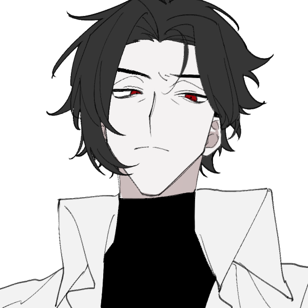
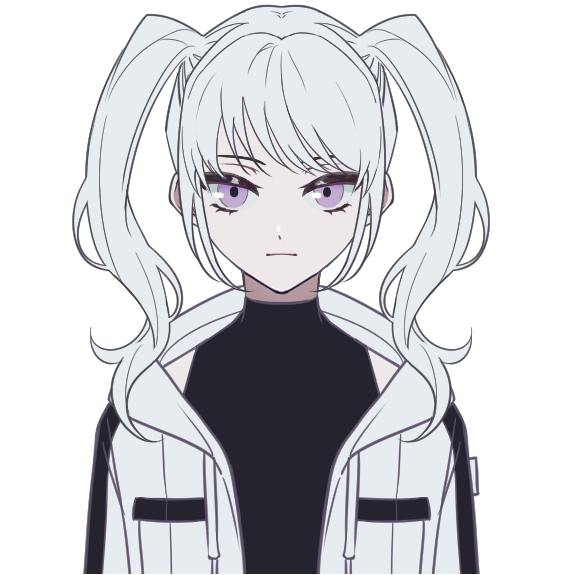
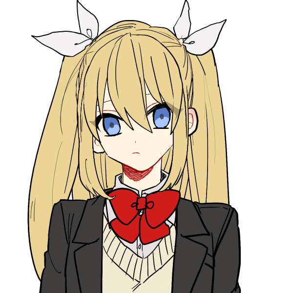
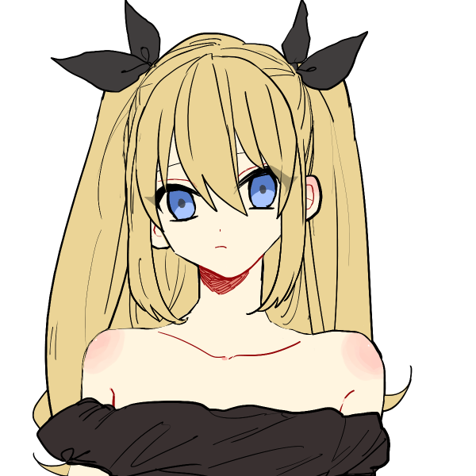
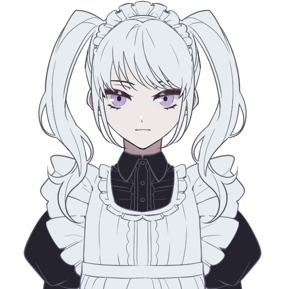
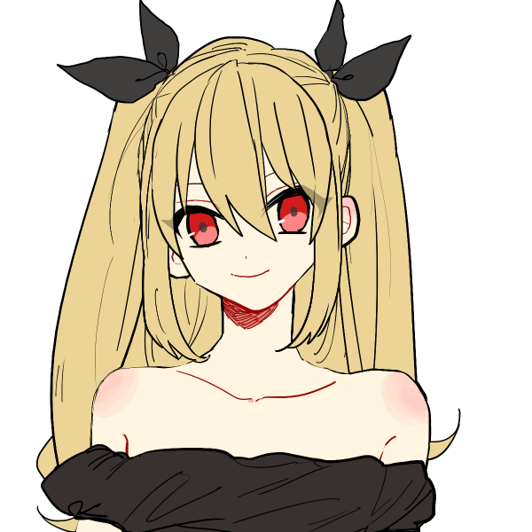
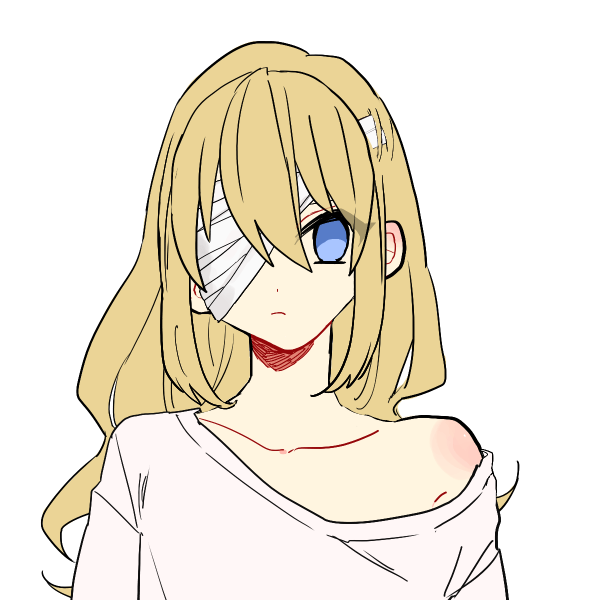

メインログ / 雑談ログ
関連作：「厄災の魔女」
キャラシート
PC1：武田圭吾 (キャラシート) PL：LISPPC2：暗夜走次 (キャラシート) PL：タンゴ
PC3：プロメテウス博士 (キャラシート) PL：ふろずん
目次
■オープニングフェイズ01 東雲明日羽
02 破壊任務
03 約束
■ミドルフェイズ
04 目撃情報
05 始まりの場所
06 記憶を取り戻すために
07 情報収集1
08 情報収集2
09 情報共有
10 二人の明日羽
11 何もない世界
12 雫石真理
13 殲滅兵器
■クライマックスフェイズ
14 鋼の心
15 空洞の支配者
■エンディングフェイズ
16 戦いの終わり
17 虚無
18 仮面の下
19 協力者
プリプレイ
GM : じゃあPCの紹介から始めていきます、PC1からどうぞ！
武田 圭吾 : はーい！
■PC1：武田圭吾
ロイス：東雲明日羽（シノノメアスハ）
カヴァー/ワークス：指定無し/指定無し
UGNの最高意思決定機関である12人の評議員で構成される中枢評議会、通称アクシズ。
“ヘブンズウィング”東雲明日羽は、その中でも穏健派と呼ばれる評議員の一人だ。
明日羽は評議員でありながら支部長として最前線に立って活動する高校生の少女で、あなたはかつて明日羽の支部で共に戦っていたことがある。
しかし約一年前のクーデターでUGNが壊滅したことで、あなたと明日羽は離れ離れになってしまった。
明日羽は行方不明となり、現在も見つかっていない。
ただ無事を祈り続ける日々の中、あなたのもとへ明日羽に関係するという任務が依頼される……。
武田 圭吾 : 「”幸運な男”武田圭吾！ かつてアクシズの一員、東雲明日羽の側近として活動していたUGNのエージェントだ」
武田 圭吾 : 「UGNが崩壊して以来、彼女の居場所はわからない……でも、きっとどこかで生きている。あの子はそんなタマじゃない。俺の勘がそう囁いてるんだ」
武田 圭吾 : 持ち前の能力で数々の苦境を乗り越えてきた不幸系の元逸般人です！ よろしくな！
武田 圭吾 : まだUGNが健在だったころ、父親に改造人間にされたという経歴の持ち主。明日羽ちゃんには父親が事件を起こしたときに助けてもらって以来の縁。
武田 圭吾 : 能力は射撃型のピュアブラックドッグ、基本不幸だけどシナリオ一回だけ捻じれた幸運を呼び寄せることができるぞ！（特異点）
GM : いざというとき役に立つちぇ！
武田 圭吾 : 勘でパスワードを入力して突破したりしたい。よろしくお願いします！
GM : よろしくよろしく！明日羽がいなくても信じて前向きに頑張ってる強い子だった…
武田 圭吾 : 自分の勘だけを信じて生きているから生存をまったく疑ってないけど、本当のとこはどうかはわからない！
GM : 本当のところは死んでてもおかしくないような世界線…！
武田 圭吾 : 絶望的な状況だけど前向きに戦っていきたい（意思Lv5
GM : とても強い。彼女がどうなったのかはセッションを進めればいずれ分かっていくでしょう…
GM : じゃあそんなところかな、紹介ありがと！
GM : 次PC2お願いします！
暗夜ソウジ : あいよ！
■PC2：暗夜走次
ロイス：雫石真理（シズクイシマリ）
カヴァー/ワークス：指定無し/指定無し
あなたの今回の任務はFHの兵器工場の破壊任務だ。
工場を爆破するための爆弾を仕掛けに工場内へと潜入したあなたは、そこで囚われていた一人の少女を発見する。
しかし少女は明らかに正気を失っており既にジャーム化しているようだった。
もう救うことも出来ないと判断したあなたは彼女を置いて破壊任務を遂行するが……。
暗夜ソウジ :
首都高速に一台のクルマが走る。
走り屋の家に産まれ、走り屋となる未来を描き……
そしてこの歪な世界によって追放された。
だが、走るのは辞められない。
それがオレ……"違法輸送者"(ブラック・ポーター)暗夜ソウジの生き方だ。
暗夜ソウジ :
「ああ……追手か。割と速いじゃねえか」
バックミラーに追手のヘッドライトの光が突き刺さる。
「だが……オレには、追いつけねえな」
暗夜ソウジ :
ソウジのクルマの下の影が前方へ伸び……空間を割く！
空間の裂け目に飛び込んだソウジのクルマは影の塊と化し、光の速さで高速を走り消える。
誰にも、追いつくことは許されない。
暗夜ソウジ :
以上！
クルマに乗ってワープ紛いの走行が出来ます(縮地一閃)
GM : 超高速で走ってる車が見える見える…
GM : オープニングでもワープ走行して、無事に爆弾運んでいってほしいね…！
GM : 紹介ありがとう、じゃあ次PC3お願いします！
プロメテウス博士 : はいな！
■PC3：プロメテウス博士
ロイス：木羽零士（キバレイジ）
カヴァー/ワークス：指定無し/指定無し
“バフォメット”木羽零士はFHセルリーダーの研究者だ。
彼が所有する工場では危険な兵器が開発されているらしく、あなたはPC2と共に兵器工場の破壊任務を請け負うことになった。
あなたに与えられた役割は陽動だ。工場に潜入するPC2が爆弾を設置するまで時間を稼ぐ必要がある。
任務を成功させるため兵器工場へと正面から突入したあなたは、木羽零士と対峙する……。
プロメテウス博士 :
プロメテウス博士は、UGNの切り札のひとつだった『天の火』を設計した天才エンジニアです。
自己複製するナノマシンを設計したりと優れた功績を残しているのですが、人格的には……。 優れた才能のために犠牲になったものが人間性だったんですね……。
プロメテウス博士 : まあ、実験だいすきだったり、人をからかうことがだいすきだったり、かわいげもあるとは思います。 子供かな。
プロメテウス博士 :
UGN本部Rラボに勤めていたのですが、FHのクーデターでUGNが壊滅してしまったので、UGN残党が集まっている日本に渡りました。
日本に渡ってからは、レジスタンス組織(親UGN派の人々)から資金援助を受けて、自律型多脚戦車VF-シュタインを設計・配備したりと、不足している戦力を支援することでUGNの延命行為を続けています。
プロメテウス博士 :
戦闘では、『パワーアシストアーマー』を呼んだり、『天の火』を使ったりとハデに立ち回ります！
データ的には、そこそこの装甲があるので耐久力が高めですね！！
プロメテウス博士 : 以上！ PCでは紅一点なので、ちやほやしてください！ オラッ！ 改造させろ！！ 私は美少女だぞッ！！
GM : ちやほやされるような性格してなさそうでは？？？？？？？？
プロメテウス博士 : してないですね。。。評議会に呼ばれるレベルの失態をしたことあるし、身内にまで悪魔とか呼ばれてそう。。。
GM : 悲しいね…有能なはずなのに…
GM : 悪魔コードネームの木羽とどっちが悪魔か勝負だ（？）
GM : 紹介ありがとありがと！じゃあオープニングから始めていくよ！
暗夜ソウジ : あいさー！
武田 圭吾 : いえい！
プロメテウス博士 : わあい！
メインプレイ
シーン1 東雲明日羽
GM : PC1のオープニングになります。
GM : 完全な過去回想になるので登場侵食はありません。
GM : ──三年前。
GM : これはあなたの父親が町の人間を誘拐し、オーヴァードに改造した事件が起きた時のことだ。
GM : あなたは改造されたオーヴァードに襲われて怪我を負い、意識を失っていた。
GM : 次に目が覚めた時、あなたは見知らぬ部屋のベッドに寝かされていた……。
病院
武田 圭吾 : 「……っ、親父……！！」 がばっ、と悪夢から目覚める。額に汗が浮かぶ。
武田 圭吾 : 「ゆ、夢か……いや、ここは、どこだ……！？」まったく見覚えのない場所に動揺する。
東雲明日羽 : 「あ、起きた？」
GM : 突然、そう声を掛けられる。あなたのいるベッドの隣には、一人の少女が椅子に腰かけていた。
GM : 金色の長い髪を白いリボンでツーサイドアップに纏めた、明るそうな雰囲気の少女だ。
GM : 彼女は青い瞳であなたを見つめ、目覚めたことを喜ぶように微笑みを浮かべていた。
武田 圭吾 : 「……君は……？」突然声を掛けてきた少女の方を向く。
武田 圭吾 : 「（気のせいか、なんか……どこかで見覚えがあるような……）」
東雲明日羽 : 「初めまして、武田圭吾くん。わたしは東雲明日羽っていうの。よろしくね！」
武田 圭吾 : 「東雲…明日羽…？ なんで俺の名前を知ってるんだ…？」
東雲明日羽 : 「それはー。わたしはこの町のUGN支部長で、傷付いたあなたを助けてこの病院まで連れて来たから」
東雲明日羽 : 「あっ、UGNって分かる？あなたもオーヴァードみたいだけど、もう知ってるのかしら？」
武田 圭吾 : 「UGN…？ オーヴァード…？ 一体、何の話をしているのか…」まだ何も知らない
東雲明日羽 : 「あら？あなたのお父さんは何も教えてくれなかったの？それとも、お父さんも知らなかったのかしら……」
武田 圭吾 : 「親父？ 親父がなんか関係あるのか？」 父親からは、改造のことについては口外しないように言われているが…
武田 圭吾 : 「…君、その制服うちの生徒じゃないのか？ いったい何が起きてて、何を知ってるんだ…教えてくれ！」
東雲明日羽 : 「え？あっ……そっかそっか！同じ学校だったのね！となると、あなたは先輩になるのかしら」
東雲明日羽 : 「それじゃあ、この後輩が順番に教えてあげましょうっ」
武田 圭吾 : 「（ああ……ちょっとずつ思い出してきたぞ。一年下にも金髪の新入生が入ってきたって話題になってたな…）」まだ痛む頭を押さえながら
武田 圭吾 : 「よろしく頼む」
東雲明日羽 : 「ん！落ち着いて聞いてね……」
GM : と、明日羽はあなたが今まで知らなかったレネゲイドウイルスやオーヴァードのことや、ジャーム化などの危険性……
GM : オーヴァードと人間の共存を目指す組織、UGN。その不俱戴天の仇であるレネゲイドを欲望のままに使う組織、FHのことについて丁寧に分かりやすく説明してくれる。
東雲明日羽 : 「……と、いう感じね」
武田 圭吾 : 「……じゃあ……親父は……！」
武田 圭吾 : 「それに……この俺の改造も……」右手を取り外すと、その下から仰々しい銃口が顔を出す。
武田 圭吾 : 幼いころに、未来を生き残るためと言われて父親に施された施術の後だ。
東雲明日羽 : 「えぇ、そうね……」 その銃口を見つめて
東雲明日羽 : 「あなたのお父さんは街の人を誘拐して、オーヴァードに改造した……。これは当然、UGNは見過ごすことは出来ない」
東雲明日羽 : 「わたし達UGNはこれ以上被害が出ないように、これからあなたのお父さんを捕まえにいかなきゃいけないの」
武田 圭吾 : 「……」
武田 圭吾 : すべては未来を生き残るため。謎の改造手術も、謎の訓練も、何も知らない自分は無邪気に受け入れていた。
武田 圭吾 : 「マジかよ……」そのすべてが妄執の産物だったという事実にショックを受ける。
東雲明日羽 : 「大丈夫……？じゃ、ないわよね……」
武田 圭吾 : 「まあ、な。……でも、落ち込んでも起きたことが変わるわけじゃないだろ」 一瞬うつむいたが、すぐ顔を上げる。
武田 圭吾 : 皮肉にも父親の教育のおかげか、この信じがたい世界の真実を受け入れるのは早かった。
武田 圭吾 : 「その場面、俺も立ち会わせて貰えないか……」
東雲明日羽 : 「それは……だ、だめよ！絶対だめ！」
武田 圭吾 : 「どうしてだ？」
東雲明日羽 : 「…………」 少しだけ言いづらそうにして
東雲明日羽 : 「あなたのお父さんはジャーム……レネゲイドウイルスに体も心も完全に支配されたオーヴァードの可能性が高いと、わたしは思ってる……」
東雲明日羽 : 「だから、立ち会っても……あなたが何を言ってもきっとお父さんは変わらない」
東雲明日羽 : 「それは……辛くはない？」
武田 圭吾 : 「……優しいな、君は」
武田 圭吾 : 「でも……納得できないまま親父と別れるほうが辛いと思うぜ、俺は」
東雲明日羽 : 「……それも、そうかもしれないわね……」
東雲明日羽 : 「……んー、う、うぅぅぅん……」 腕を組んで首を捻りながら悩んで
東雲明日羽 : 「……分かった！分かったわ、じゃあついてきてもいい！」
武田 圭吾 : 「本当か？！」
東雲明日羽 : 「えぇ。もう覚悟は決めているみたいだし……あなたが納得できないっていうなら、こうした方が良い」
東雲明日羽 : 「でもね、わたしがこれ以上は危険だと判断したら絶対にわがまま言わずに下がることが条件よ！」
東雲明日羽 : 「学校では後輩でも、わたし支部長だから！これでもちょっとは偉いんだから！一緒に行動するなら、わたしの命令にはちゃんと従ってもらうから！」
武田 圭吾 : 「ああ、わかってる。スペシャリストの指示には従うもんだからな」
武田 圭吾 : 「ありがとう……！」
東雲明日羽 : 「いいのよ。どういたしまして」 小さく笑って
東雲明日羽 : 「じゃあ、一緒に頑張りましょう。これからよろしくね、圭吾くん」 手を差し出して握手を求める
武田 圭吾 : 「ああ……！ 明日羽……いや、支部長って呼んだほうがいいのか？」握手に応じながら
東雲明日羽 : 「ううん、明日羽でいいわ！わたし、名前で呼ばれる方が好きなの」
武田 圭吾 : 「わかった。明日羽、これからよろしくな！」
東雲明日羽 : 「えぇ！」 明るく笑顔を向ける
GM : ──これがあなたと明日羽の出会いだった。
GM : その後、あなたは明日羽と協力して戦い、拘束した父親をジャームの凍結施設へ送ることが出来た。
GM : 父親と離れ離れになったあなたはUGNに保護され、明日羽のもとでUGNのエージェントとして活動することになった。
GM : ……この時のあなたは、これから二年後にあんなことが起こるとはまだ思いもしなかっただろう。
GM : UGNがFHに敗北し、世界の全てがひっくり返るなんて。
GM : あなたを助け、共に戦ってくれた明日羽がいなくなってしまうなんて。
GM : 誰もそんな最悪なことが起こるとは思えない程、あの頃の世界はまだ平和だったと言えたのだ。
GM : シーンエンド。
シーン2 破壊任務
GM : PC2、PC3のオープニングになります。登場侵食5点をお願いします。
system : [ 暗夜ソウジ ] 侵蝕率 : 45 → 50
system : [ プロメテウス博士 ] 侵蝕率 : 33 → 38
街
GM : 暖かくなってきた、春先のある日のこと。
GM : 一人ドライブ中の暗夜走次は、携帯電話の着信音が鳴ることに気付く。
GM : 表示画面を確認すれば、霧谷からの連絡だと分かるだろう。
暗夜ソウジ :
「もしもし、こちら"ブラック・ポーター"……」
スマホはハンズフリーで通話できるよう、車内の機器で接続してある
暗夜ソウジ : 「配送依頼か？」
霧谷雄吾 : 「はい、“ブラック・ポーター”。あなたに頼みたいことがあります」
霧谷雄吾 : 「ですが、今回の依頼は少し危険なものになる。内容は直接会って伝えたいのですが、構いませんか？」
暗夜ソウジ : 「面倒だな……だが、了承した。」
霧谷雄吾 : 「ありがとうございます」
暗夜ソウジ : 「場所と時間の指定を教えてくれ。」
霧谷雄吾 : 「場所はこれから一時間後、いつもの例の隠れ家で……」 と、それだけで走次も知っている隠れ家だと分かる。
霧谷雄吾 : 「ですが今回は一緒に、一人連れて来て欲しい人がいます」
暗夜ソウジ : 「荷物の追加か……配送料は上乗せするぜ」
霧谷雄吾 : 「それはもちろん。では、その人物のことなのですが」
霧谷雄吾 : 「プロメテウス博士……という女性です。UGNの職員で、今回の任務に協力してもらうことになります」
霧谷雄吾 : 「プロメテウス博士は現在、彼女のラボにいます。場所は……」
GM : と、霧谷はラボの住所を伝える。ここからそう遠く離れた場所でもないだろう。
暗夜ソウジ : 「ふん、1分もかからないな。……今すぐソイツに連絡してくれ、出る準備をしておけってな。」
暗夜ソウジ : 言うが否や、公道のど真ん中でスキール音を響かせながらドリフトする。
暗夜ソウジ : 立ち上る黒い煙と共に、影と化したクルマが猛スピードで市街地を駆ける……
暗夜ソウジ : 30秒後。
暗夜ソウジ :
ラボ付近の立体駐車場。
その薄暗い陰の中に、濃い影が実体化する。
暗夜ソウジ : 「……30秒で十分だったな。後はのんびり行くか」
暗夜ソウジ : クルマを影へ沈ませ、ラボへ向けて歩きだす。
GM : では博士のいるラボまで辿り着ける！
ラボ
プロメテウス博士 : プロメテウス博士のラボは、地下にあった。 UGNが隠れ家としても使っている地下鉄跡に放棄されていた列車を改造して、ラボにしたらしい。
プロメテウス博士 : 列車を改造して造ったラボには、セキュリティがないどころか扉すらない。 少し覗こうと思えば、内部の様子が筒抜けだった。
暗夜ソウジ : 「……ここか。おい、集荷だ」
プロメテウス博士 : 「シューカ……？ 私はシューカなどではないぞ、少年？」ラボ内部の様子を覗くと、山になったスクラップの奥から、女の声が返ってくる。
暗夜ソウジ : 「"ブラックボックス"プロメテウス、で間違いないだろ？」
暗夜ソウジ : 「アンタという荷物を取りに来た。集荷」
プロメテウス博士 : 「……ふむ。 それはおよそ間違いないが。 」
プロメテウス博士 : 「その口振りだと、キミは霧谷クンのおつかいだね？」ラボの奥から、白衣の女が出てくる。 少し焦げ臭い。
暗夜ソウジ :
「おつかい………まあ、そんなとこだ」
僅かに不満を示すが、早く終わらせたいとばかりに先を促す
プロメテウス博士 : 「なるほど。では、運んでくれたまえ～。」白衣の女は、目の前まで近付いてくると、なぜか両手を広げてみせた。
暗夜ソウジ :
「？………何だ」
意図が読めない
プロメテウス博士 : 「私を荷物と言ったのはキミだろ？ ほら、しっかりと運んでくれたまえよ～？」にやりと笑ってみせる
暗夜ソウジ :
「ちっ……面倒な荷物だ」
マスクの位置をいじりながら、眉をひそめる
暗夜ソウジ :
「お望み通りに。……動くなよ」
クルマの電子キーを取り出して目の前にかざす
暗夜ソウジ :
──すとん。
足元に空いた穴に博士が落ちたかと思えば、クルマの助手席に座っていた。
暗夜ソウジ :
「……これでいいだろ？」
ラボの外に出てきて、地下鉄の線路上に現れた愛車に近づく。
プロメテウス博士 : 「ほうほう！ 存外に面白いことができるじゃないか、少年！！ オルクスの能力、あるいはウロボロスの能力かな？ ああ、答えはいいよ？ 勝手に自分で出すからね？」
プロメテウス博士 : 「しかし、いい実験t……運び屋を送ってくれたな、霧谷くんは！ うん！ キミの能力に免じて、しばらくはキミの荷物でいてあげるとしよう！ 」
暗夜ソウジ :
「ありがてえな、全く……」
既に言動に振り回され気味で疲労を感じ始める
暗夜ソウジ : 「……忘れ物はないだろうな？」
プロメテウス博士 : 「ああ、もちろん！ 」
プロメテウス博士 : 「あるとも！！」
暗夜ソウジ :
「………何だよ、回収するから言え……！」
冷静そうな言葉の下に呆れと怒りが滲み出している
プロメテウス博士 : 「もうちょっとからかってやろうと思っていたんだが、こんな風に連れ出されたものだからね？ 何も持ってないよ？」愉快そうに笑って
プロメテウス博士 : 「そして、忘れ物は……取ってこないとマズいものが一つ。どうでもいいものが一つ。 場所は分からないだろうし、私が取ってくるよ。 穴を開けてくれないか？」
暗夜ソウジ :
「ほらよ……」
ゲートを開きつつ、シートをリクライニングさせて目を閉じる
プロメテウス博士 : そうして博士がラボに戻ると、一分も経たない内に、ゲートからボールのようなものが投げ込まれてきた。 それはソウジくんの席にそこそこのスピードで落ちてくる。
暗夜ソウジ :
「ぐっ……」
寝ている状態から避けるほどの身体能力は持たないため、腹に当たる
プロメテウス博士 : 「よっと」ボールに続いて、小さな袋を持った博士が飛び降りてくる。
プロメテウス博士 : 「ああ、ちょうどいいところに落ちたな。それはキミが持っていてくれ。爆弾だから。」ボールを腹に乗せているソウジくんを見て、事もなげに言う。
暗夜ソウジ :
「クソッ………ああ、任務とやらに必要な物品か……」
悪態をつきながら、気だるげに体を起こす
暗夜ソウジ : 「……ところで、気軽に投げていいモンなのか……？」
プロメテウス博士 : 「え？ ううん？ 衝撃力によっては爆発するけど。」
暗夜ソウジ : 「……アンタがそういう人間ってのはよーく分かった」
暗夜ソウジ : 後部座席に爆弾を優しく投げ込み、エンジンをスタートさせる。
プロメテウス博士 : 「ふむ？ まあ、それはなによりかな？」
暗夜ソウジ : 「出発するぞ。自分の身が大事ならシートベルトをしておけ。」
プロメテウス博士 : 「ああ。分かった。」しないらしい
隠れ家
暗夜ソウジ :
地下鉄の廃線の中を影のクルマが駆ける。
車内では30分ほど走ったように感じられたが……隠れ家に到着した時には時計は出発から1分も過ぎていなかった。
暗夜ソウジ :
「到着だ。………霧谷、配送に来たぞ！」
ホーム下の線路でクルマから降り、声を張る
霧谷雄吾 : 「お待ちしていました。お疲れ様です、“ブラック・ポーター”」
GM : 地下鉄駅のホームで待っていた霧谷があなた達を出迎える。
暗夜ソウジ :
「依頼の品、確かに配達したぜ。………苦労したがな……」
霧谷雄吾 : 「えぇ……本当にありがとうございます」 博士の事は知ってるので想像できる
プロメテウス博士 : 「やあ。こうして会うのは久しぶりかな、霧谷クン？」
プロメテウス博士 : 「それはそれとして、早速、気になることがあるのだが。」駅のホームにある時計を見て
霧谷雄吾 : 「そうですね、お久しぶりです。……どうしましたか？」
プロメテウス博士 : 「いや、時間がズレてるだろう？ ここに着くまでに31分19秒経ったハズだぞ？」
暗夜ソウジ : 「………オレがそんなトロいわけないだろ」
暗夜ソウジ : 「体感じゃ相応の時間は経った気はするんだろうが……実際のオレの走りは誰も追いつけないぜ」
プロメテウス博士 : 「……？」首を傾げる
暗夜ソウジ : 「オレが本気で走ると……何か、ズレんのさ。体感と現実で時間がな。」
プロメテウス博士 : 「……ふむ。ふむふむ。 なるほど？ 相対性理論が予言した時間の遅れでも起きているのだろうか。 いやはや興味深い！！」
暗夜ソウジ : 「理屈は知らねーよ。………調べたきゃ勝手にしろ。オレの邪魔にならない範囲でな。」
プロメテウス博士 : 「ああ、では勝手にさせてもらうとしよう！」にっこり
霧谷雄吾 : 「ふふ……。しかし申し訳ありませんが、その調査はまた後にしてもらいましょう」
霧谷雄吾 : 「まずは今回の任務内容について説明させてください」
プロメテウス博士 : 「ああ、そうだったね。 本題を忘れるところだった。」
霧谷雄吾 : 「えぇ。……では今回、あなた達に頼みたいこと。それは……」
霧谷雄吾 : 「ある兵器工場の破壊です」
暗夜ソウジ : 「さっきの爆弾の配送か。……いつも通りの仕事だな。」
暗夜ソウジ : 「だが……それだけならわざわざ呼び出ししない、だろ？」
霧谷雄吾 : 「その通り……。今回は懸念材料がある。それについて、詳しく説明させてもらいます」
GM : と、霧谷は今回の任務について説明を行う。
FHの兵器工場にて、危険な兵器が開発されている。
この兵器は完成すればUGNにとって非常に大きな脅威となるだろう。
兵器が完成し、運用される前に工場を破壊しなければならない。
・兵器開発を行っているのは木羽零士というFHセルリーダー。コードネームは“バフォメット”。
・工場の破壊にはプロメテウス博士が作成した爆弾を一つ使用する。
・この爆弾は時限式で、セットしてから約三分で起爆するが、工場の中心部に設置すれば工場を丸ごと吹き飛ばして破壊することが出来るだろう。
・工場内に潜入し、爆弾を仕掛けるのは暗夜走次に任せたい。
・他のエージェントによる調査によると、兵器工場は機械によって作業が全て自動化されている。そのため人間の職員は存在しない。
・工場には木羽零士と複数体の警備用ロボット、そして兵器開発に利用されているジャームがいる。
・工場は警備ロボットによって守られているため、気付かれないように安全に爆弾を設置することは難しく、陽動作戦が必要になる。
・木羽零士や警備ロボットの陽動はプロメテウス博士に任せたい。正面から突入し、走次が爆弾を仕掛け終わるまで出来る限り気を引き付けて欲しい。
・工場の破壊が完了すれば、走次とプロメテウスは合流し速やかに帰還すること。
GM : 任務についてはこんな感じ。長いので要約しましたが、PCは霧谷から順番に説明されます。
プロメテウス博士 : 「いいな～、自動工場……。私も欲しいな～……。」作戦を聞いて、そんな感想が出てくる呑気さ。
暗夜ソウジ :
「へえ……走りがいがあるな」
スライドを見た後、資料もチェックする
霧谷雄吾 : 「はは……今のUGNではその要望を叶えるのはかなり難しいですね……」 博士に苦笑して
暗夜ソウジ : 「(こんなクソッタレな世の中だけど、コイツの手に自動工場がないことだけは感謝できるな……絶対ろくでもないことになる)」
霧谷雄吾 : 「……“バフォメット”の工場の警備は厳重だと聞きます。今回はかなり危険な任務になる」
霧谷雄吾 : 「二人共、この仕事……引き受けてもらえますか？」
暗夜ソウジ : 「報酬次第。……ま、アンタならオレが引き受けるだけのパーツは用意してくれんだろ、霧谷。」
霧谷雄吾 : 「えぇ、もちろん。この仕事に見合うだけの報酬を用意しています」
プロメテウス博士 : 「え？ それ、私が用意したいなぁ？」
暗夜ソウジ : 「や め ろ」
暗夜ソウジ : 「オレのクルマはオレしか弄らせないからな……特にアンタみたいな何考えてるか分からないヤツはなおさらな！」
プロメテウス博士 : 「ええ？ じゃあ、改造予定の内容は言うから、弄らせてくれよ。」
暗夜ソウジ : 「……言ってみろ」
プロメテウス博士 : 「まずは加速ブースターを取り付けて、それからドアを広げて翼にして高速飛行を……」
暗夜ソウジ : 「……却下だ、却下……！ ブーストならオレの能力で十分だ！」
暗夜ソウジ : 「ましてや、クルマを飛ばすとか……冒涜だろうが……っ！」
プロメテウス博士 : 「えぇ……。 折角、このあいだの実験で、自重と加速の負荷に耐えられずに空中分解したジェットパック『イカロス』の代わりになると思ったのに……。」
暗夜ソウジ :
「────」
絶句している
暗夜ソウジ : 「とにかく、オレのクルマに余計なコトしてみろ……誰も知らない山中に置き去りにしてやる……」
プロメテウス博士 : 「ひどいなあ……。 まだなにもしてないのに……。」
プロメテウス博士 : 「……ああ、そうだ。また本題から逸れるところだったね？」
暗夜ソウジ : 「ああ……早く終わらせてくれ。また余計な計画が産まれる前にな。」
プロメテウス博士 : 「爆破作戦には、もちろん参加するよ。 FHの工場見学もしたいし、試験運転もしたかったから、とても丁度いいタイミングだ。」危険な任務に立候補しているにも関わらず、恐怖や不安などの表情はない。 あるのは好奇心だけだ。
霧谷雄吾 : 「助かります、博士……」 色んな意味で、と走次くんの車が改造されずに済みそうでほっとして
霧谷雄吾 : 「作戦の決行は早い方が良い。これからお二人には工場へと向かってもらいたいのですが、構いませんか？」
プロメテウス博士 : 「いいよ。少年は時間が必要かな？ 例えば恋人に別れを告げるとか。」
暗夜ソウジ : 「了解。何事も速いことに越したことはないからな。」
暗夜ソウジ : 「恋人とかいねーよ。仮に作るとしても、常識を弁えたオンナにするぜ」
プロメテウス博士 : 「いやいや、私のような女の方が一緒にいてたのしいという意見もあるよ？」
プロメテウス博士 : 「まあ、私としては恋愛など退屈なだけだから、二度とゴメンだが。」
暗夜ソウジ : 「(じゃあなんで反論したんだよ……)」
暗夜ソウジ : 「アンタと話すとペースが狂うな、全く……」
暗夜ソウジ : 「……さっさと行くぜ。今度は忘れ物もないだろ？」
プロメテウス博士 : 「ああ。 スピーディーに取り掛かろう。」
霧谷雄吾 : 「では、連絡用にこれを」
GM : 霧谷は二人にトランシーバーを渡す。作戦中の連絡や合図に使うようだ。
暗夜ソウジ : 「またずいぶんとアナクロだな……こっちの方が逆に気取られないのか？」
暗夜ソウジ : 「これ、カスタムしても構わないよな？ ハンズフリーにしないとオレは不便だからな。」
霧谷雄吾 : 「少し特殊な改造がされてあって、敵の本拠地内でも電波を盗み取られないようになっています。もちろん、カスタムについては構いません」
プロメテウス博士 : 「私みたいなブラックドッグ能力者は、無線通信も傍受できるからね。当然の機能かな。」
プロメテウス博士 : 「トランシーバーの件は了解したよ。他にはないかな？」
霧谷雄吾 : 「こちらからは大丈夫です。準備ができ次第、出発してください」
暗夜ソウジ : 「すぐにカスタムする。終わり次第、決行だ」
プロメテウス博士 : 「トランシーバーのカスタムくらい、機械工学の第一人者たる私に任せてくれればいいのに～」
暗夜ソウジ : 「ヘッドセット化以外のことをしない、って誓えるならな」
プロメテウス博士 : 「う～～～～ん……………………。」
プロメテウス博士 : 「まあ、時間も素材もないし、あんまり余計な機能は付けないよ？ タブン？」
暗夜ソウジ : 「………ほらよ。言っておくが、余計なコトしたらバレるんだからな……オレも素人じゃない。」
プロメテウス博士 : 「わお、意外だね。 渡してもらえないと思ってた。」
暗夜ソウジ : 「時間は惜しい。それだけだ。」
プロメテウス博士 : 「そうかそうか！ でもまあ、信頼には応えておくとしようか！」
プロメテウス博士 : ――プロメテウス博士が暗夜走次からトランシーバーを手渡されてから、10分後。
プロメテウス博士 : 「うーん……。 ホントにこんな面白味のないものでいいのかい？」
プロメテウス博士 : と不満そうな博士に手渡されたのは片耳しかないイアホンだった。 通常のイアホンと違うのは、ケーブルの先には接続プラグがなく、代わりにマイクがついていることだろう。
暗夜ソウジ :
「……見せてみろ。」
耳に嵌めて、操作してみる
プロメテウス博士 : 「ああ、その状態で、イアホンの裏についているボタンを押してみたまえ。」
暗夜ソウジ :
「……？ 発話ボタンはそこか？」
押してみる
プロメテウス博士 : それは発話ボタンではなかったようで、イアホンについているケーブルが持ちあがると耳の裏側を沿うように固定される。
プロメテウス博士 : 同時に、ケーブル先端部のマイクが持ち上がって口元に。
プロメテウス博士 : 「いいや、そこは装着ボタンだね。 そのイアホンについているケーブルは、『アリアドネ』という人工筋肉で造ったものだ。 対オーヴァードとの戦闘時にも外れないようにね。」
暗夜ソウジ :
「………驚いたな……正直、ただの変態女と思ってたぜ」
頭を振って、完全にフィットしているのを確認しつつ
プロメテウス博士 : 「ハハ！ 心外だなあ！！ 自分で言うのもなんだが、UGNの切り札を造ったという実績はホンモノだよ？」
暗夜ソウジ : 「………その切り札とやら、とっくに使い時なんじゃねえのか？ FHに世の中めちゃくちゃにされてんぞ……」
暗夜ソウジ : 「……ホントに役に立ってるのか？」
プロメテウス博士 : 「それはそうなんだが、今は管理者権限でロックされていてね。 使えないんだ。 あとFHにも攻撃を受けたようだし。」
プロメテウス博士 : 「まあ、『天の火』の話は置いておくとしよう。今もっている手札について説明しなきゃね。」
プロメテウス博士 : 「少年、あのボールは持ってるかな？ 忘れ物だと取りに戻ったやつだ。」
暗夜ソウジ :
「爆弾とか言ってたヤツか？ クルマにあるぜ」
ホーム下の愛車を親指で指差す
プロメテウス博士 : 「ふむ。 車の中に。 ……口で説明してもいいんだが、まあ、見てもらった方が早いか。」
プロメテウス博士 : そう呟くと、白衣の下から数本のケーブルが飛び出る。 そして、そのケーブルは器用にクルマのドアノブに巻き付くと、ドアを開けて、例のボールを運んでくる。
暗夜ソウジ :
「……どこぞのアメコミのヴィランみてーだな」
うねうねと動くワイヤーを見て、ぽつりと
プロメテウス博士 : 「おいおい、ヴィランと一緒にしないでくれよ。 私は正義のUGNエージェントなのだから～。」ぽつりと呟かれた言葉は聞こえていたようだが、なんとも思ってないような声色で返す。
プロメテウス博士 : 「――と、正義などという主観的なものは置いておくとして、それを捻ってみたまえ。」そういって、またボールを投げて渡してくる。
暗夜ソウジ : 今度は起きてるので取り逃がすということもなく、ボールをキャッチする。
暗夜ソウジ : 「………起爆しないだろうな？ ……あと、急に喋り出すとかってのも無いだろうな……心臓に悪い」
プロメテウス博士 : 「しないしない。 ここで起爆したら怒られちゃうし、あまり気乗りしなかったから余計な機能も付けてない。」
暗夜ソウジ :
「………ならお言葉通りに、と」
ボールを捻る
プロメテウス博士 : ボールはガチャポンの容器のようなものだったようで、捻ると二つに分かれた。 そして、内部にはカップヌードルの容器のような形状をした円筒状の物体が入っていた。
プロメテウス博士 : その円筒にはキッチンタイマーが乗っており、それから伸びる数本のケーブルでしっかりと固定されているようだった。
プロメテウス博士 : 「それが爆弾。 ちゃんと容器に入っていたという訳さ。 さすがに地下で爆発されたらヤバいからね。 (まあ、勝手にラボに入ってきたUGN職員が入れたんだが。)」
暗夜ソウジ : 「………衝撃で起爆するかもって話はジョークだったか」
プロメテウス博士 : 「まあね。 全力で投げると爆発するかもだが。」
プロメテウス博士 : 「――使用方法としては、キッチンタイマーのボタンを押すと起動。さっき渡したイアホンみたいにケーブルが伸びて固定。」
プロメテウス博士 : 「起動から爆発までは三分。 同じ人間が押しなおせばカウントはストップするが、他の人間が押しても止まらない。 指紋認証というやつだね。」
プロメテウス博士 : 「……と、こんなところかな。 質問とかある？」
暗夜ソウジ : 「無いな。オレの仕事は配送してセットするだけだ。……それが出来るなら問題ない。」
暗夜ソウジ : 念の為ボールケースに爆弾をしまい直し、クルマのダッシュボードにしまう。
プロメテウス博士 : 「ふうん？ 爆破テロは初めてじゃないのかい？ キンチョーとかしないの？」
暗夜ソウジ : 「……今のUGNに配送のプロはオレしかいない。危険物、貴重品、重要人物。……どれも慣れたさ。」
プロメテウス博士 : 「はは、まったくUGNは人材不足が深刻だなあ、いつでもどこでも。」
暗夜ソウジ : 「こんな地下駅の跡地をアジトにしなきゃいけないようなレジスタンスじゃ……無理もねえ話だな」
プロメテウス博士 : 「まったくだが、まあ、現状を嘆いていても仕方ない。 準備も済んだところで行くとしようか。」
プロメテウス博士 : 「……ああ、そうだ。 爆破テロが成功したら、このお姉さんから少年に、がんばった御褒美をあげようじゃないか。」
暗夜ソウジ : 「……へえ。内容にはあまり期待せずに待ってるぜ。」
プロメテウス博士 : 「いいや、期待して待っていたまえ。」
暗夜ソウジ : 「なーんか胡散臭えんだよ……！ とにかく、出発するぞ」
プロメテウス博士 : 「ふふ……ああ、行こうか。」
暗夜ソウジ :
地下鉄のホーム下から、二人を載せたクルマが走り出す。
すぐにトンネルの闇に紛れて判別がつかなくなってゆく……
GM : では走次のクルマで、あなた達は工場から少し離れた場所まで辿り着く。
GM : ここからは陽動と潜入に分かれる必要がある。
GM : プロメテウス博士はこのまま工場の正面入り口へ。
GM : 走次は陽動が開始し、霧谷から連絡を受けるまでは待機だ。
GM : そんな感じでここからは場面を分けて進めます。まずは博士から。
兵器工場 正面入口
GM : プロメテウスは走次と別れた後、兵器工場のすぐ近くまで向かう。
GM : 工場の入り口前には三体の警備ロボットが配置されていた。
GM : 無機質な青いボディの人型ロボットは、工場への侵入を阻むように周囲を警戒している。
プロメテウス博士 : 「ふむ、さっそくロボットの出迎えか。 ……ちゃんとAIは搭載してるだろうか？ 」
プロメテウス博士 : 「お～い、工場見学に来たんだが。案内してくれないか～？」笑いながら声をかける。
GM : では博士が声をかけると、警備ロボットが反応し一斉に銃を構える。
GM : 電子音声で返事をすることもない。戦闘能力はありそうだが、そこまで高度なAIというわけでもないのかもしれない。
プロメテウス博士 : 「ああ、知能がある訳じゃないのか……。 工場があるって聞いて期待してたのに、なんかガッカリだな……。 」銃を向けられながらも、つかつかとゆっくり歩いて近付いていく。
GM : 接近した瞬間、警備ロボットは機械的に引き金を絞る！銃声が上がり、博士へと三発の弾丸が迫る。
プロメテウス博士 : 「ああ、もう、そういうのいいからさ……。」即座に左右5本ずつ、計10本のワイヤーが白衣の下から伸びて、全ての弾丸を弾き落とす。
プロメテウス博士 : 「それじゃあねえ」そして、銃撃を続けようとするロボットたちの脇を、意に介することすらなく、そのまま通り過ぎていく。
プロメテウス博士 : 次の瞬間、三体のロボットはバラバラにされ、鉄屑になり果てて崩れ落ちた。
プロメテウス博士 :
10本のワイヤーは、それぞれが目に見えないほど細いナノワイヤーが束ねられたもの。
それをほどいて、ナノワイヤーとしてロボットの隙間から侵入させると、内部から瞬時に分解したのである。
GM : ではロボットを難なく撃破したところで、
木羽零士 : 「な、なんだ、てめぇはぁ！？」
GM : 工場の中から、白衣を着た黒髪の男が慌てた様子で飛び出してくる。
GM : そう叫ぶのは“バフォメット”木羽零士だった。
プロメテウス博士 : 「ふふ、なんだかんだと言われたら……、答えてあげよう。しがない工場見学者だよ？」
木羽零士 : 「何が工場見学者だ！警備ロボットを破壊しておいて……！！」
木羽零士 : 「一体誰だよてめーはよぉ！どこのセルのやつだ？それともまさかUGNか！？」
プロメテウス博士 : 「まったく、工場見学がしたいと言っただけで撃ってきたのだから、正当防衛だろうに……。」
プロメテウス博士 : 「まあ、私からも聞きたいことがあるし、そちらの質問にも答えてあげよう。 ――誰か、というのは哲学的な問い、ではないね？ 」
プロメテウス博士 : 「であれば、とてもカンタンだ。 私はプロメテウス博士と呼ばれているUGNの人間さ。」
木羽零士 : 「プロメテウス博士ぇ？知らん名前だが、マジでUGNかよ……」
プロメテウス博士 : 「機械工学者としてそこそこ知名度があると聞いていたのだが、聞いたことがないか。 まあいいか。」
プロメテウス博士 : 「では、キミの要求にこたえたところで、私からも要求がある。」
木羽零士 : 「なんだよ」
プロメテウス博士 : 「工場見学がしたいのだが、案内してくれないか。」
木羽零士 : 「ふざけんな！お前如きにおれの大切な兵器を見せるとでも思ってんのか！？」
プロメテウス博士 : 「ええ……、じゃあ仕方ない。 もう一つの要求に切り替えよう。」
プロメテウス博士 : 「この工場を私に寄越せ。」
木羽零士 : 「あぁ……？」
プロメテウス博士 : 「なあ、いいだろう？ 警備ロボットの質は低いし、工場内で造ってる兵器とやらも同じクオリティなら、玩具工場の方がマシだ。 これじゃ資材がもったいない。」
木羽零士 : 「……。テメ～～～～～～……」
GM : 今の言葉が相当頭に来たのか、木羽は博士を睨みつける。
木羽零士 : 「どうやらこのおれをコケにしてきたみてぇだなぁ！？お断りだこのクソバカ女がよぉ！！」
プロメテウス博士 : 「折角、こっちは質問に答えてあげたって言うのに、私の言うことは聞いてくれないのかい？ これって不公平じゃないかい？ 責任者を出したまえよ、責任者を～」その鋭い視線も受け流している。というよりは、なんとも思っていない。
木羽零士 : 「うるせぇうるせぇうるせぇ！！UGNの変な女一人くらい相手にしてる暇ねぇところだったが……テメーだけは生きては帰さねぇ！！」
木羽零士 : 「──出てこい！！」
GM : 木羽が合図すると、工場内から大量の警備ロボットが駆けつけてくる！
GM : 先程と同型のロボットだが、ぱっと見ただけでも三十体程度はいるだろう。
プロメテウス博士 : 「なるほど！ 質が低いのは仕方ないから、数で補おうってワケだ！」笑って
木羽零士 : 「言ってろ！三体倒したくらいで良い気になりやがってよぉ……むかつくぜぇ……！！」
プロメテウス博士 : 「ああ、そうか！ これだけの数がいるということは！！」ぽんと合点がいったように手を合わせる
プロメテウス博士 : 「これから合体するんだろう！？ そうだろう！？」
木羽零士 : 「あぁ！？しねーよ！！」
プロメテウス博士 : 「は……？ 嘘だろ……？ こんなに面白味もなにもない、カタチだけの警備ロボット、誰が造ったんだ……？」
木羽零士 : 「いちいちうるせぇなこいつは……！」
木羽零士 : 「お前程度、その面白みも何もないカタチだけの警備ロボットで十分だって話なんだよ！！」
プロメテウス博士 : 「ふうん……。 まあ、いいか。 面白くない機械なんて他にも山ほどあるし、みなが恩恵を受けることができるという、科学の側面の一つということで。」
プロメテウス博士 : 「それに、一体一体は大したことなくても、これだけの数がいれば、実験には十分だろうし。」
木羽零士 : 「実験ん？実験だと？そんなことしてる暇与えねぇよ……もうすぐにここでテメーは死ぬんだからなぁ……！！」
プロメテウス博士 : 「まあまあ、見ておきたまえ。」
プロメテウス博士 : 内ももをなぞるようにスカートをたくしあげる。
木羽零士 : 「……！？」 突然のことに驚いて固まる
プロメテウス博士 : そして、太ももを内から外に払うと、博士が触れた箇所には『START』という文字が浮かびあがった。
HR-クレイトス : 『HR-クレイトス・起動。』
プロメテウス博士 : 「さあ、実験をはじめようか。」
プロメテウス博士 : 次の瞬間、プロメテウス博士と木羽零士の間に、金属の欠片が飛び込んでくる。
プロメテウス博士 : その欠片たちは、続々と飛来してくると、やがて山のように積み重なり――
プロメテウス博士 : そして、約3mの体躯を誇る、四本腕のパワードスーツ『HR-クレイトス』になっていた。
木羽零士 : 「パワードスーツ……？」
プロメテウス博士 : 「ああ。 これは試験段階のパワードスーツでね。 キミたちには悪いがスクラップになってもらおう。」パワードスーツに操作用のワイヤーを挿し込むと、不敵に笑いかける。
木羽零士 : 「何だか知らねえが……スクラップになんのはテメーのそのクソスーツの方だろうが──行くぞぉ！！」
GM : 木羽の指示で、警備ロボット達は一斉にプロメテウスへと襲い掛かる……！！
兵器工場 近辺
GM : ──一方その頃。
霧谷雄吾 : 「“違法輸送者”、聞こえますか？──“ブラックボックス”が陽動作戦を開始しました」
霧谷雄吾 : 「工場内の警備ロボットを上手く誘導出来ているようです……今のうちに潜入をお願いします」
GM : と、車内で待つ走次に、トランシーバーで霧谷がプロメテウスの状況と作戦開始を伝えてくる。
暗夜ソウジ : 「言われなくても分かるぜ。……ずいぶん派手にやってるらしい」
暗夜ソウジ : クルマから降り、闇夜に紛れて素早く工場敷地内を進む。
暗夜ソウジ : 「ポイントはこの中か……」
暗夜ソウジ : 扉の一つを器用にこじ開け、内部へ突入する。
GM : では走次は工場内への潜入に成功する。
兵器工場 中心部
GM : 陽動作戦が上手くいっているのか警備用ロボットは見当たらず、問題なく爆弾を仕掛ける工場の中心部へと向かうことが出来た。
GM : 中心部で作られている兵器は、全長二メートル程の人型兵器だった。
GM : 黒いボディに鋼の装甲、無機質なマスクから除く赤いカメラアイ。不気味な見た目をした兵器が大量に並んでいる。
GM : その数は百を超えているのではないだろうか。
GM : ……まだ未完成の状態で襲ってくることもないはずなのに、この兵器からは何か底知れない力を感じなくもない。
GM : この兵器が一斉にUGNを襲えば、確かにまずいだろうと予想できる。
暗夜ソウジ : 「宅配です……っとこれは……」
暗夜ソウジ : 「なるほどな……目標にされた理由も納得だ」
暗夜ソウジ :
「………さて、さっさと済ませるか」
ボールを開き、慣れた手付きで爆弾を設置する。
暗夜ソウジ :
「……配送完了。撤収する。」
トランシーバーに連絡を送る。
霧谷雄吾 : 「了解しました。“ブラックボックス”にはこちらから連絡します」
GM : あとは工場から脱出するだけ。三分後には爆弾は爆発し、工場もろともこの機械兵器は全て破壊されるはずだ……。
GM : ……が、そこで。走次は無数の機械兵器の中に、一つの人影があることに気付く。
暗夜ソウジ :
「………誰だ？」
すぐに走り出せるように脚に力を込めながら、そちらを確認する
GM : それは走次と同年代程度の少女だった。
GM : 銀色の髪を二つに結び、白い上着を着た彼女は紫色の瞳を伏せて床に座り込んでいる。
GM : よく見れば少女の四肢は鋼の拘束具で抑えつけられ、自由を奪われてしまっているようだった。
少女 : 「…………」
GM : 少女は走次の声に反応して、静かに瞼を開けてこちらを見ている。
暗夜ソウジ :
「……そこで何してる」
問いかけている場合ではない。だが、ソウジはその少女を無視して脱出できるほど冷酷でも、論理的でもなかった。
少女 : 「…………」
少女 : 「……絶滅」
少女 : 「絶滅、せよ……」
GM : 紫色の虚ろな瞳が走次を捉え、言葉を呟いた瞬間。
GM : 少女が呟く言葉に反応するかのように、走次の体内に宿るレネゲイドが震え始める。
GM : これは暴走の前兆だ。強力なジャームと相対した時、高い侵食率のレネゲイドの気配に中てられて自身のレネゲイドが共振する現象。
GM : 寒気が走り、息が詰まる。急いでレネゲイドの制御に集中しなければきっと暴走してしまうことだろう。
暗夜ソウジ : 「………っ！」
暗夜ソウジ : 「(集中しろ……影を整えろ、暗夜ソウジ)」
暗夜ソウジ : 「(コイツ……ジャームなのか……？ 拘束されるには十分な理由だが……)」
少女 : 「絶滅せよ……。絶滅せよ……。オーヴァードは……絶滅、せよ……」
GM : 少女は感情を感じさせない声でただそう呟き続けるだけだ。
暗夜ソウジ : 「クソッ……おい、マトモに喋れねえのか？ じゃなきゃオレは、アンタをジャームとして……見捨てなきゃいけねえ……」
少女 : 「…………」
GM : 少女は突然黙り込む。走次の言葉に返すことも無い。
暗夜ソウジ : 「……霧谷、時間はあと何秒残ってる」
霧谷雄吾 : 「もう、二分……。いえ、もうすぐ一分を切ります……！」
霧谷雄吾 : 「“ブラック・ポーター”、このままでは……！」 切羽詰まった声で
暗夜ソウジ :
「クソッ……」
踵を返し、出口の方へ向かう
暗夜ソウジ :
「(クソだ、クソだ、クソだ……！ この世は、この世界は……っ！何もかも狂っていやがる！！)」
走りながら、思考を振り払うように悪態をつく
暗夜ソウジ : 「(あんな子もジャームに成り果てて……怪物として死んでいくのか……！ そしてオレは、そんな世界を変えられないままだ……っ！)」
暗夜ソウジ :
クルマに飛び込み、エンジンをスタートさせる。
次の瞬間にはたなびく黒い朧を残してその場から消え去っている……！
暗夜ソウジ :
「(オレは……無力だ)」
流れる景色の中で、それだけを痛感させられる。
兵器工場 正面入口
GM : ──走次が爆弾をセットし、霧谷に連絡した頃。
GM : 工場の正面入り口の辺りで、プロメテウスは押し寄せてくる警備ロボットと戦い続けていた。
GM : 一体一体は確かに弱く粗末なロボットだったが、数があまりにも多すぎる。
GM : 加えて、木羽が直接ロボットの操作をしているようで、先程よりも多少は戦えるようになっているようだった。
GM : 油断しなければ負けはしないだろうが、この量を一人で相手し続けるには流石に骨が折れて来た……といったところで、
霧谷雄吾 : 「“ブラックボックス”、爆弾の設置が完了しました！すぐに脱出してください！」
GM : と、トランシーバーから霧谷の連絡が届く。
プロメテウス博士 : 「それはよかった。 そろそろつかれてきたところでね。 身体の方の負荷をまったく考えてなかったのは課題だな。……引き籠りの体にはそこそこ応える。」
霧谷雄吾 : 「では急いで……！」
木羽零士 : 「……？なんだ！？誰かと話してんのか！？」
プロメテウス博士 : 「さっき質問に答えたとき、キミはなにもしてくれなかっただろ。 答えないよ。」拗ねたような声で
木羽零士 : 「チッ……」
GM : 木羽はイラついたように舌打ちをすると、ロボットを操作することに集中する。
プロメテウス博士 : 「(ここにいると、さすがにマズいかな。 引き付けながら撤退をはじめよう。)」
プロメテウス博士 : 《完全演技》を使用！ スタミナ切れを装って、ジリジリと後退します！！
木羽零士 : 「ふっ……なんだぁ？ようやくへばってきたか？はっははははぁ！！このまま潰してやるぜぇ！！」
GM : 木羽は簡単に騙されてるようで、後退することが出来る。
プロメテウス博士 : 「(こいつが工場の責任者なら、意外とFHも人材不足なのかもね…。)」
プロメテウス博士 : 「(よし。爆発に巻き込まれるギリギリの位置まで後退して、FHの手勢には倒れてもらおう。 ついでに軽く装甲のテストをしよう。)」
プロメテウス博士 : ということで、爆発に巻き込まれるギリギリの位置まで撤退します！
GM : 了解！撤退出来ます
木羽零士 : 「おらぁ！もうこいつで終わり──」
GM : 木羽が勝ち誇ったように叫ぶ、その時だった。
GM : ──突然、耳が壊れるような爆音が工場の奥から鳴り響く。
GM : 火山が噴火するかのような赤い爆発。工場は一瞬で爆炎に呑み込まれ……
木羽零士 : 「ぐオああああああああああああああ！！！？？？」
GM : 工場のすぐ近くにいた木羽は爆風に巻き込まれ、汚い悲鳴を上げながら吹き飛ばされた。
GM : また、戦闘でガタが来ていた警備ロボットもこの衝撃で機能停止に追い込まれてしまう。
GM : その場で無事なのは離脱したプロメテウスだけだ。
GM : とはいえ、爆発に巻き込まれる範囲ギリギリの位置。パワードスーツの装甲は問題ないが、衝撃はそれなりに伝わってくるだろう……
プロメテウス博士 : 「ふむ……。」パワードスーツに身を包んだ博士は、火の海を悠々と歩くと、吹き飛んだ木羽零士の下まで向かう。
プロメテウス博士 : 「騙して悪いね。 だが、キミが要求をのまなかったのも悪いんだぞ？」しゃがみ込んで言う。 悪びれている様子はまったくない。
木羽零士 : 「グ、うぅぅぅぅぅ……！！」
GM : 木羽は熱波に焼かれた痛みに耐えながら、博士を見上げる。
木羽零士 : 「てめぇぇぇ……！最初から爆破するつもりだったのか……！！」
プロメテウス博士 : 「いや？ キミが工場を寄越してくれたら、考えていたよ？ まあ、基本的には爆破するつもりではあったんだけど。」笑って
木羽零士 : 「やっぱそうなんじゃねぇか！！くそぁ！！」
GM : ダン！と拳を地面に打ち付けてから、木羽はゆっくりと立ち上がる。
GM : こう見えてかなり頑丈らしい。木羽は博士を睨みつけ、
木羽零士 : 「ゆ、許さねえ……絶対に許さねえぞ、てめえ……プロメテウス……！！」
木羽零士 : 「覚えていやがれ……。この恨みは何千倍にして返してやる……！！」
プロメテウス博士 : 「ええ、嫌だよ。 私って忘れっぽくてさ。 重要じゃないことは忘れちゃうから。」
プロメテウス博士 : 「まあ、生きていたらまた会おう。 次までには、その気持ちをいい方向に昇華して、面白い機械を造っておいてくれたまえよ～。」
木羽零士 : 「……っ！！今に、見てろよぉ……」
GM : 木羽はオルクスのエネミーエフェクト≪見えざる道≫を使用。シーンから退場します。
GM : 黒い雷を纏って展開した領域内を高速で駆け抜け、その場から離脱する。
GM : プロメテウスが瞬きをする間に木羽の姿は消えていることだろう。
プロメテウス博士 : 「逃げ足だけは達者だなあ。」
プロメテウス博士 : 「……しかし、あつい！ あついな！！ とてもあつい！！！！」
プロメテウス博士 : 「耐熱性をまったく考慮していなかった！！ ナノマシンがクッションになっているとはいえ、鋼鉄製のフレームに熱が籠って、とてもあつい……！！ 機体のブースターを吹かした時にも同じ事態になるだろうし、これは深刻な課題だな……！！！！」
プロメテウス博士 : 「そろそろ動力の限界も……。 思ったよりも消耗が早いな……。目標は遠いか……。」
プロメテウス博士 : 「――というか、少年は何をしているんだ！ お～い！！ しょうねーん！！！！」
暗夜ソウジ :
「──悪ぃ、遅くなった。」
その言葉と共に、燃え盛る炎の灯りが影に押しやられてソウジのクルマが現れる。
プロメテウス博士 : 「まったくだ。 らしくないぞ、少年？」動力が切れたパワードスーツは、装甲がはがれるように崩れ落ちていくと、金属片に戻って飛び去って行く。
暗夜ソウジ : 「あー………ちょっとな。 ……いいから、撤収するぞ。乗れ。」
プロメテウス博士 : 「うん……？ ああ……？」首を傾げるが、了解する。
暗夜ソウジ : 乗り込んできた博士の汗とか鉄とか薬品とかが混じり合った匂いに少し顔をしかめるが、ひとまず離脱を優先する。
GM : ではクルマに乗り込み、その場から離れようとしたその時だった。
GM : あなた達二人は、炎に包まれる工場の中から何者かが出てくることに気付く。
暗夜ソウジ :
「警備がまだ残ってたか……！」
バックミラーをそちらに合わせる
プロメテウス博士 : 「はあ、いまは『HR-クレイトス』を動かせないんだがね……。」額の汗を拭って、そちらを見る
GM : ──それは、走次が工場内で見た銀髪の少女だった。
少女 : 「……っ、く、ぅ……」
GM : 爆炎に焼かれて服は燃え落ち、機械で改造された体が露出してしまっている。
GM : オーヴァードの修復力で何とかまだ生きているようだが、足取りはおぼつかず今にも倒れてしまいそうだった。
暗夜ソウジ : 「アイツは……っ」
暗夜ソウジ : 「(冷静に考えてみろ！ あの爆発に耐えて出てきたんだ……絶対にジャームだろ！ 逃げないとマズい……)」
暗夜ソウジ : 「(マズい……マズいんだよ……分かってんのかオレ……っ！)」
プロメテウス博士 : 「ふむ、ブラックドッグ能力者か。 本来なら私の領分だが……。」
プロメテウス博士 : 「ああ、なるほどなるほど。そういうことか。 ――当ててあげよう。 あの娘がキミが遅れた理由だろう？ 」
暗夜ソウジ :
「…………ああ、そうだよ、クソッ！」
急バックを決めて、少女の横スレスレで再度停車する。
暗夜ソウジ :
「………回収する。コイツは捕虜だ。」
クルマから降り、少女に近づく。
少女 : 「…………」
GM : ……少女と目が合う。
GM : そこで、走次は気付くだろう。
GM : 先程彼女と対峙した時のような……レネゲイドの共振が起きていないことに。
少女 : 「……、たす、け……て……」
GM : 少女は掠れた声を喉から絞り出した後、うつ伏せに倒れてしまう。
暗夜ソウジ :
「知らねえよ。……宣言通り、アンタは捕虜だ。」
少女を抱え上げ、後部座席に放り込む。
プロメテウス博士 : 「ふうん？ でも、それって非論理的だと思うけどなあ？ 」
暗夜ソウジ : 「黙ってろ。……分かってんだよ、それくらい。」
プロメテウス博士 : 「くふふ……。はいはい……。」
プロメテウス博士 : 「でも、UGNのアジトに連れ帰るのは避けた方がいいんじゃないかなあ？ ほら、FHのアンドロイドとかって、逃げたりしないようにGPSを内蔵してたりするからね。」
暗夜ソウジ : 「オレがそんなヘマすると思うか？」
暗夜ソウジ :
「………行くぞ。」
炎を割くようにクルマを走らせ、工場の敷地から抜け出す。
プロメテウス博士 : 「まったく……ふふ、久々に退屈しなそうだ。」
プロメテウス博士 : 「（あの爆弾は、工場の入り口付近にいたオーヴァードを殺すことさえ可能な威力があった――にも関わらず、恐らくは爆心地にいたこの娘は生きている……。 ふふ、面白いじゃないか……。)」
GM : ……その後。少女は走次が有する裏ガレージへと運び込まれた。
GM : 重症だった少女はUGNの治療を受け、何とか一命を取り留めた。
GM : しかし傷は深く、しばらくは眠ったままになるそうだ。
GM : 治療の際に体を調べたところ、居場所を特定するGPSなどは内臓されていなかったらしい。
GM : なので少女は地下の隠れ家の方に送られ、保護することに決まった。
GM : それにあたり、UGNは少女について簡単にだが調査を行った。
GM : 少女の名は雫石真理。“フルメタルソルジャー”というコードネームのFHチルドレンだ。
GM : 真理はあの工場に囚われて何かの実験に使われていたらしい。
GM : そして、治療の際に真理の侵食率を計ったところ……。
GM : ……彼女の侵食率は、100%以下だった。
GM : 雫石真理は、ジャームではなかったのだ。
GM : しかし、走次があの時感じたレネゲイドの共振は気のせいではない。あの感覚は、確かに強力なジャームと対峙した時のものだ。
GM : 一体この少女の身に何が起きていたのか。それについて知るには、きっと本格的な調査が必要になることだろう……。
GM : シーンエンド。
GM : では二人のオープニングが終わったので、走次くんは真理、博士は木羽のロイス感情を決めてください。
暗夜ソウジ : 庇護/脅威のPで！
プロメテウス博士 : 木羽零士に期待/無関心Nでロイス取得！ 最初は「期待」が表の感情だったんだけど、工場見学できなかったし、警備ロボは弱かったしで「無関心」が表の感情に！！ 人間は感情的になると予想以上の結果を残すこともある、ということでまだちょっとだけ期待してる。
GM : なるほどね、了解！
シーン3 約束
GM : 圭吾くんのオープニング二回目です。このシーンから登場侵食+5点お願いします。
system : [ 武田 圭吾 ] 侵蝕率 : 34 → 39
UGN支部
GM : ──あれから月日は流れ、今から約一年前のこと。
GM : あなたは放課後、明日羽に新しい任務の話があると電話で呼び出され、彼女の支部へと向かった。
GM : 明日羽の支部は住宅街の外れにある、広大な敷地を有する洋館だった。
GM : かつてはこのような大きな支部では無く、小さな店に偽装しているような普通の支部だったのだが……。
GM : 数ヵ月程前、明日羽のある秘密が周囲に発覚したことでこのような支部になった。
GM : その秘密とは、明日羽がUGNの最高意思決定機関、評議会“アクシズ”の評議員であったことだ。
GM : 明日羽は最前線で活動する支部長であるがゆえに、評議員であることを敵に知られてしまえば自分だけでなく支部員達にも危険が及ぶかもしれないと考え、このことを隠していたらしい。
GM : しかしある事件の最中にこの秘密は敵にバレてしまい、今までの支部をそのまま使うわけにもいかず、この館を買い取って新しい支部にすることになったのだ。
GM : あなたはそんな館の敷地を分ける門の前まで辿り着く。
GM : この支部のエージェントであるあなたが門に近付くと、自動的に門は開いて中へと進めるようになっていた……。
武田 圭吾 : 「しかしデカすぎて落ち着かないな……」洋館の入り口まで、ただ広い庭を見回しながら歩いていく
武田 圭吾 : 父親がため込んだ物資でごった返す家で暮らしていた圭吾には縁遠い住居だ。
GM : ではあなたは多くの花が植えられている綺麗な庭園の中に、明日羽の姿を見つける。
武田 圭吾 : 「あ、いた。おーい、明日羽ー」手を振って声を掛ける。UGNでの生活も慣れたものだ。
東雲明日羽 : 「あ！圭吾くん！」
GM : 明日羽は声をかけられたことに気付くと、笑顔で手を振り返す。
武田 圭吾 : 「無事みたいで何よりだ。どうしたんだ？ 任務って？」庭園のほうに歩いて
東雲明日羽 : 「そりゃ無事よー、心配性ね？」
武田 圭吾 : 「まあ……心配もするってもんさ」UGNの重要人物のひとりがここにいるということを意識しながら。
武田 圭吾 : 「それは置いといて、今日の任務について聞こうか」
東雲明日羽 : 「えぇ、そうね！じゃあ立ち話もなんだし、中で話しましょっか！」
武田 圭吾 : 「ああ」館の扉を開いて中に入ろう
GM : ではあなたは明日羽と一緒に館の中へ。
GM : 館に入ったあなたは客間へと通され、ソファに座らされる。
東雲明日羽 : 「はい！どうぞ」
GM : と、明日羽はテーブルに紅茶を出して、向かい側の席に座った。
武田 圭吾 : 「ありがとう」紅茶を頂こう。
武田 圭吾 : 「（評議員だっていうのに自分でお茶を入れてるんだな……）」今まで当たり前にやってきたことに改めて注目してしまう
東雲明日羽 : 「……？どうしたの？紅茶好きじゃなかったかしら？」 不思議そうに見つめ返す
武田 圭吾 : 「いや、給仕も自分でやってて偉いなって思っただけさ。普段の仕事も大変だろうに…」
東雲明日羽 : 「あははっ、そんなの普通よー。それに大変っていっても、お茶くらい入れる余裕はあるわっ」
武田 圭吾 : 「そんなもんか……？ うん、美味しい」紅茶を一口飲んで。
東雲明日羽 : 「そんなもんそんなもん。それじゃ、飲みながらで良いから話をしましょうか」
武田 圭吾 : 「ああ。任務だったな、頼む」
東雲明日羽 : 「えぇ、今回はね……」
東雲明日羽 : 「……あ！ちょっと待って！」
GM : 明日羽は何かを思い出したかのように声をあげて立ち上がる。
武田 圭吾 : 「どうした？」
東雲明日羽 : 「忘れてたの！ちょっと取って来る！」
GM : そう慌てて言うと、ばたばたと忙しなく客間から出て行ってしまった。
武田 圭吾 : 「なんだ、珍しいな…！」普段ない慌てようなので少し驚く
GM : そして一分ほど待たされ、明日羽は戻って来る。
東雲明日羽 : 「これこれ！この前テレーズちゃんから貰ったんだけどね、すっごく美味しいの！せっかくだし食べて食べて！」
GM : 明日羽は皿に切り分けた高級そうなバームクーヘンを持って来ると、あなたの前に差し出した。
武田 圭吾 : 「っ！ 忘れてたってそういうことか……！」拍子抜けして
武田 圭吾 : 「テレーズさんからね……すごく美味しそうだ。いただくよ」一切れ貰おう。甘いものは結構好きだ。
東雲明日羽 : 「えぇ、召し上がれ！」
GM : 一切れ食べると、もちもちふわふわとした柔らかい食感に、甘いメープルの味が口の中に広がる……とても美味しい。
武田 圭吾 : 「……めちゃくちゃ美味いな！ どこのメーカーのやつか後で教えてもらおう……」
東雲明日羽 : 「でしょでしょー！」 反応を見て嬉しそうに笑って
東雲明日羽 : 「圭吾くんに食べてもらいたかったし取っておいたの！美味しいわよね！」
武田 圭吾 : 「わざわざ置いてくれたのか？ そこまで言ってもらえると日々の苦労も報われるね……ありがとう！」
東雲明日羽 : 「ふふっ、いいのよ！いつも頑張ってくれてるんだしっ」
東雲明日羽 : 「あっ、と。そうだ、任務の話よね！」 思い出して
武田 圭吾 : 「そうだ、バウムクーヘンが美味くて忘れるとこだった。どういう要件だ？」
東雲明日羽 : 「うん、実はね──」
GM : と、ようやく本題に入ろうとした、その時だった。
GM : 突然、大きな音を立てて部屋の窓ガラスが破壊される！
GM : ソファの位置は窓から離れていたため破片があなた達にかかることはなかったが、外から何かが飛び込んできたようだった！！
武田 圭吾 : 「！ 何だ……！！」 瞬時に反応して銃を抜き、戦闘態勢に入る！
東雲明日羽 : 「きゃっ……！？な、なに……！？」 そちらを振り向いて
GM : 窓ガラスを割って突入してきたのは、五人の武装した男達だった。
GM : 身に纏う鋼の戦闘スーツは普通の人間では着れなさそうな重装備で、ワーディングを使用するまでもなくオーヴァードだと分かる。
戦闘員リーダー : 「評議員の東雲明日羽だな！貴様を拘束する！！」
GM : 武装グループのリーダー格らしき男はそう宣言しながら、その手に持った銃を明日羽へと構えている！
武田 圭吾 : 「（FHか、それとも別のテロ組織か……）って言ってるが、どうする、明日羽？」
東雲明日羽 : 「そんなの……玄関からちゃんと入ってこない奴の言う事なんて聞くわけ無いじゃない！こっちが拘束してやりましょ！」
GM : 明日羽はそう言ってスカートの下に隠していたホルスターから銃を取り出し、素早く戦闘態勢に移る。
武田 圭吾 : 「ああ、そういうわけで」
武田 圭吾 : 話し終わるが早いか……男たちは、気づいたときには床に倒れていた。
武田 圭吾 : 並みのエージェントではいつ攻撃されたかも理解できなかっただろう。加速装置により自身の反応速度を超音速まで上昇させた圭吾の弾丸は、一瞬で勝負を決していた。
武田 圭吾 : 「……逆にこっちから色々聞かせてもらうぜ」倒れた男たちを背に、圭吾はいつの間にか部屋の窓側に立っていた。
戦闘員リーダー : 「……っ！！？な……ば、ばかな……」
GM : リーダーの男を除き、戦闘員達は全員気絶する。唯一意識のあるこの男もすでに戦闘不能だ。
武田 圭吾 : 「明日羽が動くまでもなかったな。ほかの支部員は？」男たちを順々に拘束していく
東雲明日羽 : 「流石ね、圭吾くん！」 銃を一旦降ろして
武田 圭吾 : 「このくらいの状況、親父の訓練に比べたら大したことないさ……！」 何の気なさそうに。本気で言っているらしい
東雲明日羽 : 「ふふっ……。と、そうね、他の子達は……多分、大丈夫だとは思うんだけど……」
GM : と、そこで明日羽はオルクスのイージーエフェクト≪地獄耳≫を使用。
GM : 領域を広範囲に展開し、周囲の様子を確認する……。
東雲明日羽 : 「……え？」
GM : が、明日羽はその目を見開き、硬直してしまう。
武田 圭吾 : 「どうした……？」滅多にないその様子に、嫌な予感を覚える
東雲明日羽 : 「そんな……嘘、ありえないでしょう……？」
GM : ではそこで、あなたは割れた窓の外が騒がしくなってくることに気付く。
武田 圭吾 : 「……！ 囲まれてんのか……！」
東雲明日羽 : 「……えぇ。でも、これは……」
東雲明日羽 : 「……圭吾くんも、見てみて」
GM : 明日羽は外から狙われないように警戒しながら窓の近くまで動き、あなたを手招きして外を確認するように示す。
武田 圭吾 : 「……！」見つからないよう警戒しながら、外の様子を確認する
GM : 館の外から見えたのは、今倒した者達と同じ武装をした大量のオーヴァードの姿だった。
GM : 支部に配備された防衛用のロボットが侵入を阻んでいるようだが、敵の戦力の方が圧倒的に上だ。
GM : きっと数分も経たない内に完全に突破され、先程の戦闘員と同じように館まで攻め込んでくるだろう。
GM : 更に、頭上からはプロペラの音が何重にも重なって聴こえる。
GM : ここからは確認できないが、おそらくヘリコプターが何機も飛んで空から包囲もしているようだった……。
東雲明日羽 : 「……見えた？」
武田 圭吾 : 「ああ……相当まずい状況だな……！」額に汗が滲む
武田 圭吾 : 「（この支部は放棄するしかないか……！ でも、どこに逃げる……？）」いくつかプランを考えるが、ここ以上に安全な場所など国内でもそうはない。
東雲明日羽 : 「どうしてこんなに急にこれだけの戦力で、とか何故ここまで迫ってくるまで誰も襲撃に気付けなかったとか、そういうことを考えてる暇は……ないわね」
東雲明日羽 : 「圭吾くん……ここは逃げるしかないわ。わたし達以外にも館には他に戦える支部員はいるけど、それでもあの数を相手にするのは無理よ」
武田 圭吾 : 「そうだな……でも、どこに逃げる？」
武田 圭吾 : 「（……それを考えてる暇もないか……くそっ！）」妙案が思いつかない。そもそも、この事態は館の外のどこまで広がっているか検討もつないのだ
東雲明日羽 : 「大丈夫」 こんな状況なのに口元に笑みを浮かべて
武田 圭吾 : 「……？」
東雲明日羽 : 「こんな時のために、地下に繋がっている隠し通路がこの支部にはあるのよ。今まで言ってなかったけどね」
武田 圭吾 : 「マジか！？ 支部員にも気づかれずによくもまあ……！」
武田 圭吾 : 「それなら話は早いな、気づかれる前に移動しよう！」
東雲明日羽 : 「……隠し通路の場所は、一階支部長室の本棚の裏。どかせばすぐに分かるわ」
東雲明日羽 : 「圭吾くんは、館の中にいる職員達を集めて、すぐにそこから脱出してちょうだい」
GM : 明日羽は冷静にそう説明するが……。
GM : 今の言葉では、明日羽は一緒に行かないと言っているようなものだと分かるだろう。
武田 圭吾 : 「脱出しろって……明日羽はどうするんだ！？ 一緒に逃げるんじゃ……」
東雲明日羽 : 「……わたしは外に出て、あいつらの気を引き付けて皆が逃げるまでの時間を稼ぐわ」
武田 圭吾 : 「本気で言ってんのか！？ そんなことしたらお前は……！」
東雲明日羽 : 「もちろん、本気よ」
東雲明日羽 : 「……あら？そんなことしたら、何？もしかして圭吾くん、わたしが殺されると思ってるの？」
武田 圭吾 : 「……！」
武田 圭吾 : 普通に考えれば、ここで囮になればまず助からないだろう。だが……。
武田 圭吾 : 数奇な人生で研ぎ澄まされた圭吾のサバイバリストとしての勘が言っている、彼女はここで終わる器ではないと。
武田 圭吾 : 「そこまで言うってことは、ちゃんと算段があるんだろうな……！」
東雲明日羽 : 「えぇ、もちろん！」
東雲明日羽 : 「わたしはノイマンとオルクスのクロスブリード……相手の動きを予測しながら領域を移動すれば、あの量が相手でも逃げ回るだけならきっと何とかなるわ」
東雲明日羽 : 「それに、こいつらはわたしのことを始末じゃなくて拘束と言っていた……」 床に転がっている戦闘員を見下ろして
東雲明日羽 : 「とりあえず、今ここでわたしのことを殺す気はないのよ」
武田 圭吾 : 「（希望的観測だな……でも、こいつはそれさえあれば本当に成功させちまうんだ）」
武田 圭吾 : 「わかった……俺も全員脱出させてみせる。またどこかで落ち合おう」
東雲明日羽 : 「えぇ、お願いね」
武田 圭吾 : 「ああ、それと……」
武田 圭吾 : 「これ、バームクーヘンの礼だ。受け取ってくれ」鞄からペンダントを取り出して手渡す。
東雲明日羽 : 「え？お礼って……ペンダント？いいわよ、そんなの気にしなくてっ」 手渡されながら
武田 圭吾 : 「はは、なら生き残って返しに来たらいいさ……！」
東雲明日羽 : 「…………」 ペンダントに目を落として
東雲明日羽 : 「……ふふっ、そうね」
東雲明日羽 : 「そうさせてもらおうかしら。ちゃんと生きて返しに行く……約束するわ、圭吾くん」
GM : ペンダントを握りしめ、あなたに微笑みかける。
武田 圭吾 : 「大事にしてくれよ！」
東雲明日羽 : 「もちろん！そんな壊して返したりなんかしないわ！」
GM : 明日羽はペンダントをポケットに大事にしまい込む。
東雲明日羽 : 「じゃあ……行くわね？圭吾くんも、みんなをお願い！」
武田 圭吾 : 「ああ……！」
GM : 明日羽はあなたに頷いて、窓の方へと向き、
東雲明日羽 : 「おらーーーーーーーーっ！！わたしはここよ！！かかってこいやアホどもーーーーーーーーーっ！！！！」
GM : そう銃を構えて叫びながら、外へと勢いよく飛び出していった。
武田 圭吾 : 「元気がいいな……！ さて……！」
武田 圭吾 : 端末を使って全員を支部長室に集める。こちらも失敗はできない。
武田 圭吾 : 「みんな無事だといいが……！」
GM : こうして、あなたは支部員達を集めて隠し通路へと向かい、館の敷地から無事に脱出した……。
GM : ──しかしその後、あなたと明日羽が再会することはなかった。
GM : 明日羽はFHに捕まったのか、それとも殺されてしまったのか……その行方はもう分からない。
GM : 渡したペンダントは≪タッピング&オンエア≫で電波を受け取ることが出来る。まだペンダントは無事なようだが、その場所までは分からなかった。
GM : そしてこの時すでに、FHの起こしたクーデターは成功していた。
GM : UGN日本支部は陥落し、さらに世界各国の支部への襲撃でUGNは僅か一日で壊滅した。
GM : 同時に各主要国の政府へのクーデターも起き、全世界が混乱に包まれた後に──
GM : 今までの日常はあっけなく崩壊し、FHが全てを支配する終焉の時代が幕を開けた……。
GM : ──そして、あれから約一年後。
GM : 日本支部支部長の“リヴァイアサン”霧谷雄吾は地下への潜伏に成功し、UGNの残党を纏めてレジスタンス活動を行っている。
GM : あなたも彼の下で共に戦う仲間の一人だ。今も絶望的な状況が続いているが、それでもあきらめずに戦いを続けている……。
街
GM : ……そんなある日の夕方。あなたは大学からの帰り道を歩いていると、どこからか視線を感じる。
武田 圭吾 : 「……？」監視されているのか？ 念のため周囲を確認する。
GM : ……だが、確認しても視線の主は見当たらない。
GM : こういった風に視線を感じることは、これが初めてではなかった。
GM : 何週間か前から、あなたは時々誰かに見られているような感じがあったのだ。
GM : しかし、いつも探しても誰も見つからないし、気配もいつのまにか消えている。今回もまた同様だった。
武田 圭吾 : 「（おかしいな……絶対に誰かに見られてると思うんだけど）」引っ掛かりながらも帰り道を歩いていく
GM : ではそこで携帯電話の着信音が鳴った。
GM : 画面の表示を見れば、どうやら電話の相手は霧谷のようだ。
武田 圭吾 : 「（おっと……このタイミングでか）」念のため周囲を確認してから電話に出る。
武田 圭吾 : 音は出さずに《タッピング＆オンエア》で直接音声信号を端末とやりとりすることで通話する。
system : [ 武田 圭吾 ] 侵蝕率 : 39 → 40
GM : 出来ます！では電話が繋がり、霧谷の声が聴こえる。
霧谷雄吾 : 「もしもし、“ラッキー・フェロー”。……あなたに頼みたいことがあって、連絡させてもらいました」
武田 圭吾 : 『了解。今、誰かにつけられてるみたいなんでね、手短にお願いしますよ』
霧谷雄吾 : 「……！分かりました。では……」
GM : 霧谷は静かな声で、こう続ける。
霧谷雄吾 : 「“ヘブンズウィング”……東雲明日羽」
霧谷雄吾 : 「……彼女のことは、あなたもご存じのはずですね？」
武田 圭吾 : 『……！ 東雲……明日羽……』
武田 圭吾 : 『ああ……あの日から、一日も忘れたことはないさ。彼女に何か？』
霧谷雄吾 : 「えぇ、今回の任務は、東雲さんに関係することなのです」
霧谷雄吾 : 「詳しい内容は他のエージェントも交えて直接会って伝えたい。これから例の隠れ家にまで来てもらうことは出来ますか？」
武田 圭吾 : 『わかった、すぐに向かいましょう』
霧谷雄吾 : 「ではお待ちしています。お気をつけて……」
GM : 霧谷は電話を切る。
武田 圭吾 : 『明日羽に関係する任務……一体、どういうことなんだ……？』
武田 圭吾 : アジトへ向かって走りながら、期待と不安を胸に、あの日交わした再会の約束を思い出す。
武田 圭吾 : ペンダントの死活監視信号は、まだ途絶えてはいないーー。
GM : シーンエンド。
GM : これでオープニングは全て終了！圭吾くんは明日羽のロイス感情を決めてください！
武田 圭吾 : 絶対に生きているという〇信頼/不安で！
GM : 了解！
シーン4 目撃情報
GM : ここからミドルフェイズで、PC全員の合流シーンになります。全員登場侵食+5点お願いします。
system : [ 武田 圭吾 ] 侵蝕率 : 40 → 45
system : [ 暗夜ソウジ ] 侵蝕率 : 50 → 55
system : [ プロメテウス博士 ] 侵蝕率 : 38 → 43
路地裏
GM : 圭吾は隠れ家へと向かうため、路地裏にある地下への入口前にまで来た。
GM : ここから階段を降りて行き、隠された地下通路を通って行けばUGNの隠れ家へと辿り着くはずだ。
武田 圭吾 : 「今日もなんとか無事みたいだな……まったく、あの館とは偉い違いだ」追手に注意しながら、地下通路へ入っていく。
GM : では圭吾はそのまま暗い地下通路を進み、やがて隠れ家へと辿り着く。
隠れ家
GM : 隠れ家に使っているすでに廃線となった地下鉄駅のホームには、霧谷から呼ばれて先に到着していた走次とプロメテウスがいた。
GM : あなた達三人は、そこで顔を合わせることになる。
暗夜ソウジ :
「………誰だ？」
裏ガレージが使えなくなったのでここでクルマのメンテをしていたらしく、クルマの下から這い出てくる
プロメテウス博士 : 「ああ、下っ端のエンジニアかな？ 鉄のにおいがするし。」
プロメテウス博士 : 「とすれば、あの子をバラす許可でも出たのかな？かな？」
暗夜ソウジ : 「今ここにエンジニアがこれ以上必要か？……アンタとオレで十分だろ。それと、アイツは重要参考人だ。易々とバラしていいもんじゃねえ。」
プロメテウス博士 : 「いやいや、天才設計者とは別に、組み立てる人間は数がいた方が効率的でいいよ？ 」
武田 圭吾 : 「残念ながらエンジニアじゃないぞ、任務で招集されたエージェントだ」
武田 圭吾 : 「”幸運な男（ラッキー・フェロー）”だ。日本支部長から話は聞いていないか？」
プロメテウス博士 : 「聞いてないよ～」霧谷くんの話自体あんまり
暗夜ソウジ : 「なんだ………普通のエージェントか。奇っ怪なのが増えるのかと思ったぜ」
プロメテウス博士 : 「いまだにUGNについているエージェントという時点で、十分に奇怪な気はするが。」
暗夜ソウジ : 「アンタにしては珍しく正論だな。……さて、名乗りはしておくか。」
暗夜ソウジ : 「オレは"違法配送者"(ブラック・ポーター)暗夜ソウジ。呼び方は好きにしろ。」
暗夜ソウジ : 「担当は輸送任務専門……と言いたいが、今のUGNで専門家業なんて出来ないのがオチだ。」
プロメテウス博士 : 「エンジニアが爆破テロを兼任するような職場だしねぇ。」
プロメテウス博士 : 「しかし、キミはそんな名前だったのか。 まったく知らなかったよ。」
暗夜ソウジ : 「人の名前も気にせず無茶振りしてきたのはソッチだろ……」
プロメテウス博士 : 「ああ、悪い悪い。まあ、実際に人名なんて覚える気はないから、知らなくてもいいんだけどね。」ひらひらと手を振る。悪びれている様子はまったくない。
武田 圭吾 : 「なんか俺の知らない間に色々あったみたいだな……」
武田 圭吾 : 「俺は武田圭吾。さっきも名乗ったがコードネーム”幸運な男”（ラッキー・フェロー）こっちも好きに呼んでくれ」
武田 圭吾 : 「よろしくな、ソウジ。車を専門に使えるオーヴァードは貴重だし、これから世話になりそうだ」
暗夜ソウジ : 「………分かってんじゃねえか。よろしく頼むぜ」
プロメテウス博士 : 「ん……？ 私の時は、そんなこと言われたっけか？？？？」
暗夜ソウジ :
「………さあねぇ？」
苦労かけさせられた意趣返しとばかりに首をすくめる
プロメテウス博士 : 「どうにも腑に落ちないが、まあ、いいか。 」
プロメテウス博士 : 「――それはそれとして、キミ。 エンジニアではないと言っていたが。」ずびしっと武田圭吾を指差す。
武田 圭吾 : 「なんだ？ なんかあるのか？」
武田 圭吾 : 「一応ブラックドッグだから工作くらいはできなくはないが、本職じゃないぜ。あくまで一般エージェントだ」
プロメテウス博士 : 「ふむ、ブラックドッグ能力者ね……。」つかつかと早足で歩み寄ると、
プロメテウス博士 : さらに、息が触れるほどの距離まで近付き――頬に触れる。
武田 圭吾 : 「！？ な、何だぁ……！」驚いて一歩後ずさる
プロメテウス博士 : 「……。」後ずさるとその反応を予測していたのか、ぴったりと追いすがって、次に胸に触れる。
プロメテウス博士 : そして両腕、両足、果てには股間まで、この女は無遠慮にべたべたと触りはじめた。
暗夜ソウジ :
「あー………」
行動の意図を察しだす
武田 圭吾 : 「おいおい！！ 人の見てるとこで何やってんだよ！？」さすがに動揺して
プロメテウス博士 : 「……ん？ ああ、もういいよ。 だいたいわかったからね。」
武田 圭吾 : 「切り替えが早いな！？ 一体なんだってんだ……！」
暗夜ソウジ : 「見かけに騙されるなよ。外見が良く見えても中身はエゲツない改造魔だぜ、ソイツ。」
暗夜ソウジ : 「……興味を示したってことは、アンタ身体改造してる類なんだろ？ ……腕や脚が増えたり減ったりする前に逃げることをオススメするぜ」
武田 圭吾 : 「マジかよ！？ なんでそんなヤバい人材がアジトにいるんだ……」
暗夜ソウジ : 「……人材を選り好みできる組織だと思うか？ 今のUGNがよ。」
武田 圭吾 : 「確かに……（本部が健在の頃なら理由つけて封印されてただろうな……）」
プロメテウス博士 : 「おいおい。 さっきから聞いてたら、どうも人聞きが悪いな。」
プロメテウス博士 : 「私だって、元の人体を切り落としたりはしないぞ？ あんまり。」
武田 圭吾 : 「あんまりって……ちょっとは刻むこともあるのか？ 結局あんたは何者なんだ……？」
プロメテウス博士 : 「ああ、そうか。自己紹介だったね。 忘れっぽくていけない。」
プロメテウス博士 : 「私はプロメテウス博士と呼ばれている。 機械工学の天才さ。 」
プロメテウス博士 : 「これでいいかな？ 他に質問は？」
武田 圭吾 : 「……今のやりとりでだいたい分かったから大丈夫だ。長いから博士って呼ぶぜ。よろしくな」
プロメテウス博士 : 「ああ、適当によろしく。 機械の少年。 」
プロメテウス博士 : 「ところで、最近になって機械化したワケじゃないようだが。」
プロメテウス博士 : 「どうかな？ ここはひとつ、そのようなオールドテクノロジーは捨てて、最新の機械工学のテクノロジーを試してみるというのは！」
暗夜ソウジ : 「……忠告はしたぜ。」
武田 圭吾 : 「いよいよとなったら考えるけど、今は必要性を感じないから遠慮しとくぜ……」
プロメテウス博士 : 「ええ！？ 必要性を感じるか感じないかで物事を判断していたら、死ぬまで停滞を続けるぞ！？ 」
武田 圭吾 : 「あんたに任せたら死のほうが先に寄ってきそうだからな…」
暗夜ソウジ : 「仮にそうだとしても、アンタの実験台だけは勘弁だ……最悪、死より酷い目に遭うかもしれねえ」
プロメテウス博士 : 「あはは！ 信用がないなあ！！ まったく！！」
プロメテウス博士 : 「私は人命を助ける研究に勤しんでいるというのに…！！」
武田 圭吾 : 「（そう思うなら信用されるような言動を身に着けてくれ……）」頭を抱える
プロメテウス博士 : 「まあ、信用がないのはいつもの事だから仕方ないか。 機械の少年の改造パーツが壊れる時を待っておこう。」
武田 圭吾 : 「なおさら気を付けて任務に当たらないとな……」今使ってるパーツは一点物だからもう予備が手に入らない
武田 圭吾 : 「さて、なんの話をしてたのか忘れそうになっちまったが……日本支部長、霧谷さんはどこに居るんだ？」
プロメテウス博士 : 「彼は確か……女の子と二人っきりでいるはずだよ。」
暗夜ソウジ : 「ああ……そうだったな。そっちの駅員室にいるぜ。」
武田 圭吾 : 「おお、助かるぜ！」博士のは聞かなかったことにしておく
暗夜ソウジ : 「プロメテウス、質の悪い冗談はやめろ」
プロメテウス博士 : 「くく……だが事実だろ？」
暗夜ソウジ :
「マジ中身最悪だな……」
マスクを抑え目を閉じて呆れる
プロメテウス博士 : 「おいおい、外見は褒めてくれたのに、中身の話となると本人を正面にしてそれか。」
プロメテウス博士 : 「どうせなら中身の方を褒めてくれたまえよ？ 機械と同じで、重要なのは中身。 パッケージに意味なんてないんだから。」
暗夜ソウジ : 「エンジニアとしては優秀。……これでいいか？」
プロメテウス博士 : 「ああ、満足だ。もっと褒めてくれたまえ～？」意外とホントに満足そう
プロメテウス博士 : 「そして手足となって働いてくれたまえ～？」
暗夜ソウジ :
「調子に乗りやがって………いいから行くぞ。」
圭吾の後を歩く
プロメテウス博士 : 「ああ、そうだったな。」
プロメテウス博士 : 「クルマの少年、ほら。」いつかの時のように両手を広げる
暗夜ソウジ :
「………歩け！」
そっぽを向く
プロメテウス博士 : 「おい、運んでくれよ～？ 歩くのメンドウなんだが～……。」
プロメテウス博士 : 「……あ～あ！ キミが迎えに来るのが遅れたからつかれたなあ！！」
プロメテウス博士 : 「あの子をバラすのも許可してくれないから、やる気が出ないなあ……！！！！」溜息をついて、いつもより大きな声で
暗夜ソウジ :
「いつの話してんだよ……！ いいから来い……！」
博士の腕を掴んで引き摺っていく
プロメテウス博士 : 「うわっと……！？ 意外にも強引だなキミというやつは……！？」急に腕を掴まれ、体勢を崩しながら連行される
暗夜ソウジ : 「捨て置いたらオレのクルマをイジるだろうが……」
プロメテウス博士 : 「あれ、なんで知ってるんだい！？ 実は未来視ができるタイプのバロール能力者……？」
暗夜ソウジ :
「案外、この能力を極めればできるかもな」
適当に受け流しながら、駅員室の扉へ
隠れ家 駅員室
GM : ではあなた達は駅員室に入る。今ここは、改装されて医務室として使われていた。
霧谷雄吾 : 「おっと……皆さん。“ラッキー・フェロー”も到着していたんですね」
霧谷雄吾 : 「こちらはちょうど、彼女との話が終わったところです」
雫石真理 : 「…………」
GM : 駅員室の椅子には霧谷雄吾と、今さっき目覚めたらしい雫石真理が座っていた。
暗夜ソウジ : 「霧谷。その……捕虜の様子はどうなんだ」
霧谷雄吾 : 「もう体は大丈夫のようですね。まだ少し安静にしてもらう必要はありそうですが」
武田 圭吾 : 「お久しぶりです、日本支部長。お互い無事に会うことができて何より」
武田 圭吾 : 「（なるほど、これがさっき話してた子か…）」真理ちゃんの様子を少しだけ確認
霧谷雄吾 : 「えぇ、つけられていたとのことですが、そちらも無事に来れたみたいですね。……と、彼女ですが」 真理を見ていることに気付いて
霧谷雄吾 : 「彼女は雫石真理。数日前に破壊した兵器工場に囚われていたところを、“ブラック・ポーター”達が保護したオーヴァードです」
暗夜ソウジ : 「……捕虜として回収しただけだ」
プロメテウス博士 : 「そうかな？ 私には彼女に肩入れしているように見えるけど。 」
プロメテウス博士 : 「まあ、この場ではそういうことにしておこうか。 それで、その子はなんと？」
霧谷雄吾 : 「雫石さんはFHのチルドレンですが我々に敵意はありません」
霧谷雄吾 : 「詳しく話を聞いたところ彼女もFHに戻りたくはないようなので、UGNの方でこのまま保護を続けようかと」
暗夜ソウジ : 「………そうか、だが……」
暗夜ソウジ :
「オレの報告は聞いたよな？ ………本当に大丈夫なのか？」
咄嗟に彼女を保護したが、疑念があるのもまた事実。
霧谷雄吾 : 「……雫石さんがジャームのように見えた、ということですね」
プロメテウス博士 : 「ああ、そう！ それそれ！ 私、とっても気になるな～！！ 」
霧谷雄吾 : 「現在の雫石さんの侵食率は、100%以下……平常値でした。それに、彼女とはしっかりとコミュニケーションが取れている……」
武田 圭吾 : 「それならまず間違いはないと言ってよさそうだな」
霧谷雄吾 : 「そうですね……“ブラック・ポーター”の報告を疑っているわけではありませんし、わたしも確かに気になってはいるのですが……」
霧谷雄吾 : 「今の彼女はジャームとは思えません。とりあえず危険はないとわたしは判断しました」
暗夜ソウジ : 「霧谷。アンタがそう言うのなら信頼はするが……」
暗夜ソウジ : 「……さっきからソイツの言葉を一言も聞いてないぜ。"絶滅"以外言えるようになったのか？」
暗夜ソウジ :
「………どうなんだ」
少女に目線を向ける
雫石真理 : 「…………」 走次の方を見つめて
雫石真理 : 「喋っても良いのですか？」 あまり感情を感じさせないが、普通の少女の声でそう問いかける
暗夜ソウジ :
「………ああ」
あまりにも普通に話し始めたので、逆に面食らった様子で
武田 圭吾 : 「おお、初めまして。俺は”幸運な男（ラッキー・フェロー）”武田 圭吾、そこの霧谷さんに呼ばれて来たエージェントだ」
雫石真理 : 「初めまして。雫石真理です。コードネームは、“フルメタルソルジャー”です」
プロメテウス博士 : 「う～ん、確かにしっかり返答してるように見えるなあ。 ちょっと機械的にも思えるけど。」じろじろと見て
武田 圭吾 : 「（博士は直球でいくな…）」
雫石真理 : 「…………」 表情は変わらないが、じろじろ見られて少し居心地が悪そうに視線を逸らしている
暗夜ソウジ : 「"違法輸送者"暗夜ソウジ。……別に覚えなくともいい。」
雫石真理 : 「あなたが、暗夜走次だったのですね」
暗夜ソウジ : 「………霧谷から聞いたのか？」
霧谷雄吾 : 「はい。爆発で負傷したのが原因なのか記憶がかなり曖昧になっていたみたいなので、先にある程度説明はさせてもらいました」
GM : 真理は椅子から立ち上がり、
雫石真理 : 「助けてくれて、ありがとうございました」 と、頭を下げる
暗夜ソウジ :
「………そんなんじゃねえよ」
照れ隠しか、マスクを押さえて目線を逸らす
雫石真理 : 「……？そうでしたか」 照れ隠しなことをあまり分かっていないのか、不思議そうにしてる
プロメテウス博士 : 「ふうむ……、人間的な反応もできるか……。」居心地が悪そうに目をそらしたり、感謝の意を述べた様子を見て。
プロメテウス博士 : 「う～ん、本当にジャームではないように見える！ 考えにくいことだが、FHが改造によるジャーム治療の術を身に着けたとか？ だったら悔しいな～！！ 先を越されてしまったワケだしねえ！！」
武田 圭吾 : 「そんなお目出度いニュースだったらいいんだけど、まあ実際は違うんだろうな…」
雫石真理 : 「……わたしはいつか……何日か前にあの工場に連れてこられて、改造手術をされました」
雫石真理 : 「ですが、それからのことは何も覚えていません。ですのでジャーム治療の改造だったのかも、分かりません」 申し訳なさそうに
暗夜ソウジ : 「同意の上での手術だったのか？」
雫石真理 : 「……いいえ。白衣の男に無理矢理に連れてこられて、強制的に」
暗夜ソウジ : 「………そうか」
暗夜ソウジ :
「(FH………ッ！ やっぱりオマエらは最低の集団だ……！)」
ソウジの内なる激情に呼応して、足元の影が濃さを増す
プロメテウス博士 : 「しかし、合意なしの人体実験なんて、まったくFHは酷い事をするなあ。」笑って
武田 圭吾 : 「ほんとにな…」ちょっと白い目で博士のほうを見ながら
雫石真理 : 「あの工場に連れ攫われる前でも、機械化手術について合意なんてなかったし拒否権もありませんでした。……それが、普通です」
暗夜ソウジ :
「普通、ね………」
ソウジの内側ではへばりつくような憤りが煮え続ける
武田 圭吾 : 「これがまかり通るんだから恐ろしい世の中になっちまったもんだ……」
プロメテウス博士 : 「まあ、常識というのはアップデートされていくものだからね。 FHが世界を掌握した以上、彼らの常識に染まるものさ。」
プロメテウス博士 : 「それはそれとして、キミの内部構造について調べたいんだが、許可はもらえるかな？ ――拒否権はない。と言いたいところだが、ここではフツウにあるよ？」笑って
雫石真理 : 「……そうなのですか？」 少し驚いたような声で
暗夜ソウジ :
「………オレは拒否権の行使を勧めるぜ、ついでとばかりに追加改造をされたくなけりゃな」
ブレない博士の態度に少し怒りが和らいだのか、冗談めかして言う
雫石真理 : 「ありがとうございます、走次。では……もう改造はされたくないので、拒否します」
プロメテウス博士 : 「そうか、残念だ。」と言いつつも、笑っている。 最初から返答は予測していて聞いたらしい。 UGNの安全性を示すためのフリだったようだ。
雫石真理 : 「……ただ、わたしがジャームのように見えていたということは、わたしも気になっています」
雫石真理 : 「そのことについて、わたしの内部構造を調べる必要がある場合は……わたしは拒否しません。協力します」
雫石真理 : 「……日本支部長に言われた、安静にしておく期間を過ぎてから、にはなりますが」
暗夜ソウジ : 「さっきはああ言ったが………プロメテウスの腕自体は確かだ。………必要なら任せてもいい。誰かが目を光らせていれば、だが」
雫石真理 : 「分かりました」 頷く
プロメテウス博士 : 「その"誰か"はキミが担うのが適任だろう？ クルマの少年？」
暗夜ソウジ :
「……………」
余計なコトを言ったな、とばかりに天を仰ぐ
プロメテウス博士 : 「では、必要な時が来たら、二人には声をかけよう。 ――自分が何者なのか知っておくのは、重要なことさ。」
雫石真理 : 「はい。その時は、よろしくおねがいします」
武田 圭吾 : 「とにかく、ひとまず安定しているようで安心したよ」博士がまともなことを言ってるのにちょっと驚きながら
武田 圭吾 : 「ところで日本支部長、俺の任務の話をしてもらっても大丈夫か？」
霧谷雄吾 : 「えぇ、そうですね。そろそろ今回の任務について説明しましょう」
霧谷雄吾 : 「UGNの最高意思決定機関、評議会……アクシズ。十二人いた評議員達は一年前の事件ですでに亡くなっているか、行方が分からなくなっていたのですが……」
霧谷雄吾 : 「その評議員の一人。“ヘブンズウィング”、東雲明日羽。彼女を見たという目撃情報があったのです」
GM : 霧谷はそう静かに告げ、明日羽の写真を皆に見せる。
武田 圭吾 : 「……それは……本当なのか……！」
霧谷雄吾 : 「確かに、間違いない情報です。わたしもまだ信じられないような気持ちではありますが……」
プロメテウス博士 : 「"ヘブンズウィング"……。 ああ、この顔は知っている気がするな！ 中枢評議会に呼び出された時に、庇ってくれた子だ。 確か。」
暗夜ソウジ : 「………へえ、アンタらは顔見知りか」
武田 圭吾 : 「これでも評議員の直属エージェントだったんだぜ。……一年前まではな」
武田 圭吾 : 「それが本当に明日羽なら、願ってもないことだが……！」興奮を隠しきれない様子で
霧谷雄吾 : 「わたしもです。彼女がUGNに戻ってくれれば心強い。……ですが」
霧谷雄吾 : 「東雲さんの目撃情報は、元々はUGNが運営していた病院──今はFHセルリーダー、“バフォメット”木羽零士が研究所として使っている場所」
霧谷雄吾 : 「その研究所の中へと、東雲さんは入っていっていたようです」
GM : 霧谷はそう言って地図を広げ、研究所の位置を指し示す。
GM : そこで圭吾はこの元病院は三年前に明日羽と初めて出会った場所だと気づくことが出来る。
武田 圭吾 : 「マジか！？ ここって……」
プロメテウス博士 : 「うん？ 心当たりがあるのかい？」
武田 圭吾 : 「ああ……忘れもしない、俺が明日羽と初めて会った場所だ」
武田 圭吾 : 彼女との出会い、世界の真実……圭吾にとっては、すべての始まりとなる場所、そう言っても過言ではない。
武田 圭吾 : 「こりゃ、偶然とは考えにくいな……」
プロメテウス博士 : 「ふーむ、運命的だねえ。」笑って
武田 圭吾 : 「からかうなよ。まあ……そんなロマンチックなもんじゃなくて、これは何かのメッセージだろう」
武田 圭吾 : 「今のところはこれが何を意味してるのかは分からないけど…」
暗夜ソウジ : 「何にせよ、オレたちは出来ることをやるだけだ。」
暗夜ソウジ : 「………で、どうするんだ。無難に潜入か？」
武田 圭吾 : 「敵地ど真ん中だし、それしかないだろうな。あんまり得意分野じゃないが……」
霧谷雄吾 : 「えぇ、そうなります。皆さんにはこの研究所に潜入し、東雲さんの保護をお願いしたい」
霧谷雄吾 : 「もしすでに東雲さんが立ち去っていても、きっと彼女について何かの手かがりや痕跡は残されているはずでしょう」
武田 圭吾 : 「なんで明日羽がFHの施設に出入りしてるのか、気になることは山ほどあるが……」
武田 圭吾 : 「行ってみれば何かがわかる。なら賭けてみる価値は十分あるぜ」
暗夜ソウジ :
「…………そうだな」
圭吾の発言に感じるものがあったのか、素直に同意を示す
プロメテウス博士 : 「ふむ。 まあ、今回も付き合うとしようか？ もしも"ヘブンスウィング"が戻ってきたなら、多少は戦況もよくなって、資材も確保しやすくなるかもしれないしねえ。」
武田 圭吾 : 「おお、二人も同行してくれるのか？ それは……心強いな！」博士の顔を見て一瞬逡巡しながら
暗夜ソウジ : 「……断るほどの依頼でもねえよ。専門外はいつものことだ。」
霧谷雄吾 : 「ありがとうございます、皆さん。……こちらから説明出来ることは以上です。準備が出来たら出発してください」
暗夜ソウジ : 「向こうでクルマの用意をしておく。………用意が出来たら来い。」
武田 圭吾 : 「運びのスペシャリストがいると助かるぜ」
暗夜ソウジ :
「じゃあな、死ななきゃまた会おうぜ………雫石。」
真理に声をかけて立ち去る
雫石真理 : 「……はい、また会いましょう」
雫石真理 : 「走次も、皆さんも、お気をつけて」
武田 圭吾 : 「ああ、元気でな」
プロメテウス博士 : 「ああ。」
プロメテウス博士 : 「……あっ、そうだ、霧谷クン？ いくら人材不足とは言え、捕虜と二人きりというのは関心しないな？ 」
霧谷雄吾 : 「それは……そうかもしれませんね。配慮が足りていませんでした」
プロメテウス博士 : 「そうそう。 キミはUGNの生命線。替えの効かないパーツなのだから、しっかりしてくれよ？ いくら彼女に一目惚れしたからと言って……。」
霧谷雄吾 : 「いやいや……！？いきなり何を言っているんですか……！？」 めっちゃびっくりしてる
プロメテウス博士 : 「ふふ、ジョークだよ。 まだ人間的な情緒が残っていて少し安心したがね。」愉快そうに笑う
霧谷雄吾 : 「はぁ……。いつものジョーク、とは分かってはいたのですが……」 苦笑する
プロメテウス博士 : 「では、行ってくる……前に。」
プロメテウス博士 : 「『HR-クレイトス』の耐熱改修を忘れていたな。 クルマの少年には、車内で10時間ほど待ってもらおうか。」
プロメテウス博士 : 「他の人間の手があれば、さっさと済むのだが……。」圭吾くんを見る
武田 圭吾 : 「俺かあ？ 仕方ねえな……メカニックは本職じゃないんだが……」
プロメテウス博士 : 「ふふ、助かるよ。 キミに頼みたいのは、資材の運搬と飛行ユニットの充電だ。 ブラックドッグ能力者なら電撃を出せるだろ？」
武田 圭吾 : 「なんだ、そのくらいか。なら任せとけ」
武田 圭吾 : 「今回の任務は絶対成功させなきゃ困るからな、準備は万全にしていきたいのは俺も同じだ」
プロメテウス博士 : 「うむ、では付いてきてくれたまえ！！ なんだったらキミ自身の修理も承るぞ！！」
武田 圭吾 : 「それは……遠慮しとくぜ！」
GM : ではあなた達は準備を整えてから、明日羽の目撃情報があった研究所へと走次のクルマで向かう……。
プロメテウス博士 : バックラーを調達したいです！
GM : 了解どうぞ！
プロメテウス博士 : 1dx+4 目標8(1DX10+4) ＞ 10[10]+10[10]+3[3]+4 ＞ 27
プロメテウス博士 : えっ
GM : やばやば
武田 圭吾 : すごい
武田 圭吾 : 応急手当キット取るよ～！
GM : どうぞ！
武田 圭吾 : 1dx>=8(1DX10>=8) ＞ 10[10]+10[10]+8[8] ＞ 28 ＞ 成功
GM : ？？？？？
武田 圭吾 : 何事じゃ！？
暗夜ソウジ : ボディアーマーワンチャン狙います！
GM : 了解どうぞ！
暗夜ソウジ : 2dx+4>=12(2DX10+4>=12) ＞ 6[6,6]+4 ＞ 10 ＞ 失敗
プロメテウス博士 : これが正常
GM : これって財産点使えば届くのかしら？
暗夜ソウジ : 届くけど、そこまでして欲しいもんでもない！
GM : 了解了解！じゃあそのまま失敗やね…！
武田 圭吾 : いったんソウジくんにロイス取りましょう、〇連帯感/不安で
system : [ 武田 圭吾 ] ロイス : 3 → 4
プロメテウス博士 : 雫石真理に好奇心/同情Pでロイス取得します！！
system : [ プロメテウス博士 ] ロイス : 3 → 4
GM : 了解！ではシーンエンド！
シーン5 始まりの場所
GM : 明日羽を探しに研究所に向かうシーンになります。全員登場侵食+5点お願いします。
system : [ 武田 圭吾 ] 侵蝕率 : 45 → 50
system : [ 暗夜ソウジ ] 侵蝕率 : 55 → 60
system : [ プロメテウス博士 ] 侵蝕率 : 43 → 48
GM : 日が沈む頃、あなた達は木羽の研究所まで辿り着いた。
GM : 一般人が間違えないようにFHの研究所であることを示す看板等が雑に貼られてはいるものの、外観は病院と全く変わらない。
GM : 電気は全て消えていて窓から中の様子は分からないが、外観を見た限りでは内部もあまり改装されていないのかもしれない。
GM : あなた達は遠くから研究所の様子を確認した後、走次の能力で地下の駐車場から潜入する。
研究所 地下駐車場
暗夜ソウジ : 地下駐車場の暗がりの合間から、ぬるりとソウジのクルマが現れる。
暗夜ソウジ :
「到着だ、降りろ。」
自身も降りて周囲を警戒しながら、他のメンバーに促す
GM : 周囲を見渡すと、駐車場に人の気配は無いと分かる。この研究所がどの程度警備されてるかは分からないが、とりあえずまだバレてはいないようだ。
武田 圭吾 : 「もう着いたのか？ 気づかれずに大したもんだ……！」
プロメテウス博士 : 「う～む。 便利だねえ。」
プロメテウス博士 : 「しかし、ここの管理者、"バフォメット"木羽零士と言ったか。どこかで聞いたような……。」もう忘れている。
暗夜ソウジ :
「アンタのアーマーが記録してただろ……？ 例の工場の管理者だ」
呆れながらも教える
プロメテウス博士 : 「ああ、あの本命の機械兵を見損ねた兵器工場の！！ 恨みを買っていたような気がするなあ。」
プロメテウス博士 : 「私の顔はバレてしまっているから、あんまり顔を見せないようにしなくてはね。」
武田 圭吾 : 「会わなきゃいいだけの話だ。さくっと目標達成してずらかるぜ」
暗夜ソウジ : 「そうだな。……こっちだ」
プロメテウス博士 : 監視カメラのありそうな位置を警戒しながら、大人しくついていこう！
GM : ではあなた達は周囲を警戒しつつ進み、まずは階段から研究所の一階へと上がる。
研究所 エントランス
GM : 階段を上がって出た場所は研究所のエントランスだった。
GM : この場所にもあなた達以外に人気はなさそうだったが……
GM : ビーッ！ビーッ！
GM : と、突然けたたましい警報音が鳴り響いた！
武田 圭吾 : 「うお、マズったか！？」
暗夜ソウジ : 「…………ちっ、面倒なコトになった」
警備ロボット : 「侵入者発生。侵入者発生。排除シマス」
GM : 研究所の奥の廊下から、工場に配備されていたものとよく似た警備ロボットが十体程あなた達の方へと向かってくる。
GM : 今の電子音声の宣言通りに、あなた達を問答無用で排除しようと銃を構えてきていた。
GM : 一度同じタイプの警備ロボットを見ているプロメテウス博士は、電子音声を聞いてこのロボットは工場で戦ったものよりも高度に改良されている分かるだろう。
プロメテウス博士 : 「おお、電子音声で喋る程度のことはできるようになったのか！ ちょっとは期待できるかなぁ？」見つかったことをまったく気にせず、わきわきとしながら
暗夜ソウジ : 「……戦闘訓練に来たんじゃねえよ。……増援が来る前に轢き潰して、任務も早いとこ終わらせるぞ」
武田 圭吾 : 「二人とも戦闘はできるのか……って聞いてる時間はないみたいだな。秒で片づけるぜ！」
武田 圭吾 : 右手が変形し、機械の銃が姿を現す！
プロメテウス博士 : 「そういえば、どうして見つかったのだろうか？ 一介の研究所に、わざわざ侵入者用の高度センサー類があったのか？ 」
プロメテウス博士 : 「あるいは別の……まあ、いいか。 終わった後に考えれば。」白衣の内側から、左右5本ずつのワイヤーが蠢く。
GM : 警備ロボットの数は工場の時よりも少ないし、今のところはこれ以上増えることもなさそうだ。
GM : しかしロボットの固そうなボディを見るに耐久性も上がっているように見えるし、装備された銃もより改良されている。決して油断は出来ないだろう……。
【イニシアチブ】
10 警備ロボットA（五体のトループ）
10 警備ロボットB（五体のトループ）
08 武田圭吾
08 暗夜走次
07 プロメテウス博士
【初期配置】
PC達---(5m)---警備ロボットA、B
GM : ではこんな感じの状況で、戦闘開始！まずはセットアップから！
GM : ある人は宣言どうぞ！エネミー側はありません。
武田 圭吾 : 《加速装置》使いましょう！
system : [ 武田 圭吾 ] 侵蝕率 : 50 → 52
プロメテウス博士 : エヴリシングレディを使用！！ パワーアシストアーマー(HR-クレイトス)を取得・装着します！！ 描写あります！！
GM : 了解！圭吾くんは行動値何になるかな
武田 圭吾 : 20ですです！
武田 圭吾 : 描写はちょっとだけ
GM : 速い！了解了解
武田 圭吾 : 「やられる前にやれ、弱者であれば尚更大事なことだ……！」
武田 圭吾 : 関節のあたりが変形し、ジェット噴射機構が現れる。靴に仕込んだローラーと合わせ高機動を実現する、圭吾の父親謹製の特殊装備だ。
プロメテウス博士 : 「ふむ、ローラージェットか。 旧時代の技術だろうに、よくできている。 ……これなら今でも通用しそうだな。 改造のチャンスが失われたのは残念だが。」
プロメテウス博士 : 「……では、私は最新の技術を見せるとしようか。」
プロメテウス博士 : 慣れた手つきでスカートをたくしあげる。――脚の付け根まで見えてしまっているが、下着は見えない。 ……それも当然。 最初から付けていないのだから。
プロメテウス博士 : 続けて、脚の付け根から膝にかけて……太ももを撫で下ろすようにスライドすると、博士が触れた箇所には『START』という文字が浮かびあがった。
武田 圭吾 : 「何やってんだあんた！？」180度ターンして
暗夜ソウジ :
「…………っ」
一瞬そちらを見そうになるが、平静を装い前に向き直る
暗夜ソウジ : 「いいから前見ろ、武田……！」
武田 圭吾 : 「す、すまん！」一瞬動揺するが切り替えて前を見る！
プロメテウス博士 : 「……？ ああ、何をしているかと聞かれれば、」
HR-クレイトス : 「HR-クレイトス・屋内戦闘モードで起動。」
プロメテウス博士 : 「と、そういうことだね。 ……さあ、実験をはじめようか。」
プロメテウス博士 : 博士がそう言って笑うと、器用に施設通路を通って、無数の金属片が飛び込んでくる。
プロメテウス博士 : 次々に集まってくる金属片たちは、博士を目にした竜巻のように飛び回ると、約2mの体躯まで小型化されたパワードスーツ『HR-クレイトス』となって、博士に装着されていた。
プロメテウス博士 :
――余談だが、これはブラックドッグの磁力で集めたものではない。 自動的に機械が集まっているのである。
自壊してしまった飛行ユニット『イカロス(故)』のブースターを流用することで各パーツに飛行能力を付与。 それらをAIが制御することで、起動マーカーに反応した『HR-クレイトス』のパーツ群はこうした挙動を可能にしているのだ。
プロメテウス博士 : 「んぅ……、これはっ、狭いな。 主に胸元が……。 白衣を着ているのが悪いのだろうか。 装着時に服を取り外す機能の追加が必要か……？」装甲内部から悩ましげな声が聞こえる。
暗夜ソウジ : 「(耳を貸すな………前に集中、集中だ。暗夜ソウジ)」
武田 圭吾 : 「（本当に大丈夫なんだろうな！？）」
GM : では行動値上がったので圭吾くんの手番から！行動どうぞ！
武田 圭吾 : いくよ～！
武田 圭吾 : イニシアチブにオートアクションででリニアキャノンを装備
武田 圭吾 : マイナーで1m前に移動、メジャーで《コンセントレイト：ブラックドッグ》《アームズリンク》《ライトニングリンク》
system : [ 武田 圭吾 ] 侵蝕率 : 52 → 60
GM : 了解！対象はAとBどっちかな
武田 圭吾 : Aで！
GM : おｋ！命中どうぞ！
武田 圭吾 : 8dx8+2(8DX8+2) ＞ 10[1,3,7,7,7,8,10,10]+10[3,8,9]+7[2,7]+2 ＞ 29
武田 圭吾 : まずまず！
GM : 警備ロボットAはドッジします！
GM : 5dx(5DX10) ＞ 9[1,3,5,6,9] ＞ 9
GM : 当たる！ダメージどうぞ！
武田 圭吾 : 3d10+28(3D10+28) ＞ 19[1,9,9]+28 ＞ 47
武田 圭吾 : 装甲値とかは有効だ
GM : 了解！警備ロボットはまだ耐えます、攻撃描写どうぞ！
武田 圭吾 : 「相手が機械っていうのはやりやすくていいな……！」
武田 圭吾 : 変形した右手の銃を警備ロボットの集団に向け、電撃を帯びた弾丸を発射する！
武田 圭吾 : 弾丸は集団の中の一体に着弾すると、弾けて金属片をまき散らす。
武田 圭吾 : それ単体では特筆すべき威力を持たないが、金属片を伝って高圧の電流がロボットの集団を次々伝播していく！
武田 圭吾 : それは人間で言えば血管に無理やり血を流しこまれたような状態だ。ロボットを制御する集積回路は流れ込む過電圧に耐え切れず焼き切れていく！
警備ロボットA : 「──ッ！！損傷……重大……」
GM : 焼き切れた回路によってロボット達は活動に支障をきたし、次々に床に膝を突き始めていく。
武田 圭吾 : 「効果十分……！ でも、さすがに保護回路がしっかりしてるな、これだけで殲滅は無理か……！」
GM : 圭吾の言う通り、ロボットはまだ殲滅しきれていない。今攻撃した五体中、あと二体程はまだ活動可能なようだ。
GM : では次、警備ロボットAの行動。
GM : マイナーは無し、メインでリジェクトレーザー（アームズリンク+炎の刃+コンセントレイト）を使用。
GM : 対象は圭吾くんだ、撃ち返そう！
GM : 7dx+3@8 命中(7DX8+3) ＞ 10[1,1,3,4,5,8,9]+10[4,9]+1[1]+3 ＞ 24
GM : リアクションどうぞ！
武田 圭吾 : 肉体そこそこあるからドッジしましょう！
武田 圭吾 : 4dx>=24(4DX10>=24) ＞ 6[1,3,4,6] ＞ 6 ＞ 失敗
GM : では当たるのでダメージ！
GM : 3d10+10 装甲有効ダメージ(3D10+10) ＞ 16[1,5,10]+10 ＞ 26
武田 圭吾 : これは……耐えた！
system : [ 武田 圭吾 ] HP : 30 → 4
GM : 肉体が高い！では攻撃描写
GM : 残った二体の警備ロボットが銃を構え、圭吾を反撃する。
GM : 銃口から放たれたのは白い光線だ。放射された二本の光線が圭吾の体を撃ち貫いていく！
武田 圭吾 : 「――っ！！」久々の戦闘、身体が焼かれる感覚に少しひるむが、すぐに立ち直る。
武田 圭吾 : 「チッ……結構いい装備積んでんな……！ バラして回収したりできねぇかな……！」
プロメテウス博士 : 「回収には同意だな。 ……しかし、エフェクトを使うのか。 見たところ、下手なFHエージェントより厄介だな？」前屈みになって口元に手を当てると、警備ロボットの様子を観察する。
暗夜ソウジ : 「回収してる暇あるかよ……！ それだけ軽口を叩けるなら心配は不要だな……？」
武田 圭吾 : 「まあな……！ でもあんまり食らい続けるとヤバいぜ！」
GM : 次は警備ロボットBの行動。
GM : マイナーは無し、メインでAと同じリジェクトレーザー（アームズリンク+炎の刃+コンセントレイト）を使用。
GM : 対象は……今回は走次くんか博士どっちかをダイスで決めよう
GM : 1d2 二面ダイスって何さ(1D2) ＞ 1
武田 圭吾 : コインだよ
GM : コインかぁ！
GM : ダイスじゃないじゃん！HO番号順とするので対象は走次くん！
GM : 7dx+3@8 命中(7DX8+3) ＞ 10[1,2,3,8,8,9,10]+10[6,7,7,10]+5[5]+3 ＞ 28
GM : リアクションどうぞ！
暗夜ソウジ : 回避ワンチャン！
GM : ワンチャンやってみ！
暗夜ソウジ : 2dx(2DX10) ＞ 8[4,8] ＞ 8
GM : 厳しかった、では命中！
GM : 3d10+10 ダメージ(3D10+10) ＞ 19[4,9,6]+10 ＞ 29
GM : 出目が強い
暗夜ソウジ : 耐えない、リザレクト！
GM : どうぞ！
暗夜ソウジ : 1d10+60(1D10+60) ＞ 7[7]+60 ＞ 67
system : [ 暗夜ソウジ ] 侵蝕率 : 60 → 67
GM : もう片方の警備ロボットの集団は、銃口を走次へと向ける。
GM : 心を持たない機械兵器はその引き金を絞ることに一切の躊躇は無い。
GM : 鉄板程度なら容易く貫く威力を持つ光線が五本、走次の全身を撃ち抜こうと容赦なく襲い掛かる……！
暗夜ソウジ :
「ちっ……」
回避を試みるも、反応が遅れる。
暗夜ソウジ : 運悪く、光線の一筋がソウジの心臓を貫き出る。
暗夜ソウジ :
「ツイて………ねえな……」
地面に転がり、血で床を濡らしてぼやく。
GM : では次、走次くん！行動どうぞ！
暗夜ソウジ : マイナーで乗用車搭乗！
暗夜ソウジ :
メジャーが
〈異次元蹂躪走行〉(フィアース・オルタナティブドライブ)
縮地+バックスタブ+CR+無形の影+傍らに立つ影:ヘヴィギャロップ+原初の赤:一閃+原初の紫:紡ぎの魔眼+混色の氾濫
system : [ 暗夜ソウジ ] 侵蝕率 : 67 → 85
暗夜ソウジ :
あっ、範囲技です！
あとエネミーにエンゲージします
GM : おｋ！命中どうぞ！
暗夜ソウジ : 7dx+4(7DX7+4) ＞ 10[1,1,3,4,5,7,9]+5[2,5]+4 ＞ 19
GM : ちぇ、ちぇぁぁ命中さん…！
GM : ロボットのリアクションはAB共にドッジしましょう
GM : 5dx Aの方(5DX10) ＞ 7[2,4,5,5,7] ＞ 7
GM : 5dx Bの方(5DX10) ＞ 8[2,3,5,5,8] ＞ 8
GM : 当たるわ！ダメージどうぞ
暗夜ソウジ : 2d10+40(2D10+40) ＞ 12[5,7]+40 ＞ 52
GM : A、戦闘不能！Bはもうちょい残る！
GM : 攻撃描写どうぞ！
暗夜ソウジ :
「やってくれたな………オレが屋内じゃ何も出来ないとでも思ったか……？」
床に転がったまま吐き捨てる
暗夜ソウジ : ずぶり、とソウジの肉体が床に、床の影に沈んでいく。
暗夜ソウジ : ソウジが完全に消え去ると……轟くのはエグゾーストノート。
暗夜ソウジ : 「………プロは場所を選ばない。今から実演してやるよ」
暗夜ソウジ : その声と共に、ロボットたちの背後からクルマが飛び出し、ドリフトしてボウリングのピンの如くなぎ倒す！！
暗夜ソウジ : 「………全く、またキズがついちまった」
GM : 背後から迫るクルマに対して防御も出来ず、ロボット達は跳ね飛ばされていく！
警備ロボットA : 「……ッ！！侵、入シャ……ハイ、ジョ……」
GM : すでに圭吾の攻撃で損傷が激しかった警備ロボットは、今の一撃で完全に活動を停止。床に崩れ落ちていく。
警備ロボットB : 「……戦闘、続行……続行……」
GM : 十体いた警備ロボットはほとんど壊滅し、あと残り一体にまで減っていた……！
プロメテウス博士 : 「存外にやるものだね、運び屋というのは！ これだったら、爆破テロの時の役割分担が逆でも問題なかったかもしれない。」
武田 圭吾 : 「ああ、戦闘でもここまでやるとは……！ 俺もうかうかしてられないな！」
暗夜ソウジ : 「……出来る、と任せていい、は別物だ。オレのクルマがキズつくような荒事は最低限で頼むぜ……。」
プロメテウス博士 : 「ふふ……では、修復不可能にならない内に終わらせてしまおうか。」
GM : では最後、博士行動どうぞ！
プロメテウス博士 : マイナーで戦闘移動してエンゲージ！
プロメテウス博士 : メジャーでブレイドランナー(コンセントレイト+アタックプログラム)！！
system : [ プロメテウス博士 ] 侵蝕率 : 48 → 52
GM : 了解、命中どうぞ！
プロメテウス博士 : 8dx8+6 命中(8DX8+6) ＞ 10[3,4,5,5,6,6,6,8]+2[2]+6 ＞ 18
GM : 不安な…命中…！
GM : ドッジしましょ！
GM : 5dx(5DX10) ＞ 8[5,6,7,7,8] ＞ 8
GM : 当たった！ダメージどうぞ！
プロメテウス博士 : 2d10+14 当たれば無問題！ 装甲有効ダメージ！！(2D10+14) ＞ 9[2,7]+14 ＞ 23
GM : ロボットBは戦闘不能！
GM : 戦闘終了になります！
プロメテウス博士 : わあい！ 肝が冷えたわよ……！！
プロメテウス博士 :
人工筋肉を束ねた十本のケーブルを、パワードスーツの腕部に通し――更にその内の五本を束ね、二本の鎖を造り出す。
シンプルに束ねる事こそ、効率的に人工筋肉の膂力を引き出す術なのだ。
プロメテウス博士 :
二本の鎖は、蛇のように音も立てずに通路を這い回り……、最後の一体の警備ロボットを締めあげるように絡みついた。
まずはその筋力をもって締め付けることで、腕部を破壊。 警備ロボットは手にしていたレーザー銃を取り落としてしまう。
プロメテウス博士 : 「折角のレーザー兵装なんだから、私に使ってくれれば、耐熱性テストになったのに…。 まあ、戦闘を長引かせるほどの案件ではないけどさ。 」少し残念そうにそういう。
プロメテウス博士 : そして、敵は戦闘能力をほとんど失ったと見たのか、二本の鎖を四本に枝分かれさせると、それを警備ロボットの四肢に縛りつけて磔にする。
プロメテウス博士 : 「さてと……。」
プロメテウス博士 : 警備ロボットの腹部に『HR-クレイトス』のマニピュレーターを乱暴に突っ込むと、内部から機械部品を取り出す。 それは警備ロボットと複数のケーブルでつながっていて、まだ動いているらしい。
プロメテウス博士 : 「これかな？ キミの心臓(コアユニット)は？」
プロメテウス博士 : 「くく……。 さて、ここでひとつ質問があるんだ。 その答えと引き換えに助けてあげてもいい。」
プロメテウス博士 : 「"ヘブンスウィング"東雲明日羽を知らないかい？ 」
GM : 動作に支障をきたし始めている警備ロボットは小刻みに振動しながら、
警備ロボットB : 「ヘブンズ……ウィング……検索結……ゼロ……」
GM : バチバチと火花を壊れた箇所から発しながらそう答えようとしている。
プロメテウス博士 : 「……そうか。 答えてくれてありがとう。」
プロメテウス博士 : そのまま心臓部を引き抜くことも、破壊することもしないまま鎖を解いて、その場で解放する。
プロメテウス博士 : 「さ、行こう。 コイツはもう動けないし、構ってる時間もないだろ。」二人に向きなおって
暗夜ソウジ :
「……ロボット相手に情けか？」
妙なものを見たと言わんばかりに問う
プロメテウス博士 : 「くく、どうだろうね？ そうだとしても、キミがあの機械の少女にしたことと大して変わらないだろ？ 気にするなよ？」
武田 圭吾 : 「哲学的なことは苦手だが……急いでるってのは間違いないな。先に進もうか」
暗夜ソウジ :
「賛成だ」
自分のことを言われると反論できないのでそそくさと先を急ぐ
プロメテウス博士 : 「気付かれたからと撤退するのではなく、先に進むのか。 豪胆だねぇ？ ……ふふ、しかし、そうでなくてはつまらないか。」そういって付いていこう
武田 圭吾 : 「ここで引き下がったら次のチャンスがいつ来るかわからないからな、俺一人でも行くつもりだぜ」
暗夜ソウジ : 「ああ。撤退してもいいが……再度の潜入は困難だぜ？ 幸い、増援はまだ来ていない」
プロメテウス博士 : 「いいや、キミたちがいいならいいのさ。 次は私にレーザーを浴びせてくれるといいのだがね～。」
暗夜ソウジ : 「お望み通り、盾にさせてもらうさ。……オレはもうレーザー浴はゴメンだからな」
GM : ──あなた達は明日羽を探し、薄暗い研究所の中を進んでいく。
GM : その間、他の警備ロボットに見つかることはなかった。
GM : この研究所に配備されている警備ロボットはエントランスで戦ったあの十体だけだったようだ。
GM : 敵がいないため安全に探索が出来ているが……明日羽はまだ見つからない。それどころか、あなた達以外に人の気配が全くしないのだ。
GM : それに研究所内には明日羽のいたような痕跡も、彼女に関わるようなデータや機材も何も残されていない……。
研究所 四階
GM : 明日羽の目撃情報そのものが疑わしくなってきた頃、あなた達は最上階である四階にまで上がる。
GM : そこであなた達は、廊下の突き当りが仄かな明かりで照らされていることに気付くだろう。
GM : 廊下の一番奥にある部屋──その扉の隙間から、淡い青色の光が漏れ出ている……。
武田 圭吾 : 「ここまで、まるで影も形もなさそうだが……」
武田 圭吾 : 「いかにもこっちを誘ってる部屋があるな。入ってみるか？」
暗夜ソウジ : 「……罠だとしても、ここまで来て入らない選択肢はないだろ」
武田 圭吾 : 「そうでなくちゃな。じゃ、覚悟決めて行きますか」
プロメテウス博士 : 「ああ、『HR-クレイトス』のバッテリーが切れる前に進もう。」
GM : あなた達がそちらへと一歩でも近づこうとすると……部屋の中から差し込んでいた光が突然消える。
GM : ……まるであなた達が来るのを感知したかのように、不自然な消え方だった。
武田 圭吾 : 「！ 見たか？ 今の……！」
暗夜ソウジ : 「逃走か……！？ 急ぐぞ！」
プロメテウス博士 : 「だとすれば逃げられない内に捕まえてしまおうじゃないか！ さ、機械の少年！！ ローラージェットで体当たりだ！！」
武田 圭吾 : 「速さなら任せとけ！」ダッシュで部屋に飛び込もう
GM : では圭吾が飛び込んだ部屋の中。
GM : そこは以前の病院そのままな病室で、中には一台のベッドが置かれている。
GM : そのベッドの上には、一人の少女が寝かされていた。
GM : それは長い金色の髪の一部を白いリボンで束ねた少女。
GM : ──“ヘブンズウィング”東雲明日羽。
GM : 静かに眠る彼女の体には外傷は見当たらない。
GM : それどころか、圭吾が最後に見た時と服装まで同じの見た目のままだ。
GM : 明日羽は扉の開く音が大きく鳴っても、そのまま眠り続けている……。
暗夜ソウジ : 「………誰かが逃走した、って感じじゃねえな」
プロメテウス博士 : 「らしいねぇ。しかし……。」
武田 圭吾 : 「ああ……それより」
武田 圭吾 : 「――明日羽！ 目撃情報は本当だったんだな……！」 ベッドに駆け寄り、その様子を確認する。
武田 圭吾 : 信じていたがゆえに、驚きよりも再開の嬉しさがこみあげてくる。しかし……
武田 圭吾 : 「眠ってんのか……こんな騒がしいのに……」
プロメテウス博士 : 「確かに少し不自然なところだ。 コールドスリープされてる訳でもないのにねぇ？」
暗夜ソウジ : 「………詳しい分析は帰還してからにしろ。……気持ちは分からねえ訳でも無いけどよ……」
武田 圭吾 : 「ああ、増援が来ないうちに、連れて帰ろう……！」
プロメテウス博士 : 「ふむ。あの光、この恰好、この状況、"ヘブンズウィング"がこの施設の最上階にいる理由……と、ナゾは尽きないが、仕方ない。 まずは帰還を優先するかな。」
GM : ではあなた達が明日羽を運び出そうとした直前、
東雲明日羽 : 「……ん、う……」
GM : 明日羽は小さく唸り声を上げて、その瞼を開く。
東雲明日羽 : 「……。え……？」
GM : 上体を起こし、明日羽は驚いたようにあなた達をぼんやりと見つめている。
武田 圭吾 : 「明日羽……！？ 目が覚めたのか……？」
東雲明日羽 : 「…………っ」
東雲明日羽 : 「……だ、」
東雲明日羽 : 「だれ……？」
GM : 明日羽は圭吾の顔を見て、小さな声でそう言う。
武田 圭吾 : 「何……」
武田 圭吾 : 「わからないのか、俺のことが……！？」
東雲明日羽 : 「……わ、わからない……」
東雲明日羽 : 「あ、あなた、誰……なの……？」 怯えたような声で
武田 圭吾 : 「俺だよ、圭吾……武田圭吾。明日羽の直属だったエージェントだ……」
東雲明日羽 : 「……たけだ、けいご」
GM : 明日羽は困惑しながらも、その名を思い出そうとしているが……その表情は暗い。
武田 圭吾 : 「……本当に覚えてないのか……この病院で会ったあの日からのことを……！」 一度うつ向いてから、絞り出すように尋ねる
東雲明日羽 : 「ごめんなさい……何も覚えていない、わ……」
東雲明日羽 : 「その……あすはって、わたしのこと……なの……？」
武田 圭吾 : 「……ああ、そうだよ。それが、君の名前だ……」
武田 圭吾 : 「……いつから、この場所に？」
武田 圭吾 : 落ち込んでいる暇はない。彼女に何があったのか、それを調べなければならない。
東雲明日羽 : 「いつからって……」
東雲明日羽 : 「それも分からない……ごめんなさい……」
武田 圭吾 : 「……そうか……いや、いいんだ……」
プロメテウス博士 : 「ふむ、なるほど。 完全に記憶喪失らしいね？」余計な警戒をさせないようにパワードスーツ『HR-クレイトス』から出てくる
東雲明日羽 : 「……！？」 それがパワードスーツなのかも分からなかったのかビクッと肩を震わせて
東雲明日羽 : 「あ、あの、あなた達……一体……」
暗夜ソウジ : 「……アンタを探しに来た。詳しい事情は後で話す。」
武田 圭吾 : 「俺たちは、UGN。東雲明日羽……君を保護しにきた」
武田 圭吾 : 「今は、何も覚えていないだろうが……俺たちは仲間だった。俺は、今もそう思ってる」
武田 圭吾 : 「すぐには信じられないと思うけど……俺たちについてきてくれないか」 サングラスを外した素顔で、真剣な表情で
東雲明日羽 : 「…………」 まだ戸惑ってはいるが、その表情を見つめて
東雲明日羽 : 「……分かったわ。あなた達に、ついていく……」 弱々しく頷く
武田 圭吾 : 「ありがとう……！」
暗夜ソウジ :
「………判断が早くて助かる。」
部屋の器具などを動かし、クルマを出すスペースを作る
プロメテウス博士 : 「ああ。 ムリヤリ誘拐するのはシュミじゃないしね。 ……しかし、記憶喪失。記憶喪失か。」
プロメテウス博士 : 「FHの実験によって、記憶喪失は偶然にも起こったものなのか、あるいは記憶喪失にすること自体が目的だったのか……。どちらとも考えられるねえ。」
武田 圭吾 : 「……その辺の事情は詳しく調べないとな……」
武田 圭吾 : 「ただ……今は少し、何も考えない時間が欲しい」
暗夜ソウジ : 「取り込み中のところ悪いが…………ここから脱出するぞ、壁の破壊を頼むぜ」
武田 圭吾 : 「ああ」
武田 圭吾 : 機械の拳を握りしめ、助走をつけて思い切り壁を殴る！
武田 圭吾 : コンクリートの壁に亀裂が入り、車一台通れるほどの風穴が開く。
東雲明日羽 : 「……！？え、なに……え……！？」 信じられないものを見るような目で
暗夜ソウジ : 「完璧だ。サンキュー……武田、いや、圭吾」
武田 圭吾 : 「！ そうか、能力を見るのも、初めてなのか……！」明日羽の様子に気づき
東雲明日羽 : 「の、能力……？」
プロメテウス博士 : 「おいおい、配慮が足りないんじゃないかね～？」からかうように笑って
暗夜ソウジ :
「そんなとこまで説明してる暇ないぜ……大人しく受け入れろ」
影から浮上させたクルマのドアを開き、入れと親指で指図する
東雲明日羽 : 「え、えぇ……！？車……！？ど、どこから……っ」 一々驚いてる
プロメテウス博士 : 「くく、いやあ、こういう反応を見るのも新鮮でいいものだねぇ？ 」
東雲明日羽 : 「……は、入って、いいの……？」 ベッドから降りるが、怖がってるのか車の前でおろおろしてる
武田 圭吾 : 「ああ、怖がらなくて大丈夫だ……」
武田 圭吾 : 安心させるように、ゆっくりと手を引いていこう
東雲明日羽 : 「……！う、うん……」
GM : そのまま手を引いて車に乗り込めます
プロメテウス博士 : 「……しかし、『壁を破壊した』って言っても、ここから降りるのかい？ ここ、四階だぞ？」後部座席の二人を詰めるように乗り込みながら
暗夜ソウジ : 「………オレの腕前に不安でも？」
武田 圭吾 : 「自信はあるみたいだな。任せるぜ、丁重にな……！」
東雲明日羽 : 「四階……！？」
プロメテウス博士 : 「まあ、四階だろうと大丈夫らしいから、安心したまえよ～。ああ、そうだ！ 不安ならパワードスーツを着て、紐なしバンジーコースにするかな？ 」
東雲明日羽 : 「えっ、紐無しバンジーって……。そんな、無理！無理よそんなの……っ！？」 慌てて首を何度も横に振る
武田 圭吾 : 「おいおい、無駄に怖がらせるなよ！？」
暗夜ソウジ : 「意地悪はそれくらいにしとけ、プロメテウス。………アンタも黙って乗ってな。舌噛むぜ」
プロメテウス博士 : 「ふふ……、ではでは！ そろそろシートベルトをお締めくださ～い！！」二人に催促しながら、自分はまた締めない。
東雲明日羽 : 「……っ」 素直に聞いて急いでシートベルトをがちゃがちゃ締めてる
武田 圭吾 : 「まったく、あんたには振り回されっぱなしだ……！」シートベルト締め
暗夜ソウジ :
二人がシートベルトをしたのを確認すると、エンジンを吹かす。
巧みなクラッチ操作でエンジンの回転を滑らかに繋ぎ……スタートダッシュを決めて穴から空中へ！！
暗夜ソウジ : クルマの背面で影が膨らみ爆発し………より高い放物線へと変わり……
暗夜ソウジ :
向かいのビルの屋上へ着地！！
それだけでは止まらず、勢いのまま次の屋上へ！
暗夜ソウジ : 3つ4つとビルを乗り継いで、立体駐車場へ辿り着くとそのまま地上へ出る。
暗夜ソウジ : クルマは影と化し、ビル街の陰へと消えていく。
暗夜ソウジ :
「………脱出完了。」
あくまで冷静を気取るが、自尊心に満ちた発言だ。
東雲明日羽 : 「…………」 ずっと黙って圭吾くんに顔を隠すように抱き着いて震えてる
武田 圭吾 : 「大丈夫……終わったぜ」安心させるように背中を撫でて
東雲明日羽 : 「ほ、ほんとに……？」 おそるおそる顔を上げて
東雲明日羽 : 「も……もう、意味が分からない……。こんな、車が飛ぶなんて……」
武田 圭吾 : 「大丈夫、最初からちゃんと理解できるように説明するからな……！」
武田 圭吾 : 「（昔の明日羽みたいに上手くできるかはわからないけどな……）」出会ったあの日のことを思い出す。
東雲明日羽 : 「え、えぇ……そうしてくれると、助かるわ……」
プロメテウス博士 : 「あっははは！ でも、たのしかっただろ～？ 私もビルの間を跳びまわるのは初体験だったと思うが、アレはアトラクションとしてやっていけそうな気がしたな！！」
東雲明日羽 : 「た、楽しくないわ……！？」
武田 圭吾 : 「博士、冗談を言ってる場合じゃないぜ」真面目なトーンで
武田 圭吾 : 「これから解決策を探すにあたっては、あんたの頭脳が必要不可欠になりそうだからな……不本意だけど……」
プロメテウス博士 : 「ふむ？ まあ、私は記憶喪失についてはそこそこ詳しいしねえ。」
プロメテウス博士 : 「……じゃあ、ここらでマジメな忠告をしておこうか。」
プロメテウス博士 : 「機械の少年。 ――この少女を『東雲明日羽』として見ない方がいいと思うぞ？ 」
暗夜ソウジ :
「……………プロメテウス、アンタの忠告は正しい………だがよ、今……今、ソレを圭吾に言うのか……？」
苦々しい思いと共に発言する
プロメテウス博士 : 「私の頭脳は、人を慰めるためにあるものではない。 それに、これは早めに言っておいた方がいい。」
武田 圭吾 : 「……忠告ありがとうよ。博士」
武田 圭吾 : 「ちゃんと弁えてるつもりだ。それに……」
武田 圭吾 : 「最初からそんな生半可な覚悟でこの任務に臨んじゃいない。少なくとも自分ではそう思ってるぜ」
武田 圭吾 : サングラスを戻し、笑顔を見せる。忠告に動揺した様子はない。
プロメテウス博士 : 「そうか。ならいいんだ。 だがしかし、一度失われた記憶はそうカンタンに戻るものではない、ということは念のために教えておこう。」
暗夜ソウジ : 「(なんだよ………覚悟が足りねえのはオレみてえじゃねえかよ……！)」
武田 圭吾 : 「かもな」
武田 圭吾 : 「でも、こいつのために命を懸ける馬鹿がひとりくらいいてもいいだろう。信じなきゃ奇跡だって起きないんだ」
プロメテウス博士 : 「ふふ。 かもね。 ――その点、その子は"幸運"といってもいい。」同じようなセリフで返す
東雲明日羽 : 「…………」 三人の会話を聞いて、顔を俯かせ
東雲明日羽 : 「……ごめんなさい。わたしが何も覚えてないから……迷惑をかけている、みたいで」 申し訳なさそうに声を震わせて
武田 圭吾 : 「謝ることなんかない。生きていてくれた、それだけで俺にとっちゃ十分すぎるくらい幸運だ」
武田 圭吾 : 「それに、ありがとうよ。俺たちを信用してくれて」
東雲明日羽 : 「う、うぅん。……その、何も分からないけど……」
東雲明日羽 : 「あなた達がわたしのことを色々考えてくれているのは……分かるから……」
GM : 明日羽はそう言って小さく笑うが、まだ申し訳なさはあるのかそこからは黙り込んでしまう。
武田 圭吾 : 「ん、そうか……ならよかった！」
武田 圭吾 : 「何はともあれ、任務は無事成功だ。日本支部長に報告と行こうぜ！」
GM : では皆を乗せたクルマは隠れ家へとそのまま向かっていく……。
武田 圭吾 : 博士にロイスを取りましょう、P:有為/〇N:猜疑心で！
system : [ 武田 圭吾 ] ロイス : 4 → 5
暗夜ソウジ :
圭吾くんにロイス取得！
感服/劣等感Pで、精神面に感服と劣等感を感じていて、かつての兄との関係も重ねて見てます
system : [ 暗夜ソウジ ] ロイス : 3 → 4
プロメテウス博士 : 東雲明日羽に親近感/嫉妬Pでロイスを取ります！
system : [ プロメテウス博士 ] ロイス : 4 → 5
GM : 了解！
隠れ家
GM : ……あなた達を乗せたクルマは隠れ家へと無事に到着する。
霧谷雄吾 : 「……！戻ってきましたか！」
雫石真理 : 「…………」
GM : 隠れ家では霧谷と真理が待っていて出迎えてくる。
暗夜ソウジ : 「………当然だろ。」
武田 圭吾 : 「ああ、無事に任務は成功したぜ！」サムズアップ
霧谷雄吾 : 「そのようですね……！皆さんも、東雲さんも無事で本当によかった……」
暗夜ソウジ : 「そっちも……変わりは無さそうだな、雫石。」
雫石真理 : 「はい、こちらに異常はありません。……おかえりなさい、走次、圭吾、博士」
プロメテウス博士 : 「ただいま。 だが、そちらの認識にはひとつ誤解があるな。」
プロメテウス博士 : 「――東雲明日羽は、"無事"ではないよ。」
霧谷雄吾 : 「え……？それは一体……」
東雲明日羽 : 「…………」
GM : 霧谷は圭吾の後ろに隠れるようにして傍にいる明日羽を見て戸惑っている。
暗夜ソウジ : 「圭吾、アンタから説明してくれ。」
プロメテウス博士 : 「そうだな、キミが説明すべきだろう。 」
武田 圭吾 : 「ああ……」いったん明日羽ちゃんに外してもらうか迷うが、ここで一人にさせるのも良くないのでそのまま続ける。
武田 圭吾 : 「どうやら明日羽は記憶を失っちまったらしい。自分が何者なのかも今はわからないみたいだ」
武田 圭吾 : 「偶然なのか、FHが何か細工したのか……病院にそのあたりの手掛かりはなかった」
武田 圭吾 : 「俺は、これから追加調査に入りたい。いいでしょうか、日本支部長？」
霧谷雄吾 : 「記憶を……。そうだったのですね……」
霧谷雄吾 : 「えぇ、それは構いません。……ですが、まずは東雲さんにも色々と説明が必要でしょうか……」
武田 圭吾 : 「はい。その説明も……俺にやらせてもらえますか」
霧谷雄吾 : 「分かりました、お任せします」
プロメテウス博士 : 「ふむ。では、説明は任せるとして……追加調査には私も立候補しようか。 実のところ、"記憶"は私の研究において重要なテーマのひとつだしね。 いいデータが取れそうだ。」
暗夜ソウジ : 「オレはパスだ。………まあ、クルマのキズ取りとメンテが終わって、気が向いたら手を貸してやるかもな……。」
霧谷雄吾 : 「分かりました、では“ブラックボックス”も調査をお願いします」
霧谷雄吾 : 「“ブラック・ポーター”も了解しました。大変な任務だったでしょう……メンテの方を優先してください」
武田 圭吾 : 「また遠くないうちに運び屋の力は必要になるだろうからな……！ 万全にしといてくれよ！」
暗夜ソウジ : 「ああ。次は穏便な仕事だといいが……どうなるか」
東雲明日羽 : 「……あ、あの。じゃあ……説明、って……」 圭吾くんの方を不安そうに見てる
武田 圭吾 : 「ああ……ここじゃ何だからな、ちょっと場所を変えよう」人の目が多いと不安にしてしまいそうなので、個室に移動しよう
東雲明日羽 : 「う……うん」 ついていく
GM : 個室なら、駅員室とかがあるかな！移動できます。
武田 圭吾 : では移動して、椅子にかけてもらって順を追って話していこう！
GM : 話せます！
隠れ家 駅員室
武田 圭吾 : 「（明日羽はどうしていたっけな……）」不慣れながらも、自分がしてもらったことをひとつずつ思い出しながら
武田 圭吾 : 「記憶喪失の君がこの世界についてどの程度理解しているかはわからない……だから、世界が変わってしまう前、一般的な人が理解していたレベルでいったん話すぜ」
武田 圭吾 : 「わからないことがあったらいつでも言ってくれていいから、落ち着いて聞いてくれ」
東雲明日羽 : 「わ……わかったわ」 膝に両手をおいて緊張した様子で聞く
武田 圭吾 : レネゲイドウイルスやオーヴァードのことや、ジャーム化などの危険性……
武田 圭吾 : オーヴァードと人間の共存を目指す組織、UGN。その不俱戴天の仇であるレネゲイドを欲望のままに使う組織、FHのこと……
武田 圭吾 : ……そして、UGNがどのようにして壊滅したか、ひとつずつ丁寧に説明していく。
GM : では明日羽はところどころで質問を交えながら、説明を真剣に聞く。
東雲明日羽 : 「…………」 ちょっと混乱してる様子
武田 圭吾 : 「信じられないかもしれないけど、これが今世界で起こっていることだ……」
武田 圭吾 : 「一気に説明しちゃったけど、今すぐに理解する必要はない。自分の目でひとつずつ確かめていけばいいと、俺は思う」
東雲明日羽 : 「ん……。分かった、そうする……」
東雲明日羽 : 「でも、信じられないなんて思わないわ……。だって、人が壁をパンチで壊したり、車が空を駆けたりしてたんだもの……」
武田 圭吾 : 「ああ、実際に見てるんだもんな……」
東雲明日羽 : 「うん……まだびっくりしてるけど……」
東雲明日羽 : 「……あの、教えてくれて……ありがとう」 座ったまま頭をぺこっと下げる
武田 圭吾 : 「……ああ、どういたしまして」以前とは逆の光景、その収まりの悪さが可笑しくて、なんだか笑顔になってしまう
GM : 明日羽はその笑顔を見て、少しだけ安心したのか緊張を解き、
東雲明日羽 : 「ん……。あ、えっと……」
東雲明日羽 : 「気になってたんだけど、あなたのことって何て呼べば……。いえ、前のわたしはどう呼んでいたのかしら……」
東雲明日羽 : 「年上なら、武田さん……？」
武田 圭吾 : 「あんまり記憶を失う前に囚われる必要はないぜ。でも、そうだな」
武田 圭吾 : 「”圭吾くん”って呼んでくれると俺としては収まりがいいな。年上っていってもひとつしか違わないし」
東雲明日羽 : 「……圭吾くん……」 噛みしめるようにその名前を呼んで
東雲明日羽 : 「……分かったわ。じゃあ、そう呼ぶわね」 小さく笑って
武田 圭吾 : 「ああ、改めてよろしくな！ 明日羽！」笑顔で返す
東雲明日羽 : 「……えぇ。よろしくね……圭吾くんっ」
GM : ──こうして、明日羽は救出された。
GM : 今までの記憶を失っており、無事とは言えなかったが……。
GM : 記憶喪失なら、難しくてもきっと治す方法はあるはずだ。昔の思い出を辿って行けば、何かがきっかけとなって失った記憶を思い出すことが出来るかもしれない。
GM : だがFHの追跡はすでに始まっている可能性がある。明日羽が今地上を出歩くのは危険だろう。
GM : そのため明日羽はしばらくの間はこのまま地下に身を隠すことになった……。
GM : シーンエンド。
シーン6 記憶を取り戻すために
GM : 登場は全員！登場侵食+5点お願いします。
system : [ 武田 圭吾 ] 侵蝕率 : 60 → 65
system : [ 暗夜ソウジ ] 侵蝕率 : 85 → 90
system : [ プロメテウス博士 ] 侵蝕率 : 52 → 57
GM : ──あれから約一週間が経過した。
GM : 明日羽の記憶が戻る兆しは未だに無い。
GM : 追加調査の方は明日羽が記憶を失った原因はまだ分からなかったが、
GM : 明日羽奪還後のFHの様子については調査することが出来た。
GM : どうやらFHは、明日羽の捜索や追跡を何故か行なっていないようだった。
GM : あの執念深そうな木羽零士なら血眼になって追ってきそうなものだが、彼も表には現れず、今どこで何をやっているのかも分からない。
GM : どうにも不可解な状況が続く中──圭吾とプロメテウスはある休日の昼過ぎに、明日羽や真理の様子を見に地下の隠れ家へと訪れる。
GM : 駅の線路下ではこの隠れ家をガレージ代わりに使っている走次が車を弄っており、
GM : ホームの上では、明日羽と真理がベンチに座って会話をしていた。
隠れ家
東雲明日羽 : 「凄いわね、真理ちゃん……。そんな十秒も掛からずに全面揃えちゃうなんて……」
雫石真理 : 「いいえ、そんな大したことではありません。わたしはノイマンシンドロームですから」
GM : 真理の手には全ての面の色が揃ったルービックキューブが握られていた。霧谷か他のUGN職員か、誰かから貰ったのだろうか。
雫石真理 : 「明日羽も同じノイマンと聞いています。でしたらこれくらい出来るのではないでしょうか」
東雲明日羽 : 「……えぇ、そうらしいんだけど。でも、わたしには無理よ」
東雲明日羽 : 「簡単なエフェクトも、何の能力も使えないし……。頭だって、全然賢くない。多分、一面揃えるだけでやっとだと思うわ……」
GM : 記憶を失っているせいなのか、現在の明日羽はオーヴァードとしての力を全く使うことが出来なくなってしまっていた。
GM : かつては優秀な頭脳を活かしてUGNを導いていた評議員として姿は、今では見る影もない。
雫石真理 : 「そうなのですか」
東雲明日羽 : 「そうなのよ……」
GM : そんな風に二人が話しているところに、圭吾とプロメテウスはやってくる。
GM : 静かな地下鉄駅のホームは音がよく響き、盗み聞きをしようとせずとも会話を聞いてしまうことだろう。
武田 圭吾 : 「……よう、今日もアジトは無事みたいだな」 手を挙げて挨拶
東雲明日羽 : 「あ……圭吾くん。それに博士も」
雫石真理 : 「こんにちは」
プロメテウス博士 : 「やあ。 元UGN評議員と元FHチルドレンとは思えないほど仲がいいみたいだねぇ。」
雫石真理 : 「そうなのかもしれません。この隠れ家にずっと一緒にいますから」
暗夜ソウジ :
「…………なんだ、騒がしいと思えばアンタらか。久しぶりだな。」
線路跡からホームへよじ上がる
武田 圭吾 : 「ちょっといろいろ調べものしててな。なかなか顔を出せなくてすまない」
東雲明日羽 : 「そんなの……全然いいのよ。来てくれて嬉しいわ」
暗夜ソウジ : 「……… UGNに加担してんだ、生きて顔を見られるなら十分だろ。」
武田 圭吾 : 「はは、言えてるな！」
プロメテウス博士 : 「ああ、そういえば、これだけ人数がいるなら今が丁度いいな。 」
プロメテウス博士 : 「クルマの少年。 任務から戻ったら御褒美をあげるという話だったろう？ あれを今あげよう。」
プロメテウス博士 : 「今回は数があるから、みんなにもね。」
東雲明日羽 : 「……？わたし達にも？」
武田 圭吾 : 「おお、貰えるものは貰っとくぜ。厄介ごと意外はな！」
暗夜ソウジ :
「……何くれるってんだ……？」
拒絶こそしないが不安を隠そうともせずに
暗夜ソウジ :
「おい、プロメテウスだぞ……？ それこそ厄介ごとかもしれないだろ」
圭吾を肘でつつく
武田 圭吾 : 「……まあ、話を聞いてみるだけいいじゃないか」微妙な返答
プロメテウス博士 : 「まったく酷いなあ。 仮にも女からの贈り物だぞ？ 恋愛経験の乏しそうな男二人なら、もっと喜ぶべきものじゃないかい？」
暗夜ソウジ : 「…………余計なお世話だ。さっさと渡せ。」
武田 圭吾 : 「さっきも言ったけど厄介ごと意外なら歓迎するぜ…！」
プロメテウス博士 : 「ううむ……。 そんなに望むのなら、別のものにすればよかったか？」と悪態をつきながら、博士は"御褒美"を取りにラボに戻っていった。
武田 圭吾 : 「一体何を持ってくるつもりなんだかな……」
暗夜ソウジ : 「さあな。………少なくとも、甘い匂いより鉄と油の臭いがしそうだが。」
武田 圭吾 : 「新しい武器とかか？ 今後の戦いが楽になるなら助かるけども」
暗夜ソウジ : 「武器ねえ……ま、新しいデバイスとかなら確かにありがたいぜ。」
暗夜ソウジ : 「そうだな……おい、雫石」
雫石真理 : 「何でしょう」
暗夜ソウジ : 「あの女のプレゼントやら、アンタはどう予想する？………確かノイマンなんだろ」
雫石真理 : 「そうですね……」
雫石真理 : 「博士の趣味嗜好を考えれば、機械関係のものの可能性が高そうですが、全員が喜ぶものとなるとそうではないようにも感じます」
武田 圭吾 : 「確かにね。俺は機械もの結構好きだけどみんながみんなそうじゃないもんな」
武田 圭吾 : 「（博士がそこまで万人受けを考えているかは微妙だけど……）」
暗夜ソウジ : 「……アイツのことだ、この中で誰か一人でも喜べば上出来じゃないか？」
雫石真理 : 「確かに、それもそうかもしれませんね」 博士の性格を考えて
東雲明日羽 : 「女の子からの贈り物って強調してたし……手作りお菓子とか？さすがに違うかしら……」
武田 圭吾 : 「料理の知識はありそうではあるよな」
武田 圭吾 : 「（お菓子作りとか全部機械にやらせてそうだけど……）」
東雲明日羽 : 「でも料理が出来るとかは聞いたこと無いし……。どうなのかしらね……」 考えてる
プロメテウス博士 : 「ふふ、正解さ！ その"まさか"だとも！！ 」
プロメテウス博士 : キミたちが話していると、博士がラボから戻ってくる。その手には透明な袋が握られていた。
プロメテウス博士 : その袋には、アイシングを施されたブロック型のクッキーが六本入っているらしい。
東雲明日羽 : 「えっ……！？ほんとにお菓子だったの……！？」
武田 圭吾 : 「おお、それもしかしてクッキーか？」
暗夜ソウジ :
「────」
目を見開き、手にしたレンチを取り落とす
プロメテウス博士 : 「うんうん。"ヘブンズウィング"としての能力が少しずつ戻ってきたのではないかねぇ？」
東雲明日羽 : 「そ……そう、かしら……？だったら、嬉しいわね……」 嬉しいのかちょっと照れたように笑う
雫石真理 : 「走次、落としましたよ」 レンチ拾って手渡す
暗夜ソウジ : 「お、おぉ………サンキュー」
雫石真理 : 「いえ」
プロメテウス博士 : 「ということで、期待に添えなくて悪いが、"御褒美"はクッキーだ。 ――ああ、機械の少年と少女に関しては、食事ができるボディだっただろうか？ 確認を忘れていたよ。」
雫石真理 : 「……わたしは食事は不可能です。申し訳ありません」 目を伏せる
武田 圭吾 : 「……俺の方は食事も問題ないぜ。ありがとうよ」真理ちゃんの様子を見てなんとも言えない気持ちになりながらも、笑顔で答える
暗夜ソウジ : 「………それも、あの日の手術の結果か」
雫石真理 : 「いえ、工場の時よりも以前になります。かなり昔になるかと」
暗夜ソウジ : 「……そうか。(それならいい……のか？)」
雫石真理 : 「はい。ですので、気になさらないでください」
雫石真理 : 「わたしの分は……誰か他の方が食べてもらえれば」
プロメテウス博士 : 「……ふむ。 実を言うと、慣れない環境に身を置いているキミたち二人のために、心を落ち着ける目的でクッキーを造ったのだが、それなら仕方ないな。」
雫石真理 : 「では気持ちだけ受け取っておきます。ありがとうございます、博士」
プロメテウス博士 : 「では、キミにはクッキーの代わりが必要だな。」
プロメテウス博士 : 「……この状況ではまだ約束はできないし、目途はまったく立っていないが、その内、キミの味覚を取り戻してあげるとしよう。 機械化した肉体で感覚を再現することも、私の研究目的のひとつだからね。」
雫石真理 : 「わたしはそもそも任務に参加していないので、報酬は必要ないと思うのですが……」
雫石真理 : 「…………」 少し黙って悩んで
雫石真理 : 「……分かりました。覚えておきます」
プロメテウス博士 : 「そうするといい。 キミが忘れない限り、私も忘れないでおくよ。」
暗夜ソウジ : 「………プロメテウス、アンタ……」
暗夜ソウジ : 「………その約束、オレも記憶させてもらうぜ」
プロメテウス博士 : 「ああ、そうしておいてくれ。 ……しかし、これは思わぬ収穫だったな。」
プロメテウス博士 : 「味覚・感覚がない人間に丁度いいサンプルがいなくて困っていたんだよねぇ……。」
暗夜ソウジ :
「………そういうヤツだよな、アンタ……」
ちょっと見直しかけたのを後悔する
プロメテウス博士 : 「ん～？ (わかってない様子) まあまあ、実現性の高くない将来の話は、いったん置いておいてだ！！」
プロメテウス博士 : 「折角、私が重い腰をあげて作ったのだから、これを味わってくれたまえよ！ 一度までおかわりもあるぞ！」博士は微笑みながら、クッキーを一本ずつキミたちに手渡してくる。
暗夜ソウジ :
「………、頂くよ」
なんやかんやで受け取る
武田 圭吾 : 「おお、じゃ、いただきます！」
東雲明日羽 : 「ありがたくもらう、けど……手作りなのね……？」
プロメテウス博士 : 「ああ、そうだとも。 味が不安なのかな？」
プロメテウス博士 : 「だとしたら、安心してくれたまえ。 一度目では砂糖を使い切ってしまって甘くなりすぎたが、今回はそんなミスはしていないハズだ。」
東雲明日羽 : 「味と言うか、今さっきのサンプルとかの会話聞いてると、なんていうか……」 心配そうに
東雲明日羽 : 「いえ……失礼よね。いただきます」 クッキーを口に運ぶ
武田 圭吾 : 「うん……」とりあえず小指の先くらいかじってみる
暗夜ソウジ : 少し離れたところでマスクを下げて齧ってみる
プロメテウス博士 : おそらくはみんなが不安視している味について、だが。 ――外国の菓子といえば、甘すぎる印象があると思うが、これは程よく甘くて美味しい。
プロメテウス博士 : 素朴な味付けではあるが、そこに温かみを感じるというか……なぜか異様に落ち着く。
プロメテウス博士 : そして、漂ってくるフシギな甘い匂い……。 キミたちであれば、嗅いだことのある匂いだろう。 かつての"ヘブンズウィング"であれば、その正体にさえ即座に気付けたハズだ。
プロメテウス博士 : しかし、キミたちは分からない。 この菓子がフツウにおいしいということしか。
プロメテウス博士 : 「ふふ…。 こうして口に入れたのは、私も初めてだが、甘くておいしいというのは本当らしい。」自分もクッキーを頬張りながら
東雲明日羽 : 「……！そうね、美味しいわ……」 びっくりしてる
武田 圭吾 : 「おお、美味い！ なんだ心配して損したぜ」
暗夜ソウジ : 「(普通にウマいな……やはり警戒しすぎか？)」
東雲明日羽 : 「でもこの味と言うか、甘い匂いって何かしら……？嗅いだこともある気がするんだけど……」 食べながら考えてる
プロメテウス博士 : 「おお、記憶が戻ってきたかね？ いやあ、このクッキーの血管の拡張作用は、心を落ち着けるために考えたものだが、そのような効果もあるとはね。 棚から牡丹餅とはまさにこのこと。」
プロメテウス博士 : 「うんうん、爆弾制作時にあまったニトログリセリンの使い道としては悪くないな。」頬張っていたクッキーを全て吞み込みながら
東雲明日羽 : 「いえ、記憶は戻ってないんだけど何となく……え！？」
暗夜ソウジ :
「げほっ、げほ………信用したらコレだ……！」
思わずむせる
武田 圭吾 : 「おい、それって食っても大丈夫なのか！？」
プロメテウス博士 : 「ああ、もちろん心配は要らないよ？ これをたべたからと言って、人間爆弾になることはない。」
プロメテウス博士 : 「このアイシングに含まれる程度のニトログリセリン、人体が無力化するからね。 ……タブン。」
東雲明日羽 : 「多分って……」
武田 圭吾 : 「薬みたいなもんか……大量に食べるのはやめといたほうがよさそうだな……」
雫石真理 : 「一度までならおかわり可能とは、そういうことでしたか」
東雲明日羽 : 「わ、わたしはこの一つだけでいいわ……」 食欲がなくなった顔
プロメテウス博士 : 「そうかい？ じゃあ、誰もおかわりしないなら、残りの二本は霧谷クンにでもたべてもらおうかなあ。」
東雲明日羽 : 「えぇぇ……！」
プロメテウス博士 : 「もともと、一本は霧谷クンの分だったしね。」
暗夜ソウジ : 「(悪ぃ、霧谷……アンタなら問題なく食べられるはずだ……)」
武田 圭吾 : 「食べる前に気づくんじゃないかな……ソラリスだし……」
雫石真理 : 「何が入ってるか先に説明してから差し上げた方がいいかと思いましたが……それなら安心でしょうか」
プロメテウス博士 : 「ふーむ……。 でも、考えてみたら、彼っていつもムリばかりしているし、臓器の機能が弱ってそうなカンジもするなあ。 おかわりはムリか……？ 」
プロメテウス博士 : 「……うん。 残りは私がたべておこう。 気遣いで倒れられては元も子もないしね。」
東雲明日羽 : 「それが良いと思うわ……」 ほっとして
GM : では霧谷危機一髪な話をしていたところで、
東雲明日羽 : 「……ところで、なんだけど。みんな……少し話したいことがあるの。いいかしら……？」 明日羽が真剣な声色でそう始める
武田 圭吾 : 「おお、どうしたんだ……改まって」
暗夜ソウジ :
「………オレも同席していていいのか？」
元の明日羽とは無関係なことを少し気にして言う
東雲明日羽 : 「えぇ、もちろん。みんなが揃ったら話そうと思ってたことだから」
プロメテウス博士 : 「ふむ。では聞こうか。」おかわりをかじりながら
雫石真理 : 「……？」
東雲明日羽 : 「わたしね、地上に上がって行ってみたい場所があるの……」
東雲明日羽 : 「わたしが昔いた……らしい、UGNの支部があった場所……なんだけど……」
プロメテウス博士 : 「それが記憶を取り戻すキッカケになるかもしれない……そういうことかな？」
東雲明日羽 : 「うん……」
武田 圭吾 : 「ああ……あそこか……！」
東雲明日羽 : 「圭吾くんは知っているのよね……わたしは地図で位置しか知らないんだけど」
暗夜ソウジ : 「………言うまでも無いだろうが、危険すぎるぞ」
東雲明日羽 : 「でも、このまま地下にいても記憶を思い出せそうにないの……」
東雲明日羽 : 「危険なのは、分かってるんだけど……。やっぱり、駄目だったかしら……」
暗夜ソウジ : 「ただの忠告だ。………向かうのを止めはしない。だが……」
暗夜ソウジ : 「……もし向かうなら適切な運び屋に依頼するのをオススメするぜ」
東雲明日羽 : 「……！走次くん……」
武田 圭吾 : 「こりゃ、早速用事ができたな！」
武田 圭吾 : 「実を言うと俺も、今あの支部がどうなったか気になってるんだ。UGNが壊滅した日、俺は支部のメンバーを連れて早々に撤退したからな……」
武田 圭吾 : 「その選択は正しかったと思っているけど、あの日、俺がいなくなったあとあそこで何が起きたのかくらいは知っておきたい」
武田 圭吾 : 「……そういうわけで、俺からも頼むぜ、運び屋サン！」
暗夜ソウジ : 「…………請け負った。」
武田 圭吾 : 「よし、そうと決まればさっそく準備しないとな……！」
東雲明日羽 : 「ありがとう……！」
武田 圭吾 : 「何か手掛かりがあるといいな……！」
東雲明日羽 : 「えぇ……！」
東雲明日羽 : 「じゃあ、みんなで……って、いえ、博士や真理ちゃんまで付き合わせるのは悪い……かしら……？」
プロメテウス博士 : 「うん？ 私は『付いてくるな』と言われても、クルマの少年の愛車にワイヤーを引っ掛けて、付いていくつもりだったよ？」
東雲明日羽 : 「そうなの！？いえ、ついてくるななんて言わないし来てくれるなら心強いんだけど……！」
暗夜ソウジ : 「おい、オレのクルマに傷をつけるようなコトをするなって言ったよな……？」
武田 圭吾 : 「（車で引っ張られていく博士は面白そうだからちょっと見てみたい気もするな……）」
プロメテウス博士 : 「いやあ、ニトログリセリンクッキーは口に合わなかったようだから、心象的に警戒しているようでもあるし、連れて行きたくないかもしれない、とも考えたワケだよ。 一応、私も反省している。」少し、と小声で付け加えて
東雲明日羽 : 「そっか……いえ、でもそんな連れて行きたくないってくらいまで思ってはないから……！」
東雲明日羽 : 「一緒に行きましょう、行きましょうっ。……走次くんの車に変なついて行き方しないようにも」
暗夜ソウジ : 「………確かにアンタの性格は最悪だが……」
暗夜ソウジ : 「……まあ、何だ。戦力としては頼りになる。……付いてくるなら普通に来い。」
武田 圭吾 : 「俺も歓迎だぜ！（視界の外にいたら何をしでかすかわからないしな…！）」
プロメテウス博士 : 「ふふ、そうか。 」笑って
プロメテウス博士 : 「では、少女が記憶を取り戻すプロセスの観察に同行させてもらうとしよう。 」
東雲明日羽 : 「えぇ……！」
暗夜ソウジ : 「雫石………アンタはどうする？」
雫石真理 : 「わたしがいても構わないのなら、同行したいです」
雫石真理 : 「あの工場に囚われていた時からもう随分と外に出ていませんから……。それにわたしも戦えるので、何かあった時の戦力になれると思います」
暗夜ソウジ : 「…………危険は承知の上での発言だな？ ……それならオレが制止する理由もない。」
雫石真理 : 「はい。……ありがとうございます、走次」 頷いて
武田 圭吾 : 「場所が場所だからのんびり観光、とはいかないと思うけど、少しは気持ちが切り替わるといいな……！」
暗夜ソウジ : 「だが……忘れるなよ、雫石。アンタはまだ監視対象なことには変わらねえ。」
暗夜ソウジ : 「……オレの目の届く場所にいろよ」
雫石真理 : 「……分かっています。捕虜、ですから。気をつけます」
暗夜ソウジ : 「………分かってんならいい」
プロメテウス博士 : 「あはは！ あいかわらず、スナオじゃないなあ、少年！！」肘でつっつく
暗夜ソウジ : 「………何のことだ？ オレはただ立場を確認させただけだ。」
プロメテウス博士 : 「えぇ？ まあ、それも事実ではあるかぁ。」
東雲明日羽 : 「……？とにかく、みんな一緒に行ってくれるのね？ありがとう……！じゃあ、さっそく向かいましょう！」 嬉しそうに笑って
武田 圭吾 : 「……ああ！」なんだかこうやって明日羽が音頭を取っている光景にどこか懐かしさを覚えながら
GM : ではあなた達は走次の車で隠れ家を出発し、明日羽のいたUGN支部へと向かう……。
UGN支部 跡地
GM : ──かつてUGN支部だった場所は現在、公園になっていた。
GM : 一年前の襲撃で支部として使っていた館が倒壊したせいで、建物をそのまま再利用することが出来なかったらしい。
GM : 撤去作業が終わった後、元々庭として使っていた敷地を公園として作り変えたようだ。
GM : うららかな春の陽気の中、緑豊かな公園では楽しそうに遊んでいる子供達や、犬の散歩をしている人などが見受けられる……。
東雲明日羽 : 「……ここが支部？だったの？」
武田 圭吾 : 「俺は何回も来てるから間違えないと思うんだけど……」
武田 圭吾 : 「影も形もないな……」鳩に餌やりながら
東雲明日羽 : 「間違いないのね……」 圭吾くんの隣にしゃがんで鳩見てる
暗夜ソウジ :
「………気は抜くなよ。」
とは言うものの、春の陽気に当てられて欠伸をする
雫石真理 : 「分かりました。……ですが、のどかですね」
プロメテウス博士 : 「うむ。この日本……いや世界全体がFHの支配下とは思えない程度にはね。」
暗夜ソウジ : 「表の顔はキレイなもんさ。………だからこそ、タチが悪い」
プロメテウス博士 : 「……気のせいかもしれないのだが、私を見て言わなかったかい？」
暗夜ソウジ : 「………アンタは性格最悪とは何度も言ってるが……邪悪ではねえよ」
プロメテウス博士 : 「おお、そうかい？ しかし、おかしなことを言うなぁ、私も悪魔とか度々言われるんだけどねえ。」
暗夜ソウジ : 「………FHは……冗談には出来ないくらい、邪悪だ。アンタが可愛く見えるくらいにはな。」
プロメテウス博士 : 「私はもともと可愛いけれどね。」
東雲明日羽 : 「自分で言っちゃうのね……？」
プロメテウス博士 : 「別に私自身がそう思っているワケではないよ。 他者から言われることが多いという客観的な統計結果さ。」
武田 圭吾 : 「（いい性格してるな……）」
東雲明日羽 : 「ふふっ、そうだったのね」 博士らしいって笑う
東雲明日羽 : 「……っと、鳩見に来たんじゃなかったわ。かわいいけど」 立ち上がって
東雲明日羽 : 「もう少し公園の中を見て回ってもいいかしら？」
武田 圭吾 : 「ああ、そうだな。何か撤去し損ねたものが残ってるかもしれない」
プロメテウス博士 : 「構わないが、ボディガードは忘れるなよ。 今のキミは能力が使えないのだから、キミが必要だと思う以上に警戒が必要だ。」
東雲明日羽 : 「えぇ……ありがとう。みんなの傍から離れないようにするわ」
武田 圭吾 : 「ん、注意して行こう」
東雲明日羽 : 「うんっ」 身長に歩き始める
GM : ではあなた達は広い公園の中を進んでいくと、少し離れた場所で遊んでいる少女たちの姿を見つける。

エミリー : 「それじゃいくよー、さちかー」
GM : 一人はエミリーと呼ばれた、黒いゴシックドレスを着た少女。

さちか : 「うん！」
GM : そしてもう一人は、ふわふわと柔らかそうにウェーブした白い髪を揺らす幼い女の子だ。
エミリー : 「マジカル★シュート！」
さちか : 「あははっ、なにそれ！」
GM : 二人はフリスビーで遊んでいるようで、仲良く青いディスクをパスしあっていたのだが……
さちか : 「……わっ！？」
エミリー : 「おっと」
GM : さちかが投げた何回目かのパスの途中、突風が吹きつける。
GM : 風に煽られたせいでディスクは軌道を逸れて地面に落ち、そのままあなた達の足下へところころと転がって行く……。
武田 圭吾 : 「おっと……」ディスクを拾い上げる
武田 圭吾 : 「今日は風が強いな……！ 落ちてましたよ」二人のほうに歩いていこう
エミリー : 「おぉ、悪いね。ありがとう」 こっちからも近付いて
武田 圭吾 : 「ええ、じゃあこれで！」 特になければそのまま去ろうとする
エミリー : 「うん」 受け取って
エミリー : 「……うん？」
GM : エミリーはそのまま立ち止まって、明日羽の方をジッと見ている。
武田 圭吾 : 「何かありました？」
さちか : 「……？どうしたの？エミリーちゃん」 気になって駆けよって来る。
エミリー : 「いや、君と一緒にいる彼女……見たことある顔だと思ってね」
東雲明日羽 : 「……？」
暗夜ソウジ :
「…………(警戒しろ)」
後ろ手で真理と博士に合図を送る
雫石真理 : 「……」 小さく頷く
プロメテウス博士 : 「(うーん、このゴシックドレス……。 私と似ているような、それでいて全く似てないような……。)」とか考えながら、警戒はする。
武田 圭吾 : 「え、ああ……そうなんですか……？」（不味いな……知り合いか……！？）
エミリー : 「うん、そうなんだよ」
エミリー : 「それにしても……どうしちゃったのかな、君達」
エミリー : 「いきなり緊張したように見えるけど、何かまずいことでもあったのかい？」
武田 圭吾 : 「いやいや、とんでもない。見たことあるって言うから、知ってる人かなってびっくりしちゃって」
武田 圭吾 : 「（だいぶ怪しまれてるが……とにかく白を切るしかないな……！）」
エミリー : 「あれ、じゃあ気のせいか！ごめんごめん」
暗夜ソウジ :
「オレ含め、人見知りばかりでね……」
ごまかしを援護する
エミリー : 「そうだったか、それなら仕方ない！」
エミリー : 「……ま、君達が人見知りしがちなのは別にいいとして」
GM : エミリーは圭吾の脇を簡単にすり抜けて、明日羽の近くまで歩んでいく。
武田 圭吾 : 「（！？ なんだ今の動き、反応できなかったぞ！？）」
東雲明日羽 : 「……！？な、なにか？」
エミリー : 「うんうん……やっぱり見た顔。三日前にすれ違ったよね？君」
東雲明日羽 : 「は？え？み……三日前？」 おろおろしてる
暗夜ソウジ : 「(3日前………？ この一週間、外出は許可されてないはずだ……)」
東雲明日羽 : 「わ、わたし……三日前って外出してない……よ、ね？」 分かってるのに自信がなくなってる
武田 圭吾 : 「人違いじゃ……？ ずっと家の中にいたはずなんだけど……」
暗夜ソウジ : 「雫石、一番アンタが一緒にいたはずだ……どうだ？」
雫石真理 : 「三日前は外出していません。わたしと家で一緒にオセロしていました」
暗夜ソウジ : 「疑うワケじゃないが……確認だ、そのオセロの戦績は？」
雫石真理 : 「十勝零敗でわたしが勝ちました」
プロメテウス博士 : 「それたのしいかい……？」
東雲明日羽 : 「ごめん……わたしが悔しくてつい何回も……」
プロメテウス博士 : 「ああ、なるほど。十回という区切りでようやく諦めがついたと。」
東雲明日羽 : 「えぇ、そう……。ってオセロはどうでもいいじゃない、オセロは」
武田 圭吾 : 「三日前にすれ違ったって……どこですれ違ったか覚えてますか？」
エミリー : 「もちろん覚えてるよ。僕はこれでもノイマンシンドロームのオーヴァードだからねぇ。記憶力にはそこそこ自信があるんだ」
エミリー : 「繁華街の方のさ、洋服店とかたくさん並んでる通りって分かるかな？その辺りだよ」
エミリー : 「僕の好きな店から出て来てたからね。お、良い趣味してるなって思ったんだよ」
東雲明日羽 : 「し……知らない……。やっぱり人違いじゃないの……？」
エミリー : 「いやでも、顔も背丈も同じだったんだよねぇ」
エミリー : 「あっはははは！不思議だね！勘違いじゃないはずなんだけどな！」
武田 圭吾 : 「……そうですか……ありがとうございます」
武田 圭吾 : 「（これは、偶然じゃないぞ……絶対に何かある！）」
暗夜ソウジ : 「………一ついいか？ その店の名前を聞いても？」
エミリー : 「メイガスだね。こういうゴスロリ服とか売ってるよ」 自分の着てる服の裾を指でつまんで
暗夜ソウジ : 「……返答、感謝するぜ。」
エミリー : 「いやいや、いいよいいよ」
エミリー : 「それより変なこと聞いて止めちゃって悪かったね。君達は散歩の途中だったのかな？」
武田 圭吾 : 「そんなところです。ちょっと籠りきりだったんでね、気分転換に」
エミリー : 「なるほどね。この公園は綺麗だし確かに気分転換には最適だ」
エミリー : 「邪魔しちゃったね。それじゃ、心行くまま散歩を楽しんでくれよ」
プロメテウス博士 : 「いや、構わないよ。 この出会いは少年にとってはいい収穫だったらしいからね。 ――少年、メイガスに向かおう。 わかっているとも、この女を見てから、『ゴスロリを着たい』あるいは『ゴスロリを着せたい』という衝動に駆られていることは！！」
暗夜ソウジ :
「…………だそうだ、圭吾」
なすりつける
武田 圭吾 : 「俺に振られても困るよ！？ 博士も余計なことを言わない！」
プロメテウス博士 : 「この世界では多様性が認められているからね、恥ずかしがることはないさ、二人とも……。」
東雲明日羽 : 「び、びっくりした……圭吾くん、女装するのかと……」
武田 圭吾 : 「俺はそういう趣味はないっての！ ただ、同じ顔の人っていうのが気になるだけだ」焦りながら
東雲明日羽 : 「そ、そうよね！博士の冗談よね……！！」
プロメテウス博士 : 「まあ、同じ顔の人間が三人はいる、という話はあるが、これだけ近いところにいるというのは気になるか。 」
プロメテウス博士 : 「なんていっても少年はオカルト好きだからね。 三日前の儀式については、いくらオカルトクラブの活動とはいえ、みんなでずっと部屋に籠りきりというのはやりすぎだったけれど。」
暗夜ソウジ :
「…………(何を……ああ、そうか)」
普段から素っ頓狂な発言ばかりで、今のが誤魔化しだと気づくのが遅れる
暗夜ソウジ :
「……邪神召喚には必要だったんだよ」
乗っかりに行く
エミリー : 「へー、邪神召喚！面白そうだね、僕もオカルトなことは好きだし、ここで出会ったのも何かの縁だ。もう少し詳しく話して……」
さちか : 「……男の子が女の子の服を着る……？なんだかそれって……」 ぶつぶつと呟きながら考え込んで
暗夜ソウジ : 「……悪いが、内容を口外すると呪いが蔓延する。」
プロメテウス博士 : 「まあ、内容はともかくとして……その邪神を呼ぶ儀式で、誤ってドッペルゲンガーを呼んでしまったという可能性も考えられるねえ。」
暗夜ソウジ : 「……だな。調査して後始末した方がいい」
エミリー : 「……いややっぱりいいよいいよ、よく考えたらさちかに変なこと教えるなってまたみゆき君やみかん君に怒られることになる。というか変な話したせいでもう怒られてしまいそうなんだけどね」
プロメテウス博士 : 「おっと失礼。 多感な時期の少女には、オカルトの話などは早かったかな。 」
エミリー : 「オカルトもそうだし、異性装とかね……。さて、さちかもういこうか！次はバドミントンでもしよう！」
さちか : 「え？わぁぁぁ……なんで抱っこするの……！？」
GM : エミリーはさちかをひょいと抱え上げると、あなた達から離れて行った。
暗夜ソウジ :
「…………何とかなったか」
こめかみの冷や汗を拭う
武田 圭吾 : 「ああ、危なかったけど、収穫はあったぜ」
プロメテウス博士 : 「う～ん、泳がされている気もするけどなあ。 」
暗夜ソウジ : 「泳がされているならソレでも構わねえよ。……いざとなったらアイツらより速く泳げばいい」
東雲明日羽 : 「……わたしにそっくりの人って、誰なのかしら」
武田 圭吾 : 「……そっくりさんが何者か、今は検討もつかないな。でも……なんとなく、避けては通れない気がするぜ」
プロメテウス博士 : 「そうだねぇ。 自分が何者か知るには、自分に会うのが一番手っ取り早いだろう。」
東雲明日羽 : 「……それは、そうだけど……」 不安そうに
雫石真理 : 「では、そのメイガスという店に向かうのですか？さっきはそう言っていましたが……服を買うわけではなく」
プロメテウス博士 : 「いやいや、機械の少女よ、二人の少年はああいっていたが、本当はゴスロリ服を……。」
雫石真理 : 「……本気だったのですか？」
武田 圭吾 : 「違うよ！ それはもういいって！」
暗夜ソウジ : 「………しつこいぞ、プロメテウス」
プロメテウス博士 : 「ええ？ いいのかい？ 折角、二人の少女を着替えさせるチャンスだというのに？ 日本の男子はコスプレが好きというデータには修正が必要かなあ？」
武田 圭吾 : 「違う服着てる二人は見てみたいけど、今はそんな悠長なことしてられないからな……」
武田 圭吾 : 「えっと、明日羽はどうしたい？ ……不安なら、ここでいったん調査を打ち切るべきだと思う」
東雲明日羽 : 「……そう、ね」
東雲明日羽 : 「不安になっているのは……そうよ。だけど、わたしに似た人って言うのは、気になるわ……」
東雲明日羽 : 「この公園を見て回っても何も思い出すことは出来なかった。だったら、少しでも気になる方を調べた方が……良いと思う」
東雲明日羽 : 「わたしなら大丈夫よ。行ってみたいわ」
武田 圭吾 : 「そっか……！ わかった。なら、調査を続けよう」
プロメテウス博士 : 「ああ。 合理的な判断をしてくれてよかった。」
暗夜ソウジ : 「ここで送迎役だけ帰るワケにもいかねえ。……雫石、もう少しアンタにも付き合ってもらうぜ」
雫石真理 : 「はい、構いません。皆さんが調査を続けるのならこのまま同行します」
街
GM : ではあなた達は公園から繁華街へと移動する。
GM : 休日の昼過ぎと言うこともあって、洋服店が建ち並ぶ通りは多くの人々で賑わっていた。
GM : 人込みではぐれないように進んでいき、やっとエミリーが言っていたゴシック&ロリィタの専門店“メイガス”の前まで辿り着く。
GM : 他のファッションよりも目立つため、正確な店の位置を知っていなくてもショーウィンドウを見ればすぐにそこがメイガスだと分かるだろう。
武田 圭吾 : 「ここか……ファッション街ってどこも派手だけど、ひときわ異彩を放ってるな……」
東雲明日羽 : 「こういう店もあるのね……」 ほぇーって見てる
暗夜ソウジ : 「そっくりさんとやら、道中では見かけなかったが……入って聞き込みするか？」
武田 圭吾 : 「だな、店員サンに聞いてみよう」
プロメテウス博士 : 「そうしようか。もうひとりの"ヘブンズウィング"がここで買い物をしているのならば、店の人間が知っているだろうし。」
東雲明日羽 : 「そんなに似てるなら、わたしの顔を見れば分かるのかしら……。行ってみましょうか」
武田 圭吾 : 「アパレルの店員だったら結構常連の顔は覚えてるかもしれないもんな」
プロメテウス博士 : 「ああ。こういった店に入る人間は限られているし、覚えている可能性は低くないハズだ。」
GM : ではあなた達は店の中へと入っていく。
メイガス
店員 : 「いらっしゃいませー！」
GM : 店に入ると、黒と白のゴスロリ服に身を包んだ女性店員が気付いて声をかけてくる。
武田 圭吾 : 「こんにちは」まずは店員の様子を観察する。明日羽ちゃんを見て何か反応がないか
東雲明日羽 : 「こ、こんにちは」
店員 : 「……あ、お客様！またいらして下さったんですね！」 明日羽を見て
東雲明日羽 : 「んぇっ」
プロメテウス博士 : 「ふぅむ、そっくりさんがいるのはホントらしいね。 面白くなってきたじゃないか。」口元に笑みを浮かべる
武田 圭吾 : 「やっぱり……えっと、3日前にもここに？」店員さんに聞いてみよう
店員 : 「え？はい……確か三日前にうちで買ってくださいましたよね？」
店員 : 「しばらくは忙しくなるから来れないって言っていたから、こんなに早くいらっしゃって下さってびっくりしましたよー」
武田 圭吾 : 「ええと……それはちょっと事情がありまして……」
武田 圭吾 : 「彼女と同じ格好をした人を探してるんです。ここで見かけたって聞いて」
店員 : 「え？同じ格好……というのは？うちで買ってもらったのと同じ服を着ていたという意味では無く……？」
暗夜ソウジ : 「格好つーか……顔とか体格が似てんだよ……背格好と言えばいいか……？」
店員 : 「えぇー……？あれ、じゃあお客様はあの時のお客様とは違うということで……？」
東雲明日羽 : 「え、えぇ、そうなの。そうなのよ」 こくこく頷いて
店員 : 「いや、うーん……探していると言われても、三日前に来てくれただけですし、それに見れば見る程そっくり……」
店員 : 「……あっ、そうでもない？」
武田 圭吾 : 「そうでもない？！」
暗夜ソウジ :
「……どっちだよ……」
あまり成果はなさそうだと考え、店内見学の方へ移る
店員 : 「いえ、顔つきも体格も同じではあるんですけど……」
店員 : 「三日前のお客様と瞳の色が違うんですよね。てっきりカラーコンタクトを入れてるのだと思ったんですけど」
武田 圭吾 : 「瞳の色が違う……？ えっと、前は何色だったんで……？」
店員 : 「えっと、赤色ですねー」
武田 圭吾 : 「赤色……」明日羽の青色の瞳を確認
東雲明日羽 : 「……」 目が合ってる
武田 圭吾 : 「（間違いないよな……瞳の色が違うそっくりさんが……？）」
武田 圭吾 : 「……わかりました。忙しいところありがとうございます」
店員 : 「いえいえ……大丈夫ですよ」
武田 圭吾 : 「あ、最後に来た時に買っていった服とか……覚えていますか？」
店員 : 「えっ、うーん……」
GM : 店員はそこまで教えていいのかな…個人情報になるのかな…いやでもこのまま逃がしたら何も買ってくれなさそうだな…とか悩んでいるような顔している。
武田 圭吾 : 「……少しでも手掛かりが欲しいから、できれば同じのが一着欲しくて。覚えてなかったら構わないんですが……」
店員 : 「……そうでしたか！大丈夫です、覚えてますよ！こちらです！！」 店員は嬉しそうに案内する
武田 圭吾 : 「……！ はい……！」ついていこう！
東雲明日羽 : 「えっ、ちょっ……いいの？わたしお金持ってないんだけど……」
暗夜ソウジ :
「意外と進展アリ……か？」
平台に載せられているどう着けるか分からない小物を真理と見ていたが、圭吾の方へ目線を向け直す
武田 圭吾 : 「……このくらい俺がなんとかするよ。替えの服の一着も欲しかっただろうしな」
雫石真理 : 「服の雰囲気が分かれば見つけやすくなるかもしれませんし、悪くはないかもしれませんね」 小物触り真理
東雲明日羽 : 「そっか……分かったわ。ありがとう……。でも、高かったら無理して買わなくていいからね……」
武田 圭吾 : 「ああ…（持ち金で足りるといいな…）」
GM : 店員は棚にかけている黒い服を持って来る。
店員 : 「こちらですね！」
GM : それはオフショルダーの黒いワンピースだった。値段は一万円超えるくらい。
武田 圭吾 : 「（以外とお手頃か……？ 相場がよくわからないけど）」
武田 圭吾 : 「じゃあ、これを……サイズは合うかな？」明日羽ちゃんに渡して
東雲明日羽 : 「多分……？着てみないと分からない感じもするけど」 体にぺたっと合わせて
店員 : 「試着されますかー？」
プロメテウス博士 : 「ふむ。 ならば少年、試着してきたまえよ……。」なぜか微笑みながら圭吾くんに
東雲明日羽 : 「えっ！？あっ！？そっち！？」 慌てて服離して
武田 圭吾 : 「違うよ！！ どう見ても入らないだろ！？」
武田 圭吾 : 「……ごほん、せっかくだからサイズはちゃんと合わせて貰おう。試着してきてもらっていいか？」咳払いして
東雲明日羽 : 「そ、そうよね……！分かったわ、ちょっと待ってて」
GM : 明日羽は服を持って試着室に入っていく。
GM : で、少しだけ待つと、黒いワンピースに身を包んだ明日羽が出てきますね。
東雲明日羽 : 「着たけど……」 若干落ち着かない様子
武田 圭吾 : 「へぇ……！」しっかり似合ってるのを見て感心
武田 圭吾 : 「なんか雰囲気変わったけど、いいんじゃないか？ ……サイズは大丈夫か？」
東雲明日羽 : 「そ、そう……かしら？え、えへ……サイズは全然、大丈夫……」 照れたように笑って
店員 : 「とってもお似合いですよ！それにやっぱりそっくりですね……！」
武田 圭吾 : 「（この服着て歩いてるんだったら目立つよな……手掛かりにはなるのかも）」
武田 圭吾 : 「じゃあ、これ一着ください。……普通にいい買い物だったかもな」お会計行こう
店員 : 「ありがとうございまーす！」
雫石真理 : 「……これからはこの服の明日羽を探せば良いのですね。ちゃんと見ておきましょう」 じーっと確認してる
プロメテウス博士 : 「――おいおい、クルマの少年よ。」三人から少し離れたところにいるソウジくんに囁く
暗夜ソウジ :
「………何だ。」
経験則から既に警戒されている
プロメテウス博士 : 「キミというやつは！このままでいいのかい！！ 彼は身を切って贈り物をしたというのに、キミは機械の少女に対してなにもないのかい！！ 」
暗夜ソウジ :
「………何も、必要経費だろ」
白を切る
プロメテウス博士 : 「いやいや、アレには必要経費以上の意味合いがあったとも。 まあ、そもそもこの捜査自体が彼の私的感情に基づくものではあるのだが……。」
プロメテウス博士 : 「それはそれとして、キミだよキミ。 機械の少女はここの衣服等に興味を示していたようだがねぇ？」
暗夜ソウジ :
「…………そうなのか？」
まんまと丸め込まれ、横目で真理を改めて觀察してみる
雫石真理 : 「…………」 明日羽の服をじろじろ全方位から確認してる
東雲明日羽 : 「み、見すぎじゃないかしら……」 恥ずかしがってる
プロメテウス博士 : 「機械の少女は、私と同じノイマン能力者――本来はあのように時間をかけて観察しなくても、見ただけで十分なのさ。 それに小物をキミと眺めていたが、それも不必要なことだろう？ 」
暗夜ソウジ :
「…………アンタの提案なのは癪に触るが……」
真理の方へ近づく
暗夜ソウジ : 「おい、雫石。………追加の衣類が必要か？」
雫石真理 : 「追加の衣服？もう一人の明日羽はまだ他にも何か買っていたのですか？」 そっちに顔を向けて
暗夜ソウジ : 「違えよ。………アンタ自身の衣類が足りてるかの確認だ。………それに、ここの服が気になってるんだろ。」
雫石真理 : 「そういう意味でしたか。衣類は、三着程着まわして何とかなっていますが……」
雫石真理 : 「ここの服が気になるというのは、そうですね。あまり縁のない種類の服なので、興味はあります」
暗夜ソウジ : 「場合によっては変装も必要だ。………ここの服は使えるかもな」
暗夜ソウジ : 「一着、選んでおけ。………費用は一旦オレが出しておく」
雫石真理 : 「なるほど、わたしには不要だと思っていましたが変装の必要がありましたか。……ですが、良いのですか？」
暗夜ソウジ : 「何がだ。………オレは許可したぞ。まだ他に許可が必要な相手がいるのか？」
雫石真理 : 「……いえ。では選ぶので、少し待ってください」
GM : 真理はそう言って買ってもらう服を探す。
GM : 少しだけ悩んで、一着持って帰ってきます。
雫石真理 : 「では、これでお願いします」
GM : 選んできたのはメイド風のワンピースだった。
暗夜ソウジ : 「……サイズは問題ないか？」
雫石真理 : 「合っているかと思いますが、念のために試着してきます。いいでしょうか？」
暗夜ソウジ : 「あ、ああ……サイズが合わなきゃ意味ねえからな。」
雫石真理 : 「では、着てきます」
GM : 真理は試着室に向かうと、すぐに着替えて出てくる。ほとんど待たされなかった。
雫石真理 : 「着てきました」
GM : メイド服を着用して、両手を広げて見せる。
暗夜ソウジ :
「…………いいんじゃないか」
真正面から見ることに抵抗があるのか、身体をズラして感想を告げる
雫石真理 : 「それなら、よかったです。サイズも問題ありません」 釣られて体を横に傾けながら
武田 圭吾 : 「……おお、真理さんも着替えたのか？」会計を終えて戻ってくる
雫石真理 : 「はい。変装に必要になるようでしたので」
プロメテウス博士 : 「……しかし、キミたち、オトメ心がわかっていないなぁ。」男子二人に溜息
プロメテウス博士 : 「『おお』だとか『いいんじゃないか』とかより、『かわいい』だとか『きれい』とか言ってほしいものだろう？ こういう時はさ？」
東雲明日羽 : 「えっ……。い、いやいや、そんなことないわよ！？というか、そんな無理に言うようなことじゃないわ！」 両手をぶんぶん顔の前で振って
武田 圭吾 : 「いきなり何を言い出すかと思ったら……でもそうだな」
武田 圭吾 : 「こういう服着てる二人もかわいいと思うぜ」
武田 圭吾 : 「……今は仕事中だからあんまり個人的な買い物するわけにはいかないけど、落ち着いたらまた服を買いに来ような」
東雲明日羽 : 「……！あ、っぇ、そ、そそ、そう……ね……」 両手をほっぺたに当てて
東雲明日羽 : 「あ……ありがとう、嬉しいわ……圭吾くん……」 恥ずかしそうに目を逸らしながら
武田 圭吾 : 「ん、お、おお……まあなんだ。気に入ったらまた来て見せてくれよ！」照れ隠しに親指を立てて
東雲明日羽 : 「え……えぇ！わかったわ……！」 少し赤くなった顔を手で隠しながら笑う
プロメテウス博士 : 「ほらほら、クルマの少年も見習っては如何かな？ 」二人の様子を見てニヤニヤしながら、ソウジくんを小突く
暗夜ソウジ :
「………何か勘違いしてないか？………まあ、二人とも見目は綺麗だぜ……」
微妙に煮えきらないが、これでもソウジにしては素直な対応だ
暗夜ソウジ : 「………それじゃ、会計してくるぜ」
雫石真理 : 「かわいい……綺麗……ですか」 二人に言われた言葉を繰り返して
雫石真理 : 「戦闘能力のみを評価されてきたので、そういう風に褒められたのは初めてで、少し驚いています」
雫石真理 : 「ですが……何だか、嬉しいです。ありがとうございます、走次」 表情はあまり変わらないが、胸に手を当てて少し弾んだ声色でそう言う
暗夜ソウジ : 「…………別に礼を言われることでもない。……単なる評価だ。」
雫石真理 : 「そうでしたか……分かりました」 首を小さく傾げて
プロメテウス博士 : ――四人の様子を眺めながら、博士は"望み通りの状況"にくすりとほくそ笑んだ。
プロメテウス博士 : 「(くく。 協力たすかるよ、少年少女たち。 ……異性間交友のデータは、私の目的のひとつである『全人類のAI化』には必要不可欠だが、圧倒的にサンプルが足りないからねぇ！)」
プロメテウス博士 : 「(……というのも、私の近くでは、何故かそうした状況が避けられる傾向にあるからな！！ この機会にしっかりとデータを回収するとしよう！！)」
GM : ──それから、二人の服を購入してメイガスを発った後。
GM : あなた達はUGN支部の跡地だけでなく、明日羽にゆかりのある場所を巡った。
GM : 昔通っていた学校や生活していたマンションなどだ。しかし、どこを見て回っても明日羽は何も思い出すことは出来なかった。
GM : 今回の外出で得たものは、全くの予想外だった情報一つだけ。
GM : まだあなた達の誰もこの目で確認出来ていないが、明日羽に似た少女は間違いなく存在するらしい。
GM : 世の中には自分に似た人物が三人はいるというものだが……偶然このようなタイミングで、しかもこんなに近くに現れるものなのだろうか？
GM : 気になったあなた達はもう一人の明日羽のことも含めて、本格的に調査を始めていくことになる……。
GM : シーンエンド。
シーン7 情報収集1
GM : では情報収集のシーンになります
GM : シーンに出る人は登場侵食+5点お願いします。
system : [ 武田 圭吾 ] 侵蝕率 : 65 → 70
system : [ 暗夜ソウジ ] 侵蝕率 : 90 → 95
system : [ プロメテウス博士 ] 侵蝕率 : 57 → 62
◆東雲明日羽について
<情報：UGN><知識：医学> 6
◆雫石真理について
<情報：UGN><知識：機械工学、レネゲイド> 8
◆木羽零士について
<情報：噂話、FH> 7
◆もう一人の明日羽について
<情報：噂話> 10
GM : じゃあ圭吾くんから調査で大丈夫かな？調べる項目宣言お願い！
武田 圭吾 : ◆木羽零士について 調べましょう！
武田 圭吾 : 2dx+3>=7(2DX10+3>=7) ＞ 6[5,6]+3 ＞ 9 ＞ 成功
GM : 了解！
GM : 成功した！購入判定はあるかな
武田 圭吾 : せっかくだしUGNボディアーマー狙ってみようかな
GM : どうぞ！
武田 圭吾 : 2dx+1>=12(2DX10+1>=12) ＞ 6[5,6]+1 ＞ 7 ＞ 失敗
武田 圭吾 : 残念！
GM : では木羽ァの情報公開！
FHのとある研究開発セルのセルリーダー。
コードネームは“バフォメット”。シンドロームはブラックドッグ/オルクスのクロスブリード。
裏表が激しく傲慢かつ小心者な性格のため部下からの人望は全くないが、兵器開発の才能は非常に高い。
最近は兵器工場で“メガゼリオン”という名の人型機械兵器の開発を進めていた。
このメガゼリオンを運用するためには雫石真理の力が必要らしく、数ヵ月前に彼女を拉致し、兵器工場内で改造手術を行っていたようだ。
PC達が兵器工場を破壊して以降、木羽は行方を眩ましてしまっているらしい。
FHの招集にも応じていないことから、完全な行方不明になっているものだと思われる。
GM : こんな感じ、RPとかあるかな？
武田 圭吾 : じゃあちょっとだけ
調査中
武田 圭吾 : 「意外と簡単に侵入できたな。さて……」 コンピューターでFHのネットワークの末端に侵入し、例の病院を管理していたセルリーダーの情報を探る
武田 圭吾 : 「……なるほど、行方不明ね。道理でセキュリティも甘いはずか。追手が来ないのもそのせいか……？」
武田 圭吾 : 「もう少し深堀りしてみる必要がありそうだ」ノートパソコンを閉じる。以上で！
GM : 了解！
GM : では次走次くん、それ調べるか宣言してください
暗夜ソウジ : 真理ちゃんについて、〈知識:機械工学〉で！
GM : 了解、判定どうぞ！
暗夜ソウジ : 6dx+2=>8(6DX10+2>=8) ＞ 6[2,2,3,4,4,6]+2 ＞ 8 ＞ 成功
GM : 成功だ！購入したいものはあるかな
暗夜ソウジ : 購入はUGNボディアーマー！
GM : 了解どうぞ！
暗夜ソウジ : 4dx+2>=12(4DX10+2>=12) ＞ 10[3,9,10,10]+6[4,6]+2 ＞ 18 ＞ 成功
GM : あったよアーマーが！
GM : では真理の情報公開しましょう。
脳を含めた全身が機械化されたFHチルドレンの少女。
コードネームは“フルメタルソルジャー”。シンドロームはノイマン/ブラックドッグのクロスブリード。
雫石真理は賢者の石の適合者で、胸部に賢者の石が埋め込まれている。
この賢者の石が持つレネゲイドの侵食率は非常に高く、石そのものがジャームとなっているらしい。
ジャーム化した賢者の石は真理の精神に強い影響を及ぼしており、真理は賢者の石に心を支配されていた状態だったようだ。
（この現象は真理がEロイス≪ファイトクラブ≫を所持していることを意味する）。
しかし現在、この賢者の石はひび割れてしまっており本来の力が出せていない状態にある。
おそらく工場を爆破した時に破損したのだろう。そのおかげで現在の真理は賢者の石の支配から逃れ、正気に戻っている。
自我が二つ、あるいはそれ以上にわかれていることを表わすEロイス。
このEロイスの取得者は、人格の一部だけがジャーム化している特殊なジャームである。
表層に表れている取得者は正常な人間関係を結び、ロイスを持つことができる。
ルール的には表層と内面はそれぞれ同時に登場できない別のNPCとして扱う。
内面に相当する人格が死亡した場合、表層がどうなるのかについてはGMが決定する。
雫石真理の場合、賢者の石が破損して正気に戻っていたことから、内面が死亡しても表層には問題は無いとする。
GM : こんな感じです、ファイトクラブの説明も一緒につけてる。
GM : 読めたらRPとかするか教えて！
暗夜ソウジ : ちょっとだけ！
GM : おｋおｋ！
調査中
暗夜ソウジ :
博士と共に駅員室で真理を調査する。
博士を監視するという名目だったが、暴走を止めている内にソウジもきっちり作業することになった……
暗夜ソウジ :
「コレ、何だ……？」
真理の体内にあるひび割れた賢者の石を発見し、博士に問う
プロメテウス博士 : 「ふむ、これは……。 キミが知らなくてもムリはない。 "賢者の石"と呼ばれるレアなEXレネゲイドだ。」
暗夜ソウジ : 「レア物とやら、がっつり傷いってるが……大丈夫なのか？」
プロメテウス博士 : 「大丈夫ではない。 ……が、それはFHから見た場合だ。 我々にとっては実にラッキーと言っていい。」
暗夜ソウジ : 「………まさか、例の改造手術ってのは……」
プロメテウス博士 : 「ああ。その改造の核に据えられているのは、コレだろうね。」
プロメテウス博士 : 「"賢者の石"は『宿主と一体化する』という性質を持つEXレネゲイドなのだが、その『一体化』には精神的なものも含まれる。」
プロメテウス博士 : 「基本的には『宿主側が主体となって賢者の石を取り込む』が、『賢者の石側が主体となって宿主の精神を取り込む』というケースもあるらしい。 」
プロメテウス博士 : 「その場合、結果として『宿主を吸収した賢者の石には自我が宿る』という話もあるが、まあ、それはいったん置いておこう。」
プロメテウス博士 : 「――それで、今回のケースは、この『自我を持ってジャーム化した賢者の石側』が『宿主である雫石真理』を取り込んでいる状態だったと言っていいだろう。」
プロメテウス博士 : 「しかし、ヒビが入ったことで『そのパワーバランスが逆転した』という訳だ。 ――レネゲイドは専門じゃないから、仮説にすぎないがね。 コードウェル博士がいれば早かったのだが。」
暗夜ソウジ : 「不幸中の幸い、か……」
暗夜ソウジ : 「(だが、元々はFHの改造の結果だ………真理は助かったが………他にもこういう奴が、数え切れないほどいる……)」
暗夜ソウジ :
「………解説、助かったぜ」
怒りを堪え、博士に礼を言ってから片付けを始める。
プロメテウス博士 : 「ああ、それと補足だが。」
プロメテウス博士 : 「本来ならば摘出した方がいい代物なのだが、"賢者の石"は摘出ができない。」
プロメテウス博士 : 「『一体化』しているという話があった通り、『もうすでに"賢者の石"は雫石真理の主要臓器のひとつになっている』という認識を持てば、おおよそ間違いないだろう。」
プロメテウス博士 : 「心臓を抜いた人間が死ぬように、"賢者の石"を抜けば雫石真理は死ぬ。……あるいはジャーム化する。」
暗夜ソウジ :
「…………放置しかない、か。…………了解だ」
やるせない気持ちはあるが、最悪の結果を呼び込むわけにもいかない
暗夜ソウジ : 「ああ、それと……プロメテウス………しかし前から思ってたが、名前長いな……」
暗夜ソウジ : 「長いから次からはプロムと呼ぶぜ。………それでだ、後で簡単な工作を頼む。」
プロメテウス博士 : 「カタカナ六文字は長いかなあ？ まあ、確かにハカセと呼ばれることが多かったような気はするが。」
プロメテウス博士 : 「省略しようとするのは若い日本人の国民性か……？ いや、海外でも愛称で呼ぶことは自然だし、そうでもないか……？ 」少し考えて
プロメテウス博士 : 「……うん、だが構わないよ。 私のことは好きに呼ぶといい。 」
プロメテウス博士 : 「そして工作の件も了解した。 ……まあ、私は私ですることがあるのだけれどね。」
暗夜ソウジ : 「別件の任務の余りでそれなりの量のジャンクが手元にある。………これで圭吾の外装パーツでも作ってくれ。」
プロメテウス博士 : 「ふむ、彼の？ キミのではなく？」
暗夜ソウジ :
「オレはアーマーなんて使いこなせない。………それにアイツは無理しそうだからな」
かつて兄と離別した経験からの言葉
プロメテウス博士 : 「なるほど、確かに。 彼の戦い方は身体にかかる負荷も大きいからねえ。」
プロメテウス博士 : 「――それでは、依頼は承ったが、見返りは必要だからね。 ふふ。 何を要求しようかなあ。」
暗夜ソウジ : 「………クルマに手を出す話以外なら、相応の報酬は用意する。………出来れば無茶苦茶は勘弁して欲しいがな。」
プロメテウス博士 : 「できればと言ったね？ 覚えておこう。ふふふ。」
プロメテウス博士 : 不敵に笑いながら、白衣のポケットから【エルピス：プロトテセウス】とラベルが貼られた黒いビンを取り出す。 そして、ビンに入っていた錠剤を三つ、慣れた手つきで口に放り込む。
暗夜ソウジ :
「………何だそれ？」
訝しむ
プロメテウス博士 : 「私を私たらしめる薬。 ぶっちゃけて言うと、合成麻薬だねぇ。」
暗夜ソウジ : 「…………モグラ組織の身でアレコレ言うつもりは無いが………アンタ、それが無いと成り立たないのか？」
プロメテウス博士 : 「そうとも！ 一日三錠これをのまないと私は死んでいってしまうのさ！！」あははと冗談めかして
暗夜ソウジ : 「マトモじゃねえとは思ってたが、ここまで見事な薬中とはな……」
暗夜ソウジ : 「…………ま、いつものアンタでいるならそれでいい。」
暗夜ソウジ : 「…………プロム、アンタは人格破綻者だが……有能な味方であることは信頼出来る。………一応、な」
プロメテウス博士 : 「ええっ、意外だなぁ？ 私が合成麻薬を吞んでいる事を知った人間は、みんな離れていくのがフツウだったのだが、まだ信頼できると口にするなんてねぇ。」
暗夜ソウジ : 「……人格最悪なのが元々だろうが麻薬のせいだろうが、相手する側からすりゃ関係ねえよ。」
暗夜ソウジ : 「………それに一応、だ。ギリギリのラインだぜ、調子に乗るな。」
プロメテウス博士 :
「ふふ、ではその情報はしっかりと記憶しておくとしようか。」
プロメテウス博士 :
「くくく、しかし、人格破綻者、人格破綻者ね……。 本当にその通りだな。」
GM : では次、博士！調査の宣言お願いします
プロメテウス博士 : 東雲明日羽について <知識：医学> 6で！
GM : どうぞ！
プロメテウス博士 : 5dx+6(5DX10+6) ＞ 8[1,2,6,8,8]+6 ＞ 14
GM : そりゃ確定でいける、購入判定はあるかな？
プロメテウス博士 : 応急手当キットいきます！
GM : どぞ！
プロメテウス博士 : 2dx+4 目標8(2DX10+4) ＞ 8[1,8]+4 ＞ 12
GM : あった！
GM : では明日羽の情報公開します
UGN中枢評議会に所属していた評議員の少女。
コードネームは“ヘブンズウィング”。シンドロームはノイマン/オルクスのクロスブリード。
明日羽の記憶は未だ戻りそうにないが、彼女の脳には一切異常は見当たらず体も健康そのものだ。
そのため明日羽が記憶喪失になっているのは、何かしらのレネゲイド現象が関わっているものだと推測できる。
また、最近たまに頭痛が起き、奇妙な幻聴がすることがあるらしい。
GM : こんな感じ、RPはあるかな
プロメテウス博士 : ないです！ フツウに話を聞いたりと診察したよ！！
GM : 了解！ではシーンエンド！
シーン8 情報収集2
GM : では調べる人登場侵食+5どうぞ！
system : [ 武田 圭吾 ] 侵蝕率 : 70 → 75
GM : 残りはもう一人の明日羽についてです、判定どうぞどうぞ
武田 圭吾 : いくぜー！
武田 圭吾 : 2dx+2>=10(2DX10+2>=10) ＞ 7[3,7]+2 ＞ 9 ＞ 失敗
武田 圭吾 : アッ！！1たりない！ 財産点を使いたいです
GM : 財産点あった！では成功
GM : 購入判定はあるかな
武田 圭吾 : 念のため手当キットいっとこう！
GM : どうぞ！
武田 圭吾 : 2dx+1>=8(2DX10+1>=8) ＞ 8[2,8]+1 ＞ 9 ＞ 成功
GM : あった！
武田 圭吾 : 取れた取れた！
GM : では情報公開します。
PC達が以前破壊した木羽の兵器工場。
明日羽に似た少女はそこを拠点に行動しているとの目撃情報があった。
工場は以前爆破して使い物にならなくなっていたはずだが、いつのまにか元通りに修復されてしまっている。
明日羽に似た少女は兵器工場内で何かを行っているようだ。
GM : なんか直ってるらしい。RPするかな？
武田 圭吾 : ちょっとだけ！詳しくは合流したときにやろう
GM : 了解！
調査中
武田 圭吾 : 「さて……」ハッキングを続けて数時間。
武田 圭吾 : 「木羽の情報を伝っていったのは正解だったかもな……」
武田 圭吾 : 「（兵器工場、二人が破壊したって言ってたが、もう元通りにされちまったのか？ 明日羽のそっくりさんはそんなところで何してるんだ……？）」
武田 圭吾 : 「俺ひとりで考えても仕方ないな……現地のことを知る人間と相談だ」
武田 圭吾 : という感じで…！ あとついでに手当キットも2個使ってしまいたい
GM : 了解！使って良いよ
武田 圭吾 : 4+2d10+2d10 わあい！(4+2D10+2D10) ＞ 4+18[8,10]+15[5,10] ＞ 37
system : [ 武田 圭吾 ] HP : 4 → 30
GM : 全快した！
武田 圭吾 : 全快しましたよ……！これで戦闘が来ても大丈夫だ
GM : 備えていく圭吾くん。ではシーンエンド！
暗夜ソウジ :
プロメテウス博士に信頼/嫌気Pでロイス取得！
ギリギリ信頼できる！
system : [ 暗夜ソウジ ] ロイス : 4 → 5
GM : 了解！
シーン9 情報共有
GM : 皆で情報共有するシーンになります。全員登場侵食+5点お願いします。
system : [ 武田 圭吾 ] 侵蝕率 : 75 → 80
system : [ 暗夜ソウジ ] 侵蝕率 : 95 → 100
system : [ プロメテウス博士 ] 侵蝕率 : 62 → 67
隠れ家
GM : 翌日の夕方。
GM : あなた達は各々が調べた情報を共有、整理することになった。
GM : 隠れ家に最後に来たのは圭吾だった。時間には遅れていないが、すでに他のメンバーは全員集まっている……。
武田 圭吾 : 「戻ったぜ。いろいろと収穫があった」アジトに入ってこよう
東雲明日羽 : 「圭吾くん。お疲れ様」 ベンチに座ってる
武田 圭吾 : 「明日羽、ありがとう。こっちは変わりないみたいだな……」
武田 圭吾 : 「ソウジと博士はもう戻ってるのか？」
暗夜ソウジ :
「…………こっちはこっちの調べ事してただけだぜ」
圭吾の後ろから現れて、缶コーヒーを投げ渡す
武田 圭吾 : 「おおっと！ びっくりした！」 缶コーヒーをキャッチしよう
武田 圭吾 : 「ずっといたのか？」
プロメテウス博士 : 「私はずっといたな。 少女二人の診察を終えて、次はキミのボディアーマーの設計をする必要があったからね。」ラボの方からボディアーマーをもって歩いてくる
武田 圭吾 : 「ボディアーマー？」
プロメテウス博士 : 「いやあ、実はねえ。 クルマの少年に『キミのことが心配だ』と外装ユニットの設計を頼まれてねぇ？ 」クスクスと笑う
武田 圭吾 : 「おおう！そうなのか？」
暗夜ソウジ : 「………プロムの発言は誇張表現だ。余ったジャンクを有効活用するついでに、コイツがしばらく大人しくするように依頼をしただけだ。」
プロメテウス博士 : 「えぇ？ 私としては、日課のミニロケット制作もあった訳だし、別に暴れるようなことはなかったと思うけどなあ。」
武田 圭吾 : 「何作ってんだよ！？」
雫石真理 : 「ミニロケット……？そのような日課があるとは……」
武田 圭吾 : 「まあ、どっちにしても助かるぜ…！ ありがとうな、このコーヒーも」コーヒーの蓋をあけながら
暗夜ソウジ : 礼はいい、といった具合に手を扇いで圭吾に答える
プロメテウス博士 : 「では、そちらも適当に使ってくれたまえ～。」ボディアーマーを圭吾くんの隣に雑に放り投げるが、背部に設置されたスラスターによって静かに着地する。
東雲明日羽 : 「わ、着地したわ」 びっくりして見下ろしてる
武田 圭吾 : 「えらいしっかりした装備だな！ さすが博士というか……」
暗夜ソウジ :
「………マジであのガラクタからコレ作ったのか……」
予想以上の出来栄えに驚く
プロメテウス博士 : 「ああ、一応、機能等の軽い説明もしておこうか？」
武田 圭吾 : 「おお、そうだな。使うの初めてだしよろしく頼むぜ！」
東雲明日羽 : 「説明が必要なほど複雑な機能があるのかしら……？」
プロメテウス博士 : 「そこまで複雑に作ってないよ。 ジャンクの寄せ集めだからね。」
プロメテウス博士 : 「まずは『HR-クレイトス』のように金属装甲で全身を覆うと、機械の少年のウリである機動性等を損ねると判断したから、金属装甲部分をギリギリまで狭めた。」
プロメテウス博士 : 「電力を流した箇所に装甲がついてくるようにしてあるから、それでブロックしてくれ。 ここはキミの力量次第だが、まあ大丈夫だろう。」
武田 圭吾 : 「なるほどな。これなら攻撃されてないときは動きやすい」
プロメテウス博士 : 「まあ、それでも装甲部分全てが金属ということで数キロはあるが、さきほど見たようにスラスターが搭載されているから、それでプラスマイナスゼロ、といったところかな。」
武田 圭吾 : 「スピードと防御力を両立できそうでいいな。助かるぜ」
プロメテウス博士 : 「ああ。 服の下からでも装着できるから、いつも着ておくといい。 」
プロメテウス博士 : 「あっ、誤って服の内側でスラスターを吹かした場合、人前で服が弾け飛び、全裸になってしまうから気を付けたまえよ！！」
東雲明日羽 : 「ええええ！？」
武田 圭吾 : 「それ、服の下に着こんでいいものなのか？！」
東雲明日羽 : 「だめでしょ！！」
暗夜ソウジ : 「…………プロムの制作品でこの程度の問題なら想定範囲内…実用は大丈夫だな、一応………」
東雲明日羽 : 「服の上から着ましょう、圭吾くん。使い慣れてないんだから絶対危ないわそんなの」 焦り気味に
武田 圭吾 : 「そうしたほうがよさそうだ……気を付けて使わせてもらうぜ」
プロメテウス博士 : 「う～む、クルマの少年の目もあったから、趣味より実用性を重視したんだけどなあ。 」
プロメテウス博士 : 「――それはともかくとして、『収穫があった』と言っていたのは？ 」
武田 圭吾 : 「ああ、そうだ。情報収集をしてきたんで共有しようと思ってさ」
雫石真理 : 「圭吾が全裸になるかもしれないという話が本題ではありませんでしたね。わたしと明日羽は調査出来ませんでしたから、聞かせてもらうだけになりますが……」
武田 圭吾 : 「その話が本題になる日が来ないことを祈るぜ……」
東雲明日羽 : 「絶対来ちゃだめよそんなの……。そ、それで、調査結果はどうだったの？」
武田 圭吾 : 「ああ、じゃあ手短に話すぜ。前に二人が破壊工作した研究所を足掛かりに調査したんだけど……」
武田 圭吾 : ◆木羽零士について、◆もう一人の明日羽についてを共有しましょう！
GM : 出来ます！
暗夜ソウジ :
「………あの工場が、元通りだと？」
あまり興味なさげに聞いていたが、そこには引っかかる
雫石真理 : 「あそこは完全に爆破されたはずでは……」
武田 圭吾 : 「ああ、信じがたいがそうらしい。もう一人の明日羽がそこで目撃された……っていうのも偶然じゃないだろうな……」
東雲明日羽 : 「木羽零士がいないのなら、もう一人のわたしが直した……ってこと、なのかしら……」
プロメテウス博士 : 「ふうむ…。 木羽零士、か…。」
プロメテウス博士 : 「(誰だったっけ…。)」
プロメテウス博士 : 「しかし、個人的にはメガゼリオンというのも気になるな。 恐らくは私が見損ねた兵器なのだろうが、工場が復活しているのならそちらも復活しているかもしれない。」
雫石真理 : 「そうかもしれませんね。わたしの力が必要……ということでしたら、まだ動き出しはしなさそうですが」
プロメテウス博士 : 「ああ。 機械の少女の奪取は今まで以上に避けなければね。」
暗夜ソウジ : 「………そもそも奪取なんかさせるかよ。」
雫石真理 : 「…………」 走次の方を見て
雫石真理 : 「……わたしも。そんなことにならないように、気をつけます。捕虜ですから」
暗夜ソウジ :
「…………別にそっちが気にする必要はねえよ。プロとして、定めた仕事はきっちりやるだけだ」
もちろん、真理がこれ以上騒動に巻き込まれるのを良く思ってないのが本心である
雫石真理 : 「……分かりました」 頷く
武田 圭吾 : 「さすが運び屋……だな！」
プロメテウス博士 : 「ふ～ん、プロだからねえ……。 」
プロメテウス博士 : 「――まあ、話を戻そうか。 外のFHを取り巻く状況はこれで共有した、ということで、次は内側だね。」
武田 圭吾 : 「内側？ それはどういうことだ……？」
プロメテウス博士 : 「もちろん我々のことさ。 まずはキミが最も気になっているであろう"ヘブンズウィング"の診察結果について話そうか。」
プロメテウス博士 : ◆東雲明日羽について を共有するよ！！
GM : 出来ます！
東雲明日羽 : 「……さっき診察してくれたことね」
プロメテウス博士 : 「そうだね。 手短に言うと、医学的見地では何も分からないことが分かったと言っていい。」
武田 圭吾 : 「博士、診断なんてできるんだな。しかし……幻聴か。それってどういう……？」
プロメテウス博士 : 「人体改造をするには、人体を理解していないといけないのは当然だろ～？」
プロメテウス博士 : 「その幻聴については、私も気になるところでね。 例をあげてもらえないかな？」
東雲明日羽 : 「ん……そうね。でも幻聴って言ったけど……はっきりちゃんとした言葉として聞こえるわけじゃないの」
東雲明日羽 : 「何か……誰かにずっと、呼ばれているような感じがするのよ……」 こめかみを手で押さえて
武田 圭吾 : 「呼ばれてる……か」真似してこめかみに手を当てる
武田 圭吾 : 「……もう一人の明日羽に、何か関係があるのかもしれないな」
東雲明日羽 : 「そうかもしれない、わね……。もう一人のわたし……は何か知っているのかしら……」
東雲明日羽 : 「あと分かるのは、誰か知っている人の声なような気がするんだけど……。ごめんなさい、あとは全然……」 申し訳なさそうに
武田 圭吾 : 「なるほど……明日羽の知り合いなら俺も知ってる人かもな」
武田 圭吾 : 「とにかく、もう一人の明日羽？ に接触してみるのが先決だな！」
東雲明日羽 : 「そうね……！」 不安そうだったが気を取り直す
プロメテウス博士 : 「では、次の目的は『もう一人の"ヘブンズウィング"との接触』で決まりか。」
東雲明日羽 : 「えぇ、復活したっていう工場にいるのよね」
武田 圭吾 : 「兵器工場は機能回復してるみたいだし、万全にしていきたいな！」
東雲明日羽 : 「あ……でも……。わたしも行ってもいい……？のかしら……」
武田 圭吾 : 「俺としては一緒に行きたいけど……守りに戦力を割けるかちょっと相談だな」
東雲明日羽 : 「そうよね……。でも、わたしは……一緒に行ってみたい……」
武田 圭吾 : 「了解！ なら、俺がなんとかしてみるぜ。この三人がいれば、なんとかなるだろう」
暗夜ソウジ : 「オレが行く義理は無いんだがな………ただ、戦力を分散するのも今の状況じゃ心許ない」
武田 圭吾 : 「すまねえな。恩に着るぜ！」
暗夜ソウジ :
「オレも完遂したはずの仕事がパーになってるのは気になるからな……懸念は……」
真理の方を見る
東雲明日羽 : 「ありがとう、助かるわ……。もう一人のわたしがいるなら、直接会ってみたいから……」 そう言って視線を辿って真理の方を見る
雫石真理 : 「……申し訳ありません。わたしは、ここで待機してもいいでしょうか」
暗夜ソウジ :
「…………そうか……悪いな」
残していいのか少し逡巡するものの、受け入れることにした
雫石真理 : 「いえ……こちらこそ、力になれなくてごめんなさい」
雫石真理 : 「……理論は分かりませんがメガゼリオンを使用するのにわたしが必要ということでしたら……わたしがあの場に戻るのは危険かもしれないと、思いますから……」
暗夜ソウジ :
「………そうだな、その通りだ」
真理に対する返事だが、自分に言い聞かせるように
雫石真理 : 「はい」
雫石真理 : 「…………」 目を伏せて
雫石真理 : 「……いえ、違います、ね」
雫石真理 : 「……それもありますが、本当は……それだけではないんです……」
雫石真理 : 「わたしは、ただ怖いんです……。あの場所のことが……」
暗夜ソウジ : 「………どっちにしろ、アンタは工場には近寄るべきじゃない。ハッキリ分かってんなら、大人しく待ってろ。」
暗夜ソウジ : 「それに………大した問題じゃない。……あの工場はオレ達がもう一度きっちり潰すからな」
雫石真理 : 「……そう、ですね。分かりました」
雫石真理 : 「では、わたしは皆さんが無事に帰って来るのを信じて待っています。……頑張ってください」 顔を上げて
武田 圭吾 : 「ああ……！ 任せておきな！」
東雲明日羽 : 「っていうか、真理ちゃん保護されてる身でエージェントってわけじゃないんだし……！それでいいのよ！えぇ！ゆっくり待っててちょうだい」
プロメテウス博士 : 「うむ。」もう一人の明日羽を拉致するという手もあるけど、明日羽を連れていくリスクと大して変わらないし、本人の意思を尊重するか、と考えながら。
暗夜ソウジ : 「出る前に一つ………雫石、アンタの検査報告が残ってるが……ここで話して大丈夫か？」
雫石真理 : 「はい、わたしは問題ありません」
暗夜ソウジ : ◆雫石真理について、を共有します
GM : できます！
プロメテウス博士 : 「さきほど機械の少女が言っていた『メガゼリオンを使用するのに自分が必要』という話の補足だね。」
武田 圭吾 : 「なるほどな……！ しかし”賢者の石”とはな……」
東雲明日羽 : 「動かすために賢者の石が必要となると……メガゼリオンってかなり大掛かりな兵器なのかしら」
武田 圭吾 : 「かもな……たしかに、これは“メガゼリオン”に近づくのは危険そうだ」
プロメテウス博士 : 「これから、そのメガゼリオンがあると思われる工場に乗り込むことになるのだけれどね。」
暗夜ソウジ : 「……クルマだろうが兵器だろうが、動かなきゃ意味ねえよ。」
東雲明日羽 : 「そうね、真理ちゃんがいないと動かないんだし……。そもそも賢者の石は破損してるのよね？それならきっと大丈夫よ」
東雲明日羽 : 「警戒するべきはメガゼリオンよりもう一人のわたしや、いなくなってる木羽零士の方……なのかもしれないわね」
武田 圭吾 : 「ああ……もう一人の明日羽はもちろん、木羽零士も行方不明…とはなっているけど、おとなしく消えたままになってるとは思えないな」
東雲明日羽 : 「ね。何か考えがあってどこかに隠れてそう……いや、もう始末されてるとかなら楽なんだけど……」
東雲明日羽 : 「って、そんな分からないこと考えても仕方ないか。とにかく、今は真理ちゃんがまたジャームになるってわけじゃなさそうで良かったわ」
暗夜ソウジ : 「ああ。……そこに関しては素直に朗報と言える。勝手に直る代物でも無いだろうしな。」
雫石真理 : 「あの爆発が起きた時は、本当に死ぬのかと思いましたが……結果的にはわたしにとって良かったことでした」 少し安心したような、嬉しそうな声で
武田 圭吾 : 「予断は許さないけど、一安心ってとこだな！」普段平坦な話し方なので、嬉しそうな声を聴いてちょっと驚く
雫石真理 : 「はい」 頷く
東雲明日羽 : 「……よしっ。じゃあ、情報の整理はこんなとこよね」 立ち上がって
東雲明日羽 : 「圭吾くん、走次くん、博士。準備を整えて、兵器工場に向かいましょう！」
武田 圭吾 : 「おお、調子出てきたな！ 了解したぜ！」
東雲明日羽 : 「他でもないわたしに関係することなんですもの、わたしが調子出していかなきゃ……！」
武田 圭吾 : 「へへ……そうでなくちゃな！」嬉しそうに
暗夜ソウジ : 「………了解。」
プロメテウス博士 : 「ああ。……ヨユウがあったら、メガゼリオンの一体でも持ち帰りたいねぇ。」
東雲明日羽 : 「えっと……それは……。よ、余裕があったらよ？無茶して持ち帰っちゃだめよ？」 心配そうに博士に
暗夜ソウジ : 「………雫石、留守番任せたぜ。何かあればすぐに連絡しろ。」
雫石真理 : 「お任せください。走次達も、気を付けて」
暗夜ソウジ :
「…………ああ。」
ホームから降りてクルマの準備にとりかかる
GM : ではあなた達は準備を整えてから、明日羽と一緒に兵器工場へと向かう……。
GM : こんな感じで、工場へと向かう前に調達が出来ます！したい人宣言どうぞ
プロメテウス博士 : 癒し系女子なので、応急手当キットが調達したい部！
GM : 癒し系女子！？！？！？？！！？！？！？
武田 圭吾 : 癒し系……？！
GM : どうぞ！！？
プロメテウス博士 : 2dx+4 目標8(2DX10+4) ＞ 7[4,7]+4 ＞ 11
プロメテウス博士 : はい、癒し系女子
GM : そうかな…そうかも…
武田 圭吾 : おなじく応急手当キット！
GM : 圭吾くんどうぞ！
武田 圭吾 : 3dx+1>=8(3DX10+1>=8) ＞ 9[3,6,9]+1 ＞ 10 ＞ 成功
武田 圭吾 : よしよし
GM : あった！
武田 圭吾 : ソウジ君につかってしまおう
GM : ええわよ、回復量どうぞ！
武田 圭吾 : 2d10(2D10) ＞ 5[4,1] ＞ 5
武田 圭吾 : アッ！しょっぱい！
GM : ちょっとだけ回復！
system : [ 暗夜ソウジ ] HP : 7 → 12
プロメテウス博士 : しょっぱすぎて笑う。私もひとつ使おうかな、癒し系なので
GM : めっちゃ強調するやん
GM : 使って良いぞ良いぞ、回復量どうぞ
プロメテウス博士 : 2d10 回復量(2D10) ＞ 2[1,1] ＞ 2
プロメテウス博士 : ？？？？？？？？？？？？？？？？？？？？？？？？
GM : おい！！！！！！！！！！癒し系女子！！！！！！！！！！
system : [ 暗夜ソウジ ] HP : 12 → 14
暗夜ソウジ : 応急キット購入します！！！！
GM : どうぞ！
暗夜ソウジ : 5dx+4>=8(5DX10+4>=8) ＞ 9[6,7,8,8,9]+4 ＞ 13 ＞ 成功
GM : ありますわ！ここで回復していくかい
暗夜ソウジ : イートイン！！(？？？)
暗夜ソウジ : 2d10(2D10) ＞ 11[2,9] ＞ 11
GM : 良いイートインだ！
system : [ 暗夜ソウジ ] HP : 14 → 25
シーン10 二人の明日羽
GM : 再び工場に向かうシーンになります。全員登場侵食+5点どうぞ。
system : [ 武田 圭吾 ] 侵蝕率 : 80 → 85
system : [ 暗夜ソウジ ] 侵蝕率 : 100 → 105
system : [ プロメテウス博士 ] 侵蝕率 : 67 → 72
兵器工場 近辺
GM : あなた達は兵器工場の近辺まで辿り着く。
GM : 走次とプロメテウスが破壊したはず兵器工場は元通りに建て直され、活動を再開していた。
GM : このたった数日間であの規模の建物が完全に修復されるなど普通ではありえない──きっとモルフェウスシンドローム等による能力が使われたのだろう。
GM : しかし以前と違うのは、工場の入り口前には警備ロボットの姿は見えないことだった……。
プロメテウス博士 : 「本当にすっかり元通りだな。 ふうむ、それでは確かこのあたりに警備ロボットが配備されていたハズだが……。」
東雲明日羽 : 「いないわね……不用心だわ」
武田 圭吾 : 「しかし……本当に破壊工作がされたのか、っていうくらい綺麗だな」
暗夜ソウジ : 「………見当たらないな。……無闇に呼び出す必要もないだろうが、な」
プロメテウス博士 : 「まあ、警備ロボットまで元に戻っていたら、破壊工作の意味がなくなってしまうし、これは助かったな。」
東雲明日羽 : 「警備ロボットと同じようにメガゼリオンも戻ってなければ嬉しいんだけどね……。とにかく行ってみましょうか？」
武田 圭吾 : 「ああ、進んでみよう」
暗夜ソウジ :
「……ああ。前と同じなら、こっちのハズだ」
先導する
東雲明日羽 : 「あ、そっか走次くんが潜入したのよね。じゃあついていくわ」
武田 圭吾 : 「内部を知ってる人間がいると話が早くて助かるな……！」ついていこう
兵器工場 裏口
GM : ではあなた達は工場の裏手へと回り、こっそり中へと侵入する。
GM : ……工場へと侵入したあなた達を出迎える者は誰もいなかった。
GM : 研究所の時のように警報がなることもないし、裏手にも警備ロボットは配備されていない。
東雲明日羽 : 「……こっちにも誰もいないのね。前の作戦では陽動が必要だったって聞いたけど」
武田 圭吾 : 「不気味なくらい静かだな……」
暗夜ソウジ : 「……オレは陽動の恩恵を受けた側だからな。以前の警備についてはプロムに聞け。」
プロメテウス博士 : 「ん～、三十体ほどの警備ロボットを相手にしたな。 確か。 いずれも質の低いものだったが。」
東雲明日羽 : 「結構多かったのね……。やっぱりロボットは元に戻ってないと見た方がいいのかしら……」
武田 圭吾 : 「だな。工場は綺麗にはなってるけど、そもそも管理されてないようにも見えるぜ」
東雲明日羽 : 「もう一人のわたし、ちゃんとここにいるのかしらね……」
東雲明日羽 : 「……とりあえず、メガゼリオンの有無を確認しにいきましょ。走次くん、案内できる？」
暗夜ソウジ :
「………そこの扉の先だ。行くぞ。」
先の扉を指す
東雲明日羽 : 「そっちね。わかったわ」
GM : ではそんな感じで、あなた達は更に工場の奥へと進んでいく。
兵器工場 中心部
GM : そして辿り着いたのは、工場の中心部。そこは機械兵器“メガゼリオン”が生産されている場所だ。
GM : そこは走次が以前来た時と同じように、百を超える数の人型兵器がズラリと並んでいる。
GM : ただ違うのは──メガゼリオンはすでに完成済みだということだった。
GM : 情報が確かであれば、メガゼリオンの運用には雫石真理の力が必要だ。真理がいないため、この兵器が動き出すことはないはず……。
GM : ……そう分かっていても、完成したメガゼリオンは今にも動き出しそうな不気味な雰囲気を感じるだろう。
プロメテウス博士 : 「おお、これが例の！ 」
武田 圭吾 : 「ものすごい数だぜ……！？」
東雲明日羽 : 「な、何体いるんだっけ……？」
暗夜ソウジ : 「………こっちは元通り、か」
暗夜ソウジ : 「見える分の目算で50は越えてる。………全部となると、100はあるだろうな」
東雲明日羽 : 「そんなに……。まだ動かせないみたいでほんとによかったわ……」
武田 圭吾 : 「いくら俺たちでも、これだけの数を相手にするのはちょっと無理があるからな……」
暗夜ソウジ : 「今すぐ爆破したいとこだが……肝心の主賓が未だ見当たらねえからな……」
東雲明日羽 : 「そうね……。次はもう一人のわたしを見つけなきゃ……」
プロメテウス博士 : 「ふむふむ……。 装甲はこうなっているのか。 それでそれで～？ 賢者の石と連動するコアユニットはどこかな～？ 」いつのまにかメガゼリオンの元までつかつかと歩いていって、ぺたぺたと触りだしている
東雲明日羽 : 「あっ！？だ、だめよそんな博士！」
プロメテウス博士 : 「ええ～、そんなぁ！ ちょっとくらいいいじゃないか～！！」
武田 圭吾 : 「おいおい！ 万が一にも通報が作動しないとも限らないんだぜ！？」
東雲明日羽 : 「よくないっ、よくない～！迂闊に触って変なことが起きたら大変よ……！」 博士に後ろから手をまわして引きはがそうとしてる
暗夜ソウジ :
「………警報があるなら今のでとっくに鳴ってる。好きにさせとけ。……メガゼリオンの解析自体は役に立つしな。」
強引に博士を止めるのは困難と悟った顔
東雲明日羽 : 「で、でも……」 おろおろしてる
プロメテウス博士 : 「そう！ そうだよ！！ 胸を押し当てるのはそろそろやめてくれたまえ！！ それが有効なのは、機械の少年の方だろう！！」
武田 圭吾 : 「いきなり何を言い出すんだよ！？」
東雲明日羽 : 「えええ！？いや、押し当ててるんじゃなくて引きはがそうと……や、なんで圭吾くん！？」 慌てて博士から離れて
プロメテウス博士 : 「まあ、あまり時間をかけるのはよろしくないと理解はしているとも。 手早くバラしたいところだが……。」
東雲明日羽 : 「はぁ……。もう……」
武田 圭吾 : 「リスクかけるんだからちゃんと解析してくれよ……！」
暗夜ソウジ : 「……オレはプロムを見張っておく。そっちは捜索対象の方を頼むぜ。……15分後に合流でいいか？」
東雲明日羽 : 「二手に分かれるのね……この警備の無さならそれでも大丈夫かしら」
武田 圭吾 : 「なんかあったらすぐ駆けつけてくれるだろう……終わってなかったら無理やりにでも引っぺがしていくぜ」
暗夜ソウジ : 「……いざとなれば即時で合流出来る。オレの能力でも、圭吾の能力でもな。」
プロメテウス博士 : 「十五分もかけるつもりはなかったが、時間がもらえるなら、それに越したことはないな。 がんばってくれたまえ！！」
東雲明日羽 : 「えぇ、頑張るわ。博士も気を付けてね」
プロメテウス博士 : 「ああ！ 気を付け……、ん？ 」
東雲明日羽 : 「え？」
プロメテウス博士 : 「……いや、動力である賢者の石を失った今、どうしてメガゼリオンを再生産しているのだろうと思ってね。」
東雲明日羽 : 「それは……そうね……」
プロメテウス博士 : 「しかも、この数……。 警備ロボットを生産することを捨てて、最優先して造っているハズだ。」
プロメテウス博士 : 「――まあ、どうでもいいか！ ここの責任者が愚かだっただけかもしれないしね！！」
東雲明日羽 : 「どうでもいいのね！？」
プロメテウス博士 : 「推論を重ねるよりも、バラして確かめた方が確実なのさ！！ ということで、こっちで何かあったら助けてくれたまえよ～？ 私はかよわいオトメなのだから～」
暗夜ソウジ :
「か弱い、ねぇ…………」
研究所での暴れっぷりを思い返しつつ
武田 圭吾 : 「お、おう……まあ、何かあったときは助け合うぜ」
東雲明日羽 : 「わたしよりか弱いというか、戦えなかったのかしら……。と、とにかく分かったわ」
東雲明日羽 : 「じゃあ、行きましょう圭吾くん。時間もあまりないわ」
武田 圭吾 : 「ああ！ 手早く行こう。忘れそうになるけど敵陣の真っ只中だからな…！」
東雲明日羽 : 「えぇ……！」
GM : ではあなた達が二手に分かれて行動しようとした、その時だった。
？？？ : 「──そんなところで何をしているのかしら？」
GM : と、突然明日羽の声が聴こえてくる。
GM : しかし、すぐ傍にいる明日羽は何も言っていない。声が聴こえた方向は、部屋の奥からだ。
武田 圭吾 : 「――！」慌てて明日羽ちゃんのほうを見るが、話した様子はない
東雲明日羽 : 「わ、わたしじゃないわよ……！？」 口元を抑えて
武田 圭吾 : 「マジか！？ じゃあこれは……！」
暗夜ソウジ :
「ああ、二人目ってコトだろ……！」
クルマを側に展開し、戦闘と逃走の選択肢を用意する
プロメテウス博士 : ほう、と声を漏らすと、メガゼリオンから手を放して、部屋の奥を見る。
武田 圭吾 : 「あっちか……！」 部屋の奥に向き直る
GM : 部屋の奥を見ると、そこに立っていたのは──東雲明日羽だ。
GM : 先日、あなた達がメイガスで買った黒いワンピースと同じものを着ている。服のせいで印象がかなり違って見えるが、その顔や背丈は全く同じである。
GM : ただ唯一違うのは、その瞳の色は青ではなく赤く染まっていたというところだった。
武田 圭吾 : 「明日羽……なのか？ 君も……！」
東雲明日羽 : 「い、いる……。ほんとに、わたしがもう一人……」
赤眼の明日羽 : 「……？あら？」
GM : もう一人の明日羽は圭吾の顔を見て
赤眼の明日羽 : 「あなた、圭吾くん！？わぁ……久しぶりね！元気だった？」
GM : もう一人の明日羽は再会を喜ぶように笑顔を見せる。
武田 圭吾 : 「俺のこと、覚えてるのか……！」 嬉しさと戸惑いが入り混じった表情で
赤眼の明日羽 : 「何言ってるのよ、覚えてるに決まってるじゃない！生きてたのねっ」 歩み寄っていく
武田 圭吾 : 「……そんな簡単に死なないさ。これでもアクシズ付きのエージェントだったんだ」 警戒しながらも歩みよる
武田 圭吾 : 「（確かに、見た目は明日羽そっくりだ……瞳の色意外は……でも、気になることが多すぎる……！）」
東雲明日羽 : 「ま、待って圭吾くん！あ……あなたも、止まって！！」 焦って二人を制止する
武田 圭吾 : 「……！」その声で、歩みを止める
赤眼の明日羽 : 「何よ……」
東雲明日羽 : 「お、おかしいじゃない……どうしてわたしが失った記憶……？を持ってるの！？あ、あなた一体何者なの！？」
赤眼の明日羽 : 「何者もなにも……わたしは明日羽なんだけど？」
暗夜ソウジ :
「おい……落ち着けよ……！」
青い目の明日羽に冷静になるよう声をかける
東雲明日羽 : 「……っ、で、でも……。そんな、偽物が記憶を持ってるなんて……予想にもしてなくて……っ」
赤眼の明日羽 : 「……偽物って、何言ってるのかと思えば……」 呆れたように溜息をついて
赤眼の明日羽 : 「偽物はあなたの方でしょう？ねぇ──複製体さん？」 小馬鹿にするようにくすっと笑う
東雲明日羽 : 「は……？」
赤眼の明日羽 : 「あなたはわたしが作った複製体だって言ってるのよ」
東雲明日羽 : 「な、何言って……え、えぇ……？」
GM : 明日羽は相手の言葉の意味を理解出来ていないのか、呑み込めていないのか、硬直してしまっている。
武田 圭吾 : 「明日羽、耳を貸すんじゃない……！」
東雲明日羽 : 「…………っ」 戸惑っている
暗夜ソウジ : 「………東雲、いや、赤眼の方のアンタ。」
暗夜ソウジ :
「話はしたいが……立ち話もなんだ、別の場所でゆっくり出来ないか？」
横目で青眼の明日羽の様子を慮りつつ
赤眼の明日羽 : 「わたしもせっかくだしゆっくり話したいけど、そうも出来ないわね」
赤眼の明日羽 : 「わたし今、この工場で大事な兵器の調整中だから。まだ離れられないのよ」
プロメテウス博士 : 「大事な兵器？ このメガゼリオンかい？」
武田 圭吾 : 「調整中……！？ 一体どういうことだ！？」
赤眼の明日羽 : 「えぇ、そう。やっと完成したのよね、メガゼリオン」
プロメテウス博士 : 「完成ねえ？ しかし、これにはパーツがまだ足りていないだろう？ 」
プロメテウス博士 : 「賢者の石という、最重要パーツがさ。」
赤眼の明日羽 : 「それも含めて、もう完成してるって言ってるのよ」
プロメテウス博士 : 「……ほう？ 」
武田 圭吾 : 「そんな！ だって賢者の石は……！」
暗夜ソウジ : 「そもそも何故、この工場で、メガゼリオンを作っている……？ ……確かアンタはUGNの重役じゃなかったか？」
赤眼の明日羽 : 「まあ、昔はそうだったけど……」
赤眼の明日羽 : 「別にどうでもいいじゃない。そんなことより、さ」
赤眼の明日羽 : 「ねえ圭吾くん、さっきそっちの複製体に耳を貸すなとか言ってたわよね？」
赤眼の明日羽 : 「もしかして、そっちが本物だと思ってるの？わたしが本当の東雲明日羽なのに？」
武田 圭吾 : 「どっちが本物かなんてこの際関係ないぜ。仮に複製体だったとして、俺は彼女を助けるためにここにいる」
武田 圭吾 : 「それに、俺の知ってる明日羽はそんな安い挑発を仕掛ける人間じゃないからな……！」
東雲明日羽 : 「圭吾くん……」
暗夜ソウジ : 「他の面子の意見はどうあれ、オレはテメエとは仲良く出来なさそうだぜ……！ その兵器、メガゼリオンに関わってんなら分かってんだろ？ 前の工場で真理をどう扱ったのか……！」
暗夜ソウジ : 「分かってて尚、手を貸してんなら……オレは黙ってられねえな………！」
赤眼の明日羽 : 「随分あの子のことが大事なのねぇ……そういわれても、前の工場は木羽零士が管理してたわけだからわたしに言われても困るのだけど……」 少し考えむようにして
赤眼の明日羽 : 「……それにしても、圭吾くんも酷いわね。どっちが本物か関係無いだなんて、あなたにとっては記憶があろうがなかろうが、見た目さえ同じなら全部明日羽なのかしら……」
赤眼の明日羽 : 「わたしは自分の代わりにあなたと仲良くしてもらうために、その子をつくったわけじゃないのにね……」 悲しそうに目を伏せて
プロメテウス博士 : 「そうだな、個人を定義するものは『人格』と『記憶』だ。 少なくとも『記憶』を持っている彼女の方が本物だというのは、筋の通った話に思えるが。」
武田 圭吾 : 「だったらどういうつもりなのか、聞かせてくれないか。返答次第じゃ、例え明日羽でも容赦しないぜ、俺は……！」
赤眼の明日羽 : 「そうね、じゃあ何から話そうかしら。その複製体のことから説明しましょうか？」
プロメテウス博士 : 「ふむ、複製体……。 この少女は確か、この工場と同じく木羽零士が管理する施設に眠らされていたな……。」
武田 圭吾 : 「いろいろ聞かなきゃならないことはあるが、まずはそれから頼むぜ……！」
赤眼の明日羽 : 「そうそう、あの施設で作ったのよね。えーと……確か五十体くらい作ったかしら」
東雲明日羽 : 「五十、って……」
武田 圭吾 : 「五十……！？ 何のためにそんなことを……！」
赤眼の明日羽 : 「わたし、一年前からFHに捕まってたんだけどね……。色んな拷問とか受けて、最終的に死にかけたのよ」
赤眼の明日羽 : 「その時のせいでレネゲイドがかなり弱った、というか失われちゃって。どうにかして元の状態に戻さなくちゃいけなくなったのよ」
赤眼の明日羽 : 「そこでわたしの細胞から複製体を作って、自分に近いレネゲイドを吸収する方法を取ったの。作ったのはそう言う理由」
プロメテウス博士 : 「ほう、レネゲイドの吸収ねぇ……？ 」
東雲明日羽 : 「そんなこと……出来るものなの？」
武田 圭吾 : 「できる奴もいるぜ。でも俺の知ってる明日羽はそんな力なかったはずだ」
赤眼の明日羽 : 「そりゃ、一年前の時点では出来なかったことだからそうよね。でも今のわたしはウロボロスシンドロームでもあるのよ」
プロメテウス博士 : 「なるほど、今のキミは『ノイマン/オルクス/ウロボロス』のトライブリードという訳だ。 他人のレネゲイドを吸収・模倣できるウロボロスの能力ならば、この工場が元通りになっていたことにも説明がつくねぇ。」
武田 圭吾 : 「そうだとして、こんな滅茶苦茶な方法あるかよ……！」
暗夜ソウジ : 「50人ほどの複製体……レネゲイド吸収後はどうした？」
赤眼の明日羽 : 「全部わたしの中に消えたわよ。レネゲイドを吸収、とは言ったけど……」
赤眼の明日羽 : 「その体ごと、わたしは取り込むことが出来るから。こう、エグザイルシンドロームみたいにね」
暗夜ソウジ :
「………」
複製体とは言え、その扱いに対し疑問と苛立ちを感じる。だが……それよりも気になる点が存在する。
暗夜ソウジ : 「………なら、ここにいる青眼は何者だ？ 体ごと吸収はされてない、しかし能力も持たない。……アンタの説明とは一致してないぜ。」
東雲明日羽 : 「……！そうよね、レネゲイドが吸収されたからわたしはエフェクト使えないのかなって思ったけど……そうならないわよね」
赤眼の明日羽 : 「それなんだけど……わたしにも分からないのよね……」
プロメテウス博士 : 「分からない？ 自身の制作物が？」
赤眼の明日羽 : 「確かにわたしが作った複製体の一人のはずよ。だけど作った分は、もう全部わたしが取り込んだのよ」
赤眼の明日羽 : 「研究所にいたっていうのも謎だわ。あそこはもう誰もいなかったはずよ」
赤眼の明日羽 : 「あなた、どこから来たの？まさか知らない内にわたしの中から出てきちゃったりした？」
東雲明日羽 : 「そ、そんなこと……わたしに聞かれても分かるわけ無いじゃない……！」
赤眼の明日羽 : 「そうよね、記憶もないものね……」
プロメテウス博士 : 「(ふぅむ……。 余り物でも不良品でもないのか……。 )」
武田 圭吾 : 「そこはわからないのか……」
赤眼の明日羽 : 「分からないものは分からないわ。もしかしたら、わたしが余りを見落としてたって可能性もあるけど……そんな気もしないのよね」
武田 圭吾 : 「ふむ……わからないものを話してても仕方ないな、次の質問だ」
武田 圭吾 : 「メガゼリオンの調整ってなんだ？ 何のためにそんなことをしてる……？」
赤眼の明日羽 : 「あぁ、何のためってそれは……」
赤眼の明日羽 : 「もちろん、UGNを滅ぼすためよ？」
武田 圭吾 : 「……！」
武田 圭吾 : 「お前、FHの側に付いたっていうのかよ……冗談でも言っていいことと悪いことがあるぜ……！」
赤眼の明日羽 : 「あら、冗談なんかじゃないわ。むしろあなた達の方こそ冗談みたい現状じゃない？」
赤眼の明日羽 : 「もうファルスハーツが世界を支配してるのに、未だにちまちまこそこそとレジスタンス活動なんてして……往生際が悪いったらありゃしないわ」
赤眼の明日羽 : 「さっさと投降すれば死なずに済む命だってあるでしょうに……このまま無駄な抵抗を続けても、あなた達エージェントはただ苦しみながらゆっくりと滅んでいくだけでしょ？」
プロメテウス博士 : 「あっはっは！ まったくその通りだねえ！！」
暗夜ソウジ : 「何だと………？ テメエには誇りや信念が無えのか……！？ 善悪関係なく、ただ強い方に味方するって言うのか……！！」
赤眼の明日羽 : 「誇りや信念さえあれば、FHに勝てるのかしら？そんなことないわよね？」
赤眼の明日羽 : 「それならもうとっくに、FHは倒されて世界は平和になってるはずよね？」
暗夜ソウジ : 「勝てる勝てないの話じゃねえよ………テメエ、本気でこの世界の在り方を認める気か……？」
赤眼の明日羽 : 「認めるわ。いいえ、認めるしかないじゃない。だって、もうUGNは負けたんですもの」
赤眼の明日羽 : 「このままUGNが戦っても、逆転することは決してない。希望の見えない戦いの中で緩やかに追い詰められて、絶望して死んでいくだけ」
赤眼の明日羽 : 「だからもうこれ以上苦しまないように、わたしが全部纏めて綺麗に片づけてあげようと思ったのよ。元評議員としてね」
暗夜ソウジ : 「全く持って……余計なお世話だ……！ 一つ教えてやるよ。オレはUGNがレジスタンスになってからの協力者だ。」
暗夜ソウジ : 「………つまりだ、FHがどんなに腐臭を上手く隠そうが……それを嗅ぎつける誰かは現れ続けるんだよ。」
暗夜ソウジ : 「FHが外道の集まりである限り……いつかは打ち倒す、打ち倒される。例えそれを成すのがUGNでなくともな！！」
暗夜ソウジ :
「だからな……テメエのやってるコトこそ、無駄なんだよ……！」
普段の寡黙さを破り、饒舌に未来を語る
武田 圭吾 : 「ソウジ……！」
赤眼の明日羽 : 「……結局、じゃあどこの誰がいつどうやってFHを倒すのかしら？漠然と倒されるって理想だけ語られても困っちゃうわね」 まるで本気に取っておらず困り笑いを浮かべてる
プロメテウス博士 : 「ふふ、まったくだな。 しかし、FHの語る未来よりも余程おもしろい。 ……今、FHを倒す術がないというなら、私がその術を造ろうじゃないか。」
暗夜ソウジ : 「………プロム……」
武田 圭吾 : 「博士の口からそんなまともな言葉が聞けるとはな……！」
プロメテウス博士 : 「ええ…？ それは酷くないかい…？ FH側についた方が私の研究は捗るっていうのに、UGNに残ってるのにさあ。 寝返っちゃおうかなあ。」
赤眼の明日羽 : 「あら？わたしは全然いいわよそれでも。FHに来たらどう？」
プロメテウス博士 : 「う～ん……、考えておこう。 しかし、私にも遂げたい目標はあるのでねぇ。 そこが相容れなければ仕方ないけれど。」
武田 圭吾 : 「悪かったな、これからも頼むぜ、博士」
武田 圭吾 : 「（……しかしおかしいぜ、違和感しかない）」
武田 圭吾 : 「（これが本当に……支部員たちを逃がすために自ら囮になった明日羽の言葉なのか……？）」
東雲明日羽 : 「……は、博士……研究とか目標とかのことは分からないけど……」
東雲明日羽 : 「わたしは……博士には、敵になって欲しくないわ……」 心配そうに
プロメテウス博士 : 「うん…？ そうかい？ UGN内部にも敵は多かったんだがね。 キミにそう言われるとは。」
東雲明日羽 : 「そうかいも何も、そうに決まってるわよ……！だってこんな、短い間かもしれないけどずっと一緒にいたのに……敵になるなんて嫌じゃない！」
東雲明日羽 : 「って、ていうか昔のUGN内部のことわたしは覚えてないもの！」
プロメテウス博士 : 「ふふ、実は私もだよ。 UGN内部にも敵が多かったという記録は知っているが、実際にあった確執等の記憶は覚えていない。」
プロメテウス博士 : 「……では、記憶喪失の偽物同士、なかよくしようか。」
プロメテウス博士 : 「ということで、FHに加入するのはいったん保留だ。 すまないね。」ひらひらと手を振る
東雲明日羽 : 「……えっ！？あ、え！？え、えぇ……なかよくね……！？」
GM : 明日羽は博士が記憶喪失って今初めて聞いたんだけどこれわたしだけなのかな知らなかったの……とでも思ってるのかめっちゃ二人の方見ておろおろしている。
暗夜ソウジ :
「…………プロムの詳しい話は後だ」
薬キメてる話はされてるので、今さら驚かない。
赤眼の明日羽の方を強い敵愾心の乗った目線で見据え続けている
武田 圭吾 : 「博士の記憶喪失の件は俺も知らなかった……まあ……それは追々聞かせてもらうぜ」
プロメテウス博士 : 「そうだねぇ、ま、私が記憶喪失なんて、わざわざ話すほど重要なことでもないし。 気になるなら後で聞きにきたまえよ。 個人的に。」
東雲明日羽 : 「そ、そうかしら……！？とにかく後、後ね、分かったわ」
赤眼の明日羽 : 「……ふられちゃったわ。まあ、説得して引き込めるなんて思って無いからこうして滅ぼそうとしてるわけだけど」
プロメテウス博士 : 「では、UGNが滅びたらその時にでもよろしく頼むよ。 私は殺されても死なない程度にはしぶといからね。」
赤眼の明日羽 : 「えっ、図太いわね……！？」
プロメテウス博士 : 「だって欲しいだろ、私？ 天才だし？ あとかわいいしねえ？」
赤眼の明日羽 : 「自分で言うんだ……」 青眼の明日羽と似たような反応してる
暗夜ソウジ : 「………勝手にしろ。そう易々とUGNは滅ぼされねえがな……！」
武田 圭吾 : 「ああ……その物騒な兵器でUGNを潰すっていうなら、ここで全部ぶっ壊して帰るだけだ」
武田 圭吾 : 「もう一人の明日羽、君にどんな心変わりがあったのか、俺は知らない」
武田 圭吾 : 「だが君の言う通り、本当に君がオリジナルの明日羽だったとしても、俺は到底今の状況に納得できそうにない」
武田 圭吾 : 「だから……最後まで抵抗を続けさせてもらうぜ。あの日、東雲明日羽が最後まで一人で戦ったようにな」
赤眼の明日羽 : 「……そう」
赤眼の明日羽 : 「だったら……もう仕方ないわね」
GM : もう一人の明日羽は、圭吾がこれまで見たこともないような冷たい目をして、
赤眼の明日羽 : 「メガゼリオンはまだ使えないけど……あなたはここで始末するしかないわ」
武田 圭吾 : 「……ごめんな、こんな危険な場面に付き合わせちまって」青眼の明日羽に
東雲明日羽 : 「ううん……わたしがついてきたいって言ったんだもの」
東雲明日羽 : 「むしろ、わたしの方こそごめんなさい。力になれなくて……」
武田 圭吾 : 「なに、心配すんな。これでも俺は評議員付きのエージェントだったんだ」
武田 圭吾 : 「このくらい、持ち前の運でどうにかしてみせるぜ」
武田 圭吾 : 「……なあ、冥土の土産にもうひとつだけ聞いていいか」向き直って赤眼の明日羽に
赤眼の明日羽 : 「何かしら？」
武田 圭吾 : 「俺があの日渡したペンダント、今も壊れずに生きてるはずなんだ。まだ持ってんだろ、返してくれねえか」
赤眼の明日羽 : 「ペンダント？あぁ、ペンダントね……」
赤眼の明日羽 : 「ごめんなさい、もう持ってないわ。ずっと大事にはしてたけど……失くしてしまったの」
武田 圭吾 : 「……ああ、そうかい。そりゃ残念だ」
武田 圭吾 : 「（願わくば、新しいのをプレゼントしてやる未来があってくれりゃいいんだがな……）」少し悲し気に右手の銃を展開する
赤眼の明日羽 : 「……ほんの少し前までは、ちゃんと持ってたはずなんだけどな」 小声で呟いて
赤眼の明日羽 : 「まぁ……返しても返さなくても、結局同じよ。だって……」
赤眼の明日羽 : 「あなた達には……そこの複製体と一緒に、わたしの養分になってもらうから」
GM : もう一人の明日羽はEロイス≪暴食の胃袋≫を使用する。
世界そのものを喰い、己の内部へと取り込む飢餓の衝動のEロイス。
使用者は己よりも巨大なものや空間すらも喰らうことができる。
このEロイスが使用されると、使用者の体内がシーンの舞台となる。
そこは使用者の胃袋、あるいは精神世界の片隅などになる。
使用された時点でシーンは一度切り変わってもよいし、そのまま持続してもよい。
シーンに登場している使用者を除くキャラクターは、使用者に対する攻撃の判定ダイスが2個減少する。
また、各ラウンドのクリンナッププロセスに1D点のHPダメージを受ける。
使用者が一度でも戦闘不能になると、このEロイスは解除される。
GM : 彼女の背中から大量の黒い液体が溢れ出す。
GM : その炭のように黒い液体は、世界そのものを食らっていく。床を、壁を、その場の空間全てを瞬く間に黒く塗りつぶす。
GM : まるで闇が実態を持ったかのように。
GM : あなた達と青眼の明日羽は闇の中へと、足下からゆっくりと沈んでいく……！
武田 圭吾 : 「……！ なんだぁ、こりゃ……！」
東雲明日羽 : 「し、しず、沈んで……！？」
暗夜ソウジ :
「…………マズい！」
用意していたクルマに飛び乗ろうとするが、既に足を取られている
プロメテウス博士 : 「ふむ、ウロボロスジャームの力だね。 ウロボロスはジャーム化リスクが高いシンドロームでもあるから、オプショナルシンドローム覚醒後にジャーム化したという可能性が……。」とヨユウそうに考察しながら、沈んでいく。
武田 圭吾 : 「言ってる場合じゃねえだろ……！ くそっ……！」なおも諦めずに銃弾をばらまくが、すべて吸い込まれていく
東雲明日羽 : 「そんな説明してる場合じゃ……！？み、みんな……っ」 腕を伸ばすがそのまま沈んで行って
武田 圭吾 : 「くっ……！」 その腕を取ろうとするが、やはり沈んでいく
GM : ──こうして、あなた達は闇の中へと完全に取り込まれた。
GM : 溺れて意識が消えていく最中、紅い目の明日羽の笑い声だけがどこかから聴こえていた……。
GM : シーンエンド。
シーン11 何もない世界
GM : ≪暴食の胃袋≫でもう一人の明日羽の内部に取り込まれた後のシーンになります。
GM : 全員登場侵食+5点お願いします。
system : [ 武田 圭吾 ] 侵蝕率 : 85 → 90
system : [ 暗夜ソウジ ] 侵蝕率 : 105 → 110
system : [ プロメテウス博士 ] 侵蝕率 : 72 → 77
？？？
GM : ──次に目覚めた時、あなた達は何もない場所にいた。
GM : 白い砂が地面を覆いつくし、空には灰色の靄がかかった──ありとあらゆる色が失われた世界だ。
GM : 靄がかかっているせいで数メートル先はよく見えない。これではこの空間がどこまで続いているのかも分からない。
GM : そんな場所にあなた達は倒れていた。幸い、全員すぐ近くに倒れていたのでお互いのことはすぐに気づくことが出来るだろう……。
暗夜ソウジ : 「クソッ………やられた」
武田 圭吾 : 「おお、ソウジ、生きてんのか……！？」その声に反応するように
暗夜ソウジ : 「ああ。……ただし、ここがあの世じゃなきゃの話だが」
プロメテウス博士 : 「あの世じゃないだろう。 まあ、それを観測して戻った者はいない訳だから、証明はできないがね。」白い砂に埋もれながら
東雲明日羽 : 「ん、ぅ……うぇぇ、何よここぉ……」 うつ伏せに倒れており、口に入った砂をうげっと出してる
武田 圭吾 : 「明日羽に博士も……全員揃ってるみたいだな、それが良いことなのかはわからないが」
東雲明日羽 : 「みんなもいたのね……一応、良いこと……不幸中の幸い……？そうでもないのかしら……」
暗夜ソウジ :
「………オレのクルマも無事だな、安心した」
砂に少しハマり気味のクルマを掘り起こしながら
東雲明日羽 : 「クルマまで吸収されるなんて。そんなにハマって……って、博士はもっと埋まってる……」
武田 圭吾 : 「しかし一人も吸収から逃れた奴はいないか……これじゃアジトに情報を持ち帰るのもままならないな」
暗夜ソウジ : 「………クルマで少し走ってみるぜ、あまりいい結果は期待できねえ気がするがな」
東雲明日羽 : 「分かったわ、走次くん。……ほら、博士もちゃんと出て」 博士の腕引っ張り
武田 圭吾 : 「のんびり埋まってる時間はないぜ！」もう片方の腕を引っ張ってこう
プロメテウス博士 : 「二人ともたすかるよ～。ついでにこのまま運んでくれないか～。」引っ張られて砂場から抜け出し
東雲明日羽 : 「それはわたしは無理かも……」
武田 圭吾 : 「仕方ねえなあ」車まで引きずっていこうとする
プロメテウス博士 : 「わ～、もうちょっと優しくしておくれよ～」注文の多い研究者
東雲明日羽 : 「……っていうか、自分で立って歩きましょ！？」
プロメテウス博士 : 「歩くとつかれるからやだな……。」あたりまえ体操
暗夜ソウジ : 「さっさと乗れ。………それと車内に入る前に砂は落とせよ。」
東雲明日羽 : 「分かったわ。砂だらけになっちゃうものね」 ぱんぱん自分の服を払ってる
武田 圭吾 : 「しかしすごいところだな。全身砂まみれだぜ」ぱっぱと払う
プロメテウス博士 : 「ああ。 恐らくは彼女の能力で生まれた空間、といったところだろうが……。」仕方なく立つと、同じように砂を払って
東雲明日羽 : 「きっとそういう場所なんでしょうね……詳しくは分からないけど、養分って言ってたし胃袋みたいなものなのかしら……」
GM : 明日羽は砂を払い終わると走次のクルマに乗り込みます。
プロメテウス博士 : 「東雲明日羽を吸収したのも、この空間でということかもしれないな。」
プロメテウス博士 : 「――あっ、そうだ。 機械の少年よ、アレ貸してくれたまえ。 この間あげたアレ。」
武田 圭吾 : 「あれってなんだ？ これか？」以前貰った防具を取り出す
プロメテウス博士 : 「ようし、そこに立っているといい。」そう言うと、ボディアーマーに設置されているスラスターを圭吾くんに向けて……
プロメテウス博士 : 「スラスター・オン。」その風圧で、圭吾くんについている砂を払い落とそうとする。
武田 圭吾 : 「うわああ！！」足元の砂が吹き飛んで砂埃が舞う
プロメテウス博士 : 「あっ……。」
プロメテウス博士 : 「…………。」
プロメテウス博士 : 「よし、いこうか！ 」見なかったことにして、クルマに乗り込む
暗夜ソウジ : 「何やってんだ……！ 砂がこっちに入るだろうが……」
東雲明日羽 : 「見なかったことにしないで！？」
武田 圭吾 : 「まったく、遊んでる場合じゃないぜ！」もう一回砂を払って車に乗り込もう
プロメテウス博士 : 「悪い悪い……。電撃を流し過ぎて、ちょっと暴走してしまってね。」そう言ってボディアーマーを返す
武田 圭吾 : 「もうちょっと考えて行動してくれよ……！」受け取る
東雲明日羽 : 「あはは……しょうがない博士ね……」
東雲明日羽 : 「走次くん、みんな乗ったわ。出して大丈夫よ」
暗夜ソウジ :
「……ああ。」
始めはゆっくりと、徐々にスピードを上げて色の無い世界を走る
暗夜ソウジ :
「………クソッ……やっぱ干渉するな……」
ここではソウジの時空系能力は制限を受けているようだ
プロメテウス博士 : 「ふうむ……。 こうも同じ景色が続くと、今どこにいるのか、そして果てがあるのかも観測が難しいな。」
プロメテウス博士 : 「私が知っている限り、この手の能力は使用者を撃破したら解けるハズなのだが……。」見当たらないな、と窓から東雲明日羽の姿を探す。
東雲明日羽 : 「使用者……ってオリジナルのわたしよね？この中にいるのかしら？」
プロメテウス博士 : 「いると考えていいだろう。 いなかったら、その時はその時だがね～。」
東雲明日羽 : 「その時は……どうしましょ……とにかく、わたしも探すわ」 窓の外を眺める
武田 圭吾 : 「何とかなると信じて行くしかないな……」
GM : ではあなた達はクルマでこの空間をしばらく走ってみたところ……。
GM : どこまで進んでも景色は全く変わらない。白い砂の地面と靄が広がっているだけ。
GM : 窓から外を見渡しても、あなた達以外に何も存在しない。もう一人の東雲明日羽の姿も見えなかった。
GM : 出口も無く、果ても無い。このまま進み続けても結果は同じだろう。
暗夜ソウジ :
「………時速100kmで約1時間。つまり100km程度は走ったことになるが……」
クルマの速度をゆっくりと落とし、切り出す
武田 圭吾 : 「まるで果てがないみたいだな……同じところをぐるぐる回ってるのか……？」
東雲明日羽 : 「もうそんなに……。これだけ走っても何も見えないなんて……」
プロメテウス博士 : 「ふむ。 闇雲に動いても仕方ないか？ では……。」と手持ちの機器でUGNに通信が届くか試す。
GM : 通信機器は反応しません。完全に外と遮断されているらしいと分かる。
プロメテウス博士 : 「まあ、ムリだよねえ。 こちらは改造できていないからなあ……。」
東雲明日羽 : 「外に助けも呼べないのね……」
武田 圭吾 : 「下手に動くと消耗するだけか……どうしたもんか」
暗夜ソウジ :
「……一旦休憩させてもらうぜ。」
靄の中の運転に少々疲れたらしく、パーキングギアとサイドブレーキを手際良くセットしてハンドルにもたれかかる
東雲明日羽 : 「えぇ、それがいいわ。お疲れ様、走次くん」
東雲明日羽 : 「わたしは……ちょっと外に出てようかしら。座りっぱなしだったし」
プロメテウス博士 : 「ああ。しかし、あまり遠くには行かない方がいい。 永遠に独りで彷徨いたいなら別だが。」
武田 圭吾 : 「ありがとな、ソウジ。俺もちょっと外に出よう」
東雲明日羽 : 「は、離れない離れない！クルマが見える範囲にいるわ」
暗夜ソウジ :
「……何か思いついたら声かけてくれ」
シートをリクライニングさせ、息をつく
プロメテウス博士 : 「では、二人で歩いてくるといい。 あっ、キスとかそれ以上の行為がしたくなったら呼んでくれよ！！ 観察に行きたいからね！！」
東雲明日羽 : 「えっ、何、えぇ！？博士何言ってるの！？！？」
武田 圭吾 : 「そうだぜ博士！！」さすがに動揺する
プロメテウス博士 : 「ほら、あるっていうだろう～？ 吊り橋効果的なことがさあ。」
東雲明日羽 : 「ないわよ！？っていうかわたし達、まだそういう関係じゃないじゃない！？」
プロメテウス博士 : 「ん……？ 『まだ』？ 」
暗夜ソウジ : 「…………やれやれ。暇を持て余してるならアンタの記憶の話でもしててくれ。」
東雲明日羽 : 「……やっ、ちが……！まだってそういう意味じゃ……もー！！！」 顔赤くして慌ててドアを開けて外に出ていく
武田 圭吾 : 「ああ、おい明日羽……！ まったく、博士、帰ったらこの埋め合わせはしてもらうぜ！」追うように外に出る
プロメテウス博士 : 「埋め合わせ、埋め合わせねえ……。 じゃあ、その時にでも私の生い立ちを話そうか。 クルマの少年も気になってるようだし。 ――何もないこの状況だったら、ヒマつぶしのネタのひとつにはなるよ。」
武田 圭吾 : 「それは……まあ興味あるな。後で聞かせてもらうぜ」
プロメテウス博士 : 「ではでは、埋め合わせの内容が決まったところで、さっさとキミは彼女を追いかけてきたまえ～。 鬼ごっことかしてきたまえ～。」
GM : 明日羽は離れないって言ってたけどさっきの話のせいで結構遠くまで走っちゃってますね。ギリギリ見えるくらいのとこにいる。
武田 圭吾 : 追いかけるぞー！
GM : 了解！ではすぐ追いつける！
東雲明日羽 : 「はぁ……もう……っ」 立ち止まって首横に何度も振ってる
武田 圭吾 : 「はぁ……！ まったく、博士も困ったもんだよな……！」 追いつく
東雲明日羽 : 「うわ！？圭吾くん！？」 びっくりして振り返り
武田 圭吾 : 「へへ、あんまり離れると危ないぜ……！」
東雲明日羽 : 「あっ……そ、そうだったわね……ごめんなさい、つい」
東雲明日羽 : 「博士が変なこと言うから～……」 両手を頬に当てて
武田 圭吾 : 「いいんだいいんだ、しかし困ったもんだな……」その様子見て、なんだか自分もちょっと恥ずかしくなりつつ
東雲明日羽 : 「博士にも、この状況にもね……。どうしましょうか？」 気を取り直して
武田 圭吾 : 「うーん、今のところはお手上げだな……」
武田 圭吾 : 「棒でも倒して行く方向を決めてみるか……」わりと真剣な顔で
東雲明日羽 : 「本気で言ってる！？」
武田 圭吾 : 「いや結構当たるんだぜ、俺の棒倒し。誰にも信じてもらえないけど……まあ、それは本当の最終手段だな……」
東雲明日羽 : 「えぇー……そう言うなら信じるけど、そうね……。流石にもうちょっと具体的に何か考えた方が良いわよね……」
GM : ……ではそんな風に二人で悩んでいるとですね。
GM : 突如、この無音の世界に音が響いた。
GM : ザッ、ザッ……と砂の地面をを踏みしめるその音は……足音だ。
GM : 靄のせいで足音の正体はまだ見えない。しかし足音は少しずつこちらへと近づいてきていると、圭吾は気付くだろう。
武田 圭吾 : 「……！？」
武田 圭吾 : 「誰か、近づいてるぞ……！」
東雲明日羽 : 「え！？誰っ……オリジナルの方のわたし！？」 警戒して
GM : ……やがて、すぐに足音の主は姿を現す。
GM : 靄の中から出てきたのは……一人の男だった。
木羽零士 : 「……あ！？何だお前ら！？」
GM : それは木羽零士だった。少しやつれた様子の彼は、二人に驚いて立ち止まる。
武田 圭吾 : 「あ……お前は……！」FHのデータベースで見覚えがある
東雲明日羽 : 「お前は……え、誰！？」 知らない
武田 圭吾 : 「木羽、零士……！ こんなとこにいたのか……！」
木羽零士 : 「なんだぁ、てめぇ……気安く人の名前を呼びやがって」 睨みつける
東雲明日羽 : 「木羽零士……って……」 驚いて一瞬固まった後
東雲明日羽 : 「そ、走次くん！博士ー！！こ、こっち来てー！！！」 クルマの方に叫ぶ
暗夜ソウジ :
「！！」
飛び起きて瞬時にクルマを急発進、ドリフトしながら木羽を轢くギリギリで停車する
木羽零士 : 「おあああ！！？あっぶねぇ！？」 慌てて後ろに下がって
暗夜ソウジ :
「………おい、一人増えてないか？」
ウインドウを下ろし、声をかける
プロメテウス博士 : 「……っ！！」木羽零士の顔を見て、目を見開く
プロメテウス博士 : 「誰だっ！！！！！！！！！！！！！！！」
木羽零士 : 「……！お前は……あぁ！？！？？」 博士の顔を見て驚くも誰呼ばわりにさらに驚く
木羽零士 : 「て、てめっ……！プロメテウスゥ……！！このおれが誰だとぉ……！！？？」
プロメテウス博士 : 「ああ、そうか！ 思い出したぞ！！」
プロメテウス博士 : 「この間のジャンク屋の店員……だろう！？」
木羽零士 : 「はぁ！？ちげぇよクソバカがよぉ！！」
木羽零士 : 「木羽零士だぁ！！工場であっただろうがぁ！！」
プロメテウス博士 : 「工場で……。ああ、そうだったそうだった。 ということは、そうか。」
プロメテウス博士 : 「キミは、無能警備ロボットを配備した結果、まんまと工場を爆破され、手持ちの少女二人を奪われ、そして同じFHである東雲明日羽にまで裏切られたであろう"バフォメット"！！」
武田 圭吾 : 「めちゃくちゃ詳細に覚えてるな……」
木羽零士 : 「……いや、まあ……確かにそりゃおれってことになる……だから合ってることは合ってるがよぉ……」 悩まし気に腕組して
木羽零士 : 「おい！！お前らこの……UGN！？何なんだよこいつはよぉ！？失礼にも程があるんじゃねぇのか！？！？」
暗夜ソウジ : 「………諦めろ。誰に対してもこんな調子の人格破綻者だ。………少しアンタに対しては当たりが強い気もするが。」
木羽零士 : 「チッ、仲間からもそういう扱いかよ……！」
東雲明日羽 : 「いや、っていうか……当たりが強くて当たり前じゃない！？だってこの人あれでしょ！？」
東雲明日羽 : 「真理ちゃんを連れ去って改造した人ってことじゃない！！」
暗夜ソウジ : 「………ああ、その通りだ。こんな所で何をしている？」
木羽零士 : 「真理……？あぁ、なるほどあいつか……」 一瞬何かにひっかかったように
木羽零士 : 「何してるも何も分かるだろうが、お前らと同じだよ！“ニル”に取り込まれたんだよ！！」
プロメテウス博士 : 「ニル？」
木羽零士 : 「あ！？何聞き返してる……ニルだよ、ニル！お前らも知ってるはずだろ！？」
プロメテウス博士 : 「ふむ、彼女のことを指しているのだろうが、"ヘブンズウィング"ではないのか。」
東雲明日羽 : 「えっ、じゃあもう一人のわたしのこと……になるの？でも、そんなの初耳よね……？わたしが忘れてるとかじゃないわよね？」
東雲明日羽 : 「その……ニルっていうやつ」 記憶喪失なせいで不安そうに
武田 圭吾 : 「俺も全然聞いたことがないぜ。あんたの工場のデータベース漁ったときも見つからなかったな」
木羽零士 : 「はぁ……？」
木羽零士 : 「……。なんだ、てめぇら……。まさか本当に知らねえのか？」
プロメテウス博士 : 「よし！ とりあえず、みんなでこの男を砂に埋めて、聞き出す事にしようか！」
木羽零士 : 「なにぃ！！？？」
木羽零士 : 「おい待てふざけんじゃねぇ！んなことされて誰が言うかよ！！」
暗夜ソウジ : 「……プロム、ワイヤーで拘束しろ。クルマの空転で砂をかけてやるよ。」
プロメテウス博士 : 「う～ん、縦に埋めて頭だけ出したいなあ。それじゃあ、まずは埋めるための穴を掘ってから……。」
武田 圭吾 : 「……ちゃんと説明しないと本当にやるぜ、この二人」
木羽零士 : 「ほんとかよ、もう説明してもやるような奴らだろこいつら！！」
暗夜ソウジ : 「嫌ならクルマで引き回しにしてもいいぜ……10km程度でいいか？」
木羽零士 : 「やめろ！やめろぉ！！くそっ、数で勝ってるからって好き放題言いやがって……！！」 じりじりと後退して
木羽零士 : 「チッ、なんでこんな……分かったよ分かったよ！おれの知ってることは全部話してやる！だからおれに近寄るな！！」
プロメテウス博士 : 「現実的な案としては、食……あっ、本当かい？ たすかるよ！！」
木羽零士 : 「今何言いかけやがったこいつ……。あぁ、本当だ。だが絶対におれに危害を加えるなよ……！！」
暗夜ソウジ : 「………分かったから早くしろ」
武田 圭吾 : 「手短に頼むぜ、博士の気が変わらないうちにな……！」
東雲明日羽 : 「もう何でもいいから早く話しなさいよ」 若干強気になって
木羽零士 : 「こいつら……。あぁ、じゃあ何から話すか……お前らがどこまで知ってるか分からねぇし、最初から順番にが確実か……」 少し頭で整理して
木羽零士 : 「まずは……まあ、今言ってたニルからだな……」 と、説明を始めていく
黒い液体の様な見た目をした、生物に寄生する支配型のレネゲイドビーイング。
ジャームであり、≪暴食の胃袋≫他複数の飢餓の衝動に基づいた様々なジャームの能力を持つ。
三ヵ月程前、ニルはメガゼリオンの開発を始めた頃の木羽零士を突如襲撃し、彼の体を乗っ取った。
ニルは寄生した宿主の記憶を読み取って人格をコピーし、まるで本人のように振舞う。
ニル自身の解釈や演技が加わっているため完全に本人そのものではなく違和感などはあるが、ほとんどの場合他人は偽物だと気付くことが出来ない。
ニルに寄生されている間も宿主の意識はあるため、木羽は乗っ取られていた時の記憶は大体覚えている。
木羽零士 : 「……と、ニルってのはこういうやつだ。分かったか？お前らが今までおれだと思ってたのも、東雲明日羽だと思ってたのも、動かしてんのは全部寄生したレネゲイドビーイングっつーわけだよ」 説明を終えて
プロメテウス博士 : 「ふうむ、宿主の記憶を読み取って人格をコピーか……。」
プロメテウス博士 : 「(ぜひともサンプルとして欲しいなあ……、という顔)」
暗夜ソウジ : 「……なるほどな。(しかし、この説明でもやはり青眼の東雲については辻褄が合わないな……)」
武田 圭吾 : 「ってことは、この世界のどこかにオリジナルの明日羽もいるってことなのか……？ まだきちんと理解できてないけど」
プロメテウス博士 : 「いや、とりあえずは彼女がオリジナルの東雲明日羽だと考えていいだろう。 記憶もあったしね。」
プロメテウス博士 : 「オリジナルが"ニル"というジャームに、体を乗っ取られているという話さ。」
木羽零士 : 「あぁ、そういうことだ。支配型のレネゲイドビーイングってのはそういうもんだからな」
木羽零士 : 「お前らが会ったやつがオリジナルの体でまず間違いねえよ」
武田 圭吾 : 「そういうことか、わかったぜ、多分！」
武田 圭吾 : 「だとしたらとんでもないことしやがるな……！ どうにかここから脱出してオリジナルの明日羽から追い出さねえと……」
東雲明日羽 : 「追い出す……ニルを追い出したら、オリジナルのわたしは解放されるってことよね？」
東雲明日羽 : 「だったらそれは嬉しいけど……。ニルが演じてるだけなら、元のわたしはUGN滅ぼすとか言わないだろうし……でも……」
GM : そうしたら複製体の自分は本当にいらなくなっちゃうな……とでも思っているのか、目を伏せている。
武田 圭吾 : 「……あの、なんだ、いろいろ心配な気持ちはわかるけどよ」
武田 圭吾 : 「帰った後のことは、俺でよければいくらでも相談に乗るぜ……！ だから、あんまり深刻に考える必要はないさ」
東雲明日羽 : 「……うん」
東雲明日羽 : 「そうよね……今考えても、仕方ないわよね……」
東雲明日羽 : 「じゃあ、その時は相談に乗ってもらおうかしら。ありがとう、圭吾くん」 顔を上げて
武田 圭吾 : 「ああ……！」
武田 圭吾 : 「これは、気休めにしかならないかもしれないけど……きっと、今この状況より困難なことってそうそうないからさ」
武田 圭吾 : 「ここから脱出できたら、大抵のことはなんとかなる、そう思うと、ちょっと元気が湧いてくるかもしれないぜ！」圭吾の人生哲学
東雲明日羽 : 「ふふっ、そういうもの……かしら？じゃあとにかく、今は脱出することだけ考えるわ」
武田 圭吾 : 「ああ！ それがいいと思うぜ」
武田 圭吾 : 今がどん底だからここからは上がるだけ。故に不運でも”幸運な男”。
武田 圭吾 : その瞳は、この絶望的な状況でも、かすかな希望だけを見つめている。
木羽零士 : 「…………」 二人の様子を黙って見て
木羽零士 : 「……おい、他に質問とかないなら次のこと説明するぜ」 珍しく落ち着いた口調で
武田 圭吾 : 「おう、頼んだ頼んだ！」
木羽零士 : 「じゃあ次は……あれだな。ニルの行動の前に、おれのメガゼリオンについて説明する必要があるか」
EXレネゲイドに感染した特殊な金属から作られた機械兵器。
合計で百体存在し、種別はトループとして扱う。
殺戮衝動のジャーム兵器であり、Eロイス≪虐殺機関≫、≪不滅の妄執≫が使用できる。
この力でメガゼリオンは決して止まらず標的の組織を壊滅させる、無敵の殺戮兵器となっている。
しかしその強大な力を行使するためには賢者の石をエネルギー源とする必要がある。
木羽零士は賢者の石を自分に適合させ、オルクスの因子を介して全てのメガゼリオンに遠隔でエネルギーを供給しながら操作する予定だった。
人々を殺戮衝動に駆り立て、共同体一つを抹殺するEロイス。
このEロイスを使用する時、共同体一つを指定すること。
それは「N市」や「UGN」といった組織から「某Z国」のように国家でも構わない。
対象となった共同体は、そのシナリオのエンディングフェイズで壊滅する。
このEロイスの対象となるのは組織や都市といった巨大なくくりであり、特定の個人を狙って殺害することはできない。
PCは巻き込まれても直接的な被害は受けず、GMはNPCの生き残りを自由に決めてよい。
使用者が戦闘不能になった、あるいはGMが設定した条件を満たした場合、このEロイスの効果は自動的に解除される。
一度死に、強大なジャームとして蘇ったことを表わすEロイス。
使用者を現世に繋ぎ止める妄執を断ち切らぬ限り、このEロイスを持つ者は真の死を迎えることはない。
使用者が戦闘不能になった、もしくは死亡した際に自動的に効果を発揮する。
戦闘不能、死亡を回復する。この時、シーンから退場しても良い。
GMは任意にこのEロイスの効果を解除する条件を設定すること。
その条件がクリアされた場合、以後このEロイスは効果を発揮しない。
必ず特定の場所で復活する、回復までに時間がかかるなど、効果に関する条件を追加で設定してもよい。
木羽零士 : 「……と、いうわけだ。理解出来たかぁ？このおれの偉大な発明品がよぉ！！！」 さっきの一瞬の落ち着きはどこにいったのか、自信満々に解説をする
プロメテウス博士 : 「ふむ、性能は大したものだな。 もっとも、キミの、ではないようだが？」
木羽零士 : 「あぁ！？おれのだろうが！ニルのこと言ってんなら、おれの記憶にある理論を読み取って勝手に作りやがっただけだ！！」
暗夜ソウジ : 「………ふざけた兵器だ………やはりテメエもFHということだな」
暗夜ソウジ : 「…………だが、制裁よりも先にまず、疑問は全て解決させてもらうぜ」
木羽零士 : 「なんでおれがてめぇに制裁されなきゃいけねぇんだ？……なんだよ、言ってみろ言ってみろ」 聞く
暗夜ソウジ : 「テメエの口振りじゃ、賢者の石を埋め込むのはテメエ自身の予定だったみてえだが………何故真理を使った？」
木羽零士 : 「あぁ、そのことか。そいつはおれも疑問だな」
木羽零士 : 「ニルが勝手におれの予定を変えてやったんだよ。おれはなんでそうしたのかさっぱり分からん」
木羽零士 : 「それに……真理ってのは“フルメタルソルジャー”だろ。おれならあいつはまず狙わねえな」
暗夜ソウジ : 「………理由は？」
木羽零士 : 「賢者の石を奪うために適合者のことは何人か調べていたが、あいつはその中でも最も強いからだよ」
木羽零士 : 「わざわざクソ強くて面倒な奴相手にするかぁ？おれは絶対勝てる戦いしかしねぇんだよ」
暗夜ソウジ :
「………なるほどな」
わずかな軽蔑は向けるが、納得はできる
プロメテウス博士 : 「う～む……。そもそもキミは賢者の石の適合者だったのか？ 」
木羽零士 : 「いや、まだ違うな。だが、賢者の石に適合出来る体ではあるぜ」
木羽零士 : 「そのためにおれは自分の体を改造したからなぁ！ま、石ごとに微妙な調整は必要だが、それも大した問題じゃねえ」
プロメテウス博士 : 「なるほど、人工的な適合者。 ならば、他の理由……。 フルメタルソルジャーを選んだ理由ね……。 」
プロメテウス博士 : 「根拠のない推論だが、当時のキミを宿主にした場合、賢者の石とニルの間で、乗っ取った身体の主導権を奪い合う事態になるという可能性が考えられるだろうか……？ 」
暗夜ソウジ : 「……当人は敗北前提かよ……実際負けてるが」
木羽零士 : 「おい！！一々負けてるとか言うんじゃねえ！！」
木羽零士 : 「……ったく。その推測は否定できねえが……どうだろうな。それならそうするしか無かったのかもしれねぇが……」
木羽零士 : 「だがニルはおれに賢者の石を移植しなかったことで、致命的なミスを犯すことになったんだぜ？」
プロメテウス博士 : 「致命的なミス？」
武田 圭吾 : 「それって一体？」
木羽零士 : 「あぁ、それはだなぁ……」 と、他人の失敗話は好きなのか嬉しそうに語りだす
木羽零士に寄生したニルは、木羽に代わってメガゼリオンの開発を続けた。
しかし開発は途中で止まった。木羽がまだメガゼリオンのエネルギー源となる賢者の石を用意していなかったからだ。
ニルは賢者の石を手に入れるため、木羽が記していた賢者の石適合者のリストの中から雫石真理を選び、彼女を拉致した。
木羽の予定では、適合者から奪い取った賢者の石は木羽自身の体に移植するはずだった。
しかしニルはそうせず、雫石真理に更なる改造を施して彼女の体そのものを賢者の石のエネルギー供給装置に変えた。
だが無茶な改造手術のせいで賢者の石がジャーム化し、ニルは真理を制御出来なくなってしまったらしい。
本来なら木羽から真理に乗り換えて操る予定だったのかもしれないが、賢者の石がジャーム化したせいで上手く乗っ取ることも出来なくなった。
こうして、メガゼリオンが完成してもニルがこの兵器を使うことは不可能になった。
木羽零士 : 「つまりこういうことだぁ！ハーッハッハッハッハァ！！バカが、おれの理論通りにやらねぇからこんなことになってんだよあのクソレネゲイドビーイングはよぉ！！」
暗夜ソウジ : 「そういう経緯か………テメエに賛同はしたくないが、マジでクソレネゲイドビーイングだな……」
武田 圭吾 : 「ちょいちょい行動に一貫性がないのが気になるな……ジャームだからよくある話っていったらそれまでだけど……」
東雲明日羽 : 「聞いてるとなんか行動がふらふらしてるわよね……」
プロメテウス博士 : 「……うん？ 使うことが不可能？ しかし、奴は『もうパーツは揃っている』と言っていたが。 」
東雲明日羽 : 「あの完成してるって言ってたの、実は嘘だったとか？わたし達が来たから焦って、見栄張ってたみたいな……」
武田 圭吾 : 「今までの話を総合すると、そこが矛盾するよな」
武田 圭吾 : 「だいたい本当に完成するかわからないメガゼリオンにこんなに拘ってるのもよくわからないぜ。わざわざ工場を修復したり入れ込みようが異常だ」
木羽零士 : 「お前らとニルがどんな話してたのかは知らねぇが、そりゃ奴はメガゼリオンに入れ込むだろ」
木羽零士 : 「おれの記憶や人格をコピーしてるわけだからなぁ。おれでも工場修復できるならしてると思うぜ」
プロメテウス博士 : 「ほう。 これまでにコピーした人格と記憶は、別人に取りついても引き継がれるのか。」
木羽零士 : 「さぁな。そこまでは分からねえよ。仮に引き継いでなかったとしたら、奴には今もメガゼリオンにこだわる何か別の理由があるだけだ」
武田 圭吾 : 「うーん、今ここで考えても仕方ないことか」
暗夜ソウジ : 「……ここから出ねえことには謎も事態も解決しねえな」
プロメテウス博士 : 「そうだねえ。 出る方法を教えてくれよ、キミ～。」
プロメテウス博士 : 「あっ、知ってたらこんなところで彷徨ってなかったよねえ！ ごめんごめん！！」
木羽零士 : 「テメェ～～～～～～～～～～～……！！」
木羽零士 : 「あぁその通りだよ！だがそこに関しちゃテメェらも馬鹿にできるとこじゃねぇだろうが！！」
暗夜ソウジ : 「…………ここについて知っていることはもう無いのか？」
木羽零士 : 「この空間について知ってること……と、いえば」
木羽零士 : 「……自力で出る方法はまずねぇだろうなってことぐらいだ」
武田 圭吾 : 「マジかよ……まあ、何か知ってたら3か月もさ迷ってないもんな……」
武田 圭吾 : 「（本当に棒倒してみるしかないか……？）」真剣に考えてる
木羽零士 : 「三ヵ月も彷徨ってねぇ！そりゃ乗っ取られた時だ！ニルに寄生された時はおれの体はまだ外にあっただろうが！」
木羽零士 : 「……って、お前は知らねえか。少なくともプロメテウスは工場で寄生されたおれと会ってただろ！おれがこの中に落とされたのは……ニルが東雲明日羽に乗り換えた時からだよ！」
プロメテウス博士 : 「えっ、会ったっけな……。」
木羽零士 : 「何だお前！？さっき思い出したとこだろ！？」
プロメテウス博士 : 「あっはっは！ 流石に冗談だよ！！」
木羽零士 : 「てめぇぇぇ……」 イライラした様子で睨んでる
暗夜ソウジ : 「……物資はどうしてたんだ？ 飲まず食わずで生きられるタイプなのか？」
木羽零士 : 「手元にあった水の入ったペットボトルだけ、取り込まれる寸前に持っていけたからな……」
木羽零士 : 「おれの体は大部分が機械化されてるから、あとはブラックドッグの電力エネルギーで何とかやってた。それでももうかなり限界なわけだが……」
プロメテウス博士 : 「よし、バラそうか……。 安心してくれ、私がしっかり脱出用ロケットに改造するからな……。」
木羽零士 : 「ふざけんな！！危害を加えるなって言っただろうが！！」
木羽零士 : 「てめぇ、これ以上妙なこと言うようならもう何も説明してやらねぇぞ！！」
プロメテウス博士 : 「ええ～……？ 」
暗夜ソウジ : 「………真面目な話、状況はかなりヤバいぞ」
暗夜ソウジ : 「オレのクルマにも水食料が無いワケじゃないが……この人数だと1日分が限度。……3日後には誰が倒れててもおかしくないぜ」
東雲明日羽 : 「そんな……」
プロメテウス博士 : 「ん～、ここの砂でもたべとく？ 」
東雲明日羽 : 「え、えぇ……？食べれるの？」
武田 圭吾 : 「（博士は本当にそれで生き延びそうな怖さがあるな……）」
暗夜ソウジ :
「プロム……ウロボロスのオレでも、そんな悪食は無理だ」
もはや憐れみの目で
プロメテウス博士 : 「まあ、そうだよねえ。 キミたちはムリだよねえ。」
プロメテウス博士 : 「しかし、この砂もナゾだな？ なんだろうね、これ？ 骨かなあ？」
武田 圭吾 : 「不気味なこと言わないでくれよ……」
東雲明日羽 : 「あんまり考えたくないわね、それ……」
暗夜ソウジ : 「100kmも続く骨の砂原なんて、冗談でも考えたくないな」
プロメテウス博士 : 「飢餓のジャームだから、ありえない話ではないけれどね。」
プロメテウス博士 : 「う～ん、横に移動しても意味がなかった訳だけど、この下に掘ればなんとかなったりしないかなあ。」
木羽零士 : 「おい、潜るのはやめとけ！消化されるぞ」
プロメテウス博士 : 「消化？」
木羽零士 : 「一度穴を掘ってみたが、底は空洞でその中に黒い液体が溜まってんだよ」
木羽零士 : 「観察してみたがありゃ体を溶かす。ここで死んだ奴はその中に放り込まれて消化、その後養分に変えられるってことだと思うぜ」
武田 圭吾 : 「マジで消化器官じゃねえか……」
暗夜ソウジ : 「まさに腹の中、か……ゾッとするな」
暗夜ソウジ : 「下がダメなら……当然、上も試したんだろうな？」
木羽零士 : 「試した。上は消化液とか物騒なもんはなかったが、天井もなかったな」
東雲明日羽 : 「……ねえ、この場所のことは少し分かったけど……」
東雲明日羽 : 「……結局、オリジナルのわたしって……どこで乗っ取られたの？さっきまでの話には、出てなかったわよね……？」
武田 圭吾 : 「そうだ、宿主が入れ替わる直前までは記憶があるんだから……そこは見ててもおかしくないよな」
木羽零士 : 「あぁ、そうだな……見てたぜ。ある程度はな」
武田 圭吾 : 「ある程度？」
木羽零士 : 「ある程度はある程度だ。……この空間のこととかについてで脱線してたが、話を戻すか」
木羽零士 : 「……評議員のガキが関わってくるのは、さっき言ったニルの失敗の後からだ」
木羽零士 : 「ニルは“フルメタルソルジャー”の賢者の石と連動する特別な装置を急遽開発した」
木羽零士 : 「奴に寄生できなくなった代わりに、その装置で賢者の石越しに雫石を操ろうって考えたんだよ」
プロメテウス博士 : 「ふむ、まったく息をするように非人道的だねぇ！！」
木羽零士 : 「全くだなぁ？おれでもそんなことしねぇってのに……ま、それはともかく」
木羽零士 : 「……だが、この装置を上手く使うのはおれの体では不可能だった」
木羽零士 : 「何でもノイマンの演算能力に加えて、ジャーム化した賢者の石の影響に耐えられる程強靭な意思を持ち、適応出来るだけのオーヴァードが必要なんだってよ……」
プロメテウス博士 : 「ああ、なるほど……くくっ……。」演技に騙されて爆破に巻き込まれていた様子を思い起こしながら
木羽零士 : 「なんだてめぇ笑いやがって……！！」
プロメテウス博士 : 「いやいや！ なんでもないとも！！ キミはノイマンのような演算能力も強靭な意思もまったく持ち合わせてないなって納得しただけさ！！」
木羽零士 : 「この野郎……ノイマンシンドロームじゃねえのは仕方ねえだろうが！！勝手に意志がねぇとか言いやがって……！！」
武田 圭吾 : 「ともかく、確かにその条件で言うと明日羽はズバリだな。わかるぜ」
プロメテウス博士 : 「拷問も受けていたようだしね、ニルの『強靭な意思』の判断材料はそれだろう。」
東雲明日羽 : 「そうよね……。それでオリジナルのわたしが選ばれたってこと……」
木羽零士 : 「……ったく。あぁ、そうだろうな」
木羽零士 : 「東雲明日羽は一年前から、FH日本支部の地下に幽閉されていたらしい」
木羽零士 : 「それでもまだ諦めずに生きて耐え続けてたっていうんだから、条件にも合うしちょうど良かったんだろ」
木羽零士 : 「で、ニルは東雲を乗っ取るために日本支部の地下にまで会いに行ったわけなんだが……」
木羽零士 : 「……あー。で、なんだが……えーと……」
GM : 今まですらすらと説明を続けていた木羽だったが、ここに来て突然言い淀んでいる。
プロメテウス博士 : 「……？ 言いにくいことでも？ 」
木羽零士 : 「言いにくいっちゃ言いにくいことになるが……」
木羽零士 : 「……実は、だ。おれは東雲のいる地下牢に行った時のことをはっきりと覚えてねえんだよ」
木羽零士 : 「多分、あそこでニルがおれから一旦分離したんだろうな……。そのせいであの辺りだけ前後の記憶さえ曖昧になっている」
プロメテウス博士 : 「ああ、なんだ。 拷問を受けた少女に性的興奮でもしたのかと思ったよ。」
木羽零士 : 「誰がするかよ！！！」
武田 圭吾 : 「（明日羽……いろいろ大変だったんだろうな……）」地下であったことを少し考えてしまう
東雲明日羽 : 「……その辺りの事、何も覚えてないの？はっきりとってことは、少しくらい何か覚えてるのかしら……」 不安そうに
木羽零士 : 「そうだな……」
木羽零士 : 「それでも確かに覚えていることはある。これだけは間違いねえって記憶が、一つだけな」
GM : 木羽は少しだけ悩んでから、言葉を続ける。
木羽零士 : 「それは──」
木羽零士 : 「──東雲明日羽は死んでいた、ってことだ」
武田 圭吾 : 「――！！」
武田 圭吾 : 「おい、そりゃ一体どういうことだ！」木羽の肩をつかむ
木羽零士 : 「……どういうことも何も、言ったとおりだ」
木羽零士 : 「おれが見たのは、地下牢で死んでいる東雲明日羽の姿だけだ」
木羽零士 : 「東雲はずっと昔から死んでたのか、それともニルが殺したのか。それは全く分からねえ」
木羽零士 : 「だが確実に言えるのは、東雲明日羽は死んでいて……今ニルが操ってんのは死体ってことだけだ」
木羽零士 : 「分かったら手ぇ離せ。言っとくが、おれは嘘ついてねぇからな」
武田 圭吾 : 「……」手を離して、引き下がる
東雲明日羽 : 「…………」 呆然として
東雲明日羽 : 「わたしが……。オリジナルのわたしが、死ん……だ……？」
暗夜ソウジ :
「……………っ」
何か言いかけるが、圭吾が堪えたことを自分が言うべきでないと踏みとどまる
武田 圭吾 : 「あんたを疑うわけじゃねえが、それだけは信じるわけにはいかねえ……」
木羽零士 : 「……そうかよ。別におれは構わねぇよ、変にキレておれに殴りかかるわけでもねぇのならな」
武田 圭吾 : 「……あいつは言ったんだ。生きてペンダントを返しに行くって」
武田 圭吾 : 「この目で真実を確かめるまでは、俺はその約束を信じ続ける」落胆した様子はなく、瞳はぎらぎらと燃えるように
プロメテウス博士 : 「現実的に考えれば、一年もの間、FHの手にあった彼女が死んでいる、というのはごくごく自然な話だが。 」
暗夜ソウジ : 「………オレは圭吾の想いをこそ信じることにするぜ。………死んでも死にきれない、だからこそのオーヴァード、UGN、だろ？」
武田 圭吾 : 「ソウジ……ああ、そうだ。理屈は大事だが、これは理屈じゃねえんだ」
武田 圭吾 : 「理屈がどうであっても、目で見たものこそが真実、科学だってそうだろう、博士」
プロメテウス博士 : 「あっはっは！ これは一本取られたね！！ 」
プロメテウス博士 : 「観測するまで結果は決まっていない。 確かにそうだね。 シュレディンガーの猫、か。」
プロメテウス博士 : 「ふふ、では信じたいように信じるといい。 それが人間性というものだろう。 」
武田 圭吾 : 「……まあ、なんだ。なおさらここから出なきゃいけない理由が増えちまったな」なんだか照れくさそうに
GM : ……そう希望を信じるあなた達とは正反対に、明日羽の表情は暗かった。
東雲明日羽 : 「わたしが、死んで……ペンダント……」
東雲明日羽 : 「目で、見たもの……わたしは……」
東雲明日羽 : 「わたしは……。あの時、見て……」 虚空を見つめながらぶつぶつと呟いて
東雲明日羽 : 「──う、ぐ！？」
GM : 明日羽は突然呻き声を上げ、両膝を地面に突く。
武田 圭吾 : 「――！？ おい、どうしたんだ、明日羽！？」
東雲明日羽 : 「あ、あぁ……っ。頭、が……頭が……痛い……っ」
GM : そう苦しそうに悶えながら両手で頭を抱え、その場に蹲る。
暗夜ソウジ : 「……プロム、どうなってる！？」
プロメテウス博士 : 「たまに頭痛と幻聴が聞こえる、とは言っていたが、ここまでのものは……。 」
プロメテウス博士 : 「オリジナルの死という精神的ショックによる影響か……？ 」
武田 圭吾 : 「気をしっかり持て……！ ああ、くそっ……！」 動揺と、適切な処置をする術を持たない自分への苛立ち
GM : ……そして、あなた達もある異常を感じ始める。
GM : あなた達は突然、頭痛を感じ始める。ズキズキと、心臓の動きに合わせるようなリズムで痛む。
GM : それはまるで苦しむ明日羽に共鳴するかのように起こった、不自然な頭痛だった。
武田 圭吾 : 「ぐっ……！！」激痛に、頭を抑える。
暗夜ソウジ :
「ぐ………何だ……っ」
眉間に凄まじい皺を浮かべ苦しむ
プロメテウス博士 : 「う、今までは眠っていた彼女のレネゲイドが、目覚めた……？ 」
木羽零士 : 「なん、だぁ……！？頭いってぇ……！！」 その場にいる全員に起こっているようで、木羽も頭を手で押さえる
GM : そして、脳が破裂しそうになる程の頭痛があなた達を襲い……
東雲明日羽 : 「う、あ……あぁ、あぁぁ……」
東雲明日羽 : 「あぁ、あああ、あああぁぁぁ……！」
東雲明日羽 : 「アアアアアアアアアアアアアアア……！！！」
GM : 明日羽の叫び声と共に、あなた達の脳内に謎のビジョンが流れ込んでくる──！！
誰かの記憶
GM : ──そこは薄暗く、孤独な場所だった。
GM : FH日本支部……その地下に存在する秘密の牢獄。
GM : 対爆、対化学兵器の処理が牢獄全体に施されており、捕えたオーヴァードを絶対に逃がさないように封鎖されている。
GM : そんな牢獄に、一人の少女が囚われていた。
東雲明日羽 : 「…………」
GM : 東雲明日羽。
GM : 約一年前、UGN支部が襲撃にあったあの日から、彼女はここに幽閉されていた。
GM : 明日羽はレネゲイドを抑制する特殊な拘束具で手足を縛られて、冷たい壁に寄りかかって座っていた。
GM : その体には多くの傷跡が残っており、この一年で何度も酷い暴行を加えられたのだと分かる。
GM : どの傷にも一切の治療が施されていなかったが、唯一顔の右半分には変色した包帯が巻かれていた。
GM : しかし、その包帯は治療のためではない。……いつかの拷問で失われた右目を覆い隠すためのものだった。
GM : そのような酷い状態でも、オーヴァードの修復力は機能していない。
GM : 拘束具のせいでエフェクトをまともに扱えないというのもあったが、単純に今の明日羽にはリザレクトが使える程の体力が残されていなかったのだ。
GM : 食事も満足に与えられていないらしく、体はやせ細ってしまっている。
GM : 普通なら、もうとっくに死んでいてもおかしくないような状態。だがそれでも、明日羽はまだ生きていた。
GM : それはきっと、明日羽にまだ生きようという意思が残っているからなのだろうが……。
GM : まだ残っている青い左目は虚ろで、何も映っていない。今の彼女が何を考えているのか、その目からは何も読み取れなかった。
木羽零士 : 「く、くくっ……。ハハハハハハァ！！実際に見て見るとひでぇ有様だなぁ！！これがUGNのトップの一人とか信じられねえぜ！！」
GM : 突然、地下牢に不愉快な男の声が響き渡る。
GM : 明日羽は声に反応し、顔をゆっくりと上げる。
GM : そこに立っていたのは──木羽零士。
GM : いつのまにこの封鎖された牢獄に侵入したのか、木羽は鉄格子の内側にまで入り込み、明日羽を見下ろしていた。
東雲明日羽 : 「だ……れ……？」
木羽零士 : 「あぁ？もっとちゃんと喋れこのゴミが！！誰って言ったのかぁ！？」
木羽零士 : 「いや……まあいい。おれは今機嫌が良い！」
木羽零士 : 「東雲明日羽ァ！よくぞ今まで、このおれのために生きていてくれた！！」
東雲明日羽 : 「……？あなたの……ため……？」
GM : 理解が出来ず呆ける明日羽に、木羽は口角を吊り上げて見せると、
木羽零士 : 「おらよっ……とぉ！！」
GM : 黒い雷を纏った蹴りを高速で叩きこむ。
東雲明日羽 : 「……っ！？」
GM : だがその蹴りは、明日羽本体を狙った攻撃では無い。
GM : 木羽の電撃が壊したのは、明日羽ではなく彼女を捕える拘束具だった。
GM : 雷の一閃によって拘束具は全て焼き切られ、明日羽は自由の身となる。
東雲明日羽 : 「これ、は……」 拘束具が外れた両手を目の前に持ってきて見つめて
東雲明日羽 : 「わたしを、助けて……くれたの……？」
木羽零士 : 「んん？あぁ、まぁそうなるなぁ！感謝してくれてもいいぜぇ！？」
東雲明日羽 : 「……！ありが、とう……っ。あの、あなたの名前は……」
木羽零士 : 「クックククク……。聞きたいかぁ？聞きたいよなぁ、いずれ世界に轟くことになる最高の名を！良いだろう、教えてやる！！」
木羽零士 : 「おれの名は木羽零士！“バフォメット”……木羽零士だぁ！！アァッハッハッハッハハァ！！！」
GM : 木羽は誇らしげに名乗り、地下牢にうるさく響き渡る程の大声で笑う。
東雲明日羽 : 「きば……れいじ……」
木羽零士 : 「さぁ行くぞ、東雲明日羽ァ！おれにはお前が必要だからなぁ！！」
GM : 木羽は明日羽の手を引っ張って、牢獄から脱出しようとする。
東雲明日羽 : 「……違う」
GM : ……が、その手は振り払われてしまった。
木羽零士 : 「あ……？」
GM : 木羽は驚いた顔で、尻もちをついた明日羽を見下ろす。
東雲明日羽 : 「あなた……違うわ……」
木羽零士 : 「違うって？何が違うっていうんだ？」
東雲明日羽 : 「…………」
東雲明日羽 : 「あなたの、正体」
GM : 明日羽は立ち上がって、木羽の顔をジッと見つめながらそう告げる。
木羽零士 : 「正体ぃ？いきなり何言ってんだお前」
東雲明日羽 : 「あなた、木羽零士って人じゃないわよね？」
GM : 虚ろだった明日羽の目が、木羽の姿をはっきりと映す。
GM : その瞳には全てを見通しているかのような力強さがあった。
木羽零士 : 「木羽零士じゃねえって、んなわけねぇだろ！おれはおれだろうが！」
木羽零士 : 「わけわかんねーこと言いやがって……そもそも初対面のくせに何の違いが分かるってんだよテメーはよぉ！？」
東雲明日羽 : 「それでも分かるの！！」
東雲明日羽 : 「何か……あなたは演技をしてるように見えるの！わたしにも上手く説明出来ないんだけど……何だか不自然なのよ！」
GM : ……レネゲイドを抑制する拘束具が外れ、明日羽のオーヴァードとしての力は少しずつ戻っていた。
GM : 停止していたノイマンの脳内回路は復活し、活性化した超高速思考は様々な過程を無視して真実を導き出したのだ。
GM : 今目の前にいるこの木羽零士という男は、偽物だと。今まで誰も気付くことの出来なかった答えに彼女は一瞬で辿り着いていた。
東雲明日羽 : 「ねぇ……あなた、誰なの？一体何が目的で、その人のふりをしてわたしに近付いているの……？」
木羽零士 : 「何が目的って、だからぁ！！おれはだなぁ！！」
木羽零士 : 「おれは……だな……」
木羽零士 : 「…………」
木羽零士 : 「そうですか」
木羽零士 : 「そこまでわかるなんて、ほんとうに、すばらしいですね」
木羽零士 : 「さすがは、ひょうぎいんのひとり。へぶんずうぃんぐ、しののめあすは」
GM : 木羽の雰囲気が一変する。
GM : 今までのような荒々しい口調から、抑揚が全く無く、まるで感情を感じさせない不気味なものに。
東雲明日羽 : 「……！？あなたは……」
木羽零士 : 「みせてあげます。ニルのすがた」
GM : 木羽は口を大きく開く。その喉奥から、ゴボゴボと水の詰まったような音が聴こえ始め……
ニル : 「ぅんむ」
GM : 勢いよく黒い液体が溢れ出す。
GM : それが木羽の体に寄生していたレネゲイドビーイング、“ニル”の本体だった。
GM : 液体にはべたべたと粘性があり、気味の悪い音を立てながら蠢いている。
ニル : 「ひさしぶりに、でました。あまり、おちつかないですね。おちつかないかも。きばのからだは、いごこちがよかったです」
GM : ニルはそう不思議そうに言いながら、今まで寄生していた木羽零士の方へと向く。
GM : ニルから解放された木羽は白目を剥いてうつ伏せに倒れてしまっていた。
東雲明日羽 : 「ニル……？何よそれ……人に寄生するEXレネゲイドなんて、聞いたことが無い……っ」
ニル : 「れねげいどびーいんぐです。ニルは、しはいがたの、れねげいどびーいんぐ」
東雲明日羽 : 「レネゲイド……ビーイン、グ……？」
ニル : 「しらないのですね。しかたないことです。れねげいどびーいんぐが、はっけんされたのは、まださいきんのこと、らしいですから」
GM : 一年もの間監禁されていた明日羽にとって、レネゲイドビーイングは完全な未知の存在だった。
GM : その正体までは分からない。ただ、今はっきりと分かることは……
東雲明日羽 : 「……ニル。あなたは、わたしの体を乗っ取りにきたのね」
ニル : 「そのとおりです」
東雲明日羽 : 「どうして……？わたしの体で、何をするつもり！？目的は何なの！？」
ニル : 「こたえるひつようは、ありません」
GM : ニルは体の性質を変化させて驚異的な弾力を得ると、勢いよく床を跳ねた。
GM : その性質変化は一瞬だけのものだったが、明日羽の顔面に向けて飛び掛かる程度ならそれで十分だった。
東雲明日羽 : 「うわっ……！？」
GM : 明日羽は咄嗟に避けようとするが、衰弱した体は上手く動かない。
GM : 足がもつれ、床に転がってしまう。
ニル : 「おや」
GM : だがそのおかげで幸運にもニルとの衝突を回避出来た。
GM : ニルは転んだ明日羽の頭上を飛んで行き、奥の壁にべちゃりとぶつかる。
ニル : 「しっぱいして、しまいました。でも、つぎはかならず」
GM : ニルは再び明日羽へと飛び掛かろうとし始めている。
東雲明日羽 : 「（考えなさい、考えなさい……っ！わたしがこいつに乗っ取られたらその後どうなる！？一体何が起きる──！）」
GM : 明日羽は必死に思考する。
GM : 今ここで答えを導き出さなければ、きっと取り返しのつかないことになるという確信があった。
東雲明日羽 : 「────ッ！！」
GM : ノイマンの脳内回路が、脳内神経が焼き切れそうになる程の超高速思考を行う。
GM : 無茶な能力の使い方で浸食率が爆発的に上昇する。あともう少し踏み込めば、ジャーム化にまで至るというところで……
GM : 明日羽は、答えに辿り着いた。
GM : その答えとは──UGNの完全なる滅亡だった。
GM : FHに支配された絶望的な世界の中で、今も諦めずに戦っている残り僅かの仲間達。
GM : 彼らを殺しつくすのは無敵の機械兵器。そして、その兵器を操っているのは、ニルに寄生された自分自身だ。
GM : これから起こる惨劇の全てを明日羽は理解した。
GM : それはもはや予測では無く、未来視と呼べる程絶対的な答えだった。
東雲明日羽 : 「……そんな」
ニル : 「いきますよ。もううごかないでくださ──」
東雲明日羽 : 「……っ！動くな！！」
GM : 絶望感で心が押しつぶされそうになったが、ニルの言葉で気を取り直す。
GM : 明日羽はすぐ傍に倒れている木羽の懐から拳銃を一丁奪い取ると、今にも飛び掛かろうとしていたニルに銃口を向けた。
ニル : 「……？なんのまねですか？」
東雲明日羽 : 「はぁ……はぁ……っ」
GM : 息を荒げて身構える明日羽に銃口を向けられても、ニルは恐怖することはない。
ニル : 「じゅうていどで、ニルはたおせません。そんなことも、わからないのですか？」
ニル : 「わからないのなら、いちど、うってみてもいいですよ」
ニル : 「それで、むだなていこう、だとわかってくれるなら、ニルもらくですから」
東雲明日羽 : 「……そう、ね」
GM : 明日羽は銃を向けたまま、ゆっくりと立ち上がる。
GM : ……彼女のもう片方の手には、別の物が握られていた。
GM : それは、ペンダントだ。
GM : 一年前のあの日、武田圭吾に貰ったペンダント。いつかまた生きて再会し、必ず返すと約束したものだ。
GM : このペンダントを、明日羽はずっと持っていた。
GM : FHに何もかもを奪われ、自分の全てを失っても。もういっそこのまま死んで楽になりたいと思ってしまっても。
GM : 明日羽は圭吾と交わした約束を果たすために、今まで生き続けていた。
GM : オルクスのイージーエフェクト≪不可視の領域≫を解除すると、FHからずっと隠し続けていたペンダントが明日羽の手のひらの上に現れる。
東雲明日羽 : 「…………」
GM : 明日羽はジッとそのペンダントを眺めた後、ニルの方に向き直る。
東雲明日羽 : 「わたしじゃ、お前を倒すことは出来ない。……だから、ね」
GM : 明日羽は銃をゆっくりと掲げ……
GM : ……自分のこめかみに、銃口を突きつけた。
ニル : 「……！？な、なにを」
GM : その行動を理解出来ず、ニルは固まってその場から動けなくなってしまう。
東雲明日羽 : 「…………」
東雲明日羽 : 「ごめんね、圭吾くん」
GM : 手のひらの上に置かれたペンダントに、涙が零れ落ちる。
東雲明日羽 : 「──約束、守れなかったわ」
GM : ……銃声が上がる。
GM : ペンダントが床に落ち、乾いた音が牢獄に響いた。
ニル : 「……そんな、ばかな」
ニル : 「あ……ありえ、ません……」
GM : もう動かなくなった明日羽を目の前にして、ニルは初めて感情を露わにする。
ニル : 「このままじゃ、ニルのけいかくが……。いや、このていどの、きずなら……しんでいても、ニルの力で……」
GM : 動かすことは出来るのではないか、と。ニルは死体に近付くが……。
GM : 死体の状態を確認し、ニルは生まれて初めて絶望した。
GM : たった一発の弾丸で、明日羽の脳は完全に破壊されていた。
GM : 明日羽はノイマンの力で正確に頭を撃ち抜き、さらにオルクスの力を合わせて使って銃弾の威力を広範囲に拡散していた。
GM : その結果、明日羽の脳は破裂して粉々に弾け飛んでしまっていた。
GM : この状態でもまだ寄生することは出来るかもしれない。だが、賢者の石と連動する装置を操ることは絶対に不可能だろう。
ニル : 「どうすれば……どうすれば、どうすれば、どうすれば、どうすれば……」
GM : 人間の理解出来ない行動に計画を完全に狂わされたニルの嘆く声が、牢獄内にいつまでも響いていた……。
何もない世界
GM : ──これが、あなた達の脳内に突如流れ込んできたビジョンだ。
GM : それは明日羽がソラリスの能力で見せた幻覚だった。
GM : この光景はただの幻だったのか、それとも本当に過去に起こった出来事なのか、あなた達には分からない。
GM : しかし今のは幻と言うにはあまりにも迫真的すぎた。
GM : 明日羽の視点ではなく地下牢の様子を俯瞰するようなビジョンだったものの、明日羽の感情や思考は自分が経験してきたことのように感じる程だった。
GM : そんな幻覚がやっと終わり、吐き気のしそうな頭痛がようやく収まってくるだろう……。
暗夜ソウジ :
「何だよ……コレ……っ！！」
這った姿勢のまま吐き捨てる
武田 圭吾 : 「……幻覚って呼ぶには……質が悪すぎるぜ……！」地面に手をつきながら
プロメテウス博士 : 「複製体として得たソラリスの能力、だろう。 オリジナルの記憶のようだったが……。」頭を抑えるが、二人のように精神的ショックを受けた様子は一切ない。
木羽零士 : 「…………」 眉間に皺を寄せて目を瞑りながら、頭を押さえて黙っている
武田 圭吾 : 「記憶……これがオリジナルの記憶だっていうのか……！？」 信じたくないという気持ちと、あまりにも真に迫った光景を目にしたショックで、絞り出すように声を上げる
プロメテウス博士 : 「ああ。 断定はできないがね。 他に説明ができるかな？」
武田 圭吾 : 「確かに……まるで本当に見てきたような光景だぜ……今も、信じられないけどよ」
武田 圭吾 : 「でも、本当に明日羽があそこで死んだんだとしたら、いまニルが操ってるのは……？ 死体から複製体を作って、記憶まで回収するなんてできることなのか……？」
武田 圭吾 : 依然として強いショックは受けながらも、徐々に目が覚めてきたのか、少しずつ状況を理解していく。
プロメテウス博士 : 「それについては、私に出せる答えはない。 ニルの『宿主の人格と記憶をコピーする能力』は、脳が破壊されても機能するのかもしれないし、それ以外の要因があるのかもしれない。」
木羽零士 : 「……じゃあおれが答えてやるよ。さっきの場面の後のことなら、おれは覚えてるからな」
武田 圭吾 : 「……」思うところはあるが、無言で続きを促す。
木羽零士 : 「まず……死体からでも複製体を作ることは可能だ。通常なら難しいところだが、おれの開発した装置なら出来る」
木羽零士 : 「ニルはそれが分かっていたから、死亡した東雲を連れて帰った後、その細胞から大量の複製体を作りだしたんだよ」
木羽零士 : 「最初はオリジナルの代わりになるものを求めて作ったんだろうが……」
木羽零士 : 「今の技術ではオーヴァードの複製体は、見た目は似せれてもオリジナルの力を完全に再現できるわけじゃねえ。そいつみてぇにな」 明日羽を指差して
東雲明日羽 : 「…………っ」 両手で頭を抱えて蹲ったまま、静かに涙を流し続けている
武田 圭吾 : 「……明日羽……」
武田 圭吾 : なんと声をかけていいのかわからず、傍に寄ってしゃがみ込む。木羽の話は聞いたまま。
プロメテウス博士 : 「その少女を、まだ東雲明日羽と呼ぶのかい？ キミの知る東雲明日羽とは別人ということがほぼ確定したようだが。」
武田 圭吾 : 「今はそこまで整理できねえ……後にしてくれ」
プロメテウス博士 : 「そうか。 では後にしよう。 続けてくれたまえ。」
木羽零士 : 「……じゃあ、無駄に複製体を作ったかに見えたニルが、その後どうしたかだ」
木羽零士 : 「ニルはオリジナルの東雲に寄生して完全に同化した後、複製体を全部吸収することで、オリジナルの失った頭脳や能力を元に戻すことが出来た」
木羽零士 : 「それが決行されたのが……お前らが工場を破壊してすぐのことだな」
木羽零士 : 「複製体を吸収したっつー話はもしかしたら奴から聞いてんじゃねぇのか？」
暗夜ソウジ : 「………ああ。50人余りの複製体を作り、取り込んだ……ってな。」
木羽零士 : 「やっぱりな。確かにそれくらいいた、間違いねえ」
プロメテウス博士 : 「なるほどな、この複製体の一人にオリジナルの断片的な記憶が戻ったように、他五十人にも記憶が戻ったのなら、その記憶全てを吸収することで、元通りのカンペキな東雲明日羽に戻すことができる。」
暗夜ソウジ :
「何なんだよ……じゃあ、オリジナルの東雲がやったコトは……無駄だったと……？ ………クソッ……」
今から事実を変えることは出来ない。ただやるせなさだけが積もる……
武田 圭吾 : 「……無駄になんかさせないさ」
武田 圭吾 : 「あいつの行動は未来を変えたぜ。周り道をしたことでニルは大ヘマを犯したんだ」
木羽零士 : 「だろうなぁ。さっきの記憶を見るに、あのままオリジナルが寄生されてたらUGNはもう滅んでたってことだろ」
木羽零士 : 「……と、それとおれの知ってることはもうこれで全部だぜ。複製体を吸収するのに成功した後、おれはもう用済みだってこの空間に落とされたからな」
暗夜ソウジ : 「………情報、感謝する。……テメエが発端とは言え、きちんと説明はしてくれたからな。」
木羽零士 : 「ハッ、発端だと？発端はおれじゃなくてニルだろ？」
木羽零士 : 「ニルに寄生さえされなけりゃ、そもそもおれは東雲明日羽どころかUGNにすら関わってねぇよ」
暗夜ソウジ : 「なら、メガゼリオンは何のつもりで開発した……？」
武田 圭吾 : 「そうだ、それにあの異常なまでのUGNへの執着は何処から来てるっていうんだ！？」
木羽零士 : 「……クッ、クク……ハァーハッハッハッハァ！！！何だお前ら！？まさかおれがUGNとかいうカスみてぇな組織相手にするとでも思ってたのかよ！！」 腹を抱えて心底面白そうに
木羽零士 : 「おれは昔ッからUGNなんざ眼中にねぇよ！おれがメガゼリオンで壊すのは……FHだぁ！！」
プロメテウス博士 : 「……FHだと？」
暗夜ソウジ : 「………あん？」
木羽零士 : 「そうだ！！正確にはFHの、その上層部！！」
木羽零士 : 「FHを牛耳るクソどもを倒して、このおれがFHの、そして世界の支配者になる！それが俺の欲望だからなぁ！！」
暗夜ソウジ :
「そうか………まあ、頑張れよ」
あまり善人とは言えないが、今の木羽が己の敵ではないと判断し態度が軟化する
木羽零士 : 「フッ、なんだお前……分かってるじゃねぇか」 腕組みしながら笑って
武田 圭吾 : 「そういうことだったのか……じゃあ、UGNへの憎しみはどこから来たんだ……？」
プロメテウス博士 : 「――彼の欲望については、明日の天気よりも無意味な話題だからそのあたりでいいだろう。」
木羽零士 : 「どこが無意味だプロメテウスゥ！！この世の全てにおいて最重要話題だろうが！！」
暗夜ソウジ :
「(コイツの野望はオレやUGNとは利害一致するし、いざとなったら簡単に罠に嵌めて勝てそうだからな……)」
失礼な分析をしている
暗夜ソウジ : 「………今の最重要はここから出るコトだ」
プロメテウス博士 : 「その通りだ。 ここで悲しみに立ち止まっている時間も余裕もない。 我々は命のバトンを渡されたのだから。」
木羽零士 : 「……それもそうか」 落ち着く
木羽零士 : 「まあ、その出る方法がないわけだが……その前に」
木羽零士 : 「今さっきUGNへの憎しみがどこから来たとか言ってたな、お前」 圭吾くんを見て
武田 圭吾 : 「ああ。知ってるのか？」
木羽零士 : 「知ってるわけじゃねぇが、推測は出来ることだ」
木羽零士 : 「おれにはUGNへの憎しみなんてもんはない。そして、ニル自身にもねぇはずだ。おれに寄生している間、そんな素振りは全く見せなかったからな」
木羽零士 : 「だとすれば、残りは……東雲明日羽にしかねぇんじゃねぇのか？」
武田 圭吾 : 「……」
武田 圭吾 : 「確かに……ニルに寄生された明日羽はそう言ってたぜ。俺も、悲しいけどそうなのかって考えてた」
武田 圭吾 : 「でも、そうだとすると、なんかおかしい気がするんだ。何がどうおかしいのか上手く言えないけど……」
プロメテウス博士 : 「……ふむ、そうだな。 彼女はUGNを救うために自死を選んだ訳だからねえ。」
武田 圭吾 : 「ニル本人の発言、木羽の情報、明日羽の記憶の断片……少しずつ全容は見えてきたけどなんか辻褄が合わないんだ」
武田 圭吾 : 「こんなんじゃ、俺は納得できねぇぜ」
木羽零士 : 「……まあ、辻褄が合わなくて当然かもしれないな」
木羽零士 : 「ニルは人格や記憶をコピーしてても、東雲明日羽本人じゃねぇ。勝手にそいつの気持ちを解釈して、勝手に演じる」
木羽零士 : 「このおれの予定を無視した行動を散々取りやがったみてぇにな」
プロメテウス博士 : 「…………。」
武田 圭吾 : 「なんとなくわかるぜ。さっきニルに会ったときも、不思議と全然明日羽に会えた実感が湧かなかったんだ」
武田 圭吾 : 「それこそ、記憶喪失の、空っぽのはずの明日羽の複製体のほうが……言い方は悪いけど”よっぽど明日羽らしい”と俺は思った」
東雲明日羽 : 「……！」 顔を上げて
東雲明日羽 : 「そんな……ほんとに……？わたし、オリジナルのことなんて、何も知らないのに……」
武田 圭吾 : 「UGNの中じゃ、俺ほどあいつのことをよく知ってる人間はいないぜ」
武田 圭吾 : 「オリジナルの明日羽のことは俺だってほとんど話してないのに、なんか不思議だよな」
武田 圭吾 : 「それがいいことなのか、悪いことなのか、俺には判断できないけど……」
武田 圭吾 : 「君が後ろにいるだけで、俺は負ける気がしないんだ。そのよくわかんねー感覚は、間違いなくオリジナルの明日羽の持ってるそれと同じだ」
東雲明日羽 : 「…………」 びっくりして
東雲明日羽 : 「そう……。そう、なんだ……」
東雲明日羽 : 「よく分からないけど、なんだか……嬉しい、気はするわ……」
東雲明日羽 : 「今まで何の役にも立ててないと思ってたけど、そんな風に感じてくれてたのなら……ね」
GM : そう言って、弱々しくもやっと笑顔を見せる。
武田 圭吾 : 「役に立つ、立たないなんてさして重要なことじゃないと俺は思ってるけど……それなら、よかった」少し照れくさそうに
東雲明日羽 : 「うん……」 手の甲で涙を拭いながら
プロメテウス博士 : 「……個人を定義する『人格』も『記憶』も持ち合わせていない少女を、らしい、かい？」首を傾げて、愉快そうに笑みを浮かべる。
暗夜ソウジ : 「………プロム、野暮だぜ」
暗夜ソウジ : 「………二人がそれで良いと思えるなら、カタチは何でもいい……多分、だがな」
武田 圭吾 : 「おうよ。それに博士も、機械化手術断られたあたりからもう薄々わかってんだろ。俺がそういう奴だって」
プロメテウス博士 : 「ああ、今回は、別に否定する意味で言った訳ではないよ。 」
プロメテウス博士 : 「それこそ、少年らしい、と思っただけさ。」
武田 圭吾 : 「へ、上手いこと言うじゃねえか」
プロメテウス博士 : 「ふふ。 いつまでも他人の記憶に生き残っているというのは、本当に幸運なことだね、東雲明日羽。」そう呟く
プロメテウス博士 : 「――さて！ いいムードになったところで、キスしちゃうかい？ ここで！！」
東雲明日羽 : 「えぇぇ！！？」
プロメテウス博士 : 「ほら、童話だとキスしたら奇跡とか起こるだろ～？ 」
東雲明日羽 : 「そうだっけぇ！？」
プロメテウス博士 : 「白雪姫とかカエルの王子様とか美女と野獣とかさあ。」
暗夜ソウジ : 「………プロム……！ 野暮って言っただろ……！ 」
東雲明日羽 : 「や、いや、でも……なんか違うんじゃない！？ねぇ！？」
武田 圭吾 : 「だよ、ああ……！」
武田 圭吾 : 「（いや、でも、なくもないのか……？ 奇跡……）」 ちょっと揺らぐ特異点持ち
東雲明日羽 : 「……な、なんでちょっと悩んでる顔してるの？圭吾くん」 顔を見て
東雲明日羽 : 「ないからね！！絶対絶対無いからね！！圭吾くんとキスなんてしないから！！！」 立ち上がって顔を赤くしながら必死に
武田 圭吾 : 「そこまで言っちゃう！？ 本当にする気はなかったけど！」
プロメテウス博士 : 「悲しいかな、フラれたな少年……。」笑いながら
武田 圭吾 : 「人の黒星を勝手に増やしてんじゃねえよ！ ええと、とにかく……」
武田 圭吾 : 「結局脱出の方法についてはなんもわからねえんだよな……はあ……」 脱力して
東雲明日羽 : 「…………」 圭吾くんから目を逸らしてそのまま黙ってる
プロメテウス博士 : 「(これだけの絶望的な状況でも、この態度でいられるのなら、大丈夫だろう。)」このフリには、二人がいつものように振る舞えるか確認する意味もあったらしい。
木羽零士 : 「一体なーに見せられてんだおれは……」 呆れた顔してる
GM : ではそこで、突然あなた達がいる空間が小さく震え始める。
木羽零士 : 「……チッ。また来やがったか」
GM : 木羽は特に慌てもせず、周囲を鬱陶しそうに見渡していた。
暗夜ソウジ : 「………何が始まる？」
武田 圭吾 : 「外で、何か起きてるのか…？」
木羽零士 : 「いや、違う。……あれを見ろ」
GM : 木羽は周囲の地面を指差す。
GM : 地面を覆いつくす砂は蠢き始め……その中から、大量の人間が這い出てくるのが見えるだろう。
複製体 : 「あー……。う、ぁー……」
GM : それは……明日羽だ。
GM : 明日羽にそっくりな少女達が、砂の中から何十人も現れる。
GM : 彼女達の目は皆虚ろで、口の端からよだれを垂らしながら意味のない呻き声を上げていた。
東雲明日羽 : 「……！？な、なにこれ……」
武田 圭吾 : 「まさか……これが吸収された……！」
プロメテウス博士 : 「うんうん。 ニルに吸収された五十体のクローンだと考えるのが自然だろうねぇ。 知性は吸収されて残っていないのかなあ？ 」
木羽零士 : 「そういうことだ。ニルに消化され、奴の体の一部に変わり、再構成された……この空間に落ちてきたやつを始末する細胞だよ」
木羽零士 : 「知性はねぇだろうなぁ。会話もできねぇし……」
暗夜ソウジ : 「………アンタの説明からすると……襲いかかってくる、のか……」
木羽零士 : 「あぁ、鬱陶しいことにな」
プロメテウス博士 : 「キミが生き残っているところを見ると……そんなに強い訳じゃなさそうだねえ！」
木羽零士 : 「一言多いんだよてめぇはよぉ！！！」
武田 圭吾 : 「しかしどうする？ 正直やりあいたくはないぜ……！」
東雲明日羽 : 「……っ、そう、よね……。こんな、わたしそっくりだと……」
暗夜ソウジ : 「戦闘を避けたいなら、今ならまだ逃げられるぜ………逃げるつもりならクルマに乗れ」
武田 圭吾 : 「そうさせてもらうか……！」
プロメテウス博士 : 「ずっと逃げていても、こちらが一方的に体力を消耗し続けるだけかもしれないけどねえ？ 眠らずに逃げ続ける訳にもいかないし？」
武田 圭吾 : 「でも、木羽の話だと延々と湧いてくるんだろう？ まだ相手にしないほうが良いと思うぜ……！」
プロメテウス博士 : 「まあ、この場を凌げれば御の字か。 追ってくるにしても、クルマの少年のスピードだったら突き放せるだろうし。 逃げた先で湧いたら、その時に考えよう。」
東雲明日羽 : 「じゃあ、逃げましょう！！」
木羽零士 : 「……ん？おい、勝手に逃げるな！おれも乗せろ、おれも！！」
暗夜ソウジ :
「……逃げるなら乗れ、と言ったぞ。乗らないなら置いていく。」
暗に早く乗れと言いたいようだ
プロメテウス博士 : 「さあ、死体のようにトランクに乗り込むんだ…！」
木羽零士 : 「……ハッ、なんだよ分かりづらい……ってトランク！？ふざけんな詰めりゃいけるだろうが！！」 博士を押して車の後部座席に入ろうとしていく
プロメテウス博士 : 「う～ん、さすがに後部座席に四人で座ると狭いなあ。 私は助手席に座ることにしようかぁ。」勝手に助手席に座る
暗夜ソウジ : 「早くしろ……！ あと5秒で出るからな……！」
東雲明日羽 : 「わーっ、待って待って……！圭吾くんも早く……！」 慌てて車に駆け寄り
武田 圭吾 : 「ああ！」明日羽ちゃんが乗り込んだのを確認して飛び乗る
GM : 複製体の明日羽達が空虚な敵意を向けて包囲していく中、あなた達は全員クルマに乗り込んでいくが……
GM : 逃走し始めることに気付き、複製達が一斉に襲い掛かる──その時だった。
GM : ──雷鳴と共に、空が割れる。
複製体 : 「……っ！！」
GM : 空を引き裂く稲妻は灰色の靄を吹き飛ばし、駆け抜ける紫電が複製体達を纏めてなぎ倒していく！！
東雲明日羽 : 「え、何……え！？」
暗夜ソウジ : 「クルマから顔を出すなよ……車内なら感電はしない！」
プロメテウス博士 : 「ううむ……、この空間に天候があるとは考えにくい。 となると、ブラックドッグの能力か……？ しかし、何処から、何者が……？」
GM : 外を見渡しても、雷の正体は分からない。
GM : そして、打ち落とされた雷が壊したのは複製体達だけではなかった。
GM : 激しく轟く雷はあなた達の立つ地面を──この空間そのものを壊していた。
GM : あなた達を乗せたクルマは、崩壊する世界と共に真っ暗な闇の中へと落ちていく！！
武田 圭吾 : 「な……なんだぁ、こりゃ！？？？」
プロメテウス博士 : 「……落下しているようだね？ さきほどの雷撃で足場がなくなったらしい。」
武田 圭吾 : 「言ってる場合か！！！」
暗夜ソウジ :
「姿勢制御……間に合うか……！？」
影を噴出させて落下姿勢を制御する
東雲明日羽 : 「やっ……やだ……！！」 圭吾くんにしがみついてる
武田 圭吾 : 「（車を飛び出してジェット機構で……いや、間に合わねえ……！）」明日羽ちゃんを支えながら
武田 圭吾 : 「くそ、こうなったらどうにでもなれだ、この世界に底があることを祈るぞ！」
木羽零士 : 「なるほどな、とりあえず底まで落ちて上手く着地出来れば……」
木羽零士 : 「……って、この世界の底は消化液が溜まってるって言っただろうがああああああああ！！！！」 絶望した表情で叫ぶ
暗夜ソウジ :
「水面でも10秒はなんとか走れる……！ 今すぐ次の策を練れ……！！」
博士と木羽に吠える
木羽零士 : 「はぁぁ！？くそっ、こうなったらおれの……装置で……装置で……」 考える
プロメテウス博士 : 「う～ん、あの時、キミのクルマを改造してイカロス・スラスターをつけていたらなあ。」
暗夜ソウジ : 「クソッ……プロムの提案を断ったのが裏目になるとか冗談じゃねえ……！！」
武田 圭吾 : 「（俺のジェット機構じゃ地上までは戻れねえ、だいたい4人を運ぶのは無理な話だ……！）」
武田 圭吾 : 「（終わんのか、こんなところで……！）」
GM : 何の対策も出来ず、あなた達を乗せたクルマは落下を続ける。
GM : こうして全てが消え失せて、あなた達は何もない闇の中へと溶けて行った……。
GM : シーンエンド。
シーン12 雫石真理
兵器工場
GM : ──兵器工場で、圭吾達がニルに取り込まれた後のこと。
ニル : 「……うんうん、今回も問題なさそうね」
GM : ニルは黒い沼を明日羽の体に戻して、自らの体内の様子を確認する。
ニル : 「圭吾君達でも中から無理矢理出てくることも出来ないでしょ。消化には時間がかかりそうだけどね」
GM : 下腹部に手を当てる。今回も上手く取り込めたことに安心していた。
GM : ≪暴食の胃袋≫の解除条件は、使用者の戦闘不能だ。
GM : 体内でしぶとく抵抗されようと、その外側にいるニルは倒せない。吸収された者達が自力で脱出することは不可能だ。
ニル : 「さーてと、次はあの子を迎えに行かなきゃ……」
GM : ニルは計画を実行に移すため、最後に必要になる少女のもとへと向かおうとする。
GM : ──が、しかし。
GM : 『Full Metal Strike』
GM : 無機質な電子音声と共に、ニルに迫る影があった。
GM : その影は紫電を纏いながらニルへと一直線に駆け抜け、両の掌から伸びた鋼鉄のブレードを叩きつける。
ニル : 「きゃっ！？」
GM : 咄嗟に展開した黒い液体がニルを守ったため、その刃が届くことはなかった。
GM : しかし衝突した勢いまでは殺せず、ニルは工場の床を転がっていく。
ニル : 「いっ……たぁ……。びっくりしたわ……まさか自分から来てくれるなんてね……」
ニル : 「……真理ちゃん」
GM : 上体を起こしながら笑みを浮かべるニルの視線の先に立つのは、銀髪の少女。
GM : “フルメタルソルジャー”、雫石真理。肉体の全てを機械改造された、鋼鉄の戦士だった。
雫石真理 : 「見てましたよ」
ニル : 「見てた？」
雫石真理 : 「全て……見てましたよ。あなたが、あの人達を吸収するところを……」
GM : ≪サードウォッチ≫──監視カメラ等を経由して状況を見聞きする、ブラックドッグのエフェクト。
GM : 真理はこのエフェクトを使用して、隠れ家で待機しながら以前のシーンの全てを把握していた。
ニル : 「あぁ、なるほど。それでここまで駆けつけてきたってことなのね！こっちから向かう手間が省けたわ」
雫石真理 : 「……返してください」
ニル : 「え？」
雫石真理 : 「圭吾を、博士を、明日羽を……走次を……」
雫石真理 : 「返してください！！」
GM : 今まで誰も聞いたことが無いような怒鳴り声を上げて、真理が床を蹴る。
ニル : 「ふふっ、何言ってるの？返すわけ無いじゃない！」
雫石真理 : 「だったらあなたを殺して、その中から引きずり出します！！」
GM : 高速で駆ける真理はブレードを突き出して、ニルの体を貫こうとする。
GM : だがニルから溢れ出た黒い影が刃の切っ先を逸らしたことで、その攻撃はあっけなく躱された。
雫石真理 : 「くっ……」
GM : 真理は両手のブレードで何度も斬りかかる。
GM : しかしニルには全て見切られて、展開した影で捌かれてしまっていた。
ニル : 「流石ね、真理ちゃん。その速度、その威力。木羽くんとは大違いだわ」
ニル : 「無敵とも言えるメガゼリオン唯一の弱点は、エネルギーを供給し、その操作を行うオーヴァード……」
ニル : 「だからわたしは賢者の石の適合者の中でも最も強いあなたを乗っ取ろうと思ったんだけど……」
GM : ニルは真理の攻撃を掻い潜り、右の拳を彼女の腹部に叩きこむ。
雫石真理 : 「う……！！」
GM : 左手のブレードで素早く防御しようとするが間に合わない。
GM : 鋼の装甲が割れる程重い一撃を受け、真理は大きく吹っ飛ばされた。
ニル : 「乗っ取るのが不可能になったとか以前に、もう不必要ね」
ニル : 「大量の複製体を吸収し、本物以上に本物の東雲明日羽となったこのわたしは、すでにあなたより強いわ」
GM : 床に這いつくばる真理を見下ろしながら、ニルは勝ち誇ったように言い放った。
雫石真理 : 「ま、まだ……まだ、です……」 手から生えたブレードを杖代わりに支えながら立ち上がる
ニル : 「あら、聞こえてなかったの？あなたじゃわたしには勝てないって言ってるのよ」
雫石真理 : 「それは、あなたが勝手にそう思ってるだけです……」
ニル : 「ふーん？そう思いたいのならそう思えばいいけれど」
ニル : 「……だけど気になるわね。あなた、どうしてそこまで頑張るの？」
ニル : 「圭吾くん達はわたしが食べた。もう捕虜のあなたを監視する人は誰もいない」
ニル : 「やっと自由の身になれたんだから、わざわざここまで来ずにさっさとどこか遠くへ逃げちゃえばよかったじゃない」
ニル : 「そうしたら、わたしにも見つからずに済んだかもしれないのにね。一体何考えてるのか分かんないわ」
GM : ニルは呆れたように問いかける。
GM : そのバカにしたような表情を、真理は鋭い目つきで真っすぐに睨みつけた。
雫石真理 : 「そんなの……決まってる……」
雫石真理 : 「わたしが……もう……」
雫石真理 : 「自分のことを、ただの捕虜だなんて……思って無いからよ……！！」
GM : 体は鋼で作られ、脳も記憶チップに置換されている真理が感情的になることは決してない。
GM : だが今の言葉には、ただの機械には出せない想いが込められていた。
GM : それは鋼鉄で覆われても今なお残っている、ただの少女の心の叫びだった。
GM : 真理は右腰に触れ、そこに付けられていたスイッチを入れる。
GM : 『Full Metal Burst』
GM : 電子音声が響き、真理の胸部が光り輝く。
ニル : 「……！？まさか、それは……」
GM : その輝きは、真理に埋め込まれた賢者の石の光だった。
GM : 破損していた賢者の石は真理の心に呼応し、すでに元の力を取り戻していた。
GM : 賢者の石を扱うために作り替えられた機械の体は、石のエネルギーを効率的に伝達させる。
GM : 破壊的な力は全て真理の右足に送り込まれ、紫色に激しく煌く電流が脚を包み込み……
雫石真理 : 「──行きます」
GM : ジャーム化した賢者の石の苦痛も支配も全て乗り越えて、真理は力強く宣言する。
GM : その瞬間、真理の姿がニルの視界から消えた。
ニル : 「まずい──」
GM : ニルは慌てて影を球状に展開し身を護るが……
ニル : 「あ、ガ……あああああああアアアアアアアァァァァァ！！！？」
GM : 電光石化の速さで放たれた真理の飛び蹴りは、黒い影を貫通してニルに炸裂した。
GM : 迸る紫電に焼き尽くされながら、ニルの体が吹き飛ばされる。
GM : 遅れて雷鳴が轟く中、ニルは工場内の壁に叩きつけられた。
ニル : 「う、そ……でしょう……？」
GM : 今の一撃で戦闘不能にまで追い詰められたニルは、呆然と呟く。
GM : ニルの体から、血と一緒に黒い液体が滲み出る。
GM : そして闇のように黒い沼の中から、一台のクルマが飛び出した。
雫石真理 : 「嘘なんかじゃ、ありません……」
GM : 真理はそのクルマが無事に脱出出来たのを見て、息を整えてからニルに言い放つ。
雫石真理 : 「わたしの、大事な人達。確かに返してもらいました」
GM : ……シーンエンド。
シーン13 殲滅兵器
GM : ミドルフェイズ最後のシーンになります。全員登場侵食+5点お願いします。
system : [ 武田 圭吾 ] 侵蝕率 : 90 → 95
system : [ 暗夜ソウジ ] 侵蝕率 : 110 → 115
system : [ プロメテウス博士 ] 侵蝕率 : 77 → 82
何もない世界
GM : 闇の中に落ちて行ったあなた達は、紫色に輝く光に気付く。
GM : その光は、さっきこの世界を壊した雷と同じものだった。
GM : 迸る紫電は闇を引き裂き、この何もない空間に抜け穴をあけているように見える。
暗夜ソウジ :
「あの光は………」
論理的に考えれば危険とも感じられるが……そうは思えない。
暗夜ソウジ : 「…………助けに、来てくれたんだな」
暗夜ソウジ :
「突っ込むぞ……！ しっかり捕まってろ……！！」
車内に警告し、影を使って仮初めの道を生み出す。
武田 圭吾 : 「！ おう！」
東雲明日羽 : 「え……えぇ！！」
プロメテウス博士 : 「ああ」と言いながら、いつも通りにシートベルトはしていない。
木羽零士 : 「……！？あ、あぁ」 なんも分からん顔してるけどとりあえず椅子にしがみつく
暗夜ソウジ : そして………異界では使えなかったソウジの本領が蘇り、クルマは影と化して黒煙とともに崩壊する世界から紫電の裂け目へ！！
GM : 裂け目に突入する瞬間、どこかから声が遅れて響く。
？？？ : 「そんなの……決まってる……」
？？？ : 「わたしが……もう……」
？？？ : 「自分のことを、ただの捕虜だなんて……思って無いからよ……！！」
GM : 時空の歪んだ空間に声が響いたのと同時に、あなた達の視界が開けた。
兵器工場
GM : 気が付いた時には、クルマはすでに兵器工場に飛び出していた。元の場所に戻ってきている。
GM : 工場にいるのは、機械の体が所々破損している雫石真理。
GM : そして部屋の奥には、壁に寄りかかって座り込んでいるもう一人の東雲明日羽──ニルがいるのが見えるだろう。
暗夜ソウジ :
「───ああ。 アンタはもう捕虜じゃない。……オレたちの、オレの、仲間だ……！」
ウインドウから体を乗り出して、拳を向ける。
普段のソウジらしからぬ、勝利のサイン。
雫石真理 : 「……！はいっ」 相変わらず無表情だが、それでも嬉々とした声で返事をする
プロメテウス博士 : 「ふふ、ようやくスナオになったか、少年。」そう呟く。
武田 圭吾 : 「今度ばかりは本当にダメかと思ったけどよ……どうしたって俺たちには天使がついてるみたいだ……！」ゆっくり車の中から現れる
暗夜ソウジ :
「………！ これは……ちげーよ……脱出できた嬉しさとかそういうヤツだ……」
我を忘れていたが博士の言葉に狼狽する
暗夜ソウジ : 「とにかく………助かったぜ、真理。」
雫石真理 : 「いえ。皆さんも……よく、ご無事で」
東雲明日羽 : 「そっか、外から助けてくれたのね……ありがとう、真理ちゃん……」
木羽零士 : 「……状況はとりあえず分かったが、ありゃなんだ？まだ生きてんのか？あいつは」
GM : 木羽はそう言って、部屋の奥に寄りかかっているニルを指差す。
GM : ニルの体は雷に焼かれてしまって相当のダメージを負っているようだった。
GM : 項垂れていて表情は見えない。気を失っているのだろうか……。
プロメテウス博士 : 「……さあ、どうだろうねぇ。 しかし、警戒はした方がいいと思うよ。 東雲明日羽の肉体が損傷した今、次は我々を宿主に選ぶという可能性も存在するからね。」
武田 圭吾 : 「他人の身体で好き放題やってくれた挙句、いらなくなったら乗り捨て……そんな暴挙は許さねえぜ……！」
暗夜ソウジ : 「ああ………コイツは……確実に、絶対に排除しなきゃいけねえ」
東雲明日羽 : 「……そうね。乗っ取られる前に、何とかして倒さなきゃ……」
東雲明日羽 : 「でも、どうやって倒せばいいのかしら。ニルをオリジナルの体から引きずり出す……とか……？」 と悩んで
木羽零士 : 「いや……今のニルはオリジナルの東雲明日羽と完全に同化してる」
木羽零士 : 「だからあの体ごと殺すしか、とどめはさせないだろうなぁ。……死体をまた殺すってのも変な話だが」
武田 圭吾 : 「……」
プロメテウス博士 : 「ならば、私が殺そうじゃないか。 キミたちには荷が重いだろう。 その点、私は人間を殺す程度では何も思わないしね。」
暗夜ソウジ :
「……オレも手伝う。……オレはオリジナルの東雲とは面識がない。……だから平気、だぜ」
そうは言うが、声色は暗い
武田 圭吾 : 「……ありがとよ。でも、そこまで気を遣う必要はないぜ……」
武田 圭吾 : 「どんな結末になっても……自分の手で決着をつける覚悟はできてるつもりだ」
東雲明日羽 : 「圭吾くん……」
武田 圭吾 : 明日羽がジャーム化したときには、自分が手をかけることになるかもしれない。それは評議員付きのエージェントになった時から覚悟していたことだ。
武田 圭吾 : それでもひとつ、気がかりがあるとすれば。
武田 圭吾 : 「……俺がオリジナルと戦うのは嫌か、明日羽」
東雲明日羽 : 「…………」 少し悩んで
東雲明日羽 : 「……もちろん、嫌よ。そんなの、嫌に決まってる……だって、圭吾くんが辛いじゃない……」
東雲明日羽 : 「……でも」
東雲明日羽 : 「もし、もしもわたしがオリジナルだったとしたら……。間違ったことをしたら、圭吾くんに止めて欲しいって……思う……」
東雲明日羽 : 「……いや、わたし、オリジナルじゃないから……そんなこと考えても、意味ないんだけど……」 目を逸らして
武田 圭吾 : 「……悩んでくれんだな。こんな俺のために」
武田 圭吾 : 「……これは、評議員付きエージェント、”幸運な男（ラッキー・フェロー）”の……最後の仕事なんだ」
武田 圭吾 : 「ワガママ言って悪いけど、やらせてくれ」
東雲明日羽 : 「……分かったわ。みんなは、それでいいかしら」
暗夜ソウジ : 「………他ならぬ、圭吾が決めたことだろ……オレからどうこう言うわけ無いぜ」
プロメテウス博士 : 「そうだね。 キミが終わらせるといい。」
雫石真理 : 「圭吾が決めたのなら、わたしは従います。それに今のわたしは、あまり戦える状態ではありませんから……」 破損した箇所を手で押さえて
武田 圭吾 : 「真理ちゃん……ここまで頑張ってくれてありがとな……！」
暗夜ソウジ : 「……真理は下がっててくれ。十分やってくれたからな……後はオレたちに任せろ」
雫石真理 : 「はい、分かりました」
プロメテウス博士 : 「終わったあとで補修は受け持つよ。あとはバトンタッチして任せたまえ。」
雫石真理 : 「ありがとうございます、博士。お願いします」
雫石真理 : 「……ところで、走次。さっきもそうでしたが、わたしのこと、下の名前で呼ぶようになってくれたのですね」
暗夜ソウジ :
「…………別にいいだろ。オレの勝手だ。」
どうにも正直なことが言えない。信頼と好意の証などと、ハッキリ言えるわけがない。
雫石真理 : 「そうですね。……ただ、なんだかとても好ましく思いました。それだけです」 自分の胸に手を当てて
暗夜ソウジ : 「…………そうかよ。……これからはずっと真理と呼ぶことにした。別にアンタがどう思うとかは関係ねえ。」
雫石真理 : 「分かりました。それで構いません」 頷く
プロメテウス博士 : 「まったく、キミらしいな……。」と言いながら、ニマニマしてみている
武田 圭吾 : 「へへ……」緊張した場面とは裏腹の会話に、頬が緩んでしまうが、締めなおす。
GM : ではあなた達がそうした会話をしていると……
ニル : 「……ふ、ふふっ。ふふふ……あっははははは……」
GM : 突然、ニルが壊れたように笑い声を上げる。彼女にはまだ意識が残っているようだった。
暗夜ソウジ : 「案の定、か……！」
プロメテウス博士 : 「うん？ 何が可笑しいのかな？ 」
ニル : 「ふふっ、そんなのおかしいじゃない……？笑わずにはいられないじゃない……？」
ニル : 「だって、これでようやく計画を実行に移せるんだから……！」
GM : ニルは不気味な笑みを浮かべて、右手を掲げる。その指には、紅く輝く宝石の指輪が嵌められていた。
プロメテウス博士 : 「宝石……？ 賢者の石、か……？ 」
木羽零士 : 「いや、少し違う！あれは……賢者の石の制御装置だ！！」
武田 圭吾 : 「そうか、あれで……真理ちゃんを制御するってのか……！」
暗夜ソウジ : 「なっ………！？ 逃げろ、真理！！」
雫石真理 : 「……っ！！」
GM : 言われた通り、真理はその場から駆けだそうとする。
GM : が、しかし──
雫石真理 : 「……っ！？あ……ぁ……っ！？」
GM : 真理が苦しそうに呻き、床に転ぶ。
GM : 彼女が両手で抑える胸からは……ニルの指輪と同じ紅い輝きが放たれていた。
ニル : 「本当に助かったわ……真理ちゃん……」
ニル : 「賢者の石の修復方法は何通りも考えてはいたけれど、その中でも最も大変かつ能力を高められるもの……自力で修復するという方法をあなたはとってくれた……」
ニル : 「そのおかげで、あなたをまた操ることが出来るし……フルパワーのメガゼリオンが使えるようになった……！」
雫石真理 : 「そん、な……わたし……はぁ……っ」 胸を抑えながら必死に抵抗しようとしている
プロメテウス博士 : 「っ……！！ 少年！！ 指輪を狙え！！ 今ならまだっ……！！」
暗夜ソウジ :
「クソッ………させるか……ッ！！」
クルマにも乗らず、ニルの元へ自身の足で駆ける
武田 圭吾 : 「ソウジッ！！」 機械腕を変形させ射撃の準備が整うより、ソウジのほうが一足早い。
ニル : 「ふふっ……」
暗夜ソウジ : ニルの指輪を狙って手を伸ばす……
GM : すでにニルは戦闘不能状態を回復していた。ソウジが触れる直前で≪闇夜の烏≫を使って影の中に潜んで移動し、部屋の反対側へと現れる。
木羽零士 : 「おい、やめろ！！迂闊にあの指輪を壊そうとすんじゃねぇ！！！」
GM : それと同時に、木羽は切羽詰まった声で叫びながら圭吾の手を掴んで制止する
武田 圭吾 : 「なんでだ！！」撃つ手を止める
木羽零士 : 「何でだもクソもあるかぁ！あれを壊せば、連動している“フルメタルソルジャー”の賢者の石がどうなるかわかったもんじゃねぇぞ！」
木羽零士 : 「最悪の場合、適合者が死んでもおかしくねぇ！！」
暗夜ソウジ :
「……………クソッ」
悪態をつきニルの方を睨む
武田 圭吾 : 「クソっ、やってくれたな……！」
ニル : 「うふふっ、そうよ、その通りなの。解説ありがとう、木羽くん……」
雫石真理 : 「……っ、みな、さん……走次……」
雫石真理 : 「ごめんなさい……。わたしが、賢者の石を……使ったから……こんな……っ」
暗夜ソウジ : 「………いいから待ってろ、真理。……次はオレたちがアンタを救い出す」
雫石真理 : 「……っ、走次……」
プロメテウス博士 : 「……ああ、そうだな。 キミのその行為によって我々は助かった訳なのだから、その点に関して責めるところはない。」
プロメテウス博士 : 「それに、さっきバトンタッチしたばかりだろう？」
雫石真理 : 「……そう、でした……ね……」
雫石真理 : 「…………」
雫石真理 : 「ありがとう、ございます……。みんな、後は……任せます……」
GM : 苦しそうに胸を抑えながらも立ち上がり、あなた達を見つめてそうお願いする。
暗夜ソウジ : 「…………ああ、迅速に終わらせてやる。──スピードには自信アリ、だからな」
GM : 賢者の石の紅い輝きはさらに強くなっていく。
雫石真理 : 「あ、あぁ……あああああぁぁぁぁぁぁ……！！」
GM : 真理の叫びが響く中、周囲は光で飲み込まれてあなた達は目も開けていられなくなる……！！
GM : ……と、いうことで。真理が賢者の石の効果を使用した上で、ニルが指輪で制御するという条件を達成したことでですね
GM : 真理の賢者の石が持つEロイス≪不滅の妄執≫の効果が発動する。
GM : 賢者の石は完全に復活し、≪ファイトクラブ≫の効果で真理の体を支配します。
GM : そして……しばらくして、紅い輝きが収まる。
GM : あなた達の目の前には、静かに立つ真理の姿があった。
雫石真理 : 「…………」
GM : しかしその目は虚ろで何も見ていない……。
プロメテウス博士 : 「……完全にニルの制御下に置かれてしまったようだねぇ。」
暗夜ソウジ : 「……石の人格にも切り替わったみてえだな……」
武田 圭吾 : 「他人の身体を使う奴ばっかりで嫌になるな……本当に……！」
東雲明日羽 : 「……真理ちゃん……」
GM : ……真理は顔をメガゼリオンの方に向ける。
雫石真理 : 「…………」
雫石真理 : 「……メガゼリオン、起動」
GM : 感情を感じさせない声で真理がそう告げた瞬間。
GM : 工場内に配置されたメガゼリオンの赤い目が怪しく輝く。
GM : 百体の機械兵器は賢者の石のエネルギーを供給され、一斉に起動する……！
ニル : 「ふふっ、ふふふ……！やった、やったわ！これでUGNを終わらせることが出来るわね！」
GM : ニルは一人、その様子を見て歓喜していた。
木羽零士 : 「……んん？」 起動したメガゼリオンやニルを見て顔をしかめる
プロメテウス博士 : 「……うん？ どうしたのかな？ 」メガゼリオンの起動を目にしても顔色を変えず、戦闘態勢を取りながら尋ねる。
木羽零士 : 「いや……東雲の記憶を見た時や、お前らの会話を聞いてて妙だとは思っていたんだが……」
木羽零士 : 「こいつ、UGNを狙ってんのか……？FHではなく……？」
武田 圭吾 : 「何回も言ってんだろ！？」
プロメテウス博士 : 「ふむ……？ では、UGNを狙っていることの何が疑問なんだい？ 」
暗夜ソウジ : 「今そんなコトを気にしてる場合かよ……！」
木羽零士 : 「疑問っつーか……おれを乗っ取っていた時はおれのコピーらしくずっとFHの上層部を標的にしていたし……奴の言うUGNを狙うにしてもきっとその後ついでに潰しでもするのかって思ってたんだが……」
木羽零士 : 「…………」
木羽零士 : 「あほが！！そんなこと気にしてる場合に決まってんだろうがああああああああ！！！」
GM : 木羽は叫びながら、ニルへと一直線に突撃していく！！
木羽零士 : 「このおれの兵器を奪っただけでなく、違う目的で使うなんて……許さねぇ！！絶対に許さねぇぞ、クソレネゲイドビーイングがぁ！！！」
武田 圭吾 : 「！？ おい、うかつに突っ込むなって……！」
GM : 激怒した木羽は圭吾の言葉も聞かず、黒い雷が迸る拳をニルに叩きつけようとするが……。
ニル : 「今更何言ってるのよ……。っていうか許すも許さないも、あなたはもう用済みよ。目障りだから消えてちょうだい」
木羽零士 : 「っ！？」
GM : その瞬間、一体のメガゼリオンがニルと木羽の間に割り込んだ。
GM : メガゼリオンは木羽の攻撃を片手で軽く受け止めると、エフェクトも使わず素手で木羽を殴り飛ばす！
木羽零士 : 「ぐあああああああああああああああああああああ！！！！！？？？？」
GM : あなた達は悲鳴を上げてあっけなく吹っ飛ばされる木羽の姿を目にするだろう。
GM : メガゼリオンの破壊力は凄まじく、木羽はひしゃげながら工場の壁を突き破って外へと消えていった。
暗夜ソウジ : 「………何がしたかったんだ、アイツ……」
プロメテウス博士 : 「しかし、彼のおかげでメガゼリオンの性能が見れたぞ。 賢者の石を使うだけあって、いい性能をしている。 彼の実力を鑑みても、一体一体がFHエージェントクラスの実力はありそうだねえ。」おお、と感嘆の声を漏らして
東雲明日羽 : 「そ、それって……勝てるの？百体もいるのに……」
武田 圭吾 : 「木羽に何か弱点でも教えて貰えりゃ少しは楽できたんだけどな……！」
暗夜ソウジ : 「…………絶対無理、と言いたいが……言ってられねえだろ……！ ここで逃げたら詰み(コースアウト)だぜ……真理も二度と戻らねえかもしれねえ……！」
武田 圭吾 : 「ああ、この程度の逆境、覆してやらあ！」
プロメテウス博士 : 「……とは言うがね。 この戦力差を覆すことができる策もない状態で戦うのは、勇気ではなく蛮勇とも言うぞ？」
武田 圭吾 : 「そのための博士だぜ！ 何か知恵はないのか？」
プロメテウス博士 : 「私はエンジニアであって、策士などではないのだがねぇ。」
プロメテウス博士 : GM！ インスピレーションを使います！！
GM : お、了解ですのよ。聞きたいことは何かしら？
プロメテウス博士 : この状況を打開して、雫石真理を救う方法を聞きたいです！
GM : じゃあ答えましょ！
プロメテウス博士 : わあい！ これは天才🔧✨
system : [ プロメテウス博士 ] 侵蝕率 : 82 → 84
GM : 状況については、今ここで打開する術はありません。しかし、何故かニルは今ここでPC達と戦う気はないと分かる。
GM : 真理を救う方法は、ニルを殺せば賢者の石の操作装置も停止するって分かるよ。
プロメテウス博士 : なるほどね……。UGN滅ぼすマンなのに、なんでニルくん戦う気ないんだろ……。
GM : そこまでは答えられないってことで！インスピの解答は以上です
プロメテウス博士 : おけ！ではでは
プロメテウス博士 : 「――まあ、ハッキリと答えておこう。この状況を打開する手段は、ない。」彼我の戦力の分析・比較、戦力差を覆すためのあらゆる手段の検討、そしてノイマンの高速思考能力が下した結論は、最初の結論とまったく変わらなかった。
東雲明日羽 : 「……そんな」
暗夜ソウジ : 「………そうかよ。だがな、立ち向かわなきゃむざむざやられるだけだろうが……」
武田 圭吾 : 「……”奇跡”でも起きない限り無理ってとこか」
プロメテウス博士 : 「むざむざやられるだけ、か。」くくと笑うと
プロメテウス博士 : 「それは違うな。」そうハッキリと否定する
武田 圭吾 : 「なんだ、その笑いは？」
暗夜ソウジ : 「………何か、あるってのか」
プロメテウス博士 : 「同類だから分かるのだろうが、今のところ、ニルは我々を殺すつもりはない、ということさ。」
武田 圭吾 : 「同類？ 殺すつもりはない？ 全然意味がわかんねえぜ！」
プロメテウス博士 : 「説明を求められても、理解できるように説明する自信も、時間もないな……。」
プロメテウス博士 : 「とにかく、だ。 その説明よりも重要なことを言っておこう。 ここで逃げたところで詰み(コースアウト)ではない。 」
プロメテウス博士 : 「ただ道が思っているよりも長く、また曲がりくねっているだけなのさ。」
プロメテウス博士 : 「この状況を打開する手段は存在しないが、機械の少女を救う手段は存在する。 我々が生きてさえいればな。 ……だから、ここは逃げの一手を打ちたまえ。」
暗夜ソウジ :
「……ここは一旦引けだと？ しかも、それを向こうは許すと！？ ……プロム、テメエの冗談に付き合ってる場合じゃねえんだぞ……！」
博士と目線をぶつけるように睨みつける
プロメテウス博士 : 「ならば、真正面から戦って勝てると……本気で思っているのかい？ 」鋭い視線を笑顔で受け流す
武田 圭吾 : 「……ここは退く、か。アリかもしれねぇな」
武田 圭吾 : 「どうも冗談で言ってるわけじゃなさそうだぜ。ここまで言い切るってことは、明確な根拠はなくても手前のカンがそう言ってんだろ」
プロメテウス博士 : 「ああ。 カンと呼ばれるのは些か不満があるのだがねえ。」
プロメテウス博士 : 「そうだな、言い方を変えようか。 ……クルマの少年。 いつもと変わらないよ。」
暗夜ソウジ : 「………回りくどい。さっさとハッキリ言え。」
プロメテウス博士 : 「一年前のあの日から、UGNはFHの手から逃げ続けてきた。 正面から戦っても、あるいは策を弄したとしても覆せない絶対的な戦力差というものがあるからだ。 」
プロメテウス博士 : 「だが、逃げながらも逆転のチャンスを伺っている……。 今回もそれと同じさ。 勝ちたいのならば、彼女を取り戻したいのならば、待つことだ。 」
プロメテウス博士 : 「オリジナルの東雲明日羽から……いや、数百、数千といったUGNの人間たちがつないだ命のバトンを、こんなところで取り落とすな。 我々の命は、すでに我々ひとり分の命ではないのだから。 」
プロメテウス博士 : 「……つまり！ シンプルにハッキリ言うと、だ！ 私を信じて慎重に行こうじゃないか、少年！！」
暗夜ソウジ : 「………やれやれ。胡散臭さが抜けないのは日頃の行いのせいか？」
暗夜ソウジ : 「………だが、アンタに従うことにする。本気なのは分かったからな。」
暗夜ソウジ : 「………それに、信用するとも言ったからな。その代わり、ナビゲートはきっちりやれ。」
プロメテウス博士 : 「ああ、任せておきたまえ～！」
武田 圭吾 : 「不安な返事だな……！」とはいえ、本気なのは十分伝わっている、ならば信用するだけだ。
ニル : 「……あら？ごちゃごちゃもめてたからどうなるのかと思ったけど、逃げてくれるのね？それならそれでこっちも手間が省けるわ……」
GM : ニルはそう言って、指輪を嵌めた右手を掲げる。
ニル : 「さあ行きなさい、メガゼリオン。UGNの残党を見つけ出し、全員滅ぼすのよ」
GM : ニルの命令を受け、メガゼリオンはEロイス≪虐殺機関≫を使用。
GM : 指定するのはUGN。エンディングフェイズまでにこの効果を解除されなかった場合、UGNは壊滅します。解除条件はニルの死亡。
GM : メガゼリオンは一斉に動き、あなた達へと向かって走り出し──
GM : ──その横をすり抜けて、もしくは背中に取り付けられたジェット噴射で空を飛び、工場から出ていく。
GM : UGNを滅ぼせという命令に反して、UGNであるはずのあなた達のことなどまるで眼中にないかのようだった。
GM : メガゼリオンは≪瞬間退場≫を使用し、シーンから退場します。
プロメテウス博士 : 「ふむ。 わかってはいたのだが、しかし、手間が省けるとはどういう意味なのだろうか？ 」ニルに直接尋ねる
暗夜ソウジ : 「………どういうことだ？ アイツ、何のつもりなんだ……？」
ニル : 「あら？さっきは同類とか言ってたくせに、そんなことも分からないのね？」
ニル : 「こっちが逃げる手間が省けるってこと。だってあなた達もう逃げるのよね？じゃあわたしはここでゆっくりしていればいいかしら、と思って」
プロメテウス博士 : 「あっはっは！ これは手厳しいな！！ まあ、同類と言っても、キミと私は別個体だから、当然だね！！ 同じ人間同士でも意思疎通は困難なのだから仕方ない話さ！！」
ニル : 「だったら同類だなんて言わないで欲しいわね？わたしはわたし、あなたはあなた……って、そこは別にいいか」
ニル : 「ほら、さっさと逃げていいのよ。まあ……逃げてる間に、あなた達以外のUGNは滅ぶんだけどね」
東雲明日羽 : 「……って、もう逃げる理由がない……わよね？さっきはメガゼリオンがいたからまずいってだけで……！」 皆の方を振り返って
プロメテウス博士 : 「うん、そうだね……？ いや、我々と戦わないにしても、手元にメガゼリオンは残しておくと思っていたのだが、完全にアテが外れてしまった。 同類とは言ったが、やはり違ったかな。 」
暗夜ソウジ :
「プロム、これが指定したルート……なのか？」
この状況を狙って呼び込んだのか半信半疑である
武田 圭吾 : 「……予想外だったな。まず全兵力で俺たちを狙ってくるもんだとばかり思ってたぜ」鳩が豆鉄砲食らったような顔で
プロメテウス博士 : 「ううん……。 これはどういうつもりなのかな？ 」首を傾げて尋ねてみる
ニル : 「ふふっ、何言ってるのかしら。あなた達四人を殺すのにメガゼリオンは一体も必要ないわよ。わたしだけで、いいえ真理ちゃん一人いれば十分ね」 真理に近付いてその両肩に手を置いて
ニル : 「それにね、さっき言い当ててたように、わたしは今ここであなた達を殺す気はない」
ニル : 「あなた達を殺すのは最後にするわ。せっかくわたしの中から脱出したんですもの、ついでにUGNが滅亡する様を見届けてからにしましょ？」 小さく笑いかけて
プロメテウス博士 : 「ああ、なるほど！ ニルくんの個人的趣味か！！ 道理で理解できない訳だ！！」
暗夜ソウジ : 「ナメられたもんだな………だが、状況はマシになったな」
武田 圭吾 : 「ああ、その慢心、後悔することになるぜ……！」
ニル : 「何よ、せっかく出て来たんだから猶予を上げたのに……」
ニル : 「それより、あなた達逃げないの？本気でわたしに勝てると思ってるわけ？」
武田 圭吾 : 「その言葉、そっくり返すぜ。あんたは俺たちを倒す最大のチャンスをむざむざ逃したんだ」
武田 圭吾 : 「お前に……俺が殺せるか？」 銃を構える
ニル : 「だから、殺せるって言ってるじゃない。それが今じゃないってだけでね」 銃口を向けられても平然として
武田 圭吾 : 「……そうかい」
武田 圭吾 : 「（いよいよやらなきゃいけないみたいだな。運命は一刻の猶予も与えてくれないみたいだ）」
武田 圭吾 : 覚悟を新たにする。機械化された両腕には、今は亡き父の、命を守るものという思想が込められている。
武田 圭吾 : その思想の通り、歩んできたつもりだった。だが実際は、その手で目の前の脅威を葬るばかりで、肝心の命は守りたいという気持ちが強いほどに掌から零れ落ちていく。
武田 圭吾 : 「急な方針転換だが、いけるか、みんな！」
暗夜ソウジ : 「…………ああ。やるなら今しかない」
プロメテウス博士 : 「待ち時間は思っていたより短かったけど、結果的にいい想定外かな？」
プロメテウス博士 : 「ニルを始末すれば、機械の少女も解放される……。 UGNのみんなが持ちこたえている間に、一気に片を付けてしまおう。 」
東雲明日羽 : 「…………」 自分の手のひらを見つめて
東雲明日羽 : 「えぇ、やりましょう……っ！」
ニル : 「……だから、やらないわよ。わたしはメガゼリオンが仕事を終えるまで、どこかで休憩しておくわ」
ニル : 「それじゃあねー、圭吾くん」
GM : ニルは≪瞬間退場≫と≪瞬間退場Ⅱ≫を使用。真理と共に足元の影の中に沈み、シーンから離脱します。
武田 圭吾 : 「……早っ……！！」反射的に銃弾を放つが、間一髪捉えきれない。
暗夜ソウジ : 「………逃げられたか……クソッ」
東雲明日羽 : 「も、もう逃げちゃったの！？一体どこに……」 と周囲を見渡すが、すでに工場からは気配はなくなっている
プロメテウス博士 : 「う～ん、あっちは逃げていれば勝手に片が付く訳だしねえ……。 」
武田 圭吾 : 「こっからはまた追いかける側ってことか……！」
武田 圭吾 : 覚悟を決めた途端に逃げられる、つくづく間の悪い男だな、と苦い思い出とともに心の中で思いながら。
プロメテウス博士 : 「クルマの少年！ 同系統の能力なんだしさあ、追うことができたりしないのかい～？ 」
暗夜ソウジ : 「……相手の場所が分かればな。完全に出遅れだ………クソッ」
プロメテウス博士 : 「そんなカンタンな話ではないかぁ……。」
木羽零士 : 「……おい！！」
プロメテウス博士 : 「誰だ！？！？」
木羽零士 : 「誰だじゃ無いが！！？！？！？」壁に空いた穴から中へと戻って来る
プロメテウス博士 : 「いやいや、てっきり死んだと思ったのでねえ。しかし、相変わらず、タフだなあ。 ゴキブリみたいだ。」
GM : 木羽が来た。さっきは体がひしゃげて吹っ飛んだように見えたが、相変わらずタフなのかもうかなり治っているようだった。
武田 圭吾 : 「おお、生きてたのか！ ちょうどよかったぜ、ニルに逃げられちまったんだ！」
暗夜ソウジ : 「…………そういうことだ。アンタに構っている時間は無い。……今すぐにでもアイツを見つけねえと……」
木羽零士 : 「おい待てぇ！！ニルに逃げられた……てのはまあ良いとして、生きてたのかだとすでに死んだように扱って……」
木羽零士 : 「大体ゴキブリみたいとはなんだプロメテウスゥ！！おれに失礼だとは思わねえのか！！」
プロメテウス博士 : 「まったく思わないが……。」は？ 何言ってるんだ？ といいたげな表情
木羽零士 : 「てめぇ～～～～～～～～～～～～～～～～～～～～～～…………」
プロメテウス博士 : 「わかったわかったから。 褒めてあげたのに、なんで怒っているんだ、まったく……。」
木羽零士 : 「何が褒めてるだこの女ぁ！こっちはニルの居所を突き止めてやってるってのに……もうテメェらに教える義理はねぇなぁ！！」
暗夜ソウジ : 「………何だと？」
武田 圭吾 : 「マジか！？ そんなことがわかんのか！？？」
プロメテウス博士 : 「……いやいや、こんなところでジョークはいいよ？ 」特大ブーメラン
東雲明日羽 : 「ジョーク……とまでは言わないけど、流石にうそじゃない……？だって、ついさっきまで外で倒れてたのに……」
木羽零士 : 「ジョークでも嘘でもねぇんだよ！さっきニルに殴りかかろうとした時、奴に発信機を投げつけておいたからなぁ！！」
GM : 木羽は懐から小さな機械の端末を取り出す。
GM : 受信機を確認すれば、ニルはこの工場から離れた街の中に移動していることが分かる。
木羽零士 : 「分かるかぁ？このおれは一手二手と先を読んで行動してんだよ！！これであの間抜けをどこまででも追えるというわけだぁ！！ハァーッハッハッハッハッハァ！！！」
暗夜ソウジ :
「………マジかよ」
そんな小細工が出来るとは全く思っていなかったので、かなり驚く
プロメテウス博士 : 「おお、なるほど？ 一手二手と先を読んで吹っ飛ばされた訳だ。」
武田 圭吾 : 「あのあっさりやられたのも演技だったってのか、案外やるじゃねぇか！」
木羽零士 : 「…………」 目を逸らして
木羽零士 : 「その通りだ……！！やっとわかったか、このおれの偉大さがよぉ……！！」
武田 圭吾 : 「（負けるとは思ってなかったんだな……）」
プロメテウス博士 : 「まあ、キミがあっけなく吹っ飛ばされたのは演技ではなかったのはみんな知っている事だから置いておくとして、早いところ発信機を渡しておくれよ～。」手を差し出す
木羽零士 : 「こいつ……。さっき言ったはずだぜ、てめぇらに教える義理はねぇってなぁ」
木羽零士 : 「お前なんかにこの端末は渡さねぇよ！手ェ向けんな！」 ぱしっと差し出した手をはたいて
暗夜ソウジ :
「交渉ヘタにも程があるだろ……」
呆れる
プロメテウス博士 : 「あいたっ、なんだい？ 見返りが欲しいって話かい？ 」
暗夜ソウジ : 「……プロム、下がってな。オレが交渉する。」
プロメテウス博士 : 「ん？ いやいや、交渉事ならば、私にはまだ使っていない最強のカードがあるよ～？」
東雲明日羽 : 「走次くんに任せたいけど……。い、一応聞いてもいい？何？最強のカードって……」
プロメテウス博士 : 「まずロボット兵器類は交渉に使うだけのヨユウがないから選考外になるのだが、それとは別に、使ってもなくならない最強のカードを私は持っている。」
プロメテウス博士 : そういうと、腕で自身のおっぱいを持ちあげる。重量感のある二つの果実は、たゆんと柔らかそうに揺れた。
東雲明日羽 : 「……！？えっ、何やって……」
プロメテウス博士 : 「うん？ ああ、これは乳房。あるいはおっぱいとも言うね。 男性相手の頼み事であれば、これでほとんど解決する。 知らないのかい？ 」常識ないのかな、とでも言いたげな顔
暗夜ソウジ :
「……………当然のように言うな……！」
気まずそうに目をそらす
東雲明日羽 : 「え、えぇ……！？そ、そうなの……？」 自分の胸元を見下ろして
武田 圭吾 : 「あながち間違ってはないけど、そこまで単純は話じゃないと思うぞ！」目のやり場に困りつつ
武田 圭吾 : 「明日羽も本気で受け止めない！」教育に悪い！
東雲明日羽 : 「え！？ご、ごめんっ」 目線を戻す
木羽零士 : 「ま、まじで言ってんのかこの女……？ジョークか……？」
プロメテウス博士 : 「え、マジ以外に何かあるのかな？ 」おっぱいをゆさゆさと揺らす
暗夜ソウジ : 「………残念ながら平常運転だ。いつでも半分冗談半分本気だぜ」
木羽零士 : 「マジかよ……」
木羽零士 : 「だったらマジに返すが、お前みてぇな脳みそドピンク女の胸なんか触りたくねぇよ！！もっと慎み持ちやがれ！！」
暗夜ソウジ :
「………同感だな」
慎みがあったらどうするかについては触れない
プロメテウス博士 : 「脳味噌ドピンク……？ ほとんどの人間の脳味噌はピンクではないのか！？」
木羽零士 : 「そういう意味じゃねぇんだよ……ッ！」
プロメテウス博士 : 「いや、しかし、触りたくないと言われるのは心外だったな。 結構、これで言うことを聞いてくれるバカが多かったのだが……。」
武田 圭吾 : 「相手によって有効なのは認めざるを得ないんだけどな……ええと、話が脱線したけど」
暗夜ソウジ : 「次はオレだ。……探知機と交換できるカードはこちらにはない。」
暗夜ソウジ :
「………だから、アンタ自身に来てもらう。」
木羽にそう宣言する
木羽零士 : 「……何ぃ？」
暗夜ソウジ : 「今、アンタはこの状況を放置は出来ないはずだ。メガゼリオンも各施設もニルの手にあるからな。」
暗夜ソウジ : 「アンタはニルと戦う必要がある。オレたちもそうだ………利害は一致する。なら……」
暗夜ソウジ :
「………共闘は出来る。後は……勝利後の利益調整か」
こういう事柄にも慣れている
木羽零士 : 「なるほどなぁ？確かに言うとおりだ、利害は一致している」 感心したように
木羽零士 : 「利益調整なんて、おれはメガゼリオンが回収できれば何でもいいな」
暗夜ソウジ : 「………こちらは真理を取り戻せればいい。………この条件でいいか？」
木羽零士 : 「フルメタルソルジャーはいらねぇよ、まず渡すはずもねぇって分かるからな」
木羽零士 : 「いや、まだ条件は不十分だ」
木羽零士 : 「お前の言ってることは正しい。おれにはニルと戦う理由がある。だが……」
木羽零士 : 「おれはなぁ、勝てる見込みのある戦いしかしねぇんだよ」
木羽零士 : 「さっきぶん殴られて、おれ一人だとまず勝利するのは難しいと感じたが……」
木羽零士 : 「お前らはどうなんだ？この勝負、勝てる戦いだって言いきれんのか？」 全員の目を順番に見て
木羽零士 : 「少しでも負けるかもしれないと思ってるなら、おれはこの交渉には乗らねぇぞ」
暗夜ソウジ : 「……悪いが、その質問には答えられない。勝てる勝てないじゃない……勝たなきゃいけなくなったからな」
プロメテウス博士 : 「無論、私は勝つつもりだよ。 オリジナルの東雲明日羽を超えた能力を本当に持っていたなら考えたところだが、ニルはそうだとは言い難いしね。」
武田 圭吾 : 「俺には愚問だぜ」
武田 圭吾 : 「俺は評議員付きのエージェントだ。ニルのことはよく知らねえが、もしもの時は明日羽を刺すのも俺の役目だ」
武田 圭吾 : 「……準備はとうの昔にできてるさ」 自信に満ち溢れながらも、どこか哀し気に
東雲明日羽 : 「…………」 圭吾の顔を一瞥して
東雲明日羽 : 「圭吾くんは……みんなは……。いえ、わたし達は……」
東雲明日羽 : 「勝つわ。絶対にそう言い切れる」 木羽の目を見て
武田 圭吾 : 「……！」
武田 圭吾 : ……そう強く言い切る姿は、オリジナルの明日羽のことを想起させるようだった。
木羽零士 : 「ふん……。おれが聞いてやってるのに質問には答えられないだの、愚問だの、生意気なガキ共＋αの変態女だぜ」
暗夜ソウジ : 「………不満なら、同行だけで共闘はしなくていい。アンタが漁父の利を狙う可能性も考慮した上で尚、ニルの居場所の情報が欲しいからこその交渉だ。」
木羽零士 : 「同行するだけで共闘はしないだとぉ？ふん、バカを言うなよ……おれは勝てる見込みのない戦いはしないと言ったが、勝てる戦いなら喜んで参戦する……」
木羽零士 : 「交渉は成立だ！！この木羽零士はてめぇらの戦いに乗ったぜ！！必ずニルをこの手でぶち殺す！！」 機械の義手で拳を握りしめて
プロメテウス博士 : 「うん、頼りに……はならないかなあ。 吹っ飛ばされてたし。」
木羽零士 : 「あぁ！？てめぇ……このおれを見くびるのもいい加減にしろよ！！？」
プロメテウス博士 : 「キミだって、私を変態呼ばわりして！」
木羽零士 : 「てめぇは変態以外の何物でもねぇだろうがよぉ～～～～～～～～～！！！！」
プロメテウス博士 : 「下着をつけてないしはいてないだけで変態呼ばわりとは失敬な！！ セックスをしたこともない清い身体の生娘なんだがね！！」
暗夜ソウジ : 「痴話喧嘩はやめてくれ………交渉成立したんだ、さっさと取り掛かろうぜ……」
木羽零士 : 「嘘だろお前……」 ものすごく引いた目
木羽零士 : 「痴話喧嘩じゃねぇよ！！下着つけてない女と痴話喧嘩したくねぇよ！！」
プロメテウス博士 : 「それは同感だな。 ゴキブリとする痴話喧嘩などないだろう？」
木羽零士 : 「この野郎……。おい、やっぱり今の交渉取り消してもいいか！？」
暗夜ソウジ : 「オレの交渉を巻き添えにするな……！」
東雲明日羽 : 「下着つけてないとか、セッ……く、く、……とか、博士が変態だとかもう何でもいいから……！早く準備しましょう！！」 慌てて大声で
武田 圭吾 : 「お、おう……！！！」大声
プロメテウス博士 : 「そんなに恥ずかしがることもないだろう？ たかだか下着をつけているかつけていないか、交尾をしたことがあるかないかで。」
東雲明日羽 : 「重要問題じゃない！？」
暗夜ソウジ : 「プロム……まだ続けるつもりか……？」
プロメテウス博士 : 「そうだなあ、このあたりにしておこうか。 時間もないしね。」さすがにふざけていたらしい。
暗夜ソウジ : 「全く………。」
GM : ではあなた達はニルを追うため、走次のクルマに乗り込んでいくが……
東雲明日羽 : 「……そういえば、ちょっと気になってたんだけど。なんであなた、ニルが逃げるって分かったの？」
東雲明日羽 : 「博士でも戦う気はないってことは分かってたけど、逃げるなんてとこまでは流石に予想外だったじゃない？」 と木羽に聞く
プロメテウス博士 : 「そうだね、まったくの予想外だったよ。 キミにはニルの心理が読めたとはとても思えないし、確かに気になるところだなぁ。」
木羽零士 : 「あー、それか。いや、読めるんだよ」 受信機を持って助手席の方に乗り込みながら
プロメテウス博士 : 「うん？ それはなぜ？ ノイマンじゃないだろう？ 」ナビのためには助手席がいいのか、と今度は後部座席に乗り込みながら
木羽零士 : 「シンドロームは今回関係ねぇよ。前に話してたことがあっただろ」
木羽零士 : 「ニルは違う奴に乗っ取った時、前の宿主の記憶や人格を引き継げるのかってよ」
木羽零士 : 「まあ、確信があったわけじゃねぇが、それは正解だったってことだ」
プロメテウス博士 : 「ふむ、つまり？ 」
木羽零士 : 「もしおれがニルの立場なら、自分に抵抗してきたやつは最後に殺すと思うぜ。その場で殺すのが簡単でも、それじゃなんかむかつくからなぁ」
木羽零士 : 「だからメガゼリオンがお前ら以外のUGNを滅ぼすまでは逃げるんじゃねぇかって思ったんだよ」
プロメテウス博士 : 「なるほど？ 一度乗っ取られたことで、ニルの考え方が分かるようになったと……そういうことで合ってるかなぁ？」
木羽零士 : 「そういうことだ。今の宿主はオリジナルの東雲明日羽だから、完全に分かるわけじゃねぇけどな」
東雲明日羽 : 「いや……性格わる……」 小声
武田 圭吾 : 「なるほどなぁ……通りで準備がよかったわけだ」
暗夜ソウジ : 「………その傲慢と慢心を後悔させてやるぜ」
木羽零士 : 「慢心してるやつほど叩きやすいやつもいねぇからなぁ」 自分の事は棚に上げていく
武田 圭吾 : 「そうだな……一体誰由来なのか知らないが、その慢心が大きな仇になるってこと、教えてやるぜ！」
プロメテウス博士 : 「いやあ、まったく誰由来なのか知らないが、寄生先をまちがえたなあ……。」
木羽零士 : 「……おれしかいねえのに誰々言ってんじゃねぇよ！！」
暗夜ソウジ : 「……その誰かには感謝、だな」
武田 圭吾 : 「まあまあ、お陰で突破口が見えたんだ。固いこと言うなよ！」
木羽零士 : 「ふん……そうだ、おれに寄生したせいであいつは隙も作ってるんだしおれに考えも読まれてんだ。もっと感謝していいくらいだぜ」
プロメテウス博士 : 「でも、メガゼリオンもキミ由来だよねえ？」
木羽零士 : 「だからどうした、おれは自分の兵器パクられた被害者だ！……ってか、こんなことだらだら話してる場合じゃねえ！」 話題を変えるように
木羽零士 : 「ナビしてやるから、クルマ出せ！お前ら全員準備とか出来てんだろうな！」
暗夜ソウジ : 「………当然。」
武田 圭吾 : 「ああ……今すぐでも戦えるつもりだぜ」
プロメテウス博士 : 「ああ、準備はできているとも。 レジスタンスとの共同作戦で造ったミニロケットも全て打ちあがったことだし、ね。」
木羽零士 : 「ようし……じゃあ出発だ！！行くぞォ！！」
東雲明日羽 : 「なんでこの人が仕切ってるのかしら……」 若干苦笑いして
暗夜ソウジ :
「………スタート」
タイヤをギャルギャルと鳴らし、工場から飛び出す。
ニルを追って公道、高速はもちろん、路地裏さえもコースとして走り抜ける……！
暗夜ソウジ :
外部での時間はほぼ停止しているが、車内では相応の時間が流れている。
つまり、同乗者にとってはそれなりに暇な時間が発生しているのだ。
そんな中……
武田 圭吾 : 「……なあ、そういえば博士」
武田 圭吾 : 「さっき、ニルに対して『同類』だとか言ってたけど、ありゃどういう意味なんだ？」
プロメテウス博士 : 「ああ、そんなことも言ったねえ。 少し外れていたようではあるのだが。」
プロメテウス博士 : 「うーむ。 詳しく話すには、私の正体とその生い立ちに触れる必要があるなぁ。」
東雲明日羽 : 「気になることは気になるけど、それってわたし達が聞いてもいいことなの……？」
暗夜ソウジ :
「話す時間ならあるぜ……体感時間ではまだかかる。」
軽く話しながらも、木羽から位置情報を確認しつつ小刻みにブレるハンドルを手懐ける
武田 圭吾 : 「俺も聞けるもんなら聞いてみてえが、無理にとは言わないぜ。仲間でも話したいこと、そうでないこと色々あるだろうしな」
プロメテウス博士 : 「いや、時間があるなら大丈夫さ。 UGNにこの情報を知っている人間は残っていないが、別に隠している訳ではないからねぇ。」
木羽零士 : 「なんだよ、いきなり自分語りかぁ～？ま、退屈しねえ話なら聞いてやるよ」 発信機の位置はちゃんと確認してナビしつつ
プロメテウス博士 : 「別に愉快な話という訳ではないのだが。 他三人が気になっているようだから話すとしよう。 ……しかし、どこから話すのがいいだろうか。」
プロメテウス博士 : 「――そうだな、一年前。 すべて終わって、そして始まったあの日。 キミたちも知っての通り、UGNはFHに敗北した。」
プロメテウス博士 : 「当時、拠点にしていたUGN本部も、当然、壊滅してしまった。 ……と、ここまでのおさらいはいいかなぁ？」
東雲明日羽 : 「大丈夫よ、わたしも話としては圭吾くんからもう聞いてるから」
武田 圭吾 : 「……ああ、よく覚えてるぜ。片時も忘れたことはねえ」
暗夜ソウジ :
「………オレは当時のコトは知らないが、聞いてはいる」
細い路地の路上駐車されたクルマを飛び越えながら
プロメテウス博士 : 「では、大丈夫だな。 続けよう。 こうして拠点を失くしたプロメテウス博士だが、『日本にUGNが残っているらしい』というウワサを聞きつけると、日本に渡ることを決めた。」
プロメテウス博士 : 「唯一の知り合いである元UGNの研究者もいた、というのも、日本に渡ろうと決めた理由のひとつだったかなあ。」
プロメテウス博士 : 「他の知り合いは、本部Rラボにいたのだが……博士だけでも逃がそう、とみんな死んでしまったからねぇ。」はは、と笑う。
プロメテウス博士 : 「……さて。 しかし、FHの目は空路にも航路にも張り巡らされ、日本に渡ろうにも渡る手段がない。」
プロメテウス博士 : 「そこで、プロメテウス博士はどうしたと思う？」
東雲明日羽 : 「どうしたって、んー……えぇ……？じゃあ地下を掘り進んだとか？」
プロメテウス博士 : 「おお、なるほど！ 不正解、だが今後の参考になりそうな意見だねえ！ あとで御褒美をあげようじゃないか～！！」
東雲明日羽 : 「不正解なのに！？」
武田 圭吾 : 「（なんか嫌な予感がするな……）」
プロメテウス博士 : 「御褒美は選択式にするか、ニトログリセリンクッキー・ケーゴクンロボットのランダム式にするかのどちらかだ。」
東雲明日羽 : 「ニトログリセリンクッキーは何となく予想できたけど、ケーゴクンロボットって何！？よくわからないけどいらない、いらないっ」 危険な気配を感じて首をぶんぶん横に振る
武田 圭吾 : 「人の知らん間にロボット化するんじゃない！」
プロメテウス博士 : 「あはは！ っと、日本に渡った手段の話だったな。」
プロメテウス博士 : 「これはちょっとズルい答えかもしれないな。 スクラップから舟艇を造り出し、FHの目が届かないルートを通って、日本まで密航しようと考えた、というのが回答なのだが……。」
プロメテウス博士 : 「その考えは、甘かった。 シンプルな"見落とし"に気付かなかった。」
東雲明日羽 : 「見落としって……？」
プロメテウス博士 : 「この"見落とし"があったために、プロメテウス博士は道半ばにして命を落とすことになった。 殺されたのだよ。」いい質問だ、しかし少し待ってほしい、と視線を送る。
プロメテウス博士 : 「――そう、今も浮かんでいる衛星レーザー"天の火"に、ね。」
武田 圭吾 : 「殺された……って、やっぱり、そういう意味だったのか！？ 同類って……」
プロメテウス博士 : 「ああ。 シンプルに言うと、この『私』もニルと同じ。死体なのだよ。」
木羽零士 : 「はぁ？お前も何かに寄生されてんのか？」 何言ってんだこいつって顔してる
暗夜ソウジ :
「………それで？ アンタは結局何者なんだ」
あまり驚いてはおらず、左手の指で木羽に位置の確認の催促を出す
プロメテウス博士 : 「まあまあ、そんなに焦らない焦らない。 何者か、という質問には『私』も答えかねるしね。 まずは『"見通し"とは？』という質問から順に答えよう。」
プロメテウス博士 : 「それは、FHに制圧されたUGN本部には、"天の火"を制御する施設があったということ。」
プロメテウス博士 : 「無論、それはUGN本部から抜け出すときに破壊した。 ……しかし、破壊した施設は生きていた。 いいや、FHの手で生き返っていた、というのが博士の"見落とし"。 誤算だった。」
木羽零士 : 「ほー、人の事を散々馬鹿にしておいて随分酷い誤算してんなぁ？ま、それでも結局生き残れてたんなら良かったんじゃねぇの」 死んでるというところはまだ信じてなさそうに
プロメテウス博士 : 「ふふ。 まったくだな。」
プロメテウス博士 : 「――さて、奪われた"天の火"に灼かれたプロメテウス博士は、右腕と下半身の全てを喪失。」
プロメテウス博士 : 「これだけのダメージを受けたことで、脳細胞の死滅も始まっていた。」
プロメテウス博士 : 「まったく手の施しようのない状態――数分後の死を待つ以外には選択肢のない状態、のハズだった。」
武田 圭吾 : 「何が起きたんだ……？」
プロメテウス博士 : 「……さきほどは死んだと言ったところ悪いのだが、それでもプロメテウス博士は生きていた。 オーヴァードの生命力でね。」
プロメテウス博士 : 「そして、彼女は曲がりなりにも天才だったのさ。 プロメテウス博士が死に瀕する可能性は、予見されていた事態だったのだよ。」
プロメテウス博士 : 「UGNの人間達から命のバトンを渡されたプロメテウス博士は、コードウェル博士がいない今のUGNを存続するためには、死ぬわけにはいかなかった。 」
プロメテウス博士 : 「だから、既に打っていた。 絶体絶命の状況で打てる一手をね。 ……喋るだけの力が残っていれば『こんなこともあろうかと』と言うところだっただろう。」
東雲明日羽 : 「死んだと思ったけど生きてて……？その打っていた手って何なの？」 ちょっと混乱しながら
プロメテウス博士 : 「ナノマシン、さ。 」
プロメテウス博士 : 「プロメテウス博士には目的があった。レネゲイド汚染から人類を守るために『人類を造る』という目的が。 そのために研究していたのがナノマシン……。」
プロメテウス博士 : 「だから、そのナノマシンによって、損傷した人体を修復することができた。」
東雲明日羽 : 「よく分からないけど、凄いことしてる気がする……。とにかく、それなら無事だったのね」
武田 圭吾 : 「なんだかんだものすごい天才ではあるんだよな……」
プロメテウス博士 : 「肉体を置換する"プロトプロメテ"と、精神を置換する"プロトテセウス"。この二つによって、この身体は構成されている……。」
プロメテウス博士 : 「しかし、『無事だった』という表現は適切ではないな。むしろ、プロメテウス博士は、ナノマシンに身体を置換したタイミングで死んだと言ってもいい。」
プロメテウス博士 : 「この二つは『プロト』と付いているように試作品。 特に"プロトテセウス"は人間を完全再現できているとは言えない代物だったのさ。」
東雲明日羽 : 「ん、んん……？じゃあ、今の博士は不完全ってこと……？」
プロメテウス博士 : 「……そういうことだねぇ。 機械の少年を『機械の少年』と呼んでいるのはなぜだと思う？」
武田 圭吾 : 「名前が覚えられないからそう呼んでるもんだとばかり思ってたぜ。違うのか？」
プロメテウス博士 : 「その通り。 "プロトテセウス"は未完成品だったために、プロメテウス博士の知識を再現するのに精一杯。 記憶に回す容量が足りない。 だから、重要度の低い情報。つまり個人の名前等は記憶できない。」
武田 圭吾 : 「妙に忘れっぽいと思ったら……そういう理由だったのか！」
プロメテウス博士 : 「そういうことだね。 彼(木羽)のことを覚えていないのも、重要だと認識していないから。」
木羽零士 : 「おれのことか？この野郎」
プロメテウス博士 : 「野郎じゃないよ、オトメ――いや、生体アンドロイドだよ。」
プロメテウス博士 : 「……ああ、そうだ。 東雲明日羽とか霧谷クンは例外だね。 評議員などの重要人物は記憶することになっているから。」
木羽零士 : 「だったらおれのことも覚えろよなぁ……」 呆れたように
プロメテウス博士 : 「FHのトップに立ったら覚えてあげるよ。」
木羽零士 : 「今の時点で覚えろっての！……で？生体アンドロイドがそれでどうしたって？」
プロメテウス博士 : 「うん。 『何者なのか』という問いの答えに近いのが『生体アンドロイド』という言葉だろう。」
プロメテウス博士 : 「あるいは『哲学的ゾンビ』とも言うかな。」
プロメテウス博士 : 「不完全なナノマシンが、プロメテウス博士の死体を使って、疑似人格を再生しているだけ……。」
プロメテウス博士 : 「つまり、私もニルと同類の役者。あるいは偽物なのだよ。」事もなげに言う
暗夜ソウジ : 「……クスリもその補助ってわけか、なるほどな」
武田 圭吾 : 「なるほど……言葉通りの『同類』なんだな……」
プロメテウス博士 : 「そうだった。クルマの少年は知っていたね。 これがさきほど言った"プロトテセウス"……。プロメテウス博士の人格と記憶データを内包したナノマシンさ。」ポケットからエルピス：プロトテセウスというラベルが貼られたビンを取り出す。
プロメテウス博士 : 「これはプロメテウス博士の脳を殺し、不完全なナノマシンに置換していくものだが、これを定期的に摂取しないと、脳細胞が死滅していくだけだからね。 プロメテウス博士を殺し、同時に生かすためには必要なのさ。」
プロメテウス博士 : 「まあ、仕方なく続けている、という訳だ。 ……合成麻薬にコーティングされているのは、身体を造り変えるという行為は激痛を伴うため、その痛み止めだね。」
東雲明日羽 : 「……偽物……って……。前に記憶喪失だって言ってたのも、そういうことなのね……」 顔を伏せて
プロメテウス博士 : 「ああ、そういうことだね。 キミよりセンパイかつ現在進行形の記憶喪失だった訳だ。」
東雲明日羽 : 「…………」 何と言えばいいか分からず俯いている
プロメテウス博士 : 「そして、"プロトテセウス"には『記憶データ容量がない』という欠点があると言ったが、もうひとつ欠点が存在する。」
プロメテウス博士 : 「……それは、個人を定義する『記憶』と対になっていた二つの要素。つまり、『人格』さ。」
武田 圭吾 : 「……やっぱり、元の博士を再現できているわけじゃないのか」
プロメテウス博士 : 「ふふ……。 人でなし、等とよく言われていただろう？ 」
プロメテウス博士 : 「しかし、訂正は必要だな。『再現できていない』のではなく、『再現できているのかどうか分からない』の方が正確だ。 」
武田 圭吾 : 「ああ……確かにな……」
プロメテウス博士 : 「プロメテウス博士を知っている人間は、もうこの世界にいないからね。 確認のしようがないのさ。」
プロメテウス博士 : 「あるいは東雲明日羽であれば、一度だけではあるが面識もあったから、確認が取れるかもしれない、とも思ったのだが、もう死んでいたとはね。 」
武田 圭吾 : 「今となってはもうわからないわけか……」
暗夜ソウジ : 「…………本人の再現がそんなに重要なコトなのか？」
プロメテウス博士 : 「少なくとも、私にとってはね。 『人類を造る』というのは、個人としての定義を崩さないのが大前提だ。」
プロメテウス博士 : 「自己紹介の時に『プロメテウス博士"と呼ばれている"』と言うことにしているが、あれは私なりの戒め、というものなのだよ。」
武田 圭吾 : 「『人類を造る』……それがあんたの……プロメテウス博士の目的なのか」
プロメテウス博士 : 「ああ。 正確には目的"だった"、かな。」
プロメテウス博士 : 「人類を造るプロジェクトである『プロジェクト・プロメテセウス』を動かすだけのヨユウは今はないからね。UGNを延命することで精一杯だ。」
プロメテウス博士 : 「……そう、私が日本に来た頃は、本当に手が足らなかった。残った左腕をみずから切り落として、ナノマシンに置換しなければならなかったほどにね。」
武田 圭吾 : 「恐ろしいことを……だがまあ、わかるぜ。そのくらい大変だったからな。今もあんまり変わらないが……」
プロメテウス博士 : 「……では、結論として、私の80％程度はナノマシンで出来ているということが明らかになったところで、私の生い立ちについてはこんなところかな？ 質問がよければ、天の火についても話しておこうと思うのだが。」こんなことを話しながら、ニコニコとしている。
東雲明日羽 : 「わたしは……特には……大丈夫」 窓の外を見ながら
武田 圭吾 : 「俺も大丈夫だ。……あんたのことがよくわかってよかったぜ」
暗夜ソウジ : 「……アンタの流儀は理解した。……味方なのは変わらねえんだろ、それならコチラの対応も変わらねえよ。次の話をするならしてくれ。」
プロメテウス博士 : 「ああ、そこはブレないから安心してほしい！ 」
プロメテウス博士 : 「では、次に天の火。 プロメテウス博士を撃った直後、評議員アッシュ・レドリックの管理者権限によってロックされて、使用不可能になっている訳だが。」
プロメテウス博士 : 「UGNとしては、なんとかして復旧できないかと思っていた訳だ。 静止衛星軌道上からの狙撃というのは、状況を打開する戦力にもなりえるからね。」
プロメテウス博士 : 「だから、旧R担等の親UGN派が集まったレジスタンス等と協力して、エンジェルハィロゥ能力で迷彩をかけたミニロケットを打ちあげ、ナノマシンによる修復を試みたのだが……。」
プロメテウス博士 : 「いやあ！ FHの爆撃によって、重要機能のひとつが完全に死んでいてね。 衛星兵器としてはまったくの使用不能さ！！」
東雲明日羽 : 「じゃあ、もう絶対使えないの……？」
武田 圭吾 : 「まあ、そりゃ壊すよな……真っ先に」
プロメテウス博士 : 「私自身がロケットに乗って、宇宙に出向けば可能かもしれないが、それにしても一から組みなおす必要があるねぇ……。」
プロメテウス博士 : 「そうだなあ…。 もっとキミたちにも状況を呑み込みやすくしてみよう。 衛星レーザー兵器として最も大事な機能って何だと思う？」
東雲明日羽 : 「えぇ……分からないわ……攻撃力……？」
武田 圭吾 : 「……セキュリティか？」
暗夜ソウジ : 「………命中精度。どんなに速いクルマでも、思い通りに走れないなら意味がねえ。ソレと同じと考えるぜ。」
プロメテウス博士 : 「では、正解を発表しよう。 正解は……！ 」
プロメテウス博士 : 「命中精度！ やったね、クルマの少年！！ あとでイカロス・スラスターとサイドウイングをつけてあげるよ！！」
暗夜ソウジ :
「………収納可能もしくは取り外し可能が前提だからな……」
異界の一件で必要ないとは言えなくなった
プロメテウス博士 : 「おっ、意外と乗り気じゃないかぁ！ 」ふうむ…。 しかし、複製体の少女には、やはりオリジナルのノイマンの能力は戻らなかった、か。 と確認しながら
東雲明日羽 : 「ん、んぐ……」 視線を感じてちょっと悔しそうな悲しそうな顔してる
プロメテウス博士 : 「二人もいいセンいってたんだけれどね？ 」悲しそうな顔をしている明日羽ちゃんにフォローを入れながら
プロメテウス博士 : 「攻撃力、確かに大事さ。 地球に届くほどのエネルギーがなければ意味がない。」
プロメテウス博士 : 「セキュリティ、大事だね。 管理者権限には手が出せなかったとはいえ、一度も乗っ取られていなければ、私が機械化する必要はなかったのだから。」
プロメテウス博士 : 「けれど、衛星レーザー兵器として最も重要なのは、命中精度なんだよ。」
東雲明日羽 : 「そ、そう……なのね……」
武田 圭吾 : 「やっぱり、そこは直せそうにないのか？」
プロメテウス博士 : 「天の火のカメラアイ……天の目とも言うべきパーツが破壊されていてねぇ……。」
プロメテウス博士 : 「そうだな、天の目があれば、何百キロも先からスリーポイントシュートが打てるようになる、と考えてもらいたい。」何百キロも投げる力の問題は抜きにしてね、と補足しながら
プロメテウス博士 : 「このスリーポイントシュートを可能にするほどの命中精度がなければ、衛星軌道からピンポイントで標的を狙うというのはムリなんだ。」
プロメテウス博士 : 「そして、この特性上、異常なほど精密にできていてね…。 地球上からの遠隔操作では修復不可能なのさ。」
武田 圭吾 : 「直接出向くしかないのか……今のUGNじゃ無理なわけだ」
暗夜ソウジ : 「…………なら、役立たずのガラクタ切り札じゃねえか……？」
プロメテウス博士 : 「あっはっは！ そうとも言うねえ！！ スペースデブリというやつだ！！」
プロメテウス博士 : 「……けれど、私が日本に渡るために使った舟艇も、機械の少年が身に着けている防具も、元はガラクタだろう？ ガラクタにはガラクタなりの使い道があるものさ！」
武田 圭吾 : 「衛星軌道に浮かんでるガラクタ、再利用できるのは気の長い話になりそうだけどな……」
暗夜ソウジ : 「……何か考えがあるんだろ。勿体ぶりやがって……期待はしないからな」
プロメテウス博士 : 「ふふ……どうかな。」そういってニマニマと含みのある笑みを見せる。
木羽零士 : 「……で？」 途中から黙って静かに話を聞いていた木羽が口を開く
木羽零士 : 「これで話は終わったのか？お前の退屈な自分語りとポンコツ兵器の話はよぉ」 苛ついたようにだが、どこか調子が違って聴こえる声色で
プロメテウス博士 : 「ん？ ああ。天の火に関しては、ポンコツというよりも受けたダメージの問題だがね？」
木羽零士 : 「そうか。……ったく、マジで聞くんじゃなかったぜ……いや、ある意味で聞けて良かったのか」
木羽零士 : 「プロメテウス。おれは今、この戦いから降りようか悩んでるぜ」
プロメテウス博士 : 「ふむ？ それはなぜかな？」
木羽零士 : 「お前が自分のことを偽物だって主張するのは勝手だ。過去の失敗についても別に笑って話せんのならそれでいい」
木羽零士 : 「おれには関係のねぇ話だからなぁ。衛星兵器についても、まあガラクタなりに使い道があるってんなら少しくらいは期待してやる」
木羽零士 : 「だがな、今のおれに関係する点が一つだけあったぜ」
木羽零士 : 「お前がそのガキどもの名前を憶えてねぇってところだ」 親指で圭吾と走次を指差して
プロメテウス博士 : 「……。」
木羽零士 : 「重要度が低いだと？笑わせんなよ、プロメテウス。まあおれのことを覚えねえってのはいい。おれとお前は今共闘してるってだけで、別に仲間じゃねぇ」
木羽零士 : 「だがそいつらは、お前の仲間だろうが。今ニルを倒すために、お前にとって最も重要度の高い奴らのはずだ」
木羽零士 : 「……おれはなぁ、知ってんだよ。つい数ヵ月前、おれの完璧な策略にかかり、絶体絶命のとこまで追い詰めたクソガキどもが……」
木羽零士 : 「このおれを打倒して、死にかけのとこまでぶちのめしやがった時のことをなぁ……」 恨めしそうに
木羽零士 : 「おれにはいねぇし必要もねぇことだがなぁ、むかつくことになぁ、仲間だとか絆だとかそういうクソみてぇな概念は時として爆発的な力を生むっておれは観測済みなんだよ」
木羽零士 : 「おれはそういうクソ力を見越して、お前達の戦いに乗ったんだ」
木羽零士 : 「プロメテウス、今のお前がこいつらのことを名前も覚えられない程度の重要度だって思ってんなら……おれは勝利への確信が持てねぇ。だから降りるか迷ってんだよ」
武田 圭吾 : 「木羽……」意外と熱いことを言ってるので感心してる
プロメテウス博士 : 「…………。」
暗夜ソウジ : 「………オレはそうは思わねえな」
暗夜ソウジ : 「確かに文字通りの人でなしで、名前も覚えちゃくれねえが……」
暗夜ソウジ : 「別にオレたちのコトを認識出来てないワケじゃねえ。………少なくともオレたちは互いに仲間と認識出来てる」
暗夜ソウジ : 「末端構成員の個人名が覚えられねえのはナノマシンの問題のようだし………オレは気にしない……ずっとそれでやってきただろ？」
プロメテウス博士 : 「少年…………。」
暗夜ソウジ : 「………文句があるなら黙って見てろ。……オレたちは勝つぜ」
木羽零士 : 「ふん。その末端が今は最重要だって言ってんのに、ナノマシンのせいにして名前を覚えも出来てねえなんて所詮その程度の絆だっておれは言ってんだ。……だが、」
木羽零士 : 「おれは今のプロメテウスの説明を聞いて感じたことだってだけで、お前らの事は他には何も知らねぇ」
木羽零士 : 「お前にそういう風に言いきられちゃ、こっちは何も否定できねえな」
木羽零士 : 「お前がそう思ってるってんなら、お前はそう信じてるってことなんだろ。じゃあ降りるのはやめだ」
木羽零士 : 「ただし、言い切った通りちゃんと勝てよ。それが交渉条件なんだからなぁ」 走次の目を見て
暗夜ソウジ :
「当然だ。……真理を取り戻すと決めたんだからな。」
木羽には目を向けず、進行方向を見据えたまま
木羽零士 : 「ふんっ……」 目線を前に戻す
プロメテウス博士 : 「…………しかしっ、少、」まで小声で言いかけて、また少年と呼ぶことしかできないのか。と口を噤む。
プロメテウス博士 : 「…………。」
プロメテウス博士 : 「……いいや、キミの気持ちはわかった。 ありがとう。」
武田 圭吾 : 「……納得したなら、よかったぜ」ちょっと思うところがあるが、今は余計な言葉は必要なさそうだ
暗夜ソウジ : 「………こんなのに礼とか言うんじゃねえ。プロム、アンタは普段通りやってろ。」
プロメテウス博士 : 「…………うん。 そう、だな。」考えるように
プロメテウス博士 : 「結果で示すとしよう。 彼女を取り戻す。 装甲を修復して、ついでに感覚も取り戻すという約束も、あることだしな。」
木羽零士 : 「ハッ、そうしてもらわなきゃ困る。このおれの大事な命がかかってんだ」
木羽零士 : 「……さっきは勝手な憶測でもの言って悪かったな、プロメテウス」 窓の外を見ながら
プロメテウス博士 : 「……いいや、今回は、間違ったことは言っていないかもしれない。 」そう呟く
プロメテウス博士 : 「『私』は…………。」
プロメテウス博士 : 「…………。」余計な事は考えるな。 今はニルとの戦いに集中しろ。 いつも通りでいい気にするな。 と自分に言い聞かせる。
暗夜ソウジ :
「………もう着くぞ。準備しておけ。」
車内に満ちた沈黙を破る。
ニルの居場所は………近い。
GM : シーンエンド。
武田 圭吾 : ロイス取ります！ ニルにP:懐旧/〇N:殺意で
system : [ 武田 圭吾 ] ロイス : 5 → 6
暗夜ソウジ :
ニルにロイスを好奇心/脅威のNで取ります！
絶対に始末しなきゃいけないヤツだ！
system : [ 暗夜ソウジ ] ロイス : 5 → 6
プロメテウス博士 :
木羽零士のロイスを、ロイス取得時の正体であったニルのロイスに！ 感情は親近感/嫌悪N！！
さらに暗夜ソウジのロイスを取得します！！ 感情は信頼/困惑N！！
system : [ プロメテウス博士 ] ロイス : 5 → 6
GM : 木羽本人のロイス消えた！全部了解了解
シーン14 鋼の心
GM : クライマックスフェイズです。全員登場侵食+5点お願いします。
system : [ 武田 圭吾 ] 侵蝕率 : 95 → 100
system : [ 暗夜ソウジ ] 侵蝕率 : 115 → 120
system : [ プロメテウス博士 ] 侵蝕率 : 84 → 89
街 大通り
GM : ──日は完全に沈み、頭上には星の見えない夜空が広がる頃。
GM : あなた達は木羽のつけた発信機を頼りに、走次のクルマで街の中を駆け抜けていた。
GM : 夜の街はいつもと変わらないように見える。しかし、今もどこかでメガセリオンがUGNの残党を見つけ次第始末しているだろう。
GM : まだ霧谷は逃げ隠れているようだが、彼もいつ襲われるか分からない……。
GM : そんな緊迫した状況の中、あなた達は発信機の反応がするすぐ近くまで辿り着く。
GM : そこは繁華街へと続く大通りだ。道路の真上には歩道橋がかかっており、歩道の端から端を車道を跨いで繋いでいる。
GM : この時間帯だとまだ道路には他の車も走っており、横断歩道の前では人々が信号待ちしているのが見えていた。
木羽零士 : 「……ここだ！もうすぐ近くに──」
GM : と、受信機を確認している木羽が呼び止めようとした、その時だった。
GM : 突如≪ワーディング≫が使用される。
GM : 道路を走る車は急停止し、歩道を歩く人々は抵抗できず倒れていく様子をあなた達は目撃するだろう。
暗夜ソウジ :
ワーディングに反応し、影の次元から飛び出す。
先行していたクルマにドリフトしながら車体の後部を当てると……
暗夜ソウジ :
クルマたちは進路を変えて路肩に擦れながら停車する。
大事故が起こることもなく、道路の中央に広い空間が生まれる。
暗夜ソウジ :
「…………追いついたぜ」
一旦停車し、車内に合図を出す
武田 圭吾 : 「来たか……！」車から飛び出すぞ
東雲明日羽 : 「どこにいるの……！？」 続いて外へ出よう
プロメテウス博士 : 「……ニルには言いたいこともある。 早く見つかってもらいたいものだが。」と一瞬だけ車外の様子を伺ってから出てこよう。
GM : ではそこで、頭上にかかる歩道橋から誰かが飛び降りた。
GM : その誰かはあなた達の行く手を阻むかのように、目の前に落下してくる。
GM : 重い地響きと共に、道路のアスファルトを割って着地したのは──
雫石真理 : 「…………」
GM : ──雫石真理だ。
暗夜ソウジ :
「………真理」
ヘッドライトに照らされた姿を見て
雫石真理 : 「…………」 走次くんを見て
雫石真理 : 「……まさか、発信機をつけられてたとはねぇ。迂闊だったわ」 と、彼女らしさを感じない声でそう話し出す
武田 圭吾 : 「な……なんか様子がおかしくないか……！？」
東雲明日羽 : 「こ、この子……真理ちゃん……なの……？」
プロメテウス博士 : 「工場で別れた時から、彼女自身の精神については『眠りについている』と言っていい状態だった。 ……しかし、あの時は、このように喋ることはなかったが。」
暗夜ソウジ : 「…………なら、考えられるのは……」
暗夜ソウジ :
「…………おい、オマエ。名乗ってみろ。」
ヘッドライトを一瞬ハイに入れるのを2度繰り返し、真理の姿を借りた何者かを挑発する
雫石真理 : 「雫石真理。……って言っても、そんなわけないって分かるわよね」
雫石真理 : 「明日羽よ。東雲明日羽」
東雲明日羽 : 「いや、ち……違うでしょ！？どう見ても！」
武田 圭吾 : 「ニル……ってことか……！」
プロメテウス博士 : 「遠くに本体がいるのか、それとも宿主を入れ替えたか。 どう思う？」ニルについて詳しい木羽に尋ねてみる
木羽零士 : 「ニルはジャーム化した賢者の石のせいで、“フルメタルソルジャー”には寄生出来ねえはず……」 クルマから降りて
武田 圭吾 : 「だったらどうして……」
木羽零士 : 「東雲明日羽って名乗った通り、今も宿主は東雲だろうな。おそらく、賢者の石の操作装置を通してこいつを操ってんだろ」
プロメテウス博士 : 「そうか。 うん。 身体を操れるのだから、声帯機能を使えても不思議はないね。」
木羽零士 : 「ただ、ニル本体の姿が見えねえ。発信機は確かにここに……いや、こいつから反応してる？」 受信機と真理を交互に見て
雫石真理 : 「発信機ならここまで来る途中で気付いたわよ。だから、わたしから真理ちゃんに移しといたの」
雫石真理 : 「わたしはもうここにはいないのよ。残念だったわね」
暗夜ソウジ :
「してやられた、か………」
ギリッ、と歯を食い締める音が鳴る
武田 圭吾 : 「嵌められたってわけか……！」
プロメテウス博士 : 「(最悪、この場で機械の少女を破壊してしまえば、UGNの滅びはまだ回避できるだろう……。 しかし……。)」
木羽零士 : 「この野郎……おれの完璧な作戦を～～～～～～～～……」 真理を睨みつけて
木羽零士 : 「……仕方ねえ、もう発信機は機能しねえが、ニルが隠れてる場所に見当付けて探しまくるしかねぇぞ！！」 切羽詰まった風に
暗夜ソウジ :
「真理を攻撃してもラチが明かねえ、引くぞ！」
木羽に同調してクルマに戻るようにと腕を振る
東雲明日羽 : 「……っ」 頷いてクルマのドアを開ける
武田 圭吾 : 「確かにそうだが……行く宛てなんてないぜ……！」
プロメテウス博士 : 「……そうだね、付ける見当があるのかい？ 」
暗夜ソウジ :
「一度乗っ取られたコイツのヒントしかねえよ……！ 出発するぞ、今すぐ何か考えろ！」
そう言って木羽を急かす
木羽零士 : 「あー、そうだな、おれの失敗なんだ、おれが考える……！！」 誰に当たるわけではなく、自分に苛ついたように髪を搔きむしって
木羽零士 : 「発信機自体に不審な動きは今までほとんど見えなかった。だから気付いて逃げたとしても、そう遠くは離れてないはず──」
雫石真理 : 「何言ってるの？あなた達をここから逃がすわけないじゃない」
GM : と、真理が呆れたように言った瞬間、彼女の姿が消える。
武田 圭吾 : 「消えた！？」
暗夜ソウジ : 「早く戻れ……！ 全員乗ってしまえばオレがどうにかする……！」
木羽零士 : 「あぁ、言われなくても……っ！？オああああああああああああああ！！！？？？」
GM : その直後、木羽が絶叫しながら吹き飛ばされる！
GM : 紫電を纏って一瞬で木羽に接近した真理の飛び蹴りが炸裂していた。
GM : 木羽は道路をボールのように転がっていってしまう。
武田 圭吾 : 「き、木羽ァ！！？」
暗夜ソウジ :
「クソッ……！」
エンジンを吹かし、ドアを開けたままクルマを動かす。
木羽を含め、走りながら回収するつもりだ。
プロメテウス博士 : 「(しかし、あの速度……。 本当に逃げ切れるか……？ )」ニルの居場所、この場の対処。そして人間性について、思案を巡らす。
雫石真理 : 「あなた達はここから絶対に逃がさない。ここで無意味に戦ってもらうから──」 と、今度はクルマを動かす走次に突撃しようとするが
東雲明日羽 : 「……待って！！」
GM : その場にいる全員を制止する、明日羽の声が響く。
武田 圭吾 : 「明日羽……！？」
雫石真理 : 「……？」 警戒して立ち止まる
東雲明日羽 : 「走次くん、ここから逃げちゃだめ……！真理ちゃん……いえ、ニルはどこまででも追ってきて、わたし達を邪魔してくる！そんな状態で本体にまで辿り着くことなんて出来ないわ！」
暗夜ソウジ :
「………じゃあどうしろってんだ？ ここで戦うか？ 時間もリソースも無駄にして………真理の体も傷つけてか？」
エンジンを止めることなく問いかける
東雲明日羽 : 「……えぇ、そうよ。戦うしかない。でも、時間は無駄にはしないし、真理ちゃんを傷つけるためじゃない」 何か確信を持った声で
東雲明日羽 : 「走次くん……あなたなら、真理ちゃんを止められる」
東雲明日羽 : 「いえ、止めてもらわなきゃいけない。わたしが、ニルを倒すまで」
暗夜ソウジ : 「………その確信はどこから来る？………悪いがオレは……アンタの直感を理由無しでは信じられない。ノイマン能力も持たないはずのアンタが何故そう言い切れる……！？」
武田 圭吾 : 「分かるのか……ニルの居場所が……！？」
東雲明日羽 : 「言い切れるし、居場所も分かる。あの時、わたしのオリジナルの死に際の記憶を思い出した時から、少しずつ……本当に少しずつだけど、分かってきたことがあるの」
東雲明日羽 : 「わたしのシンドロームは、ノイマンとソラリスのクロスブリードよ」
プロメテウス博士 : 「なるほど？ だから、ノイマンの力を使って、ニルの居場所を特定できると？ 」
東雲明日羽 : 「えぇ。分かる……」 こめかみに手を添えながら、真理の方を見て
東雲明日羽 : 「あなたは今、ここから少し離れたビルの中にいる。……そうよね？」
雫石真理 : 「…………っ」
GM : 決して表情の変わらない真理の顔に、動揺の色が見えている。
暗夜ソウジ : 「………なるほどな。……位置が分かるのはマジの話か」
暗夜ソウジ : 「だがそれでも……全員でニルと戦うのはダメなのか？ 全員で向かうのがダメでもアンタ一人ってのは……」
武田 圭吾 : 「危険が過ぎるぜ……！ 勝算はあるのか？」
プロメテウス博士 : 「そうだな、機械の少女が"賢者の石"を使ってようやく勝てた相手。 ……あまりにリスクが高い。 」
東雲明日羽 : 「……そうよね。ごめん……ちょっと、無茶しようとしちゃってた」 申し訳なさそうに
東雲明日羽 : 「でも、全員では戦えない。ニルがいる場所まで辿り着く前に、真理ちゃんが邪魔してくるから……結局、間に合わなくなるのよ」
東雲明日羽 : 「だからわたし一人じゃなくても、ニルを倒す方と、ここで真理ちゃんを止める方に別れなきゃ絶対に間に合わない……」
武田 圭吾 : 「それなら、俺が一緒に行くぜ」
暗夜ソウジ : 「………話は分かったぜ………それならここはオレが引き受ける。」
暗夜ソウジ : 「……車体なら追撃を妨害しやすい。路上はオレのフィールドでもある。………それに……真理は……」
暗夜ソウジ : 「とにかく、任せておけ。……一応、即座にそちらの応援に回るコトも可能だ。」
東雲明日羽 : 「……えぇ、任せるわ。走次くん」
東雲明日羽 : 「圭吾くん……一緒に、来てくれるの？」
武田 圭吾 : 「当たり前だろ」さも当然のように
武田 圭吾 : 「オリジナルの明日羽は俺が一番よく知ってる。それに……」
武田 圭吾 : 「助けるって決めたからな、君のことを」
東雲明日羽 : 「…………」 少し複雑なような、それでも嬉しそうな笑顔を見せて
東雲明日羽 : 「ありがとう、圭吾くん……」
東雲明日羽 : 「一緒に、戦いましょう。あなたがわたしを助けてくれるように、わたしもあなたをきっと助けるから」 強い意志の宿った瞳で見つめて
武田 圭吾 : 「……ああ……頼むぜ！」
武田 圭吾 : いまUGNに残っている仲間たちは当然大切にしているし、信頼している。
武田 圭吾 : それでも、UGNが壊滅したあの日以来……UGNエージェントとして心から背中を任せられる相手はいなかった。
武田 圭吾 : 「（今なら起こせる気がするな、奇跡）」それが……ほんの一瞬だが、戻ってきたような気がした。
武田 圭吾 : 「行くぜ、時間が惜しい。真理ちゃんは頼んだ！」
暗夜ソウジ : 「ああ、任せろ。……頼んだぜ、圭吾、青眼の東雲。」
プロメテウス博士 :
「ああ。 行ってくるといい。 しかし、渡すものがある。 ……さきほどのクイズの報酬。 幸運のおまもりさ。」と耳にかけるタイプの通信機を二人に投げ渡す。
プロメテウス博士 : 「キミの方も、データ……じゃなかった。 助けにいけるように、リアルタイムで状況を把握するためにも通話を繋げておくこと。」
東雲明日羽 : 「え！？あっ、そっか博士も真理ちゃんを止めてくれるのよね。ありがとう、任せて──」 通信機を受け取って
東雲明日羽 : 「……今データって言った！？」
武田 圭吾 : 「おい、何のデータを取るんだ！？ 戻ったらちゃんと教えろよな！？？」
プロメテウス博士 : 「ふふ。 戻ったら、ねぇ。 」
プロメテウス博士 : 「……今度は無事に戻れよ、二人とも。」と微笑みかける
東雲明日羽 : 「……えぇ、もちろん。博士も、無事でわたし達を迎えてね」 微笑み返す
武田 圭吾 : 「ったりまえだろ！ そっちこそ失敗すんなよ！」
プロメテウス博士 : 「……ああ、そうだなぁ。 柄にもないことを言ったことで、失敗しないように努めることにするよ。 『失敗は成功の母』『科学の進歩には失敗の積み重ねこそが重要』と言っても、今回ばかりは失敗できないからねぇ。 」
プロメテウス博士 : 「ありきたりなセリフだが、互いに幸運を祈る。」
東雲明日羽 : 「うんっ」 頷く
暗夜ソウジ : 「……グッドラック。ほら、行け！」
武田 圭吾 : 「”幸運な男”が付いてんだもんな……今度こそ行くぜ！」
東雲明日羽 : 「えぇ……！行くわ、こっちよ！」
GM : 明日羽はそう言うと、圭吾の手を取って走り出す。その方角は、真理が立ちふさがっていた側とは逆方向だ。
GM : 走りながら、明日羽は≪瞬間退場≫と≪瞬間退場Ⅱ≫を使用。自分と圭吾くんをシーンから退場させます。
GM : オルクスの領域を展開し、自分にしか知覚出来ない抜け道を作る。そして圭吾の手を引っ張り、その中へと飛び込んだ。
GM : 圭吾からすれば明日羽以外何も見えない謎の空間に引きずり込まれ、走次やプロメテウスからすれば二人の姿が突然消えたように見えるだろう。
プロメテウス博士 : 「ソラリス/ノイマンのクロスブリードと言っていたが、オルクスの力も使えるのか。 察するに、あれは複製体としての能力かなあ。 」
プロメテウス博士 : 「……しかし、キミもこっちでよかったのかい？」木羽にそう声をかける
木羽零士 : 「…………」 吹き飛ばされてたので、たった今ここまで戻ってきた木羽
木羽零士 : 「良いも何も、おれ抜きで勝手に話進んでんだわ！くそがー！！」
暗夜ソウジ : 「………戻ってくんのが遅ぇんだよ。最後まで手伝ってもらうぜ……」
木羽零士 : 「しょーがねぇだろうがあんな不意打ちされたらよぉ！」
木羽零士 : 「しっかし、お前ら二人に、“フルメタルソルジャー”……そしておれか。おもしれぇ……いや何も面白くねえが……」 一週間以上前、工場が破壊された時のことを思い出して
木羽零士 : 「あぁ手伝ってやるよ。これが一番勝算があるってんならなぁ……！」 白衣の袖を捲って
プロメテウス博士 : 「『勝算がある』という判断基準で残った訳ではなく、あくまで彼女の修復のために残ったのだが……。」
プロメテウス博士 : 「しかし、このメンバーも悪くないだろう。 今度は巻き添えにならないように気を付けたまえよ。」くく、と笑う。
木羽零士 : 「するかよ！ってか爆発に巻き込まれたのはおれじゃなくてニルなんだからな、おれがあんなヘマするか！」
プロメテウス博士 : 「…………。」
プロメテウス博士 : 「うん。そういうことにしておこう。」
木羽零士 : 「なんだ今の間はァ！！くそっ、こいつはよぉ～～～～～～」
プロメテウス博士 : 「ふふ。 平常運転で行け、と言われたのでね。 できるかぎりはその通りに行こうと思うよ。」
暗夜ソウジ : 「………ふっ。そう来なくっちゃな。」
雫石真理 : 「…………」
GM : 意外にも、ニルは今までずっと動いていなかった。圭吾と明日羽が消えた虚空をじっと見つめている。
プロメテウス博士 : 「……さて、いい夜だねニル？ 幕を引くには丁度いい日だ。」
雫石真理 : 「……えぇ、UGNが終わる夜にはぴったりね」
プロメテウス博士 : 「そうだな。役者の引退にもピッタリさ。」
プロメテウス博士 : 「そして、言葉を交わせる内に、キミに言っておきたいことがある。」
雫石真理 : 「何かしら？」
プロメテウス博士 : 「――ありがとう、ニル。」
雫石真理 : 「……どうしていきなり感謝されてるのかしら」 困惑して
プロメテウス博士 : 「ふふふ、心当たりがなくて当然だろう。 しかしね、キミの存在によって、『人格』と『記憶』が個人を定義する、という私の仮説には"見落とし"があると気付かされた。」
プロメテウス博士 : 「……では、個人を定義するものとは、人間を定義するものとは、いったいなんなのか？」
プロメテウス博士 : 「かつて『人類を造る』という目的を持っていたプロメテウス博士にとって、それは解き明かさなければならない課題だ。」
雫石真理 : 「…………」 今一興味なさげに聞いてる
プロメテウス博士 : 「……そして、私は見つけたのだよ。 自己同一性(アイデンティティ)の不確かな少年少女たちに。」
プロメテウス博士 : 「機械の少年も、機械の少女も、その身体を構成しているのは、人体からは掛け離れた機械部品。 少女に至っては思考回路・記憶回路さえも機械化されている。」
プロメテウス博士 : 「しかし、自らの『意思』を持って、他人のために戦いを挑むことを選んだ。 ……客観的に見れば、ハイリスク・ローリターンにも関わらず、だ。」
プロメテウス博士 : 「システムに従った合理的・効率的行動を取る機械とは、まるで違う。 ……ありふれたものに価値を見出し、大事に守ろうとするなんてね。」
プロメテウス博士 : コツコツと歩いて、ガードレールに腰掛けながら続ける。
プロメテウス博士 : 「……だが、私は確信している。 この非合理・非効率かつ、愚かしいとも思える選択こそが人間性なのだと。」
プロメテウス博士 : 「真に個人を定義するものとは、人間を定義するものとは、『人格』と『記憶』――その二つが生み出す『意思』なのだと。」
プロメテウス博士 : 「『意思』の強さこそが、人間の強さであり、美しさであり、価値なのだと。……人類史とは、その『意思』の無数の積み重ねの結果なのだと、ね。」
プロメテウス博士 : 本題に入るよ、とニルを指差す。
プロメテウス博士 : 「……では、仮説に基づいて結論を下そう。 矢張り、キミは偽物だ。ニル。」
プロメテウス博士 : 「東雲明日羽の『人格』と『記憶』は持ち合わせていても、東雲明日羽としての『意思』がないからな。」
プロメテウス博士 : 「『意思』から生まれた行動は、誰も模倣することなどできない。 ……オリジナルを超えたと息巻いていたが、オリジナルに大きく劣っているぞ？」
雫石真理 : 「……言っている意味が分からないわね。あなたに東雲明日羽の意志が分かるのかしら？もしかして、心でも読めるの？」
プロメテウス博士 : 「私には分からないさ。 私には東雲明日羽との記憶はないからね。」
プロメテウス博士 : 「しかし、証人ならいるとも。 ……キミ、機械の少年に言われていただろう？ 東雲明日羽らしくない、と。 」
雫石真理 : 「それは圭吾くんが勝手に言ってることでしょ？人間には色んな側面があるの。圭吾くんに今まで見せてなかった一面を見せただけで、らしくないって判断されただけよ」
プロメテウス博士 : 「ふふ、長年連れ添った機械の少年が言ったことを『勝手に言ってる』、か。 ……だが、それだけじゃないぞ。 命を賭けてUGNを守ろうとした東雲明日羽がUGNを滅ぼうとしたことも不可解だ。」
プロメテウス博士 : 「それに傲慢さが目立つ。そこから来る慢心も。 オリジナルの知能を再現できているとは思えない。 」
雫石真理 : 「それはあなたの視点だからそう見えているってだけよ。オリジナルとの記憶が無いって言ってたくせに、よく再現出来てると思えないなんて言えるわね……」 呆れたように
プロメテウス博士 : 「人格は知らなくても、評議員の能力の高さは知っているさ。」
プロメテウス博士 : 「……とはいえ、仮説。 合っているかは実証しなければならないが、ともかく。 私から見たキミの見解もついでに述べておこう。」
プロメテウス博士 : 「キミにあるのは、ニルとしての『意思』。 他人に寄生を続けてきたために、自己主張をしたこともないような、この世界で最も弱い『意思』だけ。」
プロメテウス博士 : 「キミは死体で人形遊びをして、死に体のUGNを滅ぼそうと小躍りする矮小なジャームに過ぎない。」
雫石真理 : 「……そう。結局、そういうことが言いたかったってだけね。長々と喋ってたけど、時間稼ぎのつもりだったのかしら」
雫石真理 : 「別に矮小なジャームとでも何とでも勝手に思ってくれてもいいわよ。あなた達はわたしを敵視しているんだし」
雫石真理 : 「だけど、わたしが偽物っていうのは間違いよ。わたしは記憶も人格も持っている、本物の東雲明日羽なんだから」
雫石真理 : 「あなたの言っていることは、全部仮説ですらないただの妄想よ」
プロメテウス博士 : 「ふむ。 あるいはそうかもしれないね。 」
プロメテウス博士 : 「……だから、検証は二人に任せるとしようか。 私より適任だからねえ。」
プロメテウス博士 : ジェネシフトします！
GM : 了解、どうぞ！
プロメテウス博士 : 1d10+89(1D10+89) ＞ 9[9]+89 ＞ 98
system : [ プロメテウス博士 ] 侵蝕率 : 89 → 98
雫石真理 : 「……そんな検証も、出来たところで無意味だけどね」
雫石真理 : 「あなた達も圭吾くんも……もうすぐに、死ぬことになるんだから──」
暗夜ソウジ : 「………んなワケねーだろ……！ 誰も死なねえよ……オレたちの意思が折れない限り！ 生き抜いて、全部取り戻させてもらうぜ……！」
GM : 明確な殺意を向けた発言と共に、真理の胸の中心から紫電が迸る。
GM : 紫に輝く電流と共に、ジャーム化した賢者の石が宿す凶悪的なレネゲイドの気配が溢れ出した。
GM : あなた達の体内のレネゲイドはその気配に中てられ、強制的に揺り動かされてしてしまう……！
GM : ……という流れで衝動判定になります。≪意志≫で判定で、目標値は9。
GM : 成否に関係なく2d10侵食率が上昇。失敗した人は暴走状態になります。
暗夜ソウジ : 7dx+1(7DX10+1) ＞ 9[1,2,4,4,5,8,9]+1 ＞ 10
暗夜ソウジ : 2d10 侵蝕率(2D10) ＞ 3[1,2] ＞ 3
system : [ 暗夜ソウジ ] 侵蝕率 : 120 → 123
プロメテウス博士 : 7dx+2 意思！(7DX10+2) ＞ 6[2,3,3,4,4,4,6]+2 ＞ 8
プロメテウス博士 : 1足りないが！
プロメテウス博士 : 2d10(2D10) ＞ 11[7,4] ＞ 11
system : [ プロメテウス博士 ] 侵蝕率 : 98 → 109
プロメテウス博士 : 衝動・加虐で暴走します！ ニルに言葉責めしてるあたり、もう暴走してたかもしれない…。
GM : さっきの言葉が全部理性のない発言だった説やめろ！
【イニシアチブ】
10 雫石真理
07 プロメテウス博士
04 暗夜走次
【初期配置】
走次、プロメテウス---(5m)---雫石真理
【NPCスキル】
NPC木羽零士は戦闘には直接参加しない。
しかしPLが宣言することで以下のスキルを使用することが出来る。
・黒き雷
イニシアチブプロセスに使用する。
対象一体にHPダメージ50を与える。
この攻撃には命中判定は存在せず、対象はリアクションも行えない。
1シナリオに1回まで使用可能。
・機電の盾
HPダメージが算出された直後に使用する。
そのHPダメージを0にする。
1シナリオに1回まで使用可能。
GM : イニシアチブや木羽の扱いについてはこんな感じで、セットアップから始めます！
GM : ある人は宣言どうぞ。エネミーはありません。
プロメテウス博士 : エヴリシングレディを使用！！ パワーアシストアーマー(HR-クレイトス)を取得・装着します！！ 装備によって、行動値が2に！！
プロメテウス博士 : 描写もありますの！！
GM : 了解！描写どうぞ
プロメテウス博士 : 「さて、いよいよ戦いに入りそうだな。 少年の言う通り、負ける気はないが、先に仮説の続きを話しておこう。」
プロメテウス博士 : 「……ニルに対して、複製体の少女は偽物なのか？」通信先の東雲明日羽に聞こえるように、大きな声で。
プロメテウス博士 : 「オリジナルの『人格』も『記憶』も、持っているとは言えないだろう。 東雲明日羽としての『意思』もない。」
プロメテウス博士 : 例によってスカートをたくしあげる。 そして脚部に設置してある起動マーカーをスライド。
プロメテウス博士 : 「しかし、我々と過ごした時間がある。 オリジナルの持っていない……彼女だけの『記憶』を持っている。」
プロメテウス博士 : 「そして、オリジナルとは違う……複製体としての本物の『意思』を得た。」
プロメテウス博士 : 「複製体の少女は、自らの『意思』でここに来た。 ……絶対に勝てる、なんて言ってたけれど、リスクが高いことに変わりはないと言うのにね。」
プロメテウス博士 : 「ニル。キミとは違うんだよ。 ――私ともね。」
雫石真理 : 「…………」 何も答えない。何を考えてるのか分からない無表情で見据えている
HR-クレイトス : 『HR-クレイトス、起動。 静止衛星軌道上のミニロケット、接続完了。』
プロメテウス博士 : すっとニルに向かって手を伸ばすと、その指先から肩に向かって、飛翔する金属片が張り付いていき――やがて全身を機械の鎧が覆いつくした。
GM : では、次！イニシアチブプロセスで真理はアームブレードを二つ装備します。
GM : で、真理の行動。
GM : マイナーで戦闘移動、PC二人にエンゲージ。
GM : メジャーでフルメタルスラッシュ（コントロールソート+マルチウェポン+神機妙算+コンセントレイト）
GM : 対象は範囲（選択）で走次くんと博士です。
GM : 9dx+15@7 命中(9DX7+15) ＞ 10[1,3,5,6,6,6,9,10,10]+10[4,6,7]+10[7]+10[9]+10[10]+10[7]+6[6]+15 ＞ 81
GM : ちょっと殺意がすごい
GM : ガードする場合アームブレード×2の効果でガード値-10になります、リアクションどうぞ
暗夜ソウジ : ひええ……一応ドッジで……
GM : どうぞ！
暗夜ソウジ : 4dx(4DX10) ＞ 10[3,6,7,10]+10[10]+1[1] ＞ 21
プロメテウス博士 : 恩師のロイスを切って、暴走解除！！ ガードします…！！
system : [ プロメテウス博士 ] ロイス : 6 → 5
GM : 一応、ここからダメージロールの直前に≪フェイタルヒット≫を使用してダメージ+4d10追加するんだけど…暴走解除するで大丈夫？
プロメテウス博士 : ふぇぇ……フェイタルヒットさん……
プロメテウス博士 : いや、ガードする！！ ダイス運次第で受けきれる！！
GM : 祈るーちぇ！
プロメテウス博士 : ガードに電磁障壁を使用します！！
GM : 了解！じゃあダメージ出します
GM : 9d10+18+4d10 ガード値-10、装甲有効ダメージ (9D10+18+4D10) ＞ 63[6,7,9,9,9,10,5,4,4]+18+35[10,9,7,9] ＞ 116
プロメテウス博士 : 4d10+2-10 ガード値(4D10+2-10) ＞ 25[5,9,4,7]+2-10 ＞ 17
GM : 倒れた人は復活する場合ロイスの宣言、もしくは木羽スキルも使う人はここで宣言お願いします
暗夜ソウジ : ニルのロイスを使い復活！
system : [ 暗夜ソウジ ] ロイス : 6 → 5
プロメテウス博士 : レジスタンスのロイスを使って復活！
system : [ プロメテウス博士 ] ロイス : 5 → 4
GM : 了解！では攻撃描写
GM : 真理は無言であなた達へと接近する。
GM : 彼女の掌からは、両腕に格納されていた鋼鉄のブレードが現れていた。
GM : 『Full Metal Slash』
GM : 無機質な電子音声が響く。
GM : 鋭い切れ味を持つ鋼の刃が高速で振り抜かれる。最適化され、急所を正確に狙った斬撃が走次の体を切り裂いていく！
暗夜ソウジ :
「ごぼっ………チッ、これで満足かよ、ニル」
クルマのウインドウを割って突き出されたブレードがソウジの肺を貫く。
雫石真理 : 「いいえ、そんなわけないじゃない。あなた達は最後と言ったけど、もう状況は変わったの」
雫石真理 : 「これ以上余裕ぶって失敗しちゃうのも嫌だし。わたしがこの手で、殺してあげる」 真理の声で、冷たく言い放つ
暗夜ソウジ :
「………やれるもんなら、やってみな」
マスクの下から血が溢れるが、強がってみせる
GM : 真理は強がる走次を見て僅かに嗤った後、クルマの上を蹴ってプロメテウスの方へ身軽に飛び掛かる。
雫石真理 : 「で、次はあなた。そんな大層なスーツ着こんでも無駄よ」
プロメテウス博士 : パワードスーツ内部で上着をたくしあげ、《シークレットポケット》で腹部に格納されていたナノマシンを放出。
プロメテウス博士 : ナノマシンの電磁結界による防御を試みるが……
GM : 真理は二本のブレードを十字に交差させるように切り下ろす。
GM : その斬撃は展開されたナノマシンの防御をも無理矢理に切り開き──
雫石真理 : 「わたしは偽物じゃない。あなたがわたしを否定するなら、わたしはどこまでもあなたの妄想を否定してあげるわ」
GM : 勢いよくブレードを叩きつけ、パワードスーツを破壊してプロメテウスにまで刃を届かせる。
プロメテウス博士 : この一撃は、内部の基礎フレームを砕き、パワードスーツの右半身はバラバラと崩れ落ちていった。
プロメテウス博士 : 当然、搭乗者も重大なダメージを受けており、壊れたパワードスーツからは、プロメテウス博士の壊れた右腕部パーツが覗いていた。
暗夜ソウジ : 「………プロム！ ……まだやれるよな……！？」
プロメテウス博士 : 「っ……ああ、当然！ UGNの強みは諦めの悪さだからねぇ！！」
木羽零士 : 「やってくれなきゃ困んだよなぁ！にしてもこいつ、思ってた以上にやべーぞ……気をつけろ……！」 自分の方には来なかったことに安心しつつも戦闘態勢を取りながら
暗夜ソウジ : この直後のイニシアチブで木羽の黒き雷をお願いします！
GM : 了解！木羽チュウ、動きます。
木羽零士 : 「こいつ相手に温存とか出来てらんねぇ！最初から全力だ！」
GM : 木羽は二人が態勢を整えている間に、真理へと突撃しその下には改造された機械の義手を振りかざす。
GM : 義手の指先から黒い雷が発せられる。雷は渦を巻くように走り、義手全体を包み込んだ。
木羽零士 : 「とっておきだオラァ！！もう何でもいいからとにかくさっさと止まりやがれ、“フルメタルソルジャー”！！」
GM : 真理へと肉薄した木羽は機械の腕で殴りかかる。
雫石真理 : 「……っ！！」
GM : 拳から放たれた黒い雷は槍のように貫通し、真理を大きく吹き飛ばした！
GM : ──木羽は科学者としてそれなりに優秀ではあるが、戦闘は専門外だ。
GM : 彼自身の戦闘能力は決して高くはない。通常の攻撃では真理の厚い装甲に弾かれてしまうだろう。
GM : だから、木羽は今の一撃に力のほぼ全てを乗せた。自身の体力や電力を大量に消費し、どんなガードをも撃ち貫く雷に変えたのだ。
木羽零士 : 「ど、どうだぁ……この野郎がぁ……。これがおれの力だぁ……」
GM : 肩で息をしながら掠れた声で言っている。この様子だと、この攻撃を再度行うのは不可能そうだろう。
GM : といった感じで、木羽の黒き雷の効果で真理にHPダメージ50を与えます！
暗夜ソウジ :
「………助かったぜ……！ 今のうちに……！」
予想以上の成果に驚きながら
GM : では次は走次くん。行動どうぞ！
暗夜ソウジ : マイナーで戦闘移動+縮地で今のエンゲージの100m先へ
暗夜ソウジ :
縮地+バックスタブ+CR+無形の影+傍らに立つ影:ヘヴィギャロップ+原初の赤:一閃+原初の紫:紡ぎの魔眼
メジャーのコンボはこれでニル真理にエンゲージしなおして攻撃
system : [ 暗夜ソウジ ] 侵蝕率 : 123 → 139
GM : 了解、命中どうぞ！
暗夜ソウジ : 11dx+4(11DX7+4) ＞ 10[3,3,3,5,6,6,6,6,7,8,10]+10[1,7,7]+10[7,7]+10[8,9]+6[6,6]+4 ＞ 50
GM : 真理のリアクションはガード。オートで八重垣を使用しアームブレード二つでガードします。
GM : ダメージどうぞ！
暗夜ソウジ : 6d10+40(6D10+40) ＞ 43[10,6,6,9,6,6]+40 ＞ 83
GM : 真理はDロイス機械化兵でダメージ-10、あとガード値が6なので、67点通ります。
GM : 攻撃描写どうぞ！
暗夜ソウジ : 「……悪ぃ、真理。一旦そのボディ、板金送りにさせてもらうぜ……！」
暗夜ソウジ : ボッ、とマフラーから大きく音を吐き、ソウジのクルマが掻き消える。
暗夜ソウジ :
そして離れたところから現れ、真っ直ぐ真理へ走ってくる……！
素人でも上手くやればかわせるような分かりやすい動きと、真理を操るニルはそう判断する。
雫石真理 : 「……？随分と単純な攻撃ね」 こんな分かりやすい軌道なら簡単に受け流せると、ブレードを構える
暗夜ソウジ : 「───暗夜一家流。溝落とし」
暗夜ソウジ : ソウジのクルマの前輪の場所に、影の溝が構築される。その溝に前輪タイヤがばこりとハマり………
暗夜ソウジ :
クルマの動きではありえない、急旋回を行う！！
正面に構えていた真理は、回転したクルマの後部に"背後"から激突させられる！！
暗夜ソウジ : 「………親父と兄貴の技(テク)だ。……こんな使い道は邪道だけどな。」
雫石真理 : 「……っ！？なっ……」 予想外の死角から衝撃を受け、その体が道路に転がる
GM : 雫石真理の装甲は固い。視界の外、完全な隙を突いたこの攻撃でもまだ致命傷には至らない。
GM : しかしガードをする余裕もなく道路に膝を突く真理の様子を見れば、それでも十分なダメージを与えたと理解出来るだろう。
雫石真理 : 「……免許、剥奪されなさい」 恨めしそうに睨みながら立ち上がる
暗夜ソウジ : 「元からねえよ。………16歳だからな」
雫石真理 : 「えぇ……」 流石に戸惑っていた
暗夜ソウジ : 「……ついでだ、オレのコードネームを教えてやる。"違法輸送者"。このオレにルールなんて適用出来ねえぜ……FHの法だろうがこの世の物理法則だろうがな。」
雫石真理 : 「あぁ、そう。だったら、あなたはわたしだけじゃなくて法としても裁かれるべきね。あなたが何と思おうが、今のこの世界はFHが絶対なんだから……！」
暗夜ソウジ : 「………それなら、オレは、オレたちはFHをぶっ潰すだけだ……！」
GM : 真理はその言葉に対し、やれるものならやってみなさい、とニルとしての瞳で挑発するように睨んで返す。
GM : では次は博士の手番、行動どうぞ！
プロメテウス博士 : マイナーアクションで、ポルターガイスト+クイックモーション:財閥援助！！ 天の火を取得！ そして破壊！！
GM : 正しいけど凄い字面だ了解！
プロメテウス博士 : メジャーアクションで、コンセントレイト+アタックプログラム！！ 対象はニル真理！！
GM : 命中どうぞ！
プロメテウス博士 : 11dx7+8 命中(11DX7+8) ＞ 10[2,3,3,3,4,5,6,8,8,10,10]+10[3,5,7,8]+5[2,5]+8 ＞ 33
GM : 真理のリアクションはガード。オートで八重垣を使用します。ダメージどうぞ！
プロメテウス博士 : 4d10+54 装甲有効ダメージ！！(4D10+54) ＞ 10[1,2,2,5]+54 ＞ 64
system : [ プロメテウス博士 ] 侵蝕率 : 109 → 119
GM : ガード値とか機械化兵分引いて48通る！結構ダメージ受けて来たけどまだ戦闘不能にはなりません。
GM : 攻撃描写どうぞ！
プロメテウス博士 : 「……本当に、キミたちには多くのモノを奪われた。 世界、居所、機械の少女。……そして、東雲明日羽をはじめとした数えきれないほどの仲間たちの命」
プロメテウス博士 : 「――まずはひとつ、返してもらうぞ」宙に壊れかけの右手を掲げる。
天の火 : 『……開発者権限を確認。 管理者権限によるロックを解除』
プロメテウス博士 : 天の火。 静止衛星軌道上に浮かぶレーザー兵器。 一部の生き残りからは、"希望の星"という声もあった。だが。
プロメテウス博士 : UGNはレジスタンスからの援助を受け、約一年もの歳月を費やして修復用ミニロケットを造り続けたにも関わらず、ついに天の火を衛星兵器として復活することは叶わなかった。
プロメテウス博士 : ――しかし、まだ主砲は生きていた。 ならば、ガラクタにも使い道はある。 だから、このプロジェクトに携わった人々の『意思』の積み重ねはムダにはならない。
プロメテウス博士 : 「さあ、実験を始めようか。」
天の火 : 『天の火、起動。 主砲、反転完了』
プロメテウス博士 : 天の火に接続しているミニロケットのイカロス・スラスターを吹かして、地球に向けていた主砲を反転する。
プロメテウス博士 : 「……天の火よ、我々の手に戻ってこい！」宙に掲げていた右手をグッと握り込むと、電波を送信。
プロメテウス博士 : 天の火は、なにもない宇宙空間に向かって主砲のレーザービームを放つ。 すると、主砲のレーザーは推進力になって、死んだ衛星兵器は流れ星になって、衛星軌道を外れて墜落しはじめた。
プロメテウス博士 : 天の火は、引力に掴まってもまだ主砲を使った加速を続けており、光の糸を棚引かせながら、驚異的な速度で地球に降っていく。
プロメテウス博士 : その速度で対空レーダーさえも突破。 バラバラと空中分解しながらも、大気圏を抜け、高層雲を穿ち、歩道橋を壊し……。
プロメテウス博士 : ――そして、ついにソレは降り下ろされた。 ソレは"フルメタルソルジャー"を正確無比に押し潰し、コンクリートの道路に巨大なクレーターを開けていた。
天の火 : 天の火『……エネルギー残量ゼロ。 天の火、一時停止』
雫石真理 : 「……っ、く、何よこれ……天の火？アッシュくんの……？」 圧し潰され、呻き声を上げながら
プロメテウス博士 : ソレは天の火のなれ果て。 大気との摩擦熱で燃えあがっている4mほどの金属製の黒い匣。……所々パーツが欠けてさえいなければ、工業炉で造られたばかりのようにも思えるほどの熱気を帯びていた。
プロメテウス博士 : 「ああ、正解さ！！ どうかな、死にかけのスクラップにも見所はあるだろう？」ちゃんと計算通りに戻ってきたな、と笑う
暗夜ソウジ : 「…………くくっ、ははは！！ ………大した切り札じゃねえか……！」
プロメテウス博士 : 「ふふ、気に入ってもらえたようで何より！ 些か原始的ではあるが、みなさん御存知のニュートン力学に則って、質量と速度で殴るというのもシンプルでいいものさ！！」
木羽零士 : 「単純だな、その分力強いが……。でもこれこの後どうすんだ？」 宇宙に戻せそうにないだろと心配して
プロメテウス博士 : 「もちろん、持ち帰って修復するよ？ そのために落としたというのも理由の一つとしてある訳だしねぇ。」それにしても、損傷が酷いが。と苦笑いしながら
木羽零士 : 「なるほどな、ちゃんと持ち帰れる余裕がありゃいいが……！ま、後の心配しても仕方ねえ！」
プロメテウス博士 : 「その点は心配無用さ。 優秀な運び屋がついている訳だからねえ。 だから、今は目の前の作業に集中するとしよう。」
暗夜ソウジ : 「気軽に言ってくれるな……配送料は高いぞ」
プロメテウス博士 : 「あはは……。 霧谷クンになんとかしてもらわなきゃなあ……。」と呑気に笑いながらも、次の攻撃に備える。
GM : ではクリンナップ、はPCもエネミーも無いしセットアップの方も無いので、２ラウンド目の真理の手番から！
GM : 真理の行動、マイナーは無し。
GM : メジャーでフルメタルブレイク（コントロールソート+マルチウェポン+神機妙算+バリアクラッカー+MAXボルテージ+コンセントレイト）
GM : 対象は走次くんと博士の二人です。
GM : 8dx+15@7 命中(8DX7+15) ＞ 10[2,6,7,7,7,7,9,10]+10[3,5,6,6,8,8]+3[2,3]+15 ＞ 38
GM : バリアクラッカーの効果でガードは出来ません、リアクションどうぞ
暗夜ソウジ : 回避！
暗夜ソウジ : 5dx(5DX10) ＞ 8[4,5,7,8,8] ＞ 8
プロメテウス博士 : 同じくドッジします！
GM : どぞどぞ！
プロメテウス博士 : 7dx-10 装備のマイナス補正がすごい(7DX10-10) ＞ 10[1,2,2,4,6,8,10]+2[2]-10 ＞ 2
プロメテウス博士 : クリティカルして達成値2、はじめてみた
GM : 装備が重すぎる
GM : 4d10+28 装甲無視ダメージ(4D10+28) ＞ 20[2,4,6,8]+28 ＞ 48
GM : タイタスを使って復活、もしくは木羽のスキルを使う場合は宣言どうぞ！
暗夜ソウジ : 木羽ガードお願いします！！
GM : 了解、じゃあ走次くんの方はダメージ0になります！
プロメテウス博士 : ニルのロイスを使って復活します！！
system : [ プロメテウス博士 ] ロイス : 4 → 3
GM : 了解！では攻撃描写
雫石真理 : 「……よく、も」
GM : 真理は衛星兵器の熱に焼かれながらも、両腕で押しのけてやっと底から脱出する。
GM : 真理はプロメテウスを睨みつけると、全身に紫電を走らせ、
GM : 『Full Metal Break』
GM : 攻撃を示す電子音声が響く。
GM : しかしその音声を聞き終えた時、プロメテウスの体はすでに斬られていた。
GM : 機械の体に流れる電気エネルギーは増幅し、真理の神経速度は極限まで速められている。
GM : 接近し、すれ違いざまに刃を一閃した真理はプロメテウスの背後にまで高速で駆け抜けていた。
GM : 電撃を纏った斬撃はアーマーを貫いてプロメテウスの血を焦がし、耐えがたい激痛を与えるだろう。
プロメテウス博士 : 「ッッッ……！！ 」痛覚は切っておくんだったかな、という冷静な思考をどこかで抱きながらも、その苦痛に顔を歪める。
プロメテウス博士 : 「は、あ……あれあれぇ……？ 怒ったのかなぁ……？ 」プロメテウス博士本来の肉体である胴体部分を貫かれて偽物ではない血を流し、肩で息をしながらも、その表情を笑みに変える。
雫石真理 : 「アッシュくんの兵器なんかで攻撃されたら、そりゃね」
プロメテウス博士 : 「ふ、ふ、でもまだ返してもらったばかり。 まだまだ使い足りないのでね。 ……次もまた無様な姿を見せておくれよ？ 」
雫石真理 : 「……えぇ、見せてあげるわ」
雫石真理 : 「でもわたしじゃなくて……まずはこいつから、だけど！」
GM : そう言って、真理は走次の方へとブレードを構えて突撃していく！
暗夜ソウジ :
「そう来るよな……！」
悪あがきとしてハンドルを回すが、真理の瞬発力には敵わない……
木羽零士 : 「ハッ、そうはさせるかよ──走次！！」
GM : 木羽はニヤリと笑うと、躊躇うことなく走次の前に飛び出る。
雫石真理 : 「……！？」
GM : このままでは間に割り込んできた木羽に邪魔される。しかし、すでに振り抜かれた刃は止まらない。
木羽零士 : 「てめえの攻撃はもう見切ったぜ！この俺の最強の拳で、そんなブレード弾き返してやり」 拳を構えて
木羽零士 : 「ぐおあああああああ！！！！」
GM : 木羽は鋼の刃に切り裂かれ、叫びながら吹っ飛んで道路を転がっていく。
GM : しかしその一撃が走次に届くことはなく、走次は身を盾にした木羽のおかげで無傷で済むだろう。
暗夜ソウジ :
「………結果はともかく、助かったぜ」
真理に生まれた隙を突き、バックで離脱。
そのまま遠くへ走り去る。
木羽零士 : 「ち、ちげぇ、これも計算通りなんだよ……」 道路にうつ伏せに倒れたまま
木羽零士 : 「とりあえずてめえが離脱できりゃいいんだからなぁ……オラ、やっちまえ！！」 倒れたまま起き上がる気配もなく
GM : では走次くんの手番です、行動どうぞ！
暗夜ソウジ : マイナーで移動+縮地で離脱
暗夜ソウジ :
縮地+バックスタブ+CR+無形の影+傍らに立つ影:ヘヴィギャロップ+原初の赤:一閃+原初の紫:紡ぎの魔眼
メジャーコンボはこれで、真理にエンゲージしつつ攻撃！
GM : 了解です、命中どうぞ！
暗夜ソウジ : 12dx+4(12DX7+4) ＞ 10[2,3,3,3,4,5,6,6,9,9,9,10]+10[7,9,10,10]+10[1,4,9,10]+10[2,8]+5[5]+4 ＞ 49
GM : 真理のリアクションはガード。いつものオートで八重垣を使用で！ダメージどうぞ
暗夜ソウジ : 5d10+40(5D10+40) ＞ 34[1,9,7,7,10]+40 ＞ 74
system : [ 暗夜ソウジ ] 侵蝕率 : 139 → 155
GM : 真理はまだ……HP残る！結構喰らってますがまだ戦闘不能にはなりません。
GM : 攻撃描写どうぞ！
暗夜ソウジ : 走り去った方向とは別の方向から、ソウジのクルマがまたしても真っ直ぐ突っ込んで来る。
暗夜ソウジ :
当然真理は先ほどのフェイントを警戒しながら構えるが……
ソウジのクルマはそのまま真っ直ぐ体当たりを行う。
当然、受け流されて掠めるだけで走り去る。
暗夜ソウジ :
「……プロムの先ほどの言葉を借りるなら……」
通りすがりに一言。
暗夜ソウジ : また、ソウジのクルマが真っ直ぐ体当たりし、そのまま走り去る。
暗夜ソウジ :
「………攻撃は質量と速度………」
また通りすがりに一言。
ドップラー効果が若干かかっている
暗夜ソウジ :
「………それに加えて、回数(LAP)も多いなら強いと思わねえか？………」
どんどんクルマの速度が速くなり、攻撃の間隔も短くなる。
暗夜ソウジ : 10秒毎、5秒毎、1秒毎……！
暗夜ソウジ : 質量×速度×回数が、ニルの反応速度を越えて、守りを打ち破る！！
雫石真理 : 「くっ……ぅ……！」 高速の神経速度で受け流していたが、ついに両腕が弾かれる
暗夜ソウジ : その瞬間、次周を走ってきたクルマが正面からぶち当たる！！
暗夜ソウジ : 「………ベストラップ。」
雫石真理 : 「あぁっ……！！」
GM : 真理は短く悲鳴を上げ、吹き飛ばされる。ガシャン、と機械の体が軋む音を上げて道路に落ちた。
暗夜ソウジ :
「………っ。」
敵と分かっていても苦い顔をする
雫石真理 : 「……さっき、逃がさずに斬ることが出来てれば……。あいつの命も、無駄じゃなかったってわけね……」 木羽を一瞥しながら、ゆっくりと立ち上がる
木羽零士 : 「いや勝手に殺してんじゃねぇよ……」 倒れたまま
GM : では次！博士の手番です、行動どうぞ！
プロメテウス博士 : マイナーアクション放棄！ メジャーアクションでコンセントレイト+アタックプログラム！！ 対象はニル真理！！
GM : 低燃費！命中どうぞ！
プロメテウス博士 : 11dx7+8(11DX7+8) ＞ 10[2,3,4,5,6,7,8,9,9,10,10]+10[4,4,8,8,8,10]+10[2,7,9,9]+10[3,6,7]+10[8]+10[8]+1[1]+8 ＞ 69
GM : 良い出目だ。ガードしてもまずいHPになってきてるのでドッジ！
GM : 6dx(6DX10) ＞ 9[1,1,6,7,9,9] ＞ 9
GM : 当たる！ダメージどうぞ！
プロメテウス博士 : 意志判定失敗したりガードしきれなかったりダメージダイス腐ったり、不幸が続いてましたけど、"幸運な男"はやっぱりついてたんですよっ…！！
プロメテウス博士 : 7d10+54 装甲有効ダメージ(7D10+54) ＞ 36[10,2,8,5,4,4,3]+54 ＞ 90
GM : この流れでダメージダイスは微妙でした…ってオチはなかった！
GM : 機械化兵のダメージ-10しても受けきれません、真理は戦闘不能！
GM : 勝利条件を達成したので戦闘終了になります。攻撃描写どうぞ！
プロメテウス博士 : 「心配ないよ。 もう何も奪わせやしないさ。 ……この私がいるのだからね」
プロメテウス博士 : 左腕のケーブル五本を鎖状に束ねて、"フルメタルソルジャー"を拘束。 ……そして、右腕のケーブル五本を天の火に接続する。
天の火 : 『外部接続によるエネルギー供給を確認。 ……エネルギー充填完了』
プロメテウス博士 : ギギギ、と軋みをあげながら正方形の匣が開き、装甲内の球体――主砲が顔を覗かせる。
天の火 : 『ターゲット・ロック』目のようにも見えるソレは、まっすぐにニルの姿を捉えると、
プロメテウス博士 : 主砲先端部に光が集束していき……、しかし、数秒後には、その一点に集まった光が弾け……。
プロメテウス博士 : 「天の火の試運転はこのあたりにして……そろそろ返してもらおうか。」
プロメテウス博士 : 「……撃てッ！！」
プロメテウス博士 : ――次の瞬間、光の奔流が"フルメタルソルジャー"を呑み込んだ。
プロメテウス博士 : 天の火から放たれたレーザービームは、阻むものを全て灼き尽くしながら進んでいき……、"フルメタルソルジャー"の駆動部分にも深刻なダメージを与える。
雫石真理 : 「────ッ！！」
GM : ケーブルから逃れようともがくが、間に合わない。光の熱線に焼き尽くされ、真理の体が破壊されていく。
雫石真理 : 「……っ、………、…………」
GM : 駆動部分もほぼ半壊したらしく、真理はその場に両膝を突く。……そのまま動くことは無い。
木羽零士 : 「……と、止めた……のか？」 やっと立ち上がって
暗夜ソウジ :
「………真理！ 無事か！？」
クルマから降りて駆け寄る
プロメテウス博士 : 「これで、駆動部分は半壊しているハズ……だが、少年、まだ少女のコントロールは回復しているのかどうか……。」引き留めるようなことは言うが、実際に止めはしない。
GM : 駆け寄った走次に、真理は顔を俯かせたまま……
雫石真理 : 「……えぇ」
雫石真理 : 「無事よ」
GM : 真理の声だが、真理ではない言葉で返す。
暗夜ソウジ : その言葉を聞き、手前で立ち止まる。
暗夜ソウジ :
「…………そりゃ、良かったな」
精一杯の皮肉で返す。
GM : 真理はEロイス≪不滅の妄執≫を使用。破損していた機械の体が、ゆっくりと修復されていく……！
雫石真理 : 「ふ、ふふっ……あはははは……！」 感情を感じさせない笑い声を上げながら、膝に力を入れて立ち上がる
雫石真理 : 「えぇ、良かったわ……。やっぱりあなた達程度じゃわたしを止められなくて」
雫石真理 : 「大丈夫とは分かってはいたけど、思ってたより攻撃が激しくて少し焦ったけどね……」
プロメテウス博士 : 「ふうむ、メガゼリオンにもある修復能力がこちらにもあるのか。 しかし、時間は稼いだ。 あとは機械の少年たち次第、か」
プロメテウス博士 : 「……まだ行けるかな、少年？」
暗夜ソウジ :
「………ああ。当然だ。」
クルマに再度飛び乗って臨戦態勢になる。
木羽零士 : 「いやこんなん無理だろ……って言いたいとこだが、しかたねー。付き合ってやるよ、あともう少しだけなぁ……！」 拳を構えて
暗夜ソウジ : 「(頼むぜ……圭吾……！)」
雫石真理 : 「行けても行けなくても、無意味よ。わたしは負けないし、倒れることもない。あなた達の戦いなんて、全部無価値なんだから……！」
GM : と、真理は修復したブレードを携え、あなた達へと突撃しようとする……！
GM : が、その時。
GM : 突然真理の体の各部位から火花が散り、損傷の修復が止まる。
雫石真理 : 「……っ！？な、に……」 ブレードを振り下ろす直前で停止し
プロメテウス博士 : 「……？ これはいったい……？ 」
雫石真理 : 「……っ！う、ぁ……あぁ……っ！なんで、どうして……！？わたしは、負けてないのに……！」
GM : 真理は両手で胸を抑えて苦しみだす。
GM : ……まだニル本体は倒されていない。依然として真理はまだ賢者の石の支配下にある。
GM : しかしここまでの戦闘で何度も大きなダメージを負ったせいか、それともあなた達の声が僅かにでも届いていたのか。
雫石真理 : 「……そう、じ……博士……」 辛そうに二人の顔を見て
GM : 真理は賢者の石の支配に、抗い始めているようだった。
暗夜ソウジ :
「………真理！ オレが分かるか！」
様子に気づき、激励を飛ばす
雫石真理 : 「……っ！」 苦しそうにだが、それでも頷く
木羽零士 : 「戻ってきてんのか……！？まだあっちは決着ついてないんだろ！？」 信じられないものを見るように
暗夜ソウジ : 「真理の『意思』の力が……アイツに、ニルに勝ってんだよ……！ そういうことだろ、プロム……！」
プロメテウス博士 : 「ああ、そうとも！ これは、彼女の『意思』の力……！！ 人間の強さ！！ キミ自身も言っていたように、仲間だとか絆だとかいった概念が、爆発的な力を生んでいる……！！」ソウジくんの疑問と木羽くんの疑問に答える。
木羽零士 : 「ハッ、ハハッ……！なんだよ、やるじゃねぇか……！」 納得し、安堵した笑いを漏らす
雫石真理 : 「……走次、博士……っ。もう、二人だけには……戦わせ、ない……」 息を切らしながら
雫石真理 : 「わたしも、戦います……から……。だからっ……！」
GM : 信じて、と目で訴えかける。苦痛で言葉の先は続かないが、それでもあなた達には伝わるだろう。
暗夜ソウジ : 「……帰ってこい、雫石真理！ ……皆で帰るぞ……！」
プロメテウス博士 : 「ああ、もちろん！ キミは強い！ その支配に必ずや打ち勝てると！ 信じている！！」思い返せば、FHの捕虜として出会ったというのに、彼女を心から信じているのはフシギなものだな、と笑う。
プロメテウス博士 : 「(……そして、ニル。 矢張り、キミは人間の『意思』の強さに負けるのだろう。)」
GM : 真理はあなた達を見つめて、力強く頷く。
GM : ……走次とプロメテウスの戦いは、想いは、真理へと届き彼女の意志を目覚めさせていた。
GM : これはニルの予想を超えた結果だ。だが、それでもまだ安心はできない。今、真理は戻れるか戻れないかの境界線に立っている。
GM : その線の内側、あなた達の方へと引き戻せるかは──きっともう一つの戦いにかかっていることだろう。
GM : シーンエンド。
シーン15 空洞の支配者
GM : クライマックスその2です。圭吾くんは登場侵食+5点お願いします。
system : [ 武田 圭吾 ] 侵蝕率 : 100 → 105
街 裏通り
GM : 圭吾は明日羽と共に領域の通り道を駆け抜け、やがてある場所へと辿り着く。
GM : そこはさっきまでいた大通りからは少し離れた場所。雑居ビルや何かのテナントが構えられている裏通りだった。
GM : ……この閑散とした場所のことを、圭吾はよく知っている。
GM : ここはかつて、あの洋館に移る前の明日羽のUGN支部があった場所だ。
GM : 昔は雑居ビルの三階を丸々ワンフロア借りて使っていた。圭吾にとっては洋館の支部の方よりも馴染み深いだろう……。
武田 圭吾 : 「……ここは……！」
東雲明日羽 : 「UGNの支部、があった場所。……よね？」
武田 圭吾 : 「ああ……俺がUGNに入ってすぐ、配属された場所だ」
武田 圭吾 : 感慨深げに、外観を見る。
武田 圭吾 : 世界の真実を知ったこと、父に裏切られたこと、明日羽と共にその手で決着をつけたこと……まだオーヴァードになって間もない頃の様々な思い出が想起されるようだ。
武田 圭吾 : 「病院といい、ここといい、こんな懐かしい場所をめぐることになるとはな……」
東雲明日羽 : 「やっぱり、圭吾くんも昔いた場所だったのね。わたしは、まだ少ししか思い出せて無いから懐かしいって感じではないんだけど……」
武田 圭吾 : 「ここのことも、少しは記憶があるんだな……」
東雲明日羽 : 「えぇ。……オリジナルのわたしが来てすぐの頃のこと、くらいだけど」
東雲明日羽 : 「……とにかく、ニルはこの中よ。間違いない」 三階の窓を見上げて
武田 圭吾 : 「（ここに誘い出したのにも何か意味があるのか、それとも精神的に揺さぶりを掛けたいだけなのかはわからないが……）」
武田 圭吾 : 「行くぜ、どんな展開が待ち受けていようと、俺たちが揃ってれば進めない道はねえ」
東雲明日羽 : 「えぇ、行きましょう……！」
武田 圭吾 : 銃を抜き、いつでも撃てる体勢で突入しよう！
GM : 了解、入れます！
雑居ビル 三階
GM : では圭吾は明日羽とビルの階段を上り、三階へと辿り着く。
GM : ビルの中はどこも電気がついておらず、この三階も薄暗かった。
GM : かつてUGN支部として使われていたこの場所は今は別の普通の会社が利用しているようだった。
GM : 部屋のレイアウトや設備は様変わりしている。しかし当然ながら三階の間取りは以前と同じなため、昔のUGN支部を思い出すだろう。
GM : そんな中、圭吾は部屋の中に人影を一つ見つける。
GM : ……それは、ニルだ。
GM : デスクに置かれたコンピューターの電源をつけ、パソコンのモニターを眺めている。
ニル : 「……来たのね、圭吾くん。それに、複製体も」
GM : 椅子に腰かけていたニルはあなた達の気配に気付くと、そちらへと顔を向ける。
武田 圭吾 : 「さすがに余裕の出迎えだな。こんな懐かしいところに立て籠もって……どういうつもりだ？」銃を向けたまま
ニル : 「どういうつもりも何も、ここはわたしにとって思い入れのある場所だもの」
ニル : 「それに、ここならパソコンもあるから都合が良いの」
武田 圭吾 : 「お前の思い出じゃないぜ……明日羽の思い出だ。今どきパソコンなんかどこにでもあるだろう」
ニル : 「じゃあ、わたしは明日羽だからわたしの思い出で間違いないわね」
武田 圭吾 : 「……俺には不思議で仕方ないんだけどよ。なぜあんたはそこまで明日羽になりたがるんだ」
武田 圭吾 : 「ニル、あんたは確かに今は東雲明日羽かもしれない。でも、ついこの間までは木羽零士だっただろう」
武田 圭吾 : 「俺は木羽とそんな付き合いがあるわけじゃねえが、あいつは自分が自分であるのが嫌で東雲明日羽になりたいなんて卑屈な人間じゃないことだけはよく知ってるぜ」
武田 圭吾 : 「じゃあ、木羽零士を乗っ取ったときはどういうつもりだったんだ？ 東雲明日羽も、都合が悪くなったら『やめる』つもりなのか？」
武田 圭吾 : ニルの瞳をまっすぐ見つめている
ニル : 「明日羽になりたい、理由ねぇ……」
ニル : 「きっかけとしては、木羽零士の目的を果たすためよ。メガゼリオンの弱点を克服し、より完璧な作戦とするためには真理ちゃんが必要だったし、そのせいで東雲明日羽が必要にもなった」
ニル : 「だからわたしは明日羽となった。理由としてはそれだけ。でも、今のわたしをやめるつもりなんてないわね」
ニル : 「何故なら、もう都合が悪くなんてならないから。計画は順調に進むし、UGNは滅ぶし、その他のUGNに協力的な反FH組織も滅ぼせる」
ニル : 「それが終わったら、あとはわたしは死ぬだけよ」
武田 圭吾 : 「それが、東雲明日羽の目的だからか？」
ニル : 「えぇ、そうよ」
武田 圭吾 : 「じゃあ木羽零士の目的はどうなった？ もうどうでもいいっていうのか？」
ニル : 「どうでもいいわね。だってわたし、今は明日羽だもの。木羽零士じゃないんだからもう関係無いわ」
武田 圭吾 : 「……何度も繰り返した質問かもしれないが……結局UGNを滅ぼすのは、東雲明日羽の目的で、それ以外はないってことか」
ニル : 「だからそう言ってるじゃない。わたしの目的だって」
武田 圭吾 : 「……ニル、もしかしたらあんたの考えてること、欠片でも理解してやれるんじゃないかと思ったけど、それは思い上がりだったみたいだぜ」
武田 圭吾 : 「やっぱあんたのことはわかんねえな。……でも、ひとつだけわかったことがある」
武田 圭吾 : 「確かにあんたは明日羽の記憶を全部持ってるかもしれない……それでも、俺のほうが明日羽のことをよく知ってるってことだ」
ニル : 「……ふ、ふふっ、あはははは！何言ってるの？そんなわけないじゃない！」
ニル : 「それこそ思い上がりよ！あなたが知っている東雲明日羽のことは、わたしは全部知ってる」
ニル : 「だけど、わたしが知っているわたしのことは、あなたは知らない！」
ニル : 「ねえ圭吾くん、わたしがどうしてこんな服を着ているか知ってる？」 自分の着ている黒いゴスロリ服の裾を指でつまんで
ニル : 「わたしはね、こういうかわいい服が本当は好きなの。でも、評議員の仕事が忙しくて、そんなの着てる暇なんてなかった」
ニル : 「圭吾くんは知らないわよね？一度も着たことはなかったし、話したこともなかったもの！」
ニル : 「ほら……どう？わたしの方がよっぽどわたしのことを知ってる！分かるかしら？」 笑顔を向けて
武田 圭吾 : 「……」返す言葉を失ってしまう
東雲明日羽 : 「圭吾くん……。ニルはああ言ってるけど……」
東雲明日羽 : 「わたしは、圭吾くんの方がオリジナルのわたしのことをよく知っていると、言い切れるわ」
武田 圭吾 : 「……」
武田 圭吾 : 「そういうとこだよ」聞こえないくらい小さな声で
武田 圭吾 : 「（…ニルよりもずっと君のほうが明日羽らしいと思わされるのは）」
東雲明日羽 : 「え？ええと……」 よく分かってないけど圭吾くん見つめて笑ってる
武田 圭吾 : 「ただの独り言さ。ありがとうな……！」
東雲明日羽 : 「ううん、どういたしまして……！」
ニル : 「……偽物風情が何を言ってるのかしら。わたしの方が、わたしのことをよく知っているのに」
武田 圭吾 : 「残念だが、偽物のほうがあんたよりよっぽど明日羽のことをよく理解してるみたいだぜ」
ニル : 「そんなわけ……！あなたには記憶もない、あったとしても全部じゃないはずなのに！」
東雲明日羽 : 「……あなたは、記憶さえ全部持っていれば、その人の事を全部知っていると思ってるのよね」
東雲明日羽 : 「でも、それは違うわ。あなたは結局、記憶をなぞっているだけなのよ。その記憶の中で何故そうしたのか、誰のことをどう考えて、どう思って動いたのか、とか……そういうことは全く見ていない」
東雲明日羽 : 「想いを理解しようとしていないから、上っ面の理解でしかないのよ。そんなあなたよりも、オリジナルのわたしのことを深く想ってくれていた圭吾くんの方が……」
東雲明日羽 : 「わたしのことを……オリジナルの明日羽のことをよく理解してくれていると、わたしは思う……」
ニル : 「…………」 圭吾と明日羽を睨みつけている
武田 圭吾 : 「……ニル、やっぱりあんたは明日羽じゃないよ。自分でも本当はわかってんだろ？」
ニル : 「……黙れ……！」
ニル : 「黙れ、黙れ、黙れ……！わたしは明日羽！東雲明日羽なの！オリジナルの体も記憶も持っている、本物の明日羽なの！！」 怒りを露わにして
ニル : 「偽物の複製体が、ただ傍にいただけのエージェントが、わたしのことを分かった風に言うなぁ！！」
武田 圭吾 : 「そうまで言うなら、あんたにはちゃんと説明できるはずだぜ」
武田 圭吾 : 「どうして自分が、ただ傍にいただけのエージェントとの約束を守るために死よりも耐え難い苦痛を耐え抜いたのか……」
武田 圭吾 : 「どうして顔も知らない、本当に生きてるかもわからない仲間たちの未来を守るために命を絶ったのか……」
武田 圭吾 : 「どうして今、東雲明日羽であるはずの自分が周りから東雲明日羽であることを否定され続けているのか……」
武田 圭吾 : 「……『東雲明日羽』なら、全部説明できるはずだぜ！！！」
ニル : 「黙れって……言ってるのよ……！そんなの、答える必要も無い……！」
ニル : 「圭吾くん、あなたはここで、わたしに……もう殺されるんだから……！！」 殺意をむき出しにし、椅子から立ち上がる
武田 圭吾 : 「違うな」
武田 圭吾 : 「東雲明日羽は約束を守る女だ」
武田 圭吾 : 「必ずーー生きて俺にペンダントを返すぜ！」
ニル : 「…………っ！！」 もう何も返さず、怒りで拳を小さく震えさせている
東雲明日羽 : 「……えぇ、そうね」
東雲明日羽 : 「約束、守れなかったってあの時言ってたけど……それでも守ろうとするわ。たとえ死んでも、きっとあなたに会いに行く」
東雲明日羽 : 「わたしは、そういう女なのよ。絶対に」
GM : 明日羽は瞳を閉じて、圭吾にも自分自身にも、告げて。
東雲明日羽 : 「圭吾くん……ニルを倒しましょう」 青い瞳で圭吾を見つめてそう言う
武田 圭吾 : 「ああ……これ以上、明日羽の身体で好き勝手はさせねえ。こいつにはニルとして終わってもらわなきゃならないからな！」
東雲明日羽 : 「……えぇ！」 頷く
GM : ……ニルの隣に置かれたパソコンのモニターには、オーヴァードが複数体のメガゼリオンと戦闘している場面が映し出されていた。
GM : おそらく監視カメラの映像だろう。UGNのエージェントが必死に抵抗を続けている。
GM : だが、それもいつまで持つか分からない。
GM : しかし目の前にいるこの敵を倒せば、真理を賢者の石の支配から解放し、メガゼリオンも止めることが出来る。
GM : 絶対に負けられない戦い。覚悟を決めれば、圭吾の体内に宿るレネゲイドは最大限に活性化を始めるだろう。
GM : というわけで、衝動判定です。≪意志≫で判定で、目標値は9。
GM : 成否に関係なく2d10侵食率を上昇させてください。失敗したら暴走状態になります。
武田 圭吾 : 5dx+5>=9 意思だけは自信がある！！(5DX10+5>=9) ＞ 9[5,5,7,7,9]+5 ＞ 14 ＞ 成功
武田 圭吾 : 105+2d10(105+2D10) ＞ 105+10[3,7] ＞ 115
system : [ 武田 圭吾 ] 侵蝕率 : 105 → 115
【イニシアチブ】
16 ニル
08 武田圭吾
【初期配置】
武田圭吾---(5m)---ニル
【NPCスキル】
NPC東雲明日羽は戦闘には直接参加しない。
しかしPLが宣言することで以下のスキルを使用することが出来る。
・アドヴァイス
命中判定を行う直前に使用する。
その判定のクリティカル値を-1。ダイスを+5個する。
1ラウンドに1回まで使用可能。
・奇跡の雫
戦闘不能になった時に使用する。
戦闘不能状態を回復し、HPを20まで回復する。
1シナリオに1回まで使用可能。
GM : イニシアチブや明日羽の扱いなどはこんな感じで、戦闘開始！
GM : まずはセットアップから。エネミー側はありません。
武田 圭吾 : 加速装置は…1R目はあんまり使っても意味ないかな！ こっちもなしで
GM : なしちぇ！了解！
GM : ではニルの行動から。
GM : マイナーで液体の銃（影の武具：赫き猟銃+極光螺旋）を使用。
GM : 射撃武器を製作して装備、侵食率3点上昇してメインプロセスの攻撃力+12。
GM : メジャーでネクロブラッド（無形の影+オールレンジ+原初の赤：痛みの水+コンセントレイト）を使用。
GM : 赫き猟銃の使用でHPを4点失いつつ、圭吾くんを攻撃します。
武田 圭吾 : 来い！！
GM : 20dx+7@7 命中(20DX7+7) ＞ 10[2,2,2,3,3,4,4,4,4,4,5,6,6,7,8,8,10,10,10,10]+10[1,1,1,4,7,9,10]+10[7,8,10]+10[1,4,10]+1[1]+7 ＞ 48
GM : リアクションどうぞ！
武田 圭吾 : うおー強い！ 例によってガード値とかないのでドッジしましょう
武田 圭吾 : 7dx>=48(7DX10>=48) ＞ 8[1,2,3,3,4,5,8] ＞ 8 ＞ 失敗
GM : 5d10+26 装甲有効ダメージ(5D10+26) ＞ 25[7,4,2,4,8]+26 ＞ 51
GM : 51点です！タイタス復活もしくは奇跡の雫があれば宣言どうぞ
武田 圭吾 : 出し惜しみしても意味がないので早速ちゃんあすの力借りましょう！
武田 圭吾 : 奇跡の雫で！
GM : 了解！
GM : ニルの右手の指先から黒い液体が滴り落ちる。
GM : その液体はニル本体の黒い水と、明日羽の血液を混じり合わせたものだ。
GM : ニルは指で銃の構えを取って、圭吾へと向ける。
ニル : 「じゃあ……死んでね、圭吾くん……ッ！！」
GM : 指先から黒い液体が水鉄砲のように放たれる。
GM : レネゲイドが融合して破壊エネルギーを得た血液が、圭吾へと一直線に迫り、その体を撃ち貫く！
武田 圭吾 : 「……ッ！！」 回避動作は取っているものの、オーヴァードの射撃能力には敵わず撃ち抜かれる。
武田 圭吾 : 身体の貫通した部分から血が噴き出し、ぐらつくが……
東雲明日羽 : 「圭吾くん……！」
GM : その瞬間、圭吾の周囲に綺麗な光が降り注ぐ。
GM : その光は白い羽の形をしていた。まるで天使の翼から零れ落ちているかのようだ。
GM : これは、レネゲイドを濃縮したソラリスの化学物質だ。
GM : 羽が圭吾に落ち、その体に溶けて消えていくごとに、圭吾の生命力は活性化していく。
GM : 明日羽に優しく抱擁され、癒されているような感覚を覚えながら、圭吾の傷口は治っていく。
GM : ぐらついた足は止まり、踏みとどまることが出来るだろう。
武田 圭吾 : 「（……ああ……この感覚……）」
武田 圭吾 : 「……駆け出しの頃を思い出すな……！」 何事もなかったかのように体勢を立て直して、流れるように射撃姿勢に入る。
ニル : 「なっ……！」 その光景に驚き、一瞬の隙が生まれる
武田 圭吾 : 「この展開なら、夢の中で100回はやったぜ……！」
武田 圭吾 : ……圭吾には、ソウジやプロメテウス博士のように派手な質量をぶつける威力のある攻撃はない。父が残した機械義肢を使用した射撃攻撃があるのみである。
武田 圭吾 : それでもこれまで滅多に任務を失敗することなくやってきたのは、己を知り、敵を知り、明日羽をはじめとした周囲のサポートを知り……そういったシンプルなことを徹底的にやってきた成果に他ならない。
武田 圭吾 : そして、そんな鍛錬の中でも圭吾が最も苦心してきたのが、ほかならぬ自分が守るべき相手……明日羽を敵にした時の対策である。
武田 圭吾 : 『自分が守るべき相手に万一のことがあれば、その時は自分がとどめを刺す』
武田 圭吾 : 先ほどから何度も、自分に言い聞かせるように発言している通り……それが、アクシズの守護者であり監視者となるものの役目だ。
武田 圭吾 : エージェントになって日の浅いうちは、『その時』を想像して眠れない夜もあった。
武田 圭吾 : しかし……圭吾はこうして受け入れた。それは、相手が他ならない、自分が絶対の信頼を置く東雲明日羽であったから。
武田 圭吾 : 何百もの夜を重ね……その光景は今現実として、圭吾の前に立ちはだかっている。
GM : では圭吾くんの手番です、行動どうぞ！
武田 圭吾 : やりますよ！
武田 圭吾 : マイナーで《ポルターガイスト》、メジャーで《コンセントレイト》《アームズリンク》《ライトニングリンク》いきます！
武田 圭吾 : コンボ名は▼六連銭！
system : [ 武田 圭吾 ] 侵蝕率 : 115 → 125
system : [ 武田 圭吾 ] HP : 30 → 25
GM : 了解了解、一応確認だけどポルターガイストで破壊するのはインプラントミサイル？
武田 圭吾 : そうね！インプラントミサイルです！
GM : 了解なの、アドヴァイスは使うかしら
武田 圭吾 : 使わない理由は特にない……ので使います！
GM : 了解ですの、クリ値-1とダイス+5して命中どうぞ！
武田 圭吾 : 17dx6+2 これであってるはず！(17DX6+2) ＞ 10[1,1,1,1,2,2,3,4,5,6,6,7,7,9,10,10,10]+10[2,3,3,3,4,5,5,10]+10[9]+10[9]+1[1]+2 ＞ 43
GM : ニルのリアクションはドッジで！
GM : 8dx+5(8DX10+5) ＞ 9[2,3,4,5,7,8,8,9]+5 ＞ 14
GM : 当たる！ダメージどうぞ
武田 圭吾 : 5d10+33+12 いっけえい！！(5D10+33+12) ＞ 29[9,1,3,7,9]+33+12 ＞ 74
GM : 結構いってる！ですが当然まだ戦闘不能にはなりません
東雲明日羽 : 『──圭吾くん』
GM : 突然、圭吾の脳内に明日羽の声が響く。
GM : それは明日羽のソラリスのイージーエフェクト≪声無き声≫によるものだ。
GM : 明日羽は幻覚伝達物質を媒介に、自分の思念を圭吾に直接伝えている。
GM : 圭吾が拒否しないなら、圭吾も明日羽に向けて思念だけで会話することが可能だろう。
武田 圭吾 : 『……！ ああ、聞こえてるぜ』
東雲明日羽 : 『良かった。……ここまでニルを観察していて、あいつの隙や癖、弱いところが見えて来たわ』
東雲明日羽 : 『今のわたしと圭吾くんなら、ニルの弱点が突ける。だから圭吾くん、この戦闘ではわたしの指示に従って攻撃してほしいの』
東雲明日羽 : 『それでも良い……かしら？』
武田 圭吾 : 『……自信はあるんだな？』
武田 圭吾 : 『それなら文句はないぜ！』
東雲明日羽 : 『もちろんよ。……じゃあ、行きましょ！』
GM : 明日羽は圭吾に更に思念を飛ばし、自分が見つけたニルの弱点部分についての指示を行う。
GM : その的確な助言は、圭吾の攻撃をより正確かつ強力なものに変えるだろう。
武田 圭吾 : 『助かるよ……ここで、失敗はできないからな……！』
武田 圭吾 : 「今度はこっちから行くぜ……これが俺の切り札だ！！！」
武田 圭吾 : そう叫ぶと、圭吾の腕から先が激しい熱を持ち、光り輝く。
武田 圭吾 :
それは、今この世界に生きている誰も――
むろん、かつての相棒である東雲明日羽も、その記憶を持つニルも知るはずのない、初めての光景である。
武田 圭吾 : ……ノイマンとオルクスの能力を持ち空間把握能力に長け、自分のことをよく知る明日羽と普通に銃撃戦をしたのでは、当然勝機は薄い。
武田 圭吾 : 戦闘研究の中でも、その結論は早々に出ていた。脳の機械化した部分でシミュレートした勝率は高々数パーセント。
武田 圭吾 : それを、必ず勝てると宣言できるレベルまで引き上げたブレイクスルー……それは、自らを世界の裏の真実へと導いた父親が残した『最終兵器』。
武田 圭吾 : 体中の機械化したパーツというパーツ……駆動系から制御系まで……全てを安全限界を超えた出力で動作させる、いわばスーパーモードである。
武田 圭吾 : 「そらよッ！！！」
武田 圭吾 : 白い光を纏った銃弾の接近とともに、ニルの想定をはるかに超えた威力の電撃がその全身を貫く！
ニル : 「……！？これは……っ」 記憶にない攻撃に対処できず、一直線に放たれた雷撃に撃ち貫かれる
ニル : 「なによ、それ……。そんなの、わたしは知らない……」 苦痛に耐えながらも、まだ倒れずその場に踏みとどまって圭吾を睨みつける
武田 圭吾 : 「そりゃ言ってなかったもんな……大変だったぜ、これを今まで使わずに来るのは……！」
武田 圭吾 : 「しかし……はーっ……本当に使うのは初めてだが、こいつはヘヴィだな！」
武田 圭吾 : 身体の節々から煙が出ている。『最終兵器』という肩書の通り、これはすべてを引き換えとしてでも、あらゆる困難を乗り越え生き残ることを目的とした機能である。
武田 圭吾 : これを使えば、父の唯一の形見とも言える機械義肢も無事では済まないだろう――だが、すべてはこの時のためにあったのだ。
武田 圭吾 : 「（しかし一撃じゃ仕留められないか……！ あとは運否天賦だ、持ってくれよ、俺の身体……！）」
東雲明日羽 : 「凄いけど……圭吾くん、だ、大丈夫なの！？それ……！！」 心配そうに
武田 圭吾 : 「この身体とは長い付き合いだけど、これでお別れかもな……だが、死にはしないぜ！ これはそういう武器だ！」
武田 圭吾 : 心配など微塵にもないような平然とした顔で答える。
東雲明日羽 : 「そう……じゃあ、分かった！」 その表情を見て不安を振り払い、敵の観察を続ける
武田 圭吾 : 「おう、切り札切ったんだ。120パーセント生かしてくれよ！」
東雲明日羽 : 「えぇ、もちろん……任せて！」
GM : では次はクリンナップ！だけど無いかな？
武田 圭吾 : 使えるエフェクトとかない！ので大丈夫！
GM : よねよね、じゃあ2R目！セットアップから！今回はどうするかな
GM : エネミー側はないです！
武田 圭吾 : 加速装置使うよ！スーパーモード入ったから！（そんな理由で
system : [ 武田 圭吾 ] 侵蝕率 : 125 → 127
GM : スーパーモードなら仕方ない（？） 行動値何になるか教えて！
武田 圭吾 : 24なのだ！
GM : 速いのだ！了解了解
GM : ではニルより早くなるので圭吾くんの手番です、行動どうぞ！
武田 圭吾 : いきます！マイナーは特になし、メジャーは再び《コンセントレイト》《アームズリンク》《ライトニングリンク》！
system : [ 武田 圭吾 ] 侵蝕率 : 127 → 135
GM : 了解！
武田 圭吾 : アドヴァイスも貰いましょう！
GM : あげるーちぇ！では前と同じバフで命中どうぞ！
武田 圭吾 : 17dx6+2 回れ回れー！！！(17DX6+2) ＞ 10[1,1,2,3,4,4,4,5,6,6,6,7,7,7,7,7,10]+10[1,2,2,3,6,7,8,8,10]+10[7,7,7,8,8]+10[3,6,7,7,10]+4[1,2,3,4]+2 ＞ 46
GM : ドッジします！
GM : 8dx+5(8DX10+5) ＞ 10[1,5,6,8,8,8,9,10]+10[10]+9[9]+5 ＞ 34
GM : ひぇ～
武田 圭吾 : つよ！！支援が無ければ当たってた！
GM : あと１足りてたら危なかったやつ、でも当たる！ダメージどうぞ！
武田 圭吾 : 5d10+33+12(5D10+33+12) ＞ 24[5,3,5,6,5]+33+12 ＞ 69
GM : ダメージは…足りてる！ニルは戦闘不能になります
GM : ですがオートで≪原初の虚：魔獣の証≫を使用。
GM : 戦闘不能状態を回復し、HPを50まで回復します。
武田 圭吾 : やっぱり持ってるよね！ 上等だ……！
GM : 持ってます！まだ戦闘は続くよ、攻撃描写どうぞ
武田 圭吾 : 「……ッ！」 入念なシミュレートを重ねてきたとはいえ、このモードを実戦投入するのは初めてである。その負荷は予想を上回るものだった。
武田 圭吾 : 銃身が揺れる。電撃を収束させる関係上、少しでも角度を間違えば威力は大きく減衰し今後の戦闘プランは瓦解してしまう。
武田 圭吾 : 「（しかも想像以上にニルの立て直しが早い……やれるか……！？）」焦りが生まれそうになった、その時。
東雲明日羽 : 「……！圭吾くん！！」 銃身が不安定になったことに気付き、名前を呼ぶ
武田 圭吾 : 「……！」とっさに声を掛けられ――不思議と、銃身が安定する。
東雲明日羽 : 「今よ、撃って！あなたなら当てれる！！」 疑いを感じさせない声で力強く叫ぶ
武田 圭吾 : 「ああ！」二つ返事で、二度目の弾丸を放つ！ 軌道は正確にニルの身体を捉える！
ニル : 「う……あ、あぁ……！！」
GM : 弾丸が炸裂し、悲鳴を上げながらニルの体が吹っ飛ぶ。
GM : 床を転がり、近くのテーブルにぶつかって止まる。横たわった体に見える銃創は、もう致命傷だと分かるだろう。
ニル : 「……っ、ふ、ふふっ。い、痛い……痛いわ、圭吾くん……」 だが、それでも何故かニルは不気味に笑っていた
武田 圭吾 : 「何が可笑しい……！？」
ニル : 「だって、こんな程度じゃ……。わたしは死なない、もの……。今のわたしは、何人もの命が積み重なって出来てるんだから……」
GM : ニルは歪な笑みを浮かべながら、ゆっくりと立ち上がった。
GM : 今までに吸収した五十体の複製体。その命はオリジナルの明日羽の体を修復するだけでなく、ニルに莫大な生命力を与えているようだった。
武田 圭吾 : 「……！」構えは崩さないが、オリジナルの明日羽にはないその不気味な余裕に気圧される。
東雲明日羽 : 「大丈夫、怯んじゃ駄目よ。あいつは、無敵でも不死身でもない」
東雲明日羽 : 「わたし達なら勝てる……きっと、あともう一歩で……！」 圭吾の目を見つめて
武田 圭吾 : 「……その言葉、信じたぜ！」圭吾の顔から動揺が消える。
武田 圭吾 : 「俺としたことが弱気になっちまったぜ。そうだな、ニルがどんな奥の手を使ってこようと、勝つのは俺たちだ！！」
東雲明日羽 : 「そうよ。絶対に、ね……！」
武田 圭吾 : 頷いて、反撃に備える。
GM : では次！ニルの行動。
GM : マイナーで液体の剣（無形の爪牙+抉り穿つもの+原初の青：ハンティングスタイル）を使用。
GM : 白兵武器を作製し、戦闘移動して圭吾くんにエンゲージします。
GM : メジャーでネガティブネイル（無形の影+爪剣+命の剣+オールレンジ+貫きの腕+コンセントレイト）を使用。
GM : 圭吾くんを攻撃。命中判定の直前に≪原初の黒：リミットリリース≫を使用し、C値を-1します。
GM : 17dx+9@6 命中(17DX6+9) ＞ 10[1,1,1,1,1,2,2,6,6,6,6,7,8,9,10,10,10]+10[1,2,3,3,4,5,5,6,10,10]+10[5,9,9]+5[2,5]+9 ＞ 44
GM : 貫きの腕の効果でガード不可、爪剣の効果でドッジのダイス-1個になります。リアクションどうぞ！
武田 圭吾 : 特異点切っても厳しいね！普通にドッジします！
GM : どうぞ！
武田 圭吾 : 7dx>=44(7DX10>=44) ＞ 10[2,5,6,6,7,10,10]+8[4,8] ＞ 18 ＞ 失敗
武田 圭吾 : 頑張ったけど残念！
GM : 結構行ってた、ではダメージ！
GM : 5d10+36 装甲有効ダメージ(5D10+36) ＞ 33[6,10,2,9,6]+36 ＞ 69
GM : タイタス復活あればどうぞ！
武田 圭吾 : 父親のロイスをタイタスにして昇華しましょう！
system : [ 武田 圭吾 ] ロイス : 6 → 5
system : [ 武田 圭吾 ] HP : 15 → 14
GM : 了解です！では攻撃描写
GM : ニルの左手から黒い液体が溢れ出す。
GM : 流動する液体はニルの手を覆い、獣のような鋭い爪の形となって凝固した。
ニル : 「……誰が、勝つのは俺たちだ、ですって？」 苛ついたように呟いて
GM : ニルが一瞬で圭吾に接近し、左手の爪を薙ぎ払う。
GM : その速度は先程の水鉄砲とは比べ物にならない。音速を超えているかのようだ。
GM : 黒い爪は圭吾の体を抉り貫き、そのまま切り裂いていく！
武田 圭吾 : 「がぁッ……！！」 肉が抉れ、血が噴き出す。
武田 圭吾 : このまま出血を放置すれば、ものの数秒で一気に致命傷じへと至る。そうなれば、いかにオーヴァードといえど戦闘の継続は難しい。
武田 圭吾 : 「は、ぐっ……」 だが……圭吾の表情に絶望はない！
武田 圭吾 : 「うらぁぁ……！！」 傷口から剝きだした加速装置の噴射機構が、出血を焼灼する！！
ニル : 「……！まだ、抗うの……！？」 熱を避けるように黒い爪で自分の顔を隠して
武田 圭吾 : 「まだ抗うのか？ ニル、お前は知ってるはずだ……！」
武田 圭吾 : 「追い詰められた人間の、魂の輝きってやつを……その目ではっきりと見たはずだぜ！！！」
ニル : 「……っ！」 いつかの光景を思い出し、一歩後ずさりして怯む
ニル : 「そん、なの……どれだけ輝こうが……。そのまま追い詰められて終わるだけよ……っ！」 圭吾を睨みつけて
武田 圭吾 : 「違うな、お前は……！」
武田 圭吾 : 「あいつが俺たちに遺した命のバトン……他でもない『東雲明日羽』の遺志によって敗北するんだ！！！」
ニル : 「………………」 左手に下げた黒い爪を小さく震わせるだけで、反論の言葉は出てこない
東雲明日羽 : 「圭吾くん……」
武田 圭吾 : 「明日羽……！ 一気に決めるぜ。支援を、頼む……！」
東雲明日羽 : 「うん……！任せて、圭吾くん」 小さく笑みを浮かべて頷く
武田 圭吾 : 「へへ……！」 激痛を堪えながら、笑顔で返す。文字通り命を燃やしているが、当然ここで終わるつもりはない。
武田 圭吾 : この激戦も、これから圭吾が歩んでいく人生の1ページなのだから。
GM : ではクリンナップ…はないはずなので、3R目！
GM : セットアップから！エネミーは今回もないよ
武田 圭吾 : 加速装置で一気に……決まるかわかんないけど行きましょう！
system : [ 武田 圭吾 ] 侵蝕率 : 135 → 137
GM : 了解了解！
GM : では行動値上がってるので圭吾くんの手番からです、行動どうぞ！
武田 圭吾 : マイナーは特になし、メジャーはみたび《コンセントレイト》《アームズリンク》《ライトニングリンク》！
system : [ 武田 圭吾 ] 侵蝕率 : 137 → 145
武田 圭吾 : これが最後の一撃になる可能性もあるので《特異点》も切るよ！（あまり意味はないかもだけど）
GM : 命中達成値上がるし意味あるある！了解よ、アドヴァイスも乗せるかしら
武田 圭吾 : 乗せます！全マシだ！
GM : マシマシちぇ！では特異点とアドヴァイス分入れた命中判定どうぞ！
武田 圭吾 : 18dx6+22 いっけー！！！(18DX6+22) ＞ 10[1,2,2,4,6,6,7,7,7,8,8,8,9,9,10,10,10,10]+10[1,1,3,4,5,5,6,6,7,7,7,8,8,8]+10[1,1,4,4,5,6,8,10]+10[3,8,10]+10[7,8]+2[1,2]+22 ＞ 74
GM : おぉー
武田 圭吾 : ベストは尽くした！！
GM : つくしたつくした、ニルのリアクションはドッジで！
GM : 8dx+5(8DX10+5) ＞ 10[2,2,5,6,7,9,9,10]+5[5]+5 ＞ 20
GM : 当たる！ダメージどうぞ！
武田 圭吾 : 8d10+38+12(8D10+38+12) ＞ 35[6,5,9,3,1,1,7,3]+38+12 ＞ 85
GM : ちぇああ！！
GM : 計算するまでもないね、倒れます！復活エフェクトはもうないので戦闘不能になるよ
GM : 攻撃描写どうぞ！
武田 圭吾 : ――実際のところ、明日羽……というよりニルの力は圭吾の想定を大きく超えるものだった。
武田 圭吾 : この切り札も、2度の直撃を成功させた時点で当初の役割は果たしている。それ以上は駆動系がバラバラになって戦闘が継続できなくなると考えるのが妥当だった。
武田 圭吾 : ……しかし、この戦闘にはもう一つ想定外の変数が存在した。
武田 圭吾 : それは、本来ならこの戦闘には絶対にあり得ない……オリジナルの『東雲明日羽』に匹敵する支援能力を持った存在。
東雲明日羽 : 「圭吾くん……！」
GM : すでに限界を迎えかけている圭吾の体を、明日羽は後ろから抱きしめる。
武田 圭吾 : 「……！」 すでにフィードバック系がダメになっておりまるで全身の感覚がない……が、天使の羽に包まれたようなその感触を、不思議と感じ取ることができる。
東雲明日羽 : 「行きましょう。わたしが、ついているわ」 前を見据えながら、耳元で囁く
GM : そして手を回し、銃を構える圭吾の腕を支える。
武田 圭吾 : 「……俺としたことが間抜けなもんだぜ。肝心なときに奇跡のひとつも起こせねえ、何が『幸運な男』だって思ってたけどよ……」
武田 圭吾 : 「何のことはねえ、とっくに奇跡は起きてたんじゃないか」
東雲明日羽 : 「……ふふっ。そうかもしれないわね」 小さく笑って
武田 圭吾 : 「これからも迷惑かけるけど……よろしく頼むぜ、相棒」
武田 圭吾 : 「終わりだ、ニル！！」
ニル : 「終わらない……終わるわけ、ないでしょう！！」
GM : 背後で明日羽が頷いた瞬間、ニルは黒い爪を振り上げてその攻撃を阻止しようとする……！
武田 圭吾 : 「ちょっと思ってたより遅くなっちまったがな……これ以上の狼藉は天が許しても、この武田圭吾が許さない！！！」
武田 圭吾 : 攻撃が直撃する瞬間、ゼロ距離になるところで、文字通りすべてを費やした一撃が……白い光が、ニルを包み込む！
ニル : 「……！！」
GM : 黒い爪は振り下ろされることなく、白い光に撃ち壊されていく。
GM : ニルが悲鳴を上げる。彼女の体は弾丸を受けて勢いよく吹き飛び──
ニル : 「……ガ、あ……！！……っ、こん、な……こと……」
GM : 部屋の奥の壁に叩きつけられ、寄りかかって呻く。
GM : 胸の中心を穿いた傷は深く、ニルはもう立ち上がることも、指一本さえ動かすことは出来なくなっていた。
武田 圭吾 : 「……はぁっ……！」それを見届けるように、高負荷に耐えかねた義肢はついに崩れ落ち、全身から力が抜ける。
東雲明日羽 : 「圭吾くん……！大丈夫！？」 慌てて体を支える
武田 圭吾 : 「すまないな……！ まだ終わっちゃいないっていうのに情けねえぜ……！」
武田 圭吾 : 支えられながら、一歩、また一歩とニルのほうへと歩き出す。
ニル : 「……ぐ、う……うぅ……」 全身を襲う苦痛に呻きながら、座り込んだまま圭吾を見上げる
武田 圭吾 : 「痛いか……？ あんたは記憶でしか知らなかったかもしれないが……」
武田 圭吾 : 「その痛みが、人間として生きてるってことだぜ……」
ニル : 「……そう。そういう、こと、ね……よくわかったわ……」
ニル : 「……圭吾くん。わたしを殺すの……？」
武田 圭吾 : 「……」
武田 圭吾 : 「この世に死んでいい命なんかひとつもないさ」 それは、どこまでも生きることに執着した父の教え。圭吾がUGNとして戦う大きな軸。
武田 圭吾 : 「……でも、俺じゃ君を救ってやれそうにない。ごめんな」 それでも……いや、だからこそ、時に自分の軸に背いて果たさねばならない使命がある。
ニル : 「…………」 顔を一度俯かせて
ニル : 「惜しくないの……？死んで良い命が無いって思うなら、嫌じゃないの……？」
ニル : 「この体は、オリジナルの東雲明日羽なのよ……？複製体のその子とは違う……」
ニル : 「あなたはこれから、その複製体を本物として扱うの……？その子はわたしの代わりになんてならない……。どこまで行っても結局は偽物だし、他人なのよ……」
ニル : 「わたしじゃなくて、その子のことなら救えるって思ってるなら……大間違いよ……。どうあがいても、あなたはオリジナルの影を追って……苦しみ続けることになる……」
ニル : 「圭吾くん、わたしを殺さないで……おねがい……っ」 顔を上げて、縋るように言う
武田 圭吾 : 「ニル……」
武田 圭吾 : 「できるなら、ちゃんと教えてやりたかったよ。お前が追い込んだオリジナルの『東雲明日羽』の信念を……お前が殺した五十人の『東雲明日羽』の重みを……」
武田 圭吾 : 「そして、いまここに生きている『東雲明日羽』の存在を……ちゃんと分からせてやりたかった」
武田 圭吾 : 涙を流しながら、銃口を向ける。
武田 圭吾 : その涙は、使命を達成した喜びか、ニルに罪の重さを理解させられなかった悔しさか、オリジナルの明日羽と決別する悲しみか……今となっては、もうわからない。
武田 圭吾 : そのまま、銃口を引き――。
GM : ──乾いた銃声と共に、ニルの体が小さく揺れる。
GM : そのまま彼女の体は横たわった。その赤い瞳はもう何も映していない。
GM : ……オリジナルの東雲明日羽の体は、二度目の死を迎えた。
GM : そして彼女の体から、薄くなった黒い液体が床に染みていくように排出される。
GM : それはニルの本体だ。この体と同化していたニルもまた死亡し、零れ落ちた液体はもう動く気配を見せない……。
東雲明日羽 : 「……圭吾くん」 死を見届けて、圭吾へと顔を向ける
武田 圭吾 : 「……怖いもの見せちまったな、ごめん」
武田 圭吾 : 使命を果たしたというのに、その表情は晴れない。この傷が癒えるには、時間が必要だろう。
東雲明日羽 : 「いいえ……」 首を横に振ってから
GM : 明日羽は静かに圭吾の体を抱きしめる。
東雲明日羽 : 「ごめんなさい……なんか、気の利いたこと言いたいんだけど、何も出てこなくて……」
東雲明日羽 : 「でも、わたし……ちゃんと傍にいるから。ニルはオリジナルの代わりとか、色々言ってたけど……」
東雲明日羽 : 「そんなの関係無く、わたしの意志で圭吾くんと一緒にいるから……」
武田 圭吾 : 「っ、ああ……偽物なんかじゃない、君は、君だ……！」涙を拭いながら
武田 圭吾 : 「ほかの誰でもない……君だけの人生を、俺が守ってやるぜ……！」
東雲明日羽 : 「……うん。ありがとう、圭吾くん」 優しく抱きしめて
武田 圭吾 : 「……こっちこそ、ありがとう……よろしくな」弱弱しく抱きしめ返す。
東雲明日羽 : 「えぇ……」
GM : そのまま少しの間、二人は抱きしめ合った後……。
東雲明日羽 : 「……圭吾くん」 そっと離れて
東雲明日羽 : 「もう一度くらいなら、わたしは領域の力を使える。すぐにみんなのとこに戻りましょう」
東雲明日羽 : 「走次くん達がいるのは街のど真ん中よ。FHがいつ来てもおかしくないわ……」
武田 圭吾 : 「ああ、すぐに戻ろう……！」
武田 圭吾 : いつまでも立ち止まってはいられない。自分たちにはまだまだ、やるべきことがあるのだから……。
東雲明日羽 : 「えぇ……！」 と、≪瞬間退場≫を使おうとして
GM : 明日羽は床に横たわる、オリジナルの東雲明日羽の体を一瞥する。
武田 圭吾 : 「……こんな緊急時に申し訳ねえけど、連れていけるか？ もう一人……」
武田 圭吾 : 座り込んで、オリジナルの明日羽の身体に触れる。
東雲明日羽 : 「……えぇ、わたしは大丈夫。それより、圭吾くんは平気なの？そんな体で……」 抱えていけるかな、と心配そうに
武田 圭吾 : 「ああ、時間が経って少し回復してきた……なんとかなるぜ」
武田 圭吾 : 「ごめんな、助けられなくて……やっと帰れるぜ、みんなのところに……」小さな声で、語り掛けるように。
東雲明日羽 : 「…………」 オリジナルの体を見下ろして
東雲明日羽 : 「分かったわ。じゃあ、オリジナルのわたしは圭吾くんに任せるから……しっかりついてきて」 背を向けて、領域を展開する準備をする
武田 圭吾 : 「ああ、頼む」身体を抱え、領域に入り込む準備をする。
GM : 明日羽は≪瞬間退場≫と≪瞬間退場Ⅱ≫を使用。自分と圭吾、そしてオリジナルの体をシーンから退場させる。
GM : 圭吾は明日羽と共に、展開された領域の通り道を駆け抜けて行った……。
GM : シーンエンド。
GM : ではこれでクライマックスフェイズは全て終わったので、バックトラックに移ります！
GM : Eロイスは全部で六個あります。
GM : 任意で6d10分減らしてから、残ってるロイスを通常か二倍か選択して振って侵食率を減らしてください。
武田 圭吾 : Eロイス、ありがたく使わせてもらうぜ！
武田 圭吾 : 145-6d10(145-6D10) ＞ 145-35[10,5,5,10,1,4] ＞ 110
武田 圭吾 : これは……1倍で帰れるね！
武田 圭吾 : 110-5d10 等倍で帰宅するの久々な気がする(110-5D10) ＞ 110-40[10,6,9,9,6] ＞ 70
武田 圭吾 : ちょっと戻りすぎたけどヨシ！
system : [ 武田 圭吾 ] 侵蝕率 : 145 → 70
暗夜ソウジ : 6d10 まずEロイス(6D10) ＞ 40[10,3,7,2,9,9] ＞ 40
暗夜ソウジ : 1倍で！
暗夜ソウジ : 5d10(5D10) ＞ 33[8,9,6,2,8] ＞ 33
暗夜ソウジ : 帰還！
system : [ 暗夜ソウジ ] 侵蝕率 : 155 → 82
プロメテウス博士 : Eロイス4つ使おう！
プロメテウス博士 : 123-4d10(123-4D10) ＞ 123-21[6,3,4,8] ＞ 102
プロメテウス博士 : 1ゾロでも行けるわ、1倍で！
プロメテウス博士 : 102-3d10(102-3D10) ＞ 102-23[9,8,6] ＞ 79
system : [ プロメテウス博士 ] 侵蝕率 : 123 → 79
GM : じゃあ全員無事に帰れたね、エンディングフェイズいきます！
武田 圭吾 : よろしくおねがいします！！
プロメテウス博士 : はいな！！
暗夜ソウジ : お願いします！
GM : お願いしますん！ではでは
シーン16 戦いの終わり
街 大通り
GM : 雑居ビルでニルとの決着がついたのと、ほぼ同時刻。
GM : 街の大通りにいる走次とプロメテウスは、真理に起こった異変に気付く。
GM : 今まで必死に賢者の石の支配に抗おうとしていた真理だったが……
雫石真理 : 「……っ！？」
GM : 賢者の石が埋め込まれている胸の中心から、紫色の閃光が大きく弾けた直後。
GM : 真理は糸が切れたように気を失い、その場に倒れ込んでしまった。
暗夜ソウジ :
「………真理！」
駆け寄って抱き起こす
GM : 抱き起しても真理は目覚めない。しかし、その表情からもう彼女は苦しんでいないと分かる。
暗夜ソウジ :
「………上手くいったらしいな」
真理が助かった喜びと、ニルが倒されたことが圭吾にとって何を意味するのかを考えた悲しみが合わさり、目を閉じる
木羽零士 : 「そうみたいだなぁ。……はーっ、疲れた……」 緊張が解けて
プロメテウス博士 : 「ああ、あちらの決着がついたところだ」二人に渡した通信機によって会話を聞いていたので、状況は把握している。
暗夜ソウジ :
「………そうか。………ここにも長く居られない、撤収するぜ。」
真理の比重の大きい身体を何とか引きずって、クルマへ運ぶ
プロメテウス博士 : 「そうだねえ。 天の火を落としたことで、FHの目を集めたハズだ」と言いながら、ケーブルを使って、ソウジくんの車に天の火を括り付ける。
暗夜ソウジ : 「………その目立つ問題のブツを牽引して帰れってか？」
プロメテウス博士 : 「もちろん。キミの能力なら不可能ではないだろう？ 」笑って
暗夜ソウジ : 「…………当たり前だ。ナメんじゃねえ。」
プロメテウス博士 : 「では、問題はないね……、と。 牽引ユニット設置完了」
木羽零士 : 「大変だなぁ、お前も。……っておれもゆっくりしてる場合じゃねぇか」
GM : 木羽は一旦地べたに座り込んでいたが、よっこらせと腰を上げようとし──
GM : ──その頭上から、圭吾と明日羽が現れる。領域の抜け道を通ってきた二人は木羽を踏んづける形でその場に出てくるだろう。
木羽零士 : 「ぐああああああああ！！！」
東雲明日羽 : 「あっ……」
武田 圭吾 : 「戻ったぜ……！ な、なんか踏んだか！？」
暗夜ソウジ :
「………二人とも無事みてえだな。………お疲れさん」
木羽のことは気にせず、圭吾と明日羽に声をかける
東雲明日羽 : 「え！？え、え、えぇ、ただいま……？」 うつ伏せに倒れてる木羽の後頭部を椅子みたいにしながら
武田 圭吾 : 「ギリギリだったけど、ちゃんとやり切ったぜ……！ お、木羽ァ！ 大丈夫か！？」
木羽零士 : 「大丈夫じゃねぇよクソガキ共がぁ！！早くどきやがれぇ！！」
東雲明日羽 : 「わ、わ、ごめんごめん……！」 慌ててどく
武田 圭吾 : 「悪かったって、三人……いや四人とも無事みたいで何よりだ！」
暗夜ソウジ : 「……ああ。そっちがニルを倒してくれたおかげだ。」
東雲明日羽 : 「えぇ……そう、ね。走次くんも博士も、あと木羽くんも……真理ちゃんを止めてくれててありがとう……」 そう言いながら、圭吾が抱えているオリジナルの体に目を向けている
暗夜ソウジ :
「…………回収してきたんだな」
オリジナル明日羽の遺体を回収してきたことについて不安はあるが、圭吾の心情を考えると捨て置けとも言えない
武田 圭吾 : 「ああ、みんなのところに帰してあげたくてな……自己満足かもしれないけどよ」
暗夜ソウジ :
「………車内はかなり狭くなるが、文句を言うなよ。」
それさえ我慢するなら否定はしない、ということらしい
武田 圭吾 : 「構わないさ。明日羽は一年間ずっと我慢し続けたんだ……」
東雲明日羽 : 「文句なんて言わないわ。ありがとう、走次くん……」
武田 圭吾 : 「俺からも……ありがとう、よろしく頼むぜ」
暗夜ソウジ : 「………礼はいい。お互い様だ………真理を救ってくれて、ありがとう」
武田 圭吾 : 「そうか……そうだな……」持ちつ持たれつ、それもまた、人間の生き方である。
暗夜ソウジ : 「……さて……毎度のことだが、早く乗れ。 今からFHに囲まれるなんてマヌケなオチは勘弁だぜ。」
東雲明日羽 : 「そ、そうね……！」
木羽零士 : 「よし、乗るか……って違う違う、おれは乗る必要ねぇな」 立ち上がって白衣の裾をはたきながら
暗夜ソウジ :
「……それに悪ぃが満員だ」
ふっ、と軽く笑う
暗夜ソウジ : 「思うところが無いワケじゃないが……今回はアンタに世話になったな。素直に礼を言うぜ。」
木羽零士 : 「…………」 一瞬呆けた表情をして
木羽零士 : 「クッ、クク……ククク……ハァーッハッハッハッハァ！！よく分かってるじゃねえか！！」
木羽零士 : 「そうだとも、もっとおれに感謝していけぇ！！ハッハッハッハッハァ！！！」 上機嫌に笑ってる
プロメテウス博士 : 「……ふむ。 では、私からも別れの言葉を送っておこうか。」
木羽零士 : 「なんだぁ？聞いてやろう聞いてやろう」
プロメテウス博士 : 「キミはゴキブリのような生命力を持つが、その生命力を実力と勘違いしてか、格上の相手に挑んで死にかけることが多い」
プロメテウス博士 : 「うっかり死なないように気を付けたまえ？」キミはまだUGNにとって利用価値があるようだからね、と言い添える。
木羽零士 : 「あぁ！？てめえ、またゴキだとか……おれはその害虫がだいっきらいなんだよぉ！！」
木羽零士 : 「余計なお世話だプロメテウスゥ！！ってかなんだその別れの言葉はよぉ！？」 博士にキレた顔を近づける
プロメテウス博士 : 「仮にも心配して助言してあげているのだから、これ以上の別れの言葉はあるまい？ ……というか、顔が近いんだが」ぐぐぐと遠ざける
木羽零士 : 「どこが心配だ、どこが……！！くそっ、こんな奴とこれ以上関わっていられるか！！」 博士の手を退けてから離れて
木羽零士 : 「おれはこれからメガゼリオンを回収しに行く！てめえらもさっさと逃げやがれ！！」
武田 圭吾 : 「ああ……生きてたらどこかでまた会おうぜ！」
暗夜ソウジ :
「……次会えば敵かもしれねえがな。その時までは精々生き延びて、FHのトップとやらになっててくれ。………最後の仕事が楽で助かるからな。」
皮肉マシマシだが一応エールらしい
木羽零士 : 「この野郎どもめ……今に見てろよぉ……！！」 ギギギと歯噛みして
東雲明日羽 : 「あはは……。元気でね、木羽くん。……また会いましょう」 困った風に笑って
GM : その辺りで、遠くからパトカーのサイレンの音が聴こえてくる。
GM : この騒ぎの大きさならおそらく警察だけではなく、FHのエージェントや戦闘部隊も出動しているはずだ。
GM : まだここからは姿は確認できないが、もうあと数分もしない内に到着し、包囲しにくることだろう。
暗夜ソウジ :
「………無駄話をし過ぎた。………じゃあな、木羽。」
エンジンを始動し、人差し指と中指を立てて別れのサインを作る
木羽零士 : 「……おう。せいぜい上手く逃げろよ、UGNども」 全員の顔を見て
武田 圭吾 : 「へ、こっちには一流の運び屋がついてるから大丈夫だぜ……じゃあな！」
暗夜ソウジ : 過積載のためか、いつもより甲高いタイヤ音を立てながらスタートし、包囲しにきたパトカーへ真っ直ぐ突っ込んでいく。
暗夜ソウジ : 衝突する、と思わずハンドルを切ってしまったパトカーを最小限の動きで躱し、そのまま包囲を走り抜ける。
暗夜ソウジ : 影となって高速へ消えたソウジのクルマは、もう誰も追うことは出来なかった……
隠れ家
GM : 追っ手を振り払ったあなた達は、地下にある隠れ家に到着する。
GM : 駅のホームには怪我をしたUGNの職員達がおり、医療班のオーヴァードから治療を受けているようだった。
暗夜ソウジ : 「………何とか帰ってこれたな」
プロメテウス博士 : 「ああ。 満身創痍ではあるけどねえ」天の火はサイズ的に地下空間に入らないので、解体・分割してから隠れ家に戻ってくる。
武田 圭吾 : 「こっちも被害甚大か……でも、なんとか間に合ったみたいだな……」
東雲明日羽 : 「そうね……怪我だけで済んでいればいいのだけど……」 と車から降りて辺りを見回して
霧谷雄吾 : 「皆さん……！よかった、ご無事でしたか」
GM : 額に血の滲む包帯を巻いた霧谷があなた達を出迎える。
プロメテウス博士 : 「無事とは言い難いが、まあ、今回は無事と言っておこう。 ……こちらの被害状況は？」
霧谷雄吾 : 「軽傷、重傷者は多数……。ですが、死者は出ていません」
武田 圭吾 : 「みんな、生きてるんだな……！」
暗夜ソウジ :
「………死者0なら上出来だな。……ふう……」
車内から真理をなんとか担ぎ出してくる
プロメテウス博士 : 「まったくもって悪運が強いな、UGNは」
プロメテウス博士 : 「加えて、幸運にも義肢を作成するだけの資材もある。 天の火の残骸があるからね。 ……必要なら医療班の方に呼んでくれ」
武田 圭吾 : 「助かるぜ、俺もこのままじゃ戦線復帰できそうにないからな……」
霧谷雄吾 : 「分かりました。雫石さんも……すぐに治療が必要なようですね」
霧谷雄吾 : 「プロメテウス博士、戦いから戻ってきたばかりで悪いのですが、手を貸してもらいたい。あなた程の技術者は他にはいませんから」
暗夜ソウジ : 「………真理を頼むぜ。こちらも必要なコトがあれば手伝う。」
プロメテウス博士 : 「わかった。 では、少年にもこちらを手伝ってもらおう」
暗夜ソウジ : 「………了解。余計な改造をしないように見張りもしなきゃいけねえ。」
プロメテウス博士 : 「ふふ、そういうことだな。 とりあえず、資材の搬入を待ってからラボに向かうとしようか」
東雲明日羽 : 「走次くんが見ててくれるなら安心ね」 ちょっと冗談っぽく笑って
武田 圭吾 : 「そうだな！」 笑顔で
武田 圭吾 : 「……さて、待ってる間にこっちの報告もしないとな」真面目な顔に
東雲明日羽 : 「……そうね」
武田 圭吾 : 「……いろいろありすぎてな、どこから話したもんかって感じだが」
霧谷雄吾 : 「大丈夫ですよ。……聞かせてください」
武田 圭吾 : 「ああ、俺たちはもう一人の明日羽を探して工場に乗り込んだんだが……」
武田 圭吾 : 起きたことを、順を追って話す。もう一人の東雲明日羽がオリジナルであったこと、異空間に取り込まれたこと、ニルという存在……。
武田 圭吾 : そして、評議員、東雲明日羽の最期について。
武田 圭吾 : 「……残念だけど、オリジナルの明日羽を助けることは叶わなかった。でも……こうして、身体はみんなのところに帰してやることができたぜ」
武田 圭吾 : つとめて落ち着いて、しかし、どこか悲しげに語る。
霧谷雄吾 : 「なるほど……そういうことでしたか……」 落ち着いて話を聞き終り
霧谷雄吾 : 「我々を襲撃していた機械兵器が突然停止したのは、そういう理由だったのですね……」
霧谷雄吾 : 「UGNが助かったのはあなた達のおかげです。本当にありがとうございます」 頭を下げて
武田 圭吾 : 「へへ、どうも。でも俺たちだけじゃない、みんなが戦ったから、今があるんだぜ」
武田 圭吾 : 「それで、オリジナルの明日羽の身体だけど……遺体を安置しておける場所が欲しいんだ。確保できるかな」
霧谷雄吾 : 「そうですね……場所は確保出来ます。ただし遺体安置所というわけではないので、サラマンダーシンドロームのエージェントに一旦凍結保存を頼みましょう」
武田 圭吾 : 「……ああ、綺麗な状態で眠らせてあげてくれ」
霧谷雄吾 : 「分かりました。すぐに準備をしましょう……」 携帯電話を取り出して連絡を始めていく
東雲明日羽 : 「……火葬したりとか、お墓のこととかは、今は立て込んでるから後になりそうな気がするけど」
東雲明日羽 : 「これでようやく静かに眠れるのね。オリジナルのわたしは……」
武田 圭吾 : 「……死んだ後もずっと戦ってたんだ。こんな状況下だが、できるだけ静かに休ませてやろう」
武田 圭吾 :
「俺も、落ち着いたら少し休ませてもらおうかな」
評議員付きエージェントとして、最後の仕事が終わってしまった。悲しみはもちろんだが、心に大きな穴が開いてしまったようだ。
プロメテウス博士 : 「……休む、か。 それもいいだろう」博士もいつか眠る時が来るだろうか、と少し考える。
暗夜ソウジ : 「………それぐらいは、許されていい」
東雲明日羽 : 「えぇ……そうよ。ね、霧谷さん」
霧谷雄吾 : 「……もちろんです。あなたは本当によくやってくれた……十分に休息を取ってください」
武田 圭吾 : 「ありがとうな、みんな」
武田 圭吾 : 気遣いが心に染みる。自分は、以前のように使命に邁進していけるのだろうか？ 今は、まだわからない。
東雲明日羽 : 「…………」
東雲明日羽 : 「死んだ後も……か」 誰にも聞こえない程の小声で呟いて
GM : ──その後。
GM : 雫石真理は、プロメテウスの手によって修理することが出来た。
GM : 真理はまだ眠ったままだったが、もう賢者の石に支配される心配はない。じきに目を覚ますだろう。
GM : あなた達も医療班から治療を受け、今回の戦闘で負った傷は全て綺麗に治った。
GM : そして、雑居ビルからここまで運んできたオリジナルの明日羽の肉体。
GM : 今のこのFHが支配する時代において、UGN評議員の葬儀など表で挙げられるわけもない。
GM : オリジナルの明日羽はFHにバレないように注意を払いながら、とある霊園にある東雲家の墓に埋葬される予定になった。
GM : まだ少し先になりそうだが、彼女もようやく静かに眠ることが出来るだろう……。
GM : シーンエンド。
シーン17 虚無
街 裏通り
GM : ……圭吾達が逃げ去った後も、街は騒然としていた。
GM : 何台ものパトカーが大通りに停まって道を封鎖し、警察官やFHのエージェント達がUGNの痕跡を辿り、行方を追っている。
店員 : 「またUGNかー……。嫌になっちゃうわね、どうして騒ぎばっかりおこすのかしら」
GM : 仕事を終え、家路についていたメイガスの店員は嫌そうにそう呟く。
GM : 彼女のいつもの帰り道は通行止めになり、更に電車まで止まってしまった。
GM : この騒ぎではタクシーを呼ぶことも出来ない。こうして、徒歩で何駅分も歩くしかなくなったらしい。
GM : 店員の女性は溜息をつきながら、裏通りの方へと抜けていく。
GM : その通りは圭吾と明日羽がニルと戦いを繰り広げた雑居ビルがある場所だ。
GM : 元々人気がほとんど無かったことと、ビルの中での戦闘だったため、まだFHや警察は気付いておらずこちらには来ていない。
GM : まさかついさっきまでこの建物でUGNが戦っていたとは露知らず、店員は裏通りを歩いていく。
店員 : 「……え？」
GM : が、その足が止められる。
GM : 彼女の目の前の道路に、奇妙な黒い液体が零れ落ちていたからだ。
GM : 普通ならただの汚れか水たまりだと気にしないところだったが、彼女は不気味な気配を感じ取っていた。
店員 : 「えっ、何これ？泥水……？」
GM : ──違う。
GM : それは、“ニル”だ。
ニル : 「はぁ……はぁ……。ぐ、ぅぅ……」
GM : 武田圭吾はニルに確実にとどめを刺した。しかし、ニルは死から蘇っていた。
GM : レネゲイドビーイングのエネミーエフェクト≪不死生命≫を使って。
GM : だがそれでも傷は深いのか、外まで這い出て来たものの、水の体は苦しそうに震え、呻いている。
店員 : 「な、なに？何なの？これ……」
ニル : 「からだを、ください……。ニルに、からだを……」
店員 : 「こ、来ないで……！いや……！！」
GM : ニルは最後の力を振り絞り、店員の顔に飛び掛かる。
GM : その口から体内へと潜入し、彼女の体に寄生するためだ。
GM : しかし──。
？？？ : 「おっと、よしてくれよ。彼女、僕のお気に入りの店の人なんだからさ」
GM : どこか芝居掛かったような声が響く。
ニル : 「……！？な……」
GM : ニルの寄生は失敗していた。
GM : 店員の女性に飛び掛かる前に、白く細い手で掴まれてしまっている。
GM : 流動体であるはずのこの身が素手で掴めるわけがない。指の隙間から零れ落ちるはずだ。
GM : だというのに、ニルはがっちりと握り締められていた。何か不思議な力でも働いているかのようだ。
GM : おそるおそる、ニルは目の前を確認する。
GM : そこにいたのは、今自分が寄生しようとしていた女性ではなかった。
GM : ニルを覗き込んでいたのは深く淀んだ紫の瞳。
GM : その瞳の色に、ニルは見覚えがあった。
GM : 木羽零士に寄生していた時の記憶が蘇る。
GM : FHに十二人いる、リエゾンロードと呼ばれる最高幹部のオーヴァードの一人。
GM : 確か、名前は──。
店員 : 「エミリーさん！？い、一体どこから……！？」
GM : 名前をはっきりと憶えている程の常連客が突如目の前に現れ、店員の女性が戸惑いながら尋ねる。
エミリー : 「家から来たよ」
店員 : 「家！？ご自宅、この辺りではないと昔聞いた気が……」
エミリー : 「細かいことは気にしなくていいんだよ。それより、早く逃げた方がいいよ」
店員 : 「で、ですが……それって……」
GM : 店員はエミリーに握られ、僅かに蠢いているニルを不安そうに見ている。
エミリー : 「レネゲイドビーイングだねぇ。ちょっと危険なやつだけど……」
エミリー : 「……そうだね、じゃあ僕が押さえてるから、警察でも呼んできてくれないかな？表の通りにいっぱいいるし」
GM : 心配そうな店員に向かって、エミリーは困ったように笑いかける。
店員 : 「危険って……。あ、、そ、そっか。エミリーさん、FHのエージェントって言ってましたもんね……」 いつかした会話を思い出して
店員 : 「分かりました、すぐに呼んできます……！」
GM : 店員の女性は慌てて大通りの方へと駆けだしていく。
エミリー : 「……行ったか」
GM : 彼女の姿が見えなくなったことを確認して、ニルを解放する。
GM : ベチャっと音を鳴らして、ニルは道路に投げ捨てられた。
ニル : 「えみりー……。どうして、じゃまを、するのですか」
エミリー : 「それはこっちの台詞だよ。君、完全に負けたくせに何また違う人に寄生しようとしてるのさ」
ニル : 「ニルは、まけてません。あんな、にせものなんかに」
エミリー : 「いや偽物って何言ってるのさ。偽物は君の方だろう？」
ニル : 「ちがい、ます。ニルは、にせものじゃないです。ニルの、あのからだは、しののめあすはの、おりじなる……」
エミリー : 「うん……“体だけ”ね」
ニル : 「……？」
GM : 違和感のある言い方に、ニルは不思議そうに黙る。
エミリー : 「そうか、教えてなかったっけ」
エミリー : 「オリジナルの東雲明日羽の魂は、死亡した時に体から抜け出た。君が寄生して操っていたのは空洞。ただの抜け殻さ」
エミリー : 「彼女の魂は──今はあの複製体の中に宿っている」
ニル : 「……！？」
GM : 何を言っているのか理解出来ず、ニルは困惑する。
ニル : 「たましい……？なにを、ばかなことを。そんなもの、そんざいしない。あのふくせいたいの、なかにも、あるはずがない」
エミリー : 「本当だよ。魂の存在は証明されている。極められたモルフェウスシンドロームのオーヴァードは、魂さえも創造するし、自分の魂に干渉することも可能だ」
エミリー : 「僕はあの複製体を作った後、まだこの世に存在していた東雲明日羽の魂を呼び出し、その中に宿したんだからさ」
ニル : 「……！？あなたが、つくった？あの、ふくせいたいを？」
エミリー : 「そうだよ。君が作った複製体とほとんどそっくりに作ったから気付かなかったのかな？」
ニル : 「なぜ、そんなことを。あなたは、ニルのきょうりょくしゃの、はず」
ニル : 「こうじょうが、はかいされたときも、なおしてくれた！なのに、なぜ！」
エミリー : 「確かに工場は直したけど、君の協力者になった覚えはないな。僕は君のことが興味深かっただけだよ」
エミリー : 「宇宙の遥か彼方から、この地球にまで落っこちてきたレネゲイドビーイング。そんなの凄く気になるからねぇ」
GM : ──ニルはどこでも無い場所から来た。
GM : 数ヵ月前、小さな隕石が東京に落ちたことがあった。
GM : あまりにも小さすぎて、大気圏内で燃え尽きたはずの隕石だ。当然、誰も気に止めることは無い。
GM : しかし隕石の中に封じ込められていた未確認生命体は、大気圏で消えることなく、この地球に確かに辿り着いていた。
GM : その落ちて来た場所は木羽零士の兵器工場だ。
GM : ニルは何の目的もなく、ただ本能に従って近くにいた木羽を襲撃し、その体を乗っ取っていただけだった。
エミリー : 「僕はもう少し君の活躍が見たかった。だから工場を直した。……だけど、それだとあの時点でこの戦いに勝利していたUGNに悪いなと思ってね」
エミリー : 「代わりに東雲明日羽の複製体を作って、彼女に本物の魂を入れて釣り合いを取ることにしたんだよ」
ニル : 「…………。かって、すぎる……」
エミリー : 「ある程度は勝手なことしても許される立場だからねぇ。それでも僕に文句があるっていうなら、力で屈服させれば良い」
GM : 君には難しいかもしれないけどね、と口元を手で隠してクスクス笑いながらエミリーは説明を続ける。
エミリー : 「僕でも魂への干渉、それも他人の魂を呼び戻すなんて大変なんだけどね。だけど、今回は実に簡単だった」
エミリー : 「オリジナルの東雲明日羽が死んでから、まだそう日が経っていないこと。彼女の魂は天に昇らず、この現世に留まっていたこと」
エミリー : 「そして、東雲明日羽が死ぬまでずっと身に着け、強い執着を向けていた装飾品を君が持っていたからね。あれは良い触媒になったよ」
ニル : 「……！ぺんだんと。あなたが、ぬすんだの、ですか」
エミリー : 「うん。でも別にいいだろう？どうせ君のものじゃなかったんだしさ」
ニル : 「あれは、いまどこに」
エミリー : 「……さあ？使い終わってからどこにやったか覚えてないな。どっかその辺にあるんじゃない？」
GM : エミリーのその適当な物言いに、ニルは怒りを覚え始めていた。
GM : だが今のニルに出来ることなどもう何もない。
エミリー : 「……つまりさ。君は体は本物だけど中身は偽物。あの子は体は偽物だけど中身は本物だったってわけだよ」
ニル : 「ちがう……。あのふくせいたいには、かんぜんな、きおくがない……。きおくのある、ニルこそが、ほんもの……」
エミリー : 「そう思うかもしれないねぇ。でも、あの子はすでに記憶を取り戻し始めている」
エミリー : 「君の体内にいた時、彼女は死に際の記憶を思い出した」
エミリー : 「そして、仲間達との関係が源となり、今ではオリジナルとしての力の使い方までも思い出してきている」
エミリー : 「複製体を作った時は彼女が記憶を思い出すかどうかは五分五分ってとこだと思ってたけど、ここまで来たらあとはもう時間の問題だよ」
エミリー : 「そう遠くない内に、本物の魂を持った東雲明日羽は全ての過去を思い出す」
エミリー : 「──その時君は、まだあの子を偽物だと言えるのかな？」
ニル : 「………………」
GM : 答えられない。
GM : ニルの中で、今まで確固としてあった気がする大事なものが崩れていく。
エミリー : 「あぁ、別に答えなくていいよ」
エミリー : 「君はもう、ここで死ぬからね」
ニル : 「……！？」
エミリー : 「何驚いてるのかな？さっき言っただろう、君は完全に負けたって」
エミリー : 「君、往生際が悪いのは嫌いなんだろ？だって前、UGNの彼らにそう言ってたよね？」
エミリー : 「でも彼らが改めて君を始末する時間なんてもうないし、今は身を隠してゆっくり休んで欲しいからさ」
エミリー : 「代わりで悪いんだけど、僕が殺してあげるよ」
GM : 殺意を込められた言葉とは反対にどこか優しそうな笑みを向けられ、ニルはゾッとして後ずさりする。
GM : しかし、蘇ったばかりの体は上手く動かない。ほんの数ミリ程度、揺れるだけ。
ニル : 「まって、まって、まって、ください」
ニル : 「あなたは、ニルのことが、きょうみぶかい、はず。ここで、ころすのは、もったいな──」
エミリー : 「もう君に興味は無い」
GM : ニルの言葉をエミリーの冷たい声が遮る。
エミリー : 「君の活躍は、十分見させてもらった。その上で、君は僕が期待するようなものは何も持っていないと判断したよ」
エミリー : 「宇宙から来たから珍しいと思ったが、それだけだ。ただ物珍しいってだけで、君には最初から何も無かったんだ」
エミリー : 「勇気が無い。知恵が無い。力が無い。心が無い。感情が無い。覚悟が無い。信念が無い。夢が無い。野望が無い。欲望が無い」
エミリー : 「記憶が無い。過去が無い。未来が無い。現在が無い。関係が無い。居場所が無い。体が無い。形が無い。価値が無い。意味が無い」
エミリー : 「君の全ては誰かを写し取っただけの偽物だ。君自身は、本当は何も持っていない」
エミリー : 「──君は虚無なんだよ。ニル」
GM : 存在を否定する言葉の羅列。
GM : その全てをニルは受け入れるしかなかった。なぜなら、彼女の言葉はニルが今まで目を背けていた真実だ。
GM : もう逃れようもない真実が、ニルの心を追い詰める。
GM : ……そんな風に傷つき、押し潰されていくと思っている心も、本当は最初から無いのに。
エミリー : 「ずっと喋っていて喉が渇いて来たし、もう終わりにしようか」
ニル : 「あ……あ……」
エミリー : 「じゃあね、誰でもない何かさん」
GM : エミリーが迫る。
GM : エミリーの足が迫る。
GM : エミリーの履くブーツの裏が迫る。
GM : このまま簡単に踏みつぶされて、あっけなくニルは終わるだろう。
ニル : 「た……たすけて……」
ニル : 「けい……」
？？？ : ……。
？？？ : …………。
？？？ : ………………あれ？
？？？ : いま、だれに、たすけを、もとめようと、したのだろう。
？？？ : おもいだせない。
？？？ : ニルがたすけを、もとめられるような、ひと、なんて、さいしょから、だれも、いなかった、のに……。
GM : ──ぐちゃっ。
GM : 水音が響いた。
GM : エミリーは何でもないような顔でその場から立ち去っていく。
GM : ニルの≪不死生命≫は発動しなかった。
GM : 何故なら無からは何も生まれない。
GM : ……ここにはもう、何も無かったのだ。
GM : シーンエンド。
シーン18 仮面の下
プロメテウス ラボ
GM : ──雫石真理が目覚めたのは、翌日の朝だった。
GM : 走次はプロメテウスのラボで、横になって眠る真理の様子を見ていると……
雫石真理 : 「……ん、ぅ」
GM : と、真理はやっと、閉じられていた瞼を開いた。
暗夜ソウジ :
「………起きたか。……ずいぶんな寝坊だ」
気取った言葉をかけるが、無事に目覚めてかなり安心した
雫石真理 : 「走次……。ここは……」 そちらに顔を向けて
暗夜ソウジ : 「……プロムのラボだ。通常の医務室よりこっちの方が都合が良かったんでな。」
プロメテウス博士 : 「キミの身体の場合は、こちらの方がよかった訳だね」
暗夜ソウジ :
「目覚めたところ早速で悪いが……」
袋を取り出し、中身を皿にざらりと広げる
暗夜ソウジ :
「………テストだ。食べてみてくれ」
皿の上には、どこかで見たようなクッキーが並んでいた。それを先に一枚齧ると、皿を真理へ渡す。
雫石真理 : 「……？わたしは、食事は出来ません」 皿を受け取って不思議そうに
暗夜ソウジ : 「………いいから食ってみろ。」
雫石真理 : 「……。分かりました」
GM : 真理は言われるがままに、クッキーを一口齧る。
雫石真理 : 「……？これは……」 すぐに自分の舌の感覚に気付き、目を僅かに見開く
暗夜ソウジ : 「……レポートはプロムの方に頼むぜ。オレは手伝っただけだ。」
プロメテウス博士 : 「天の火からプロトプロメテを造って……と仕組みの解説は置いておいて、修復ついでに味覚を再現してみたのだが、どうかな？ 久しぶりのクッキーの味は？」
雫石真理 : 「甘くてさくさくしています……」 クッキーを見つめながら
プロメテウス博士 : 「おお！ 実験は成功のようだねえ！！」
暗夜ソウジ :
「………ああ。……次はこっちだ」
グローブを外し、真理に手を差し出す。
握手をしたいらしい。
雫石真理 : 「実験……。そういえば、以前言っていたあの改造のことだったのですね……」
雫石真理 : 「……？」 よく分かっていない様子で手を握ってみる
暗夜ソウジ :
以前では触覚センサーの閾値を越えなかった、少し汗ばんだ手の温かみを感じることが出来る。
そのままソウジは真理の手をしっかりと握る。
雫石真理 : 「感触が……違っています……」 驚いて
暗夜ソウジ :
「………こちらも成功だな。それから……」
手を握ったまま続ける
暗夜ソウジ : 「………ありがとう。真理。」
雫石真理 : 「え……？何故、感謝の言葉を……？」
暗夜ソウジ : 「………何故って……。アンタのお陰でオレたちは助かったんだ、礼は言うだろ。」
雫石真理 : 「そうですか……。でも、それならわたしが助かったのも走次達のおかげです」
雫石真理 : 「こちらこそ、ありがとうございます」 二人に頭を下げる
暗夜ソウジ :
「………ああ、そうだな。」
手はずっと握ったままだ
雫石真理 : 「はい」
雫石真理 : 「…………」 感情の読めない表情でジッと走次の顔を見つめている
暗夜ソウジ :
「………悪ぃ、嫌だったか？」
慌てて手を離す
雫石真理 : 「いいえ。そういうわけではありません」
雫石真理 : 「ただ、走次にお礼を言われたり、肌の感覚が戻っていたり、とても驚いていて……」
雫石真理 : 「つい固まってしまっていました」
暗夜ソウジ :
「………ふっ。普通の女子みてーだな……青い眼の東雲みたいな反応だぜ」
真理の人間らしい反応を見て温かい笑みを浮かべる。
……マスクに隠れてそれが表に出ることはないが。
雫石真理 : 「普通の女子、ですか……そんな風に言われたのは初めてです」
雫石真理 : 「でも、嫌ではありません……」 自分の胸に両手を置いて、瞳を閉じる
暗夜ソウジ : 「UGNに来た以上……普通の女子ではいられないが……」
暗夜ソウジ : 「………いつか。オレたちが普通に過ごせるような日々を作ろうぜ」
雫石真理 : 「……はい」 力強く頷く
プロメテウス博士 : 「う～む、そのいつかはまだ遠いなあ。 とりあえず、今してほしいことがあるんだがねえ」手をつないでいる二人を横から眺めて
プロメテウス博士 : 「……抱擁してくれよ、キミたち？」
暗夜ソウジ : 「……しねえよ、バカ！ そこの壁のアーマーのカメラ起動してるのバレてんだからな……！」
雫石真理 : 「抱擁……この新しく改造してくれた体の感覚を確かめるためでしょうか」
プロメテウス博士 : 「そういうことだね！ 繋いでいる手の感覚が正常なのは当たり前なんだ。 私の腕部ユニットと同じだからね。」
プロメテウス博士 : 「重要なのは、はじめて作った胴体ユニットの感覚が正常に機能しているか、という点なのさ！！ だから、ほら！！ は～や～く～！！」
雫石真理 : 「……機能の確認は大事です。博士がそう言うなら、抱擁すべきではあると思いますが……」
雫石真理 : 「…………」 しかし少し困ったように黙り込む
暗夜ソウジ : 「待てよ……そういうのは違えだろ……！ 順序とか……！」
プロメテウス博士 : 「海外では抱擁はフツウだぞ？ これだから日本人は……」
プロメテウス博士 : 「ほらほら、御託はいいから抱き合いたまえよ～っ！！ 情熱的に！！ 」
暗夜ソウジ : 「……フツウとか言っておいて、情熱的には無えだろ……！？」
雫石真理 : 「情熱は不必要な気がしますが……」
プロメテウス博士 : 「う～ん……。 じゃあ、情熱的でなくても構わないよ？ 」
暗夜ソウジ :
「……パスだ、パス。………物資調達に行くぞ、真理。」
この場から逃げようとする
雫石真理 : 「いいのでしょうか……」 とりあえず立ち上がる
プロメテウス博士 : 「くっ、このままでは逃げられるか……では……」
プロメテウス博士 : そう言うと、立ち上がった真理ちゃんを躊躇なく両腕で抱き締める。
雫石真理 : 「……！？」
暗夜ソウジ : 「…………自分でやるのかよ……」
プロメテウス博士 : 「もうっ、キミがしないからだぞ～？ 」真理ちゃんとほっぺをすりあわせながら
雫石真理 : 「ん、んん、んぐ……。柔らかい……とても……大きく……胸部が……」 ほっぺすり合わせられるのもされるがまま
プロメテウス博士 : 「ふふふ。 ああ、本題の方を聞かなければね。 ……私の体温は伝わっているかな？ 私の心臓の鼓動は聞こえるかい？」
雫石真理 : 「…………」 目を閉じて
雫石真理 : 「……はい。伝わっています。聴こえています」
雫石真理 : 「不思議な感覚です。このような温もりは、幼かった頃以来のような……」
暗夜ソウジ :
「……もう十分だろ……？」
博士の胸が変形する様は健全男子には少々刺激が強いため、目をそらしながら言う
プロメテウス博士 : 「うん、そうだね。 もう十分。 ……キミの温もりも、しっかり確認できたからねえ」
雫石真理 : 「そう、でしたか。良かったです」 少し嬉しそうな声で
暗夜ソウジ : 「………もう行くぜ。」
プロメテウス博士 : 「ああ、行ってくるといい。 私は私で、まだすべきことが残っているからね」そっと離れる
雫石真理 : 「はい」
暗夜ソウジ : 「………それじゃ行ってくるぜ。」
プロメテウス博士 : 「ふふふ、またね」ニマニマと手を振る
暗夜ソウジ :
「………ただの物資調達だっての」
ボヤきながらクルマを展開し、乗り込む。
雫石真理 : 「行ってきます」
雫石真理 : 「……博士。ありがとうございました。それでは、また」 人間らしい感覚を取り戻させてくれたことにお礼を言ってから、車の助手席に乗ろう
プロメテウス博士 : 「言われ慣れなかった『ありがとう』にもそろそろ慣れたな。 もう今度から言わなくてもいいよ、お互い様なんだからさ」と困り笑いして、二人を見送る
暗夜ソウジ :
クルマは地下鉄跡を出発し、都市を抜け、山道を抜けて谷間にあるUGNの隠れ里へと向かう。
そこで食料を調達した帰り、峠道のてっぺんでクルマを止める。
暗夜ソウジ : 夕焼けの光が、遠く見える都市を照らしている。
暗夜ソウジ :
「…………」
クルマから降りて、二人で景色を眺める。
雫石真理 : 「……もう、夕方ですね」 茜色をぼんやりと眺めて
暗夜ソウジ : 「………ああ。」
暗夜ソウジ : 「………昔さ。兄貴にここでよく夕陽を見せてもらったんだ」
暗夜ソウジ : 「……その兄貴は……オレの身代わりに、どこかに消えちまったけど……」
暗夜ソウジ : 「…………。」
暗夜ソウジ : 「……オレは嬉しい、んだろうな」
暗夜ソウジ : 「初めて大事な誰かを取り戻せて……さ」
暗夜ソウジ : そっと、真理の肩を抱く。かつて兄が自分にそうしていたように。
雫石真理 : 「……！」 肩を抱かれ、少し驚いて夕焼けからそちらへと顔を向ける
暗夜ソウジ :
「……もう一度、礼を言うぜ。ありがとう、無事に……戻ってきてくれて。」
マスクを下げて、初めて素顔の笑みを見せる。
それは普段の態度からはずいぶん異なる、年頃らしい素朴な笑みだった。
雫石真理 : 「……はい。こちらこそ、ありがとうございます」
雫石真理 : 「わたしも、皆のもとに……。あなたのもとに、無事に戻れて……」
雫石真理 : 「とても……嬉しい……」
GM : 真理は目を細め、微笑み返す。
雫石真理 : 「…………」 走次の笑みを見て、自然と出た自分の表情に驚き口元に手を当てながらも
雫石真理 : 「……これからも、よろしくお願いします。走次」 照れ臭そうに笑いながらそう言う
暗夜ソウジ :
「……よろしく頼むぜ、真理。」
そう言ってから、今さら気恥ずかしくなったのか夕陽に目を向け直す
暗夜ソウジ : 夕陽が沈むまで、二人でそうしていた──。
GM : シーンエンド。
シーン19 協力者
プロメテウス ラボ
GM : あれから数日後。
GM : プロメテウスは地下にある自分のラボで作業中だった。
GM : しかし、不意に外から足音が聴こえてくる。
GM : 今日は来客の予定はないはずだったが、足音の主はラボへと近づいてきていると分かるだろう。
プロメテウス博士 : 「これで完成……、と」ようやくできた黒い錠剤を【Pキラー】というラベルがはられた薬ビンに入れる。
プロメテウス博士 : 「うん……？ 誰の足音だ……？ 今日は来客の予定はなかったハズだが……」と椅子を回転させて、ラボの入り口に目をやる。
木羽零士 : 「ふーん、ここがお前の拠点か。UGNってのはマジで地下に潜んでんだなぁ」
GM : 開け放たれているラボの扉から、足音の正体──木羽零士が姿を現す。
プロメテウス博士 : 「…………これは驚いたな。 完全に予想外の来客だ」
木羽零士 : 「よぉ、プロメテウスゥ。久しぶりだなぁ、って言っても一週間かそこらくらいだが」
プロメテウス博士 : 「久しぶりだね」
プロメテウス博士 : 「…………………………」
プロメテウス博士 : 「……誰だったっけ？」
木羽零士 : 「はあああ！！？？」
木羽零士 : 「て、てめぇ！？おれの顔を忘れたかぁ！！？？」 ラボに入り込んで来て顔を近づけてくる
プロメテウス博士 : 「ははは、ウソだよ。 名前はともかく、憶えているとも。 そうでなければ『久しぶり』だなんて言わないだろう？」
木羽零士 : 「くそっ、紛らわしい！！」
木羽零士 : 「木羽零士だ！キ・バ・レ・イ・ジ！！“バフォメット”木羽零士だ、覚えろぉ！！」
プロメテウス博士 : 「……FHのトップには立てたのかい？ 」
木羽零士 : 「んな一週間かそこらで立てるか！！」
プロメテウス博士 : 「じゃあ覚えな～い」
木羽零士 : 「てめぇ～～～～～～～～～～……」
木羽零士 : 「マジでこんな奴に会いに来るんじゃなかったぜ……もう“リヴァイアサン”にも東雲にも、やっぱあの話はなかったことにしてもらうしかねぇな……」
プロメテウス博士 : 「ふうむ？ 会いに？ そもそもキミはなぜこんなところにいる？ FHだろうに？」
木羽零士 : 「チッ、答えなきゃ駄目か……」 もう帰ろうとしていたが振り返って
木羽零士 : 「“リヴァイアサン”……いや、正確には東雲から話を持ち出されたことになるが……」
木羽零士 : 「おれのセルは、お前達UGNと手を組むことにしたんだよ。当然、他のFHからはばれないようにだがな」
プロメテウス博士 : 「ほうほう、なるほど？ 確かにキミのセルひとつでFHトップなんて、土台ムリな話だ。 そこで裏切り者になってでもFHトップを目指すと。 現実的で結構じゃないか？」
木羽零士 : 「てめぇは煽んなきゃ話ができねぇのか！？だったらお前らUGNもどうなんだ、この現状だとFHを打倒するのなんて無理な話だろうが！！」
プロメテウス博士 : 「煽っているつもりはないのだが、それはその通り。 天の火が復旧したところで、今のFHを打倒するほどの戦力にはならないだろうしねえ」
木羽零士 : 「そのつもりがないのがてめぇの嫌なところだぜ……。まあ、ともかく……」
木羽零士 : 「そうだろう、そうだろう、素直に認めたなぁ。……そして、お前の言う通りおれのセル一つでFHのトップを目指すのも確かに無理だ」
木羽零士 : 「だからおれは東雲からの話を受けることにしたんだよ。UGNとおれのセルは、FHの打倒って点じゃ目的は同じだしな」
プロメテウス博士 : 「ふむふむ。 だが、その話はなかったことにするのかな？ ……それとも、そんなことを言っておっぱいを触らせてもらうのが目的かい？」
木羽零士 : 「しねぇよ。今さっきまさにやっぱやめてやろうかと思ったとこだが、てめぇへのくだらない感情で断るのはデメリットでしか……」
木羽零士 : 「……いや何がおっぱいだ！！？？お前の乳なんか誰が触るかよ、頭おかしいのか！？」
プロメテウス博士 : 「なんだ。 前に言った時にもそのような事を言われた気がするが、考えを変えて触りたくなったから揺さぶりをかけたのかと」
木羽零士 : 「んなわけあるかよぉ～～～～～……。てめぇと話してるとキレてばっかでマジで疲れるぜ……」
プロメテウス博士 : 「協定を結ぶという話は分かったのだが、私のラボに来る意味はなかったんじゃないか？ 実際、こうして無為に疲れている訳だしさあ？」
木羽零士 : 「ふん……おれはお前らUGNと乳だのなんだのと馴れ合いするために手を組んだわけじゃねぇ」
木羽零士 : 「あくまで、今のFHを倒しこのクソみたいな支配構造を覆すためだ。そのための作戦だとか、関係のある話しかお前らとはしねぇ」
木羽零士 : 「だからわざわざおれがお前に会いに来たのには、ちゃんと理由が一つあるんだよ。プロメテウス」 博士の目を見て